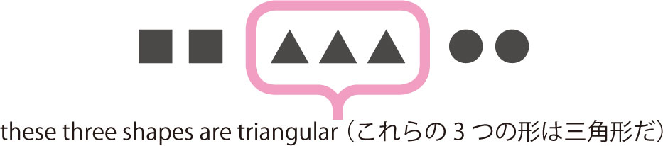

| Mr. Evineの英文法マスターコース[高校修了→大学入試] Mr. Evine シリーズ | |
| Evine | |
| (2009) | |
参照項目から元の箇所に戻るには、お使いのビューワーの仕様に従ってください。または一旦目次を表示し、戻りたい箇所の近くの見出しをタップして戻ってください。
英語の超人になる!
アルク学参シリーズ
「英語の超人になる!」
アルク学参シリーズ刊行に寄せて
大学受験のために必死で勉強する、これは素晴らしい経験です。しかし、単に大学に合格さえすればよいのでしょうか？ 現在の日本に必要なのは、世界中の人々とコミュニケーションを取り、国際規模で活躍できる人材です。総理大臣になってアメリカ大統領と英語で会談したり、ノーベル賞を受賞して英語で受賞スピーチを行ったり、そんなグローバルな「地球人」こそ求められているのです。アルクは、大学受験英語を超えた、地球規模で活躍できる人材育成のために、英語の学習参考書シリーズを刊行いたします。
はじめに
皆さんこんにちは、Evine（エヴィン）です。
本書を手にしていただきありがとうございます。
早速ですが、皆さんはこんな経験はありませんか？
「普通の例題は解けるのに、入試問題になるとなぜか解けない！」
これを解決するのが本書のメインテーマです。ご存知のとおり、１つの文法単元だけで解けるほど入試問題はシンプルにできていません。いろんな文法事項が混在して１つにまとまったものが入試問題ですから、ある程度のテクニックは必要です。
そこで本書の最大の特徴として、全てのレッスンを「高校修了レベル」「大学入試レベル」「演習問題」の３部構成としました。まず「高校修了レベル」として必須事項の総復習および発展的な文法事項を取り上げ、次に「大学入試レベル」として、入試頻出テーマを重点的に扱い、これまでに学んだ必須文法が入試ではどのような形で出題されるのか、その傾向と対策を学びます。入試問題に対するアプローチ方法をしっかり学んだ上で、最後は豊富な演習問題で知識を生きたものに磨き上げていきます。
本書で扱うテーマをマスターせずして他の勉強はありえません。まずこの１冊を仕上げれば、入試対策に必要な準備は万全です。自信を持って本書に集中し、実力の底上げを図りましょう。
ここで受験を乗り越えるコツを１つ伝授しておきます。
「間違えるたびに覚えようとせず、ひたすら同じ演習を繰り返す！」
あまりに必死に覚えようとすることで余計な力と不必要なプレッシャーがかかります。
何度も何度も同じ演習や類題演習を繰り返せば、自然に力がつきます。「間違えるという経験」を重ねること、これが何よりも大切です。
皆さんには最初から間違えたものを覚え込む作業よりも、とにかく量をこなし、英文に触れる機会を増やして欲しいのです。そうすることで同じ文法でも色んな角度から触れることになり、１つの方向からは理解できなかったものが、別の方向から触れることで驚くほど簡単に頭に定着するようになるでしょう。
Evineを信じ、本書がボロボロになるまで読み切ってください。
無駄な努力なんて何ひとつありません！
期待を裏切らないよう熱く英文法レッスンを展開していきますので、最後までお付き合いください。
Let's get started!
目 次
これだけは最初に
復習しておきたい必須ポイント
基本時制、進行形、未来形
時制のまとめと完了形
willとcan、過去形のニュアンス、「推量・義務・習慣」用法
注意すべき形、いろいろな受動態、文型と受動態
不定詞・動名詞・分詞
不定詞・動名詞の表現
SV・SVO・SVOO文型関連
SVC・SVOC文型関連
可算・不可算名詞、冠詞の用法、「数」「量」の表現
be 形容詞 to Vg、補語になる形容詞、紛らわしい形容詞・副詞
前置詞の使い分け、注意すべき用法
不定代名詞、注意すべき重要表現
疑問詞の注意すべき用法
その用法と使い分け、重要表現
付帯状況、時制、受動態、慣用表現
書き換え、頻出表現、紛らわしい表現
関係代名詞、前置詞＋関係代名詞
関係副詞、制限・非制限用法、複合関係詞
仮定法過去、仮定法過去完了、倒置
いろいろな仮定表現
本書の利用法
本書は、1つの文法項目について、高校英文法の総仕上げから入試対策まで1レッスンで学習できるようになっています。また、演習問題と解答解説を充実させ、覚えた知識がそのまま即戦力になるよう構成されています。本書でしっかり英文法の応用力を身に付け、入試対策を万全にしましょう。
学習の流れ
Pre-Lesson
レッスンを始める前に目を通しましょう。各レッスンの内容をスムーズに理解するために必要な基礎知識が確認できます。レッスンに登場する文法用語のレファレンス（索引）としても活用してください。
Lesson
レッスンは全部で22レッスンあります。それぞれ大学入試に必須の英文法が解説されています。1日1レッスンで取り組めるボリュームですが、自分の学習ペースに合わせて無理のない範囲で進めましょう。
Stage 1 高校修了レベル
高校レベルで押さえておきたい必須項目の総復習と発展的な文法事項を取り上げています。
高校英文法の総仕上げをしましょう。
Stage 2 大学入試レベル
入試頻出テーマを学習し、入試への実力をつけていきます。これまでに学んだ英文法がどのような形で入試で出題されるのか、その傾向と対策を学びます。
頻出テーマはQuiz形式になっています。問題を解きながら、即戦力をつけましょう。
Exercises
レッスンの仕上げは、演習問題です。問題はすべて入試問題に照準を合わせています。レッスンで学んだ知識が身に付いているか力試しをしましょう。
［標準問題］［発展問題］それぞれ50点満点です。合格ラインと配点は解答集のレッスンの解答ページに記載されています。参考にしましょう。
※（セ試・改）などの表記のある問題文は、センター試験及び各大学入試の英文を一部抜粋し、本書の問題作成に合わせて加筆修正しています。
まとめのテスト
各章の終わりに、その章で学んだ文法項目を復習するまとめのテストが設けられています。問題を解いて、自分の習熟度を確認しましょう。間違えた問題は復習を忘れずに徹底しましょう。
全レッスン修了テスト
全てのレッスンが終わったら、本書の総仕上げとして、修了テストが用意されています。本書で学習したことがどれだけ身に付いているか確認しましょう。
習熟度は解答集の最後に記載されている自己評価表を参考にしてください。
これも活用しよう!
［本書に登場する例文］
本書の特徴として、基本的にすべての例文は「日本語」⇒「英語」表記です。日本語の例文を読みながら英文を頭でイメージしたうえで実際の英文をチェックしてください。自然と英作文の力が身に付きます。
［最重要イディオムリスト100］
英作文やリスニングに必要不可欠なイディオムを100厳選しました。これらのイディオムは意味を覚えるだけでなく、自分で積極的に使えるように語法なども辞書で確認しておきましょう。
Pre-Lesson（序章）
これだけは最初に復習しておきたい必須ポイント
《A》 セットで押さえる品詞の基本機能
品詞は単独で押さえるだけではなく、他の品詞との関係を意識しなければ実際に使えるようにはなりません。最低限押さえるべき品詞と品詞の関係をチェックしておきましょう。
| ■不定冠詞＋可算名詞（単数形） | 不定冠詞a/anは可算名詞の前（または「形容詞＋名詞」の前）に置かれ、その名詞が不特定のものであることを示します。 |
|
□可算名詞の前：a book （ある１冊の本） □形容詞＋名詞の前：an English man （あるイギリス人の男性）（anは母音で始まる名詞の前） |
| ■定冠詞＋可算名詞（単数・複数形）・不可算名詞 | 定冠詞theは可算名詞・不可算名詞の両方の前に置くことが可能で、その名詞が特定のものであることを示します。 |
|
□可算名詞の前：the book （その本） □不可算名詞の前：the water （その水） |
| ■形容詞⇒名詞を修飾 | 形容詞は修飾語の1つで、名詞の前か後ろに置かれその名詞の「性質・状態・数量」などを示します（限定用法）。また他の機能として、英文中で補語として働くことも重要なポイントです（叙述用法）。 |
|
□限定用法：atall boy （背の高い男の子）、peoplepresent （出席している人々） □叙述用法（補語用法）：The boy istall. （その男の子は背が高い。） |
| ■副詞⇒名詞以外を修飾 | 副詞は形容詞と同じ修飾語の1つで、名詞以外のいろいろなものを修飾し、「場所・時・頻度・程度・状態」などを示します。副詞は形容詞と異なり、文型の主要素にはなりません。 |
| □動詞を修飾：study Englishhard （一生懸命に英語を勉強する） |
|
■前置詞＋名詞、 前置詞＋動名詞（Ving） |
「前置詞＋名詞」は「前置詞句」と呼ばれ、1つのまとまりとなって「形容詞句または副詞句」の働きをします。名詞を修飾する形容詞句の働きなのか、「場所・時・方法」などを示す副詞句なのか、しっかり判断することが重要です。また前置詞の後ろに動詞が来る場合は、必ず動名詞（Ving）になります。 |
|
□形容詞句：the boysin the park （公園の少年たち）
※前置詞句in the parkが名詞the boysを修飾
□副詞句：visit himon Sunday （日曜日に彼を訪ねる）
※前置詞句on Sundayが動詞visitを修飾
□前置詞＋動名詞（ Ving ）：He is goodat talking. （彼は話すことが上手だ。）
|
| ■名詞⇒代名詞に変化 | 代名詞は「名詞を言い換えた」言葉です。基本的に1回登場した名詞は繰り返しを避けるために2回目からは代名詞に変化します。代名詞は単数形・複数形、主格・目的格・所有格など数や働きによって形が変化することに注意しましょう。また長文読解においては、代名詞が示す具体的な内容（名詞）が判断できなければ文脈を正しく読み取ることはできません。 |
|
□代名詞：He likes dogs, but his mother doesn't likethem（=dogs）. （彼は犬が好きだが、彼の母親は好きではない。） |
|
■A＋（等位）接続詞＋B、 （従属）接続詞＋SV |
接続詞は、「語と語」、「句と句」、「節と節」など「言葉をつなぐ働きをする」言葉で、等位接続詞と従属接続詞の2種類あります。うまく利用すれば英文読解で効果的に文脈を押さえることができます。 等位接続詞：and、but、orなど 従属接続詞：because、when、if、that、thoughなど また同じ意味の従属接続詞と前置詞の書き換えパターンには要注意です。 |
|
□従属接続詞：While節 I stayed in Yokohama, I met her. （私が横浜に滞在している間、彼女に会った。） □前置詞：During名詞句 my stay in Yokohama, I met her. （横浜での滞在中、彼女に会った。） |
| ■助動詞＋Vg | 助動詞は動詞の前に置き、その動詞に可能・意志・義務などの「色々なニュアンスを追加する」言葉です。進行形・受動態を作るbe動詞、疑問文・否定文を作るdo、完了形を作るhaveなども助動詞の仲間です。助動詞の後ろに置かれる動詞は必ず原形に戻るということも注意しましょう。 |
|
□可能・許可：can、may □意志・提案：will、shall □義務・当然：must、should など |
［本書の略語・記号］
| S | 主語（＝名詞） |
| V | 動詞（＝他動詞、自動詞） |
| O | 目的語（＝名詞） |
| C | 補語（＝名詞、形容詞） |
| M | 修飾語・句（＝形容詞、副詞など） |
| Vg | 動詞の原形 |
| Ved | 動詞の過去形（ate、sawなど） |
| Vpp | 動詞の過去分詞形（eaten、seenなど） |
| Ving | 動詞の現在分詞形（ing形）、動名詞形 |
| to Vg | 不定詞（＝to＋動詞の原形） |
| （ ） | 省略可能 |
| ［ ］ | 言い換え可能 |
| S'、C'、O'、M' | 要素記号の( ' )は節の中にある要素を意味する |
《B》 動詞と文型
1. 5文型
英語の語順パターンは全部で5つです。SやVなどの記号は英文の主要素を意味し、5文型はS＝主語、V＝動詞、C＝補語、O＝目的語で構成されます。
| 第1文型 | SV | 主語＋自動詞 | Sは...する |
| 第2文型 | SVC | 主語＋自動詞＋補語 | SはCである、SはCになる |
| 第3文型 | SVO | 主語＋他動詞＋目的語 | SはOを［に］...する |
| 第4文型 | SVO1O2 | 主語＋他動詞＋目的語（O1）＋目的語（O2） | SはO1（人） にO2（物）を...する |
| 第5文型 | SVOC | 主語＋他動詞＋目的語＋補語 | SはOをCにする |
「僕の母は（午前中）、（妹と）（公園まで）歩く。」
S My motherV walks（ to the park ）（ with my sister ）（ in the morning ）.
（SV文型）
「僕は（今日）、（とても）幸せだ。」
S IV am（ very ）C happy（ today ）.
（SVC文型）
「トムは（とても）野球が好きだ。」
S TomV likesO baseball（ very much ）.
（SVO文型）
「カオリは私に食べ物をくれた。」
S KaoriV gaveO1 meO2 some food.
（SVO1O2文型）
「私の娘はいつも私を幸せにしてくれる」
S My daughter（ always ）V makesO meC happy.
（SVOC文型）
※（ ）は修飾語・句（M）と解釈します。
2. 自動詞と他動詞
動詞は自動詞と他動詞の2種類に大きく分かれ、その働きによって文型が決定します。
| 自動詞 | 完全自動詞 | 動詞の後ろは何もなし、または修飾語のみ | SV文型 |
| 不完全自動詞 | 動詞の後ろは補語 | SVC文型 | |
| 他動詞 | 完全他動詞 | 動詞の後ろは目的語が1つまたは2つ | SVOまたはSVO1O2文型 |
| 不完全他動詞 | 動詞の後ろは目的語＋補語 | SVOC文型 |
細かく区別しましたが、完全自動詞は自動詞、不完全自動詞は自動詞の例外、完全他動詞は他動詞、不完全他動詞は他動詞の例外という意識で押さえておきましょう。
3. 補語と目的語
見た目では判断がつきにくい補語と目的語ですが、その働きをしっかり意識すれば正しく判断できるようになります。
| 補語 |
SVC文型⇒主語の説明をし、S=Cの関係になる SVOC文型⇒目的語の説明をし、O=Cの関係になる |
形容詞か名詞 |
| 目的語 |
他動詞（動作）の目的・内容・対象を示す。 補語とは異なりイコール関係を作ることはできない。 |
名詞のみ |
補語は主語や目的語とのつながり、目的語は動詞とのつながりに注目しましょう。
《C》 まとまりの意識 句・節
品詞が他の品詞とセットになったように、英文解釈ではまとまりの意識が大切です。単純に単語と単語がセットになった形を「句」と呼び、S'V'を含んだものを「節」と呼びます。句と節のどちらも1つのまとまりで名詞・形容詞・副詞の働きをします。
| ■句 | 「2つ以上の単語が集まった」ものを句と呼びます。名詞句は主語・目的語・補語、形容詞句は修飾語・補語、副詞句は修飾語になります。 | |
| □名詞句 |
Swimming in the river can be dangerous. （川で泳ぐのは危険なこともある。） |
|
| □形容詞句 |
The babycrawling on the floor is our son. （床をハイハイしている赤ちゃんは私たちの息子だ。） |
|
| □副詞句 |
Asato became one year oldthis month. （アサトは今月1歳になった。） |
|
| ■節 | 「主語と動詞がある」カタマリを節と呼びます。名詞節は目的語や同格、形容詞節は修飾、副詞節は条件・目的・譲歩などを表します。 | |
| □名詞節 |
I don't thinkthat he will come. （私は彼が来るとは思わない。） |
|
| □形容詞節 |
The girlwho came here is my sister. （ここに来た女の子は僕の妹だ。） |
|
| □副詞節 |
I didn't eat anythingthough I was hungry. （お腹が空いていたが、私は何も食べなかった。） |
|
《D》 修飾語
修飾語には形容詞と副詞があります。これらの修飾語は他の単語を詳しく説明する働きをしており、このことを「修飾する」と言います。単純に「説明する」と覚えておきましょう。
「その町にはとても良い医者がいた。」
There was a副詞very形容詞gooddoctor in the town.
副詞（very）は形容詞（good）を、形容詞（good）は名詞（doctor）を修飾しています。
《E》 準動詞
「準動詞」は、「動名詞」「不定詞」「分詞」「分詞構文」の総称です。
● 動名詞...動詞が名詞になったもので、Vingの形をとります。英文の主要素S、O、Cのいずれかになります。
「英語を話すことはやりがいがある。」
S［名詞句］Speaking English is challenging.
● 不定詞...to Vgの形で、名詞句（S、O、C）、形容詞句・副詞句（M）になります。
「私はその試験に合格するための計画を立てた。」
I made a planM［形容詞句］to pass the exam.
「私はその試験に合格するために一生懸命勉強した。」
I studied hardM［副詞句］to pass the exam.
● 分詞...Ving（現在分詞）またはVed（過去分詞）の形を分詞と呼びます。分詞を用いる文には、進行形、完了形、受動態があります。
「彼は宿題をしている。」
He is［現在分詞］doing his homework. （進行形）
「私の車が盗まれた。」
My car was［過去分詞］stolen. （受動態）
※現在分詞は動名詞とは違って名詞ではないことに注意しましょう。
● 分詞構文...「接続詞＋S'V'」の副詞節を、分詞（VingまたはVed）で表した副詞句を指します。
［副詞節］｛［接続詞］ BecauseS' IV' have no time,｝［主節］ I can't go to the gym with you.
［副詞句］｛［現在分詞］ Having no time,｝［主節］ I can't go to the gym with you.
これら準動詞の特徴は、もともとは動詞であったことです。そのため後ろに補語や目的語、修飾語句などを引きつれてくるのが普通です。
「その仕事をすることは、そんなに簡単ではない。」
S ［DoingO' that job］ is not so easy.
Doingはもともと他動詞do「...をする」であるため、目的語that jobを後ろにとった形になっています。
Chapter 1
動詞関連の攻略
Lesson 01
時制（1） / 基本時制、進行形、未来形
Lesson 02
時制（2） / 時制のまとめと完了形
Lesson 03
助動詞 / willとcan、過去形のニュアンス、「推量・義務・習慣」用法
Lesson 04
受動態 / 注意すべき形、いろいろな受動態、文型と受動態
Lesson 05
準動詞（1） / 不定詞・動名詞・分詞
Lesson 06
準動詞（2） / 不定詞・動名詞の表現
Lesson 07
動詞の語法（1） / SV・SVO・SVOO文型関連
Lesson 08
動詞の語法（2） / SVC・SVOC文型関連
Quick
Check
この英文は正しい？
My brother is belonging to a baseball club.
（答えはこちら）
Lesson01
時制（1）
基本時制、進行形、未来形
時制を判断する上で、カギになるのは動詞です。このレッスンでは、動詞を軸に、現在形・過去形・未来形の３つの基本時制と進行形・未来形のニュアンスを理解しましょう。
Stage 1 高校修了レベル
時制の判別は過去形を起点に！
時制は動詞の形を見るだけで判断できますが、難しいのは動詞そのものが問われているケースです。そんなときは、前後の文脈と「時」を表す副詞で時制を判別しなければなりません。
その判別において、過去形は他の時制に比べて判断しやすく、まずはその英文が過去形なのかどうかを起点にすれば時制の判別はかなりラクになるでしょう。
●過去を明確にする表現
「私はかつて、彼のおじさんに出会った。」
Imet his uncleonce.
yesterday （昨日）、数詞＋ago （...前）、last ... （先週の...、この前の...）、in＋過去の年号 （...年に）、just now （ついさっき）、once （かつて）など
「時」を表すwhen節の時制をヒントに過去時制であると判断することもあります。
「私が彼女を見かけたとき、彼女は泣いていた。」
When I saw her, shewas crying.
●時制の一致ルールを利用する
主節が過去時制の場合、あとに続く動詞の時制は1つ古くなる、これが時制の一致です。
つまり、現在形→過去形、過去形→過去完了形に変化する特徴があります（詳しくはL.02／こちらで）。
Iknew he（ is / was ） a singer.
Iknew hewas a singer.
（私は彼が歌手だということを知っていた。）
このような場合、過去を示す表現がなくても過去時制であることが判断できますね。ただ、普通は、文脈や「時」を示す副詞で過去であることが明確な状況で過去形にしますので、それらをヒントにすれば必ず過去形か他の時制かは判断できるはずです。
進行形、ここを極めたい重要ポイント！
進行形【be＋Ving】は基本時制に一時的ニュアンスを加える表現です。ここでは「...しているところだ」（現在）の基本解釈を知っているだけでは不十分な重要ポイントを扱います。
●現在形と現在進行形の根本的な違い
（A） 「お父さんは電車で会社に行く。」
My fathergoes to the office by train.
（現在の習慣）
（B） 「お父さんは今週はバスに乗って会社に行っている。」
My fatheris taking a bus to the officethis week.
（一時的な状況）
英文（A）は現在の習慣を示す現在形ですね。一方、英文（B）のように現在進行形になると、一時的な現在の状況や動作を表し「期間限定」のニュアンスを表現することができます。
●過去形と過去進行形の根本的な違い
「姉［妹］が入って来たとき、僕は音楽を聴いていた。」
Iwas listening to musicwhen my sister came in.
この1文で両者の役割の違いをつかんでおきましょう。過去形で示されるのは過去のある時点（when my sister came in）での出来事、そしてその時に進行中であった動作は過去進行形です！
「駅で彼を見たとき、彼はその女性と話をしていた。」
When Isaw him at the station, hewas talking with the woman.
●状態・知覚・心理を示す状態動詞
「兄［弟］は野球部に所属している。」
My brotherbelongs（×is belonging） to a baseball club.
belongは「（...に）所属している」という意味で、状態動詞と呼ばれます。状態動詞はそのままで「...している」という進行ニュアンスを含む動詞で進行形にはできません。
では状態動詞を3つのグループに分けて、重要なものをまとめて覚えておきましょう。
状態：be、belong、consist、contain、depend、have、own、remain、resembleなど
知覚：feel、hear、look、see、smell、sound、tasteなど
心理：believe、know、like、love、realize、remember、understand、want、wishなど
●例外！状態・知覚・心理動詞の進行形
進行形の持つ「一時的状態」ニュアンスを表現するために状態動詞をあえて進行形にする場合があります。
「静かに！君たちはふざけ過ぎだ。」
Be quiet! Youare being silly.
※これはYou are silly. （君たちはふざけている。）を強調したものと考えましょう。
「彼は今月、彼女の家に住んでいる。」
Heis living at her house this month.
これだけは押さえる未来の表現、頻出パターン！
●will Vg 、be going to Vg
「私の母は来年、60歳になる。」
My motherwill be 60 years old next year.
「私はそのホテルまで彼を迎えに行く予定だ。」
I'm going to pick him up at the hotel.
根本的な違いとして、すでに準備が出来上がってしまった予定はbe going toで表現するということ、とっさの思いつきや判断はwillで表現するということを確実に押さえておきましょう。
「すぐに夕食にしますよ。」
Weare going to have dinner soon.
（準備万端）
「うわ、外は寒いなぁ。よし、コートを取ってくるよ。」
Oh, it's freezing outside. OK, I'll get my coat.
（その場の判断）
●進行形、現在形で表す未来
進行形では実現しつつある近い計画・予定を表現し、現在形では交通機関の時刻表や公式日程など変更がないであろう確実なことを表現します。他の時制と区別するために、基本的には未来を示す副詞と共に用いて、未来であることは明確にされますので安心してください。
「私たちはこれから外出するところだ。」
Weare going outnow.
「次の中間テストは6月3日だ。」
The next mid-term testis on June 3rd.
●be going to Vgと進行形be Vingで表す未来の違い
特に動詞にgo to を用いた場合はややこしいですね。大きな違いは確定度の差です。どちらも話し手の中で準備OKの予定・計画ニュアンスがあるのですが、より確定度の高い予定は進行形be Vingで表しましょう。be going to Vgは確定とは断言できない内容を指します。
「今夜、東京に行く。」
I'm going to Tokyo tonight.
（確定度の高い予定）
「今夜、東京に行く予定だ。」
I'm going to go to Tokyo tonight.
（確定とは断言できない内容）
Stage 2 大学入試レベル
意外に見落としがちな未来表現の番外編
Quiz 01
日本語に直しましょう。
① I was about to go out when my boss came in.（西南大）
② I will be attending the meeting next Tuesday.
① be about to Vg （まさに...するところだ）は行う直前の行動を示す口語表現。進行形で表す未来とほぼ同じと解釈できます。また、進行形の場合は「時」を表す副詞が必要です。
またwhen my boss came inより時制は過去と判断し、beは過去形wasになることに注意しましょう。
Answer
上司が入って来たとき、私はまさに外出するところだった。
② will be Ving （...しているところだろう）。この未来進行形は未来のある時点で進行中の動作や出来事を示す以外に、確定的な予定を表す用法として用います。
単純未来のwillと異なる点は、予定・計画の日程が明らかであること、その時点ですでに決定していた予定・計画であり、話し手の気持ちとは無関係に実施されることを示します。
Answer
来週［次］の火曜日の会議には出席しているだろう。
●未来の表現パターンは書き換えで覚えてしまおう！
Quiz 02
次の基本文を、考えられる全ての未来表現パターンで書き換えましょう。
基本文：We move to the next town.
Answer
Wewill move to the next town next year.
（来年、隣の町に引っ越すだろう。）
Weare going to move to the next town this weekend.
（今週末、隣の町に引っ越す予定だ。）
Weare moving to the next town now.
（今から、隣の町に引っ越すところだ。）
Wewill be moving to the next town next Sunday morning.
（来週［次］の日曜日の午前は、隣の町に引っ越しているところだろう。）
Weare about to move to the next town.
（まさにこれから隣の町に引っ越すところだ。）
Wemove to the next town on Monday next week.
（来週の月曜日、隣の町に引っ越します。）
形に合わせて副詞を少し追加していますが、太字の部分のパターンをしっかり覚えてしまってください。基本文をもとに肉付け練習を何度もすれば未来の表現パターンは自由にコントロールできるようになります。
●確定度ランキング
先ほどチェックした書き換えパターンですが、一般的には、以下の順位で確定度が変わります。
※話し手の主観によっても異なりますので、あくまでも参考程度にしましょう。
| 確定度 | 時制の形 |
|
低 ↑ 高 |
will Vg |
| be going to Vg | |
| 現在進行形 be Ving、未来進行形will be Ving、be about to Vg | |
| 現在形 |
注意すべき基本時制の攻略！
Quiz 03
時制に最も合う適切な形を選びましょう。
① I （ go / went / will go ） to the park every day when I was living in Canada.
② I （ run / ran / will run ） into her at the station just now.
③ Mary （ doesn't / didn't ） dance much now, but she （ use to / used to ） a lot.（慶応大）
④ Three times five （ was / is / will be ） fifteen.
① every day は現在時制であるとは限りません。when ... Canadaより過去時制であることは明らかですから、過去形wentが正解です。過去時制はこのように通例、「時」を表す副詞（句・節）を伴いますので、注意すれば勘違いしないで済むでしょう。ここは過去の習慣を示しています。
Answer went
（カナダに住んでいたとき、私は毎日公園に行った。）
②just now は「ついさっき」（＝a moment ago）の意味では過去形と共に使います。
ただし、「たった今」という意味では現在完了形（詳しくはL.02／こちらで）で用いるので注意しましょう。
※run into ... 「（バッタリと偶然に）...と出会う」。
Answer ran
（私はついさっき駅で彼女と偶然に出会った。）
③ 「過去の習慣」を示す重要表現used to Vg（以前は...したものだ）を用いて現在と過去の対比を表したものです。時制の決め手はnow（今は）で現在形、but（でも...）で過去との対比であると判断できます。not ... much（あまり...ない）、used toの後ろにはdanceが省略されています。
Answer doesn't、used to
（メアリーは今はあまりダンスをしないが、以前はよくしたものだ。）
④ 実はこれ、掛け算の問題でした。timesは前置詞で「...倍」という意味があります。つまり、Three times fiveで「3の5倍」、その答えは「15」と表現したものですね。掛け算の計算式のような不変の真理は現在形で表しましょう。
Answer is
（3×5は15です。）
※文法的には、主語を複数と解釈しareでもOK。
Quiz 04
時制に最も合う適切な形を選びましょう。
① She （ was knowing / knew / know ） about my brother when she met him at the party.
② I feel bored and sleepy in Mr. Brown's lessons, since he （ always used / is always using ） the same material.（セ試）
③ Experts say those trees （ dead / are dying ） at an alarming rate.
すべて進行形に関連した問題でした。基本時制をしっかり整理し、区別できるようにしたいですね。
① when ... partyから文脈を把握し、時制は過去と判断できますね。
さらにknowは状態動詞で進行形にできないため結局、単純な過去形でした。
Answer knew
（そのパーティーで彼女が僕の兄［弟］に出会ったとき、彼女は彼について知っていた。）
② I feel ... sinceまでの文意が理解できなれば苦しい問題でした。
実は文法的にはどちらでもOKなのですが、「授業が退屈で眠たい、なぜかって...」という話の流れで用いたい表現がbe always Ving （いつも...してばかりいる）です。
この表現は日常的に繰り返される行為に対して感情を強め不満や愚痴を表現するためによく用いられています。進行形の「一時的」ニュアンスから「繰り返し」ニュアンスに派生しています。
※since ... （...なので）＝because、as
Answer is always using
（ブラウン先生の授業は退屈で眠たいよ、だって彼はいつも同じ教材ばかり使っているんだから。）
③ 現在進行形は「...しかかっている」という意味で緊迫した寸前の状況を表現する場合があり、問題はまさにそのケースです。またdeadは形容詞のため、動詞が必要なこの位置では文法的に不適切ですね。
（○）those treesare dead
Answer are dying
（専門家はそれらの木々は驚くべき勢いで枯れかけていると言う。）
後悔するのも、泣くのも、そして笑うのも自分。
Lesson01
Exercises 標準問題
1.
次の各英文の（ ）に入れるのに最も適当なものを選びましょう。
① She （ ） back in an hour.（札幌大・改）
（ア）will
（イ）was being
（ウ）will be
（エ）is being
② Aerobics （ ） very popular in the 1980s.（中京大）
（ア）are
（イ）is
（ウ）was
（エ）were
③ （ ） the barber this afternoon. I really need a haircut.（札幌学院大・改）
（ア）I'm going to go
（イ）I went to
（ウ）I'm going to
（エ）I will
④ In 1570, at the age of 23, he （ ） the army and fought the Turks.（駒澤大）
（ア）joins
（イ）was joining
（ウ）joined
（エ）will join
⑤ She generally sings very well, but now she （ ） very badly.（横浜商大）
（ア）sings
（イ）is singing
（ウ）sing
（エ）sang
⑥ Nowadays, most people （ ） to fly from Sapporo to Tokyo.（札幌大）
（ア）chose
（イ）choose
（ウ）will be chosen
（エ）were choosing
⑦ Oh, no! （ ） and I forgot my umbrella.（札幌学院大）
（ア）It rained
（イ）It's raining
（ウ）It will rain
（エ）It rains
⑧ I （ ） a strange noise while she was cooking.
（ア）will hear
（イ）heard
（ウ）was hearing
（エ）am hearing
⑨ I （ ） to his birthday party at about 6 p.m. tomorrow.
（ア）will be going
（イ）came
（ウ）going
（エ）did go
2.
次の日本語の意味に合うように、（ ）内の語（語句）を正しく並び替えましょう。
① 私は夏に北海道に行く。
（ going / in / Hokkaido / I / to / am / go to ） the summer.
② 急いで。みんな待ってるよ。（駒澤大・改）
Hurry up. （ you / waiting / everybody / is / for ）.
③ 彼女はいつもボールを捕りそこなってばかりだった。（愛知学院大）
She （ always / the ball / missing / was ）.
④ 電話が鳴ったとき、私は昼食を食べていた。（桃山学院大・改）
I （ the phone / lunch / when / was / rang / having ）.
Exercises 発展問題
1.
次の各英文の（ ）に入れるのに最も適当なものを選びましょう。
① I don't think I can meet you at six tomorrow night because we have a lot of extra work this month. I think （ ）.（セ試）
（ア）I'll still be working
（イ）I'll still work
（ウ）I'm still at work
（エ）I'm still working
② My father （ ） in the park every day when he was young.
（ア）used to jog
（イ）jogs
（ウ）is jogging
（エ）will jog
③ Just tell him I called when he （ ） in.（武蔵大・改）
（ア）gets
（イ）has got
（ウ）was getting
（エ）will get
④ The girl closely （ ） my mother.（玉川大・改）
（ア）resembles
（イ）is resembling
（ウ）resembles with
（エ）is resembling with
⑤ Stop it; you're （ ） ridiculous.（桜美林大）
（ア）be
（イ）been
（ウ）being
（エ）to be
⑥ She's alive! She （ ） but her father saved her.（セ試）
（ア）drowns
（イ）is drowning
（ウ）was drowning
（エ）drowned
2.
次の日本語の意味に合うように、（ ）内の語（語句）を正しく並び替えましょう。ただし、1語だけ余分なものがありますので注意してください。
① 新しいコピー機は今週末までに事務所に届いているだろう。（拓殖大・改）
The new photocopier （ arriving / by / is / the office / be / at / will ） the end of this week.
② 子供達はその家の近くで野球をやっていたが、窓を割ってしまった。（札幌学院大）
The kids （ breaking / and / near the house / broke / playing baseball / they / were） a window.
③ 電話が鳴った時、エミリーはまさに外出するところだった。（金沢工大）
Emily （ when / go out / going to / to / about / was ） the telephone rang.
3.
次の英文は基本文を未来の表現パターンで表現したものです。（ ）に適切な語を入れて完成させましょう。
基本文：Our boss has a big meeting.
① Our boss （ ） （ ） （ ） （ ） a big meeting this weekend.
② Our boss （ ） （ ） a big meeting soon.
③ Our boss （ ） （ ） （ ） a big meeting at this time tomorrow.
Lesson02
時制（2）
時制のまとめと完了形
基本時制（現在形・過去形・未来形）はそれぞれの「時」が独立した状態を表します。ここでは、間違えやすい時制のポイントをチェックしましょう。
Stage 1 高校修了レベル
時制の一致とその例外を極めよう！
まず、原則として主節が過去時制であれば、後に続く動詞も過去時制、過去完了時制になることを時制の一致と言います。
「私は彼がお金持ちであると知っている。」
Iknow heis rich.
「私は彼がお金持ちであると知っていた。」
Iknew he現在形→過去形was rich.
「彼は彼女が入院していたことを知らない。」
Hedoesn't know shewas in the hospital.
※主節が現在形でも、後の内容が過去であれば過去形。
「彼は彼女が入院していたことを知らなかった。」
Hedidn't know she過去形→過去完了形had been in the hospital.
主節が過去時制になれば、後ろの動詞の時制が現在形→過去形、過去形→過去完了形と1つ古くなるんですね。それではここを押さえたうえで、以下の例外ルールをチェックしていきましょう。
●科学的現象、不変の真理や格言（ことわざ）を表す現在形
「僕の兄［弟］は、水は100℃で沸騰することを知らなかった。」
My brother過去形didn't know water現在形boils at 100℃.
（科学的現象）
「息子は、太陽は東から昇り西に沈むことを学んだ。」
Our son過去形learned the sun現在形rises in the east and現在形sets in the west.
（不変の真理）
「私の父はいつも、時は金なり、と言った。」
My father always過去形said time現在形is money.
（格言）
過去から現在、そして今後も変化しないであろう事象を不変の真理と呼びます。
●今も変わらない人の習慣や動物の習性を表す現在形
「彼女は毎朝6時に起きると言った。」
She過去形said she現在形gets up at six every morning.
「彼は、ペンギンは飛べないと私たちに言った。」
He過去形told us penguins現在形can't fly.
●歴史上の事実を表す過去形
「非暴力主義の指導者、マハトマ・ガンジーは1869年に生まれたと私たちは学んだ。」
We過去形learned Mahatma Gandhi, the apostle of nonviolence,過去形was born in 1869.
（×）...had been born in 1869
歴史上の事実は過去形のままで時制の一致をしないため、過去形was born →過去完了形had been bornにはなりません。
この他にも仮定法（詳しくはL.19／こちらとL.20／こちらで）は時制の一致をしません。
基本は上記で挙げたポイントだけでOKですからまとめて頭に叩き込んでしまいましょう。
頻出表現 have been to ... は「経験」用法とは限らない？！
「私たちはオーストラリアに2回行ったことがある。」
Wehave been to Australia twice.
have been to ... （...に行ったことがある）は現在完了形・経験用法でおなじみですが、次のような英文の場合、この用法だけでは適切な解釈はできません。
Wehave just been to the station to pick up my daughter.
（×） 「私たちは娘を迎えに、ちょうど駅に行ったことがある。」
どうでしょうか。これでは不自然ですね。
実は、have been toには2通りの解釈があり、有名な経験用法「...に行ったことがある」の他に完了用法として「...へ行ってきたところだ」という解釈があるんです。
（○）「私たちは娘を迎えに、ちょうど駅に行ってきたところだ。」
この完了用法の場合はたいていjustやalreadyなど完了ニュアンスを持つ副詞を伴い、それがヒントになりますので利用しましょう。
現在完了形のNGパターン！
特定の過去であることが明らかな副詞・副詞句・副詞節と現在完了形は一緒にできません。
「私は先週彼に会わなかった。」
（×） I haven't seen himlast week.
（○） Ididn't see him last week.
特定の過去の一時点を尋ねるwhenやwhat timeも現在完了形では用いないのが原則です。
「いつ宿題を終えましたか。」
（×）When have you finished your homework?
（○） Whendid youfinish your homework?
これは現在完了形が過去→現在へのつながりを表すため、過去だけに束縛する副詞と相性が悪いからですね。でも次のようにsinceを用いると過去を示す副詞を使うことができます。
（○） I haven't seen himsincelast week.
（私は先週からずっと彼に会っていない。）
Stage 2 大学入試レベル
過去形 vs 現在完了形
Quiz 01
日本語に合うように、適切なものを選びましょう。
「彼女はどうなったのかしら。」
I wonder what （ became / has become ） of her.（高知大・改）
「どうなった」は素直に考えると過去形becameですが、結論から言えば、問題文のニュアンスでは現在完了形has becomeが適切です。
Answer has become
このクイズには、現在完了形の持つニュアンスがよく表現されています。
この文は単純に過去の出来事・状況を述べているのではなく、「過去に何かが起こってそれがきっかけで今日の状態になった」ことをほのめかしています。
これを表現するには現在完了形しかありません。過去形は過去の一時点にとどまる表現であり現在へのつながりニュアンスはありません。
今回のように「過去のある時点で何かをし、それが今日に影響している状況」は現在完了形で表し、これを結果の用法と呼びます。
細かく説明しましたが、結果用法の表現としてwhat has become of ... （...はどうなったのか）は重要ですので押さえておきましょう。
※become of ... 「（通例、whatなどを主語にして）...はどうなるのか」。
今回のように日本語「...なった」につられて過去形にしてしまうミスは多いものです。単に過去の状況を述べているのか、それとも現在に意識が置かれているのか、それによってうまく形を使い分けてください。
「彼女はあなたを娘と考えるようになった。」
Shehas come to think of you as her daughter.
※come to Vg 「...するようになる」。
過去形 vs過去完了形
過去形と過去完了形、使い分けを明確にしておきましょう。
Quiz 02
適切な時制の形を選びましょう。
「彼女は子供のころ、北海道に5年間住んでいた。」
She （ ） in Hokkaido for five years when she was a child.
（ア）lived （イ） had lived
過去であることを示す表現と一緒に現在完了形は使えませんでした。過去完了形の場合は過去表現と一緒に用いることは可能ですが、1点注意しなければなりません。
過去の習慣・状態を表すときは過去形で表現するということです。
問題の場合、when she was a child に注目してください。これは「子供のころ」という過去の一時期を表現しており、「その当時の一定期間の習慣・状態」を表す過去形が正解になります。
Answer （ア）
さて、これに関連して注意したいのが次の英文です。
Ihad been sleeping in the living room for six hourswhen my brother came home.
（弟が帰宅したとき、私はリビングで6時間ずっと寝ていたのだ。）
同じ過去でも、when節は過去の習慣・状態ではなく「過去のある時点に」というライン（⇒過去の動作）になっています。
過去完了形は過去のある一時点までに完了した、経験した、そして継続していた出来事を指しますから、この用法のwhen節と相性抜群なんですね。
頭を整理すると、Quiz02のwhen ... child（彼女が子供のころ）のような、単純に過去の習慣・状態を示す場合には過去完了形はNGだということです。
演習でも登場させますので、繰り返しここを読み返して頭を整理しておきましょう。
超頻出！ 時や条件を表す副詞節中の現在形・現在完了形
Quiz 03
時制に最も合う適切な形を選びましょう。
① I don't know if he （ visits / will visit / visited ） us next Sunday.（関西大・改）
② We'll go for a swim if it （ is / will be / was ） sunny tomorrow.（慶應大・改）
③ He asked me if I （ am / will be / was ） ready then.（宇都宮大・改）
④ He will return your book when he （ reads / has read / will read ） it.（龍谷大・改）
⑤ I'll have returned to Japan by the time this letter （ reaches / will reach ） you.（名古屋経済大・改）
普通の時制の感覚であれば、next Sundayやtomorrowは未来時制と考え①②はそれぞれwillを選ぶのが自然な発想のはず...、でもここで見極めたいのがその例外ルールです！
「時」や「条件」を表す副詞節中においては、主節が未来のことでも現在形・現在完了形で表す！
「...するとき」「もし...したら」と仮定的なニュアンスが強くなるため、現実の時制を当てはめる必要がないわけです。副詞節は簡単に説明すれば、主節以外の「時」「条件」「理由」「譲歩」などを示すサブの部分です。（詳しくはL.14／こちらで）
即座に注目すべきポイントはif節が副詞節か名詞節かということです。名詞節であれば素直に文脈や「時」を示す副詞によって時制を判断します。そして、副詞節であれば、未来のことでも現在形・現在完了形ルールを考えなければなりません。英文①〜③は共通して if を用いていますが、if節が名詞節なら「...かどうか」、副詞節なら「もし...なら」と解釈が異なることも先に注意しておきましょう。
① 他動詞knowの目的語となるので、if以下は名詞節です。next Sunday（来週の日曜日）より時制は未来ですね。名詞節の場合はその時制に素直に従います。
Answer will visit
（彼が来週の日曜日に私たちを訪ねてくるかどうかは分からない。）
② 条件を示す副詞節です。未来を示す副詞tomorrow （明日）がありますが、if節の動詞は現在形になります。副詞節かどうかの判断は主節の文型をチェックすると浮き彫りになります。
S [We] V[will go] M [for a swim] ...
（私たちは泳ぎに行くつもりだ）
ここで大切なのは最初のSVだけで英文が完結しているという点です。詳しくはL.07／こちらで勉強しますが、goは自動詞で、後ろに何も主要素（OやC）を必要としません。ということは残りはすべて修飾語（M）というわけです。
さらに、修飾語には形容詞と副詞がありますが、形容詞はたいてい名詞とくっつきますので、問題文のif節は形容詞ではなく副詞のカタマリと判断できます。
問題文のような英文を攻略するには、ここまでの判断が感覚として自然にできるようにしなければなりません。
Answer is
（明日晴れたら、私たちは泳ぎに行くつもりだ。）
③ ask O1 O2 （O1にO2について尋ねる）の直接目的語O2になる名詞節です。名詞節であればif節の動詞はその英文の時制に従います。過去を示す副詞then （そのとき）があることから過去形にしましょう。
Answer was
（彼はそのとき私に準備ができているかどうか尋ねた。）
④ まず構造を分析してwhen節が名詞節か副詞節かの判断をしましょう。
S[He] V[will return] O[your book] ...
（彼はあなたの本を返してくれるだろう）
ここまでで英文はSVO文型で完結していますね。when節が名詞節ならばこの中に主要素として収まっているはずですが、ありませんね。ということで、残りの部分のwhen節は「時」を表す副詞節と考えて、未来のことでも現在時制のルールが適用されることは間違いありません。
選択肢の未来時制⇒現在時制に当てはまらないwill readを消去すれば残ったのはどちらも現在時制reads、has readです。ここで考えたいのは両者が持つニュアンスです。
現在形は現在の習慣、状態ですから「（いつも）読み終わると」というニュアンス、現在完了形の場合はその名の通り、「読み終わったら」という完了ニュアンスで考えます。文脈に合うのは現在完了形ですね。
Answer has read
（読み終わったら、彼はあなたの本を返してくれるだろう。）
⑤ 未来完了形will have Vppの定番がby the time（...する頃には）とのセットです。
by the time ...（...する頃には）は「時」を表す副詞節を導くため、未来でも現在形で示されます。
by ... youは見た目には現在形ですが、未来のことを表しているのがポイントです。
Answer reaches
（この手紙があなたに届くまでには、私は日本に戻っているだろう。）
他の時制でby the timeを用いるときも、副詞節の中は現在形になりますので混同しないように注意してください。
「彼がそこに着くまでには、暗くなっているだろう。」
Itwill be dark by the time he gets there.
さあ、要点をまとめましょう。このルールで大切なのは副詞節か名詞節かの見極め！
それを判断するには主節の英文構造を見抜き、その節が主節の文型を構成する主要素になっているかどうかがポイントになります。
またifのように副詞節か名詞節かで解釈が異なるものもありますので要注意ですね。
「時」「条件」を表す副詞節を導く接続詞たち
「彼が来るまで待ちましょう。」
Let's wait till hecomes.
if（もし...なら）、when（...するとき）、the next time（この次...するとき）、before（...する前に）、after（...した後に）、till［until］（...までずっと）、as soon as（...するとすぐに）、by the time（...するまでには）、whether A or B（AであろうとBであろうと）など
ifとwhetherはともに名詞節で「...かどうか」という意味で使う場合もあるので注意しましょう。
できる人は、それだけの努力をしています。
Lesson02
Exercises 標準問題
1.
次の日本語の意味に合うように、（ ）内の語（語句）を正しく並び替えましょう。
① 彼が入ってきたとき、私は1時間読書をしていた。（セ試・改）
I （ when / reading / an hour / been / for / had ） he came in.
② 大学を卒業してから2年になる。
It （ two years / since / been / has ） I graduated from college.
③ あなたが来るなら、私は家にいる。（大阪商大）
I （ if you / stay home / come / will ）.
2.
次の各英文の（ ）に入れるのに最も適当なものを選びましょう。
① I （ ） him for over 20 years.（大阪学院大）
（ア）know
（イ）am knowing
（ウ）have known
（エ）have been knowing
② By the time you get home, all the cherry blossoms （ ）.（明海大・改）
（ア）fall
（イ）fell
（ウ）have fallen
（エ）will have fallen
③ Mary is absent today. She （ ） to Hokkaido.（上智大）
（ア）comes
（イ）has been
（ウ）has gone
（エ）has arrived
④ Runa, our lovely dog, （ ） around seven months ago.
（ア）has died
（イ）has been dead
（ウ）is dead
（エ）died
⑤ I have been living in Nagoya （ ） I came to Japan six years ago.（南山大）
（ア）from
（イ）since
（ウ）until
（エ）when
⑥ I have just （ ） to Hakata Station to see my girlfriend off.（九州産業大）
（ア）been
（イ）visited
（ウ）going
（エ）went
⑦ When I heard the announcement, I realized that （ ）.（福岡大）
（ア）I had taken the wrong train
（イ）I will have taken the wrong train
（ウ）I have taken the wrong train
（エ）I take the wrong train
⑧ He （ ） home just now. Didn't you know that?（昭和女子大）
（ア）has come
（イ）had come
（ウ）came
（エ）has been coming
⑨ When I'm driving, I always （ ） sunglasses if it （ ） very bright and sunny.（東京国際大）
（ア）wear -- is
（イ）will wear -- will be
（ウ）wore -- was
（エ）will wear -- is
⑩ I was tired after the test last Friday, because I （ ） all day long every day for a week.（セ試）
（ア）had been working
（イ）have been working
（ウ）have worked
（エ）was working
Exercises 発展問題
1.
次の各英文の（ ）に入れるのに最も適当なものを選びましょう。
① Can I ask you to lend me the magazine when you （ ） reading it?（青山学院大）
（ア）finished
（イ）have finished
（ウ）will finish
（エ）will have finished
② （ ） she died.（立命館大）
（ア）Three years passed from
（イ）Three years are passing after
（ウ）Three years have passed since
（エ）It was three years that
③ Our horse-riding club has won all the competitions （ ）.（明治大・改）
（ア）ago
（イ）so far
（ウ）previously
（エ）first
④ "Is Bill using your car?" "Yes, I wonder when he （ ） it."（セ試）
（ア）has returned
（イ）returned
（ウ）returns
（エ）will return
⑤ In the last 60 years, the level of national health （ ）.（日本女子大）
（ア）has gone up
（イ）has to be gone up
（ウ）was going up
（エ）was gone up
⑥ "Did you know that Albert Einstein, the famous physicist, （ ） meat?"
"Yes, if my memory serves, he became a strict vegetarian one year before he died."（セ試・改）
（ア）hadn't stopped eating
（イ）has been stopped eating
（ウ）has stopped eating
（エ）stopped eating
⑦ These days more people （ ） computers, because the prices are going down.（松山大・改）
（ア）bought
（イ）had bought
（ウ）are buying
（エ）will have been buying
2.
次の各文の下線部の中で文法的に誤っているものを記号で答えましょう。
①（ア）It（イ）has been raining hard（ウ）from（エ）last night.（桜美林大）
②（ア）Until the eighteenth century Scotland（イ）has been（ウ）an independent country with a government of（エ）its own.（神奈川大）
③（ア）By the time he retires , Professor Yamada（イ）has taught（ウ）for（エ）almost 40 years.（上智大・改）
④（ア）In 1945 when he（イ）was born in the U.S.A., the war（ウ）had ended only a few months（エ）ago.（甲南大）
⑤ I learned（ア）the death of Hideyoshi Toyotomi（イ）had not made（ウ）public（エ）for a while.（早稲田大・改）
⑥ He has（ア）ever climbed Mt. Fuji（イ）many times（ウ）since he（エ）was a teenager.（立正大）
Lesson03
助動詞
willとcan、過去形のニュアンス、
「推量・義務・習慣」用法
動詞に別のニュアンスを加えるのが助動詞です。助動詞の使い方によってそれぞれどのようなニュアンスが生まれるのか、しっかりと学習しましょう。
Stage 1 高校修了レベル
助動詞の代表willとcanの用法を整理しよう！
| willの主な用法 | 例文 |
| 単純未来 |
Our sonwill be 2 years old next year. （息子は来年2歳になる。） |
| 意志表示 |
I'll give you a call tonight. （今夜、電話するよ。） |
| 強い拒否 |
The doorwon't open. （ドアがどうしても開かない。） |
| 習性・傾向 |
Oilwill float on water. （油は水に浮くものだ。） |
|
相手の意志確認 （→依頼・勧誘） |
Will you help me, please? （手伝ってくれますか。） |
| canの主な用法 | 例文 |
| 能力 |
Ican speak French. （フランス語が話せます。） |
| ＝Iam able to speak French. | |
| ＝Iam capable of speaking French. | |
| 否定の推量・可能性 |
Shecan't be married. （彼女が結婚しているはずがないよ。） |
|
Can it be true that she died? （彼女が死んだなんて本当なのか。） |
|
| 許可（可能） |
Can I borrow your iPod? （あなたのiPodを借りてもいいですか。） |
能力「...できる」用法のcanは他の助動詞の後ろや完了形では必ずbe able toを用います。また過去形においては仮定法（詳しくはL.19／こちらで）との混同を避けるためbe able toを用いることが多いです。
助動詞の過去形が持つニュアンスを極める！
助動詞の現在形と過去形が混在すると、整理するのが難しいですね。そこで、助動詞の過去形ニュアンスに焦点を当てて現在形との違いをハッキリさせましょう。
●過去形とは...？
まずL.01／こちらで学んだ過去形のニュアンスをチェックしておきましょう。ずばり、過去形とは現在からの「離別」です。現在から距離を置いたのが過去形です。ここがまず重要ですから押さえてください。
「私は彼女を愛していた。」
Iloved her.
過去形は現在の事実と切り離されるため、話し手の真意は次のようになります。
「私は今や彼女を愛していない」
Idon't love hernow.
●過去形は「社会との距離感」を生む
では、過去形ニュアンスの応用です。過去形は「距離」のニュアンスをもともと持っているため、それを発展させて「時」ではなく「人・社会」との距離に意識を置けば、気持ちを遠まわしに、距離を保って相手に伝えることができるようになります。
現在形→ストレート表現
「クラスの生徒たちにこの招待状を配ってくれますか。」
Will you hand out these invitations to the students in your class?
「5ドル貸してもらえますか。」
Can you lend me five dollars?
過去形→丁寧・婉曲表現
「クラスの生徒たちにこの招待状を配っていただけますか。」
Would you please hand out these invitations to the students in your class?
「5ドル貸してくださいませんか。」
Could you lend me five dollars?
will［would］は相手の意志確認、can［could］は相手の能力確認の違いがあります。couldを用いたほうがwouldよりも丁寧とされますがそれほど大差はありません。
過去形で人・社会との距離感が生まれ、言葉の響きを和らげ丁寧さを生むわけですね。
そして、さらには丁寧さがネガティブに働くと曖昧さや確信度の低さが生じます。
「彼女は間違っているのかもしれない。」
Shemay be wrong.
「（ひょっとしたら）彼女は間違っているのかもしれない。」
Shemight be wrong.
mightはmayよりも確信度が低くなりますが、一般的にはそれほど大差がない場合も多いです。
このように、助動詞・過去形の大きな特徴として、現在時制でも過去形を用いることができます。
●時制の一致による過去形
主節が過去形になると時制の一致によって、従属節の助動詞が過去形になることがあります。この場合、助動詞の過去形の特徴である「丁寧さ」「曖昧さ」「確信度の低さ」とは関係なく、単なる文法的な力によって時制が変化しているだけです。
「私はヨコヤマ先生が手伝いに来るのを知っている。」
Iknow Mr. Yokoyamawill come to help me.
「私はヨコヤマ先生が手伝いに来るのを知っていた。」
Iknew Mr. Yokoyamawould come to help me.
このwouldはknow→knewになったことによる時制の一致ですね。時制の一致以外に助動詞の過去形が持つニュアンスもあるということも覚えておきましょう。（詳しくはL.19／こちらで）
助動詞＋have Vppで過去の内容を示す！
現在から、過去の出来事を述べる「助動詞＋have Vpp」表現です。
●現在から「過去の出来事について推量」する
must have Vpp
「...した（だった）にちがいない」
強い推量
can't［couldn't］have Vpp
「...した（だった）はずがない」
強い否定の推量
「あなたは私とその映画を見たはずよ。」
Youmust have watched the movie with me.
「君がそのときサトシを見たはずがないよ、彼はまだ家族とシカゴにいるんだから。」
Youcan't［couldn't］have seen Satoshi then because he is still in Chicago with his family.
※couldn'tで言い換えると推測の度合いが高く（より曖昧に）なります。
●現在から「過去の出来事について後悔」する
should［ought to］have Vpp
（...するべきだった）
実現せずに後悔
shouldn't［ought not to］have Vpp
（...するべきではなかった）
実現して後悔
「彼はそのクラブに参加するべきだった。」
Heshould have joined the club.
「彼は彼女にその話をするべきではなかったのに。」
Heshouldn't have told her the story.
※shouldの部分はought toで言い換えることも可能です。
Stage 2 大学入試レベル
助動詞の「推量」用法をまとめて攻略！
Quiz 01
日本語に合うように、適切なものを選びましょう。
① 「母が正しいのかもしれなくて、きっと彼が間違っているんだ。」
My mother （ may / must / can ） be right but he （ may / must / can ） be wrong.
② 「彼らが君を傷つけるはずがない。」
They （ may not / mustn't / can't ） hurt you.
③ 「夜通し勤務するので、明日は一日中寝ているはずだ。」
Because I'll work all night, I （ may / can / should ） be sleeping all day tomorrow.
① canは能力「...できる」以外に可能性「...であり得る」の用法がありますが、この問題には合いません。mayは弱い推量「...かもしれない」、そしてmustは強い推量「きっと...だ」の用法があります。
Answer may、must
② 否定形can'tで強い否定の推量「...のはずがない」という意味があります。may not（...でないかもしれない）、mustn't（...してはいけない）はどちらも不適切。
Answer can't
③ shouldは「（当然）...のはずだ」という意味で当然の推量を表すことができます。文法的にはいずれもOKですが、問題のように自然の流れの中で当然こうなっているだろう、という状況を表現するのがshouldです。
Answer should
助動詞の「義務」用法をまとめて攻略！
Quiz 02
日本語に合うように、適切なものを選びましょう。
① 「私は朝の5時に出発しなければならなかった。」
I （ must leave / had to leave ） at five in the morning.
② 「君はお母さんの手伝いをするべきだ。」
You （ should / ought / might ） help your mother.
① mustに過去形はないので、had to Vg（...しなければならなかった）で代用します。
Answer had to leave
否定の表現に注意
「その男の言うことを聞いてはいけない。」
Youmustn't listen to the man.
「私たちはこの宿題をする必要はない。」
Wedon't have to do this homework.
禁止must not 「...してはいけない」、不要don't have to 「...する必要はない」
② mightに「義務」用法はありません。oughtは後ろにtoが必要ですから形として誤りですね。shouldは推量用法以外に「...するべきだ」という意味で「義務」を表現することができます。
Answer should
●「忠告」「脅し」のhad better表現
「今、宿題をしたほうがいい。」
Youhad better do your homework now.
had better Vg（...したほうがよい）は、カジュアルな場面や自分自身についての話、親しい友人との間ではshouldの感覚で気軽に使えますが、それ以外の場合は「...したほうが身のためだ」と高圧的な印象を相手に与えますので注意しましょう。
否定語notの位置にも注意。
had betternot Vg
「...しないほうがいい」
助動詞の「現在 vs 過去」
Quiz 03
日本語に合うように、適切なものを選びましょう。
① 「その本を買ったはずなんだ、でもどこに置いたのか覚えていないんだ。」（九州産業大・改）
I （ cannot buy / must buy / cannot have bought / must have bought ） the book, but I don't remember where I put it.
② 「あなたはそこに行く前に私の家に電話をすべきだった。」（札幌大）
You （ should call / should have called / ought not to have called ） my home before you went there.
① 時制は現在（覚えていない）でも、過去の内容（買った）を表現することができるのが「助動詞＋完了形」のポイントです。
肯定的な強い推量はmust have Vpp（...したにちがいない）、否定の推量は文字通り否定形になっているcannot［couldn't］have Vpp（...したはずがない）になりますから、文脈より前者が正解ですね。cannotをcouldn'tに置き換えると曖昧さがupし、確信度も低くなります。
Answer must have bought
② まずbefore you went thereより、話の内容が過去であることが明らかで、「助動詞＋完了形」用法と考えます。「...すべきだった」とありますから、文法的に「肯定形」を選択しなければなりません。ということで、実現しなかった過去を後悔するshould have Vpp（...するべきだった）が正解です。ought not to have Vppは過去の行動内容を後悔し、「...するべきではなかった」という意味です。
Answer should have called
Quiz 04
適切なものを選びましょう。
① I don't feel well. I might （ catch / have caught ） a cold.（近畿大・改）
② The man （ can't be / can't have been ） relied on because he is always telling lies.
① まずcatch a coldで「風邪をひく」という意味があります。ここで考えたいのは「風邪をすでにひいた（⇒過去の出来事）」可能性があるのか、それとも「今後風邪をひく」可能性があるのかです。
1文目より、すでに気分が良くないわけですから、すでに風邪をひいた可能性があると考え、完了形を用いたmight have caughtが正解です。
Answer have caught
（気分が良くないんだ。ひょっとしたら風邪をひいたのかもしれない。）
② he ... lies（彼はいつも嘘ばかりついている）より、現在の状況を示していることから現在形can'tが正しいですね。このcan'tは否定の推量表現で「...のはずがない」という意味です。時制をしっかり意識すれば、「助動詞＋完了形」を用いるべき状況は明らかになります。
Answer can't be
（その男を信頼できるはずがない、いつも嘘ばかりついているんだから。）
must have Vpp vs should have Vpp
Quiz 05
適切なものを選びましょう。
I don't see their car. They （ must have gone / should have gone ） home.（青山学院大・改）
mustには「義務」だけでなく「強い推量」用法があり、must have Vppはこの用法から「...したにちがいない」という意味になります。文脈よりこれが正解ですね。should have Vppは「...するべきだった（でもしなかった）」という意味です。
Answer must have gone
（彼らの車が見当たらない。きっと家に帰ったんだ。）
must have Vppを「...しなければならなかった」と解釈をしないように注意。
「習慣」用法のused to vs would
Quiz 06
適切なものを選びましょう。
I don't smoke any more, but I （ would / used to ） a lot.
wouldとused toの根本的な違いを覚えておきましょう。
| 共通点 | 過去の習慣的動作「...したものだ」を表す。 |
| 相違点 | used toは現在と対比される過去の習慣「（以前は）よく...したものだ」、過去の継続的状態「（以前は）...だった」を表現するが、wouldはそれができない。 |
（×） Hewould （→○used to） live in Kobe.
（彼は神戸に住んでいた。）
liveは通常、比較的長期間の継続を意味するもので、wouldは使えません。wouldは断続的で不規則な習慣を表し、通常、状態動詞には用いません。used toは動作・状態動詞のどちらにも使えます。
それでは、クイズの英文をチェックしましょう。問題文の前半I ... moreで述べているのは現在の状況「もはやタバコは吸わない」、そして、but以降は過去の習慣になっており、現在と過去の対比と考えられused toが正解です。
Answer used to
（私はもはやタバコは吸わない、以前はよく吸ったものだが。）
Lesson03
Exercises 標準問題
1.
次の日本語の意味に合うように、（ ）内の語（語句）を正しく並び替えましょう。
① お茶をおかわりしてもよろしいですか。（関東学院大・改）
（ another / I / tea / cup of / can / have ）?
② ドアがどこかおかしい。どうしても開かないんだ。（福岡大・改）
Something is wrong with the door; （ will / it / open / not ）.
③ 私はかつて妹とままごとをしたものだ。（関東学院大）
I （ to / house / with / used / my / play ） sister.
④ 同じ事が私たちの生徒に起こり得るのだ。
The （ to / our students / could / happen / same thing ）.
2.
次の各英文の（ ）に入れるのに最も適当なものを選びましょう。
① If you press the button, the door （ ）.（関西学院大）
（ア）opened
（イ）is opened
（ウ）will open
（エ）has opened
② The movie was terrific. You （ ） have come with me.（中部大）
（ア）should
（イ）shouldn't
（ウ）would
（エ）wouldn't
③ You （ ） introduce me to the professor because we have already met.（立正大・改）
（ア）never
（イ）should
（ウ）don't have to
（エ）will
④ You （ ） go jogging after dark in this neighborhood.（法政大・改）
（ア）had not better
（イ）had better not
（ウ）not had better
（エ）had not better to
⑤ Ken （ ） committed such a serious crime.（獨協大）
（ア）can be
（イ）cannot have
（ウ）is
（エ）shall be
⑥ I could not （ ） with him to the beach because I had too much homework to do.（立命館大）
（ア）go
（イ）had gone
（ウ）went
（エ）will go
⑦ Yesterday a friend of mine had an accident and I （ ） him to the hospital.（大東文化大・改）
（ア）must have taken
（イ）taken
（ウ）had to take
（エ）take
⑧ （ ） it be true that he bought a sports car?（広島経済大）
（ア）Can
（イ）Had
（ウ）Has
（エ）Did
Exercises 発展問題
1.
次の日本語の意味に合うように、（ ）に適語を入れて英文を完成させましょう。
① たとえ雨が降っていても行くつもりだ、と彼は言った。（駒澤大）
He said that he （ ） go even though it was raining.
② ジョンがオックスフォードに住んでいたとき、彼はよく私に会いに来てくれたものだ。（桜美林大）
When John lived in Oxford, he （ ） often come to see me.
③ この話は本当のはずがない。（大阪商大・改）
This story （ ） be true.
④ あなたのEメールアドレスを教えていただけますか。
（ ） you mind giving me your email address?
⑤ 彼女はたとえ激しい痛みを感じても歯医者に行こうとしなかった。（学習院大・改）
She （ ） not go to the dentist even though she felt a sharp pain.
2.
次の各英文の（ ）に入れるのに最も適当なものを選びましょう。
① "Where is John?" "He's still sleeping. He （ ） to go to class."（広島工大）
（ア）ought
（イ）must
（ウ）cannot
（エ）should
② The baby is sleeping. So, you （ ） be so noisy.（中部大）
（ア）had better not
（イ）had better not to
（ウ）had not better
（エ）had not better to
③ It was only an informal party. You （ ） up.（セ試・改）
（ア）didn't have to dress
（イ）don't have to dress
（ウ）mustn't dress
（エ）can't dress
④ Mr. Johnson wasn't home when I called, but I （ ） contact him at his office.（立正大・改）
（ア）used to
（イ）could not
（ウ）was able to
（エ）should have
⑤ Dorothy isn't in the office; she （ ） coffee in the cafeteria.（セ試）
（ア）can be having
（イ）can have
（ウ）might be having
（エ）might have
⑥ She looks very happy. Something good （ ） to her yesterday.（関西外大）
（ア）might have happened
（イ）might happen
（ウ）happen
（エ）may happen
⑦ If you want to be on time, you （ ） be there by 11 o'clock.（上智大・改）
（ア）will
（イ）have to
（ウ）might
（エ）can
⑧ He （ ） think of his own interests before.
（ア）has to only
（イ）has only to
（ウ）only has to
（エ）had only to
Lesson04
受動態
注意すべき形、いろいろな受動態、
文型と受動態
このレッスンでは、受動態のさまざまな書き換えパターンや用法をチェックし、複雑な受動態の形をマスターしましょう。
Stage 1 高校修了レベル
形に要注意！ 受動態4つの書き換えパターン！
まず忘れてはならない「能動態⇔受動態」の書き換えポイントは能動態の目的語が受動態の主語になる！ということです。逆に言えば、目的語のない英文は受動態にできません。これを押さえたうえで、以下に挙げた間違えやすい書き換えパターンをチェックしていきましょう。
●進行形の受動態
進行形はbe Vingですね。このVingの形を受動態の基本形be Vppのbeに当てはめます。
be Vpp
being Vpp
そして頭に進行形の特徴であるbe動詞を追加して完成です。
being Vpp
be being Vpp
Theyare buildinga new lodge over there.
A new lodgeis being built over there （by them）.
（向こうで新しいロッジが建設中だ。）
「by＋動作主」は動作主に代名詞を置く場合は省略するのが普通です。
●現在完了形の受動態
現在完了形の基本形はhave Vppですね。これを受動態にするとhave been Vppとなります。現在完了形の特徴であるhaveを前にそのまま残します。
Many childrenhave readthis book.
（多くの子供たちがこの本を読んだ。）
This bookhas been read by many children.
（この本は多くの子供たちに読まれた。）
●助動詞の受動態
助動詞の受動態は、受動態の基本形be Vppの形そのままに助動詞を前に置くだけです。
Weshould solvethis problem soon.
（私たちはすぐにこの問題を解決するべきだ。）
This problemshould be solved soon.
（この問題はすぐに解決されるべきだ。）
●群動詞の受動態
動詞＋前置詞、動詞＋副詞＋前置詞のようにセットになって1つの動詞のように働くものを群動詞と呼びますが、その受動態はセット語順を崩さないのが重要ポイントです。
Kentalaughed at me.
（ケンタは私を笑った。）
Iwas laughed at by Kenta.
（私はケンタに笑われた。）
その他に注意すべき群動詞：
speak to（〜に話しかける）、look at（〜を見る）、run over（〜を［車］でひく）、take care of（〜の世話をする）、look down on（〜を軽蔑する）⇔look up to（〜を尊敬する）など
受動態で用いる他動詞を押さえる！
「そのニュースは私たちを驚かせた。」
The newssurprised us.
他動詞surpriseは「...を驚かせる」という意味があります。
これを受動態にすると「（...に）驚かされる」⇒「驚く」と能動態のような解釈になります。
「私たちはそのニュースに驚いた。」
Wewere surprised at the news.
「...させる」という意味を持つ他動詞を使って「（主語が）...して」という能動の意味にするためには、必ず受動態にしなければならないことを覚えておきましょう。
●「...させる」を意味する他動詞から生まれた感情・心情を示す受動態表現
be confused（混乱して）、be surprised（驚いて）、be satisfied（満足して）、be pleased（喜んで）、be disappointed（がっかりして）、be worried（心配して）など
また、感情・心情を示す他動詞以外にも、被害・状態を示す他動詞は次のような状況では必ず受動態で登場します。
「私は神戸で生まれた。」
Iwas born in Kobe.
「彼女の兄［弟］はその自動車事故で亡くなった。」
Her brotherwas killed in the car accident.
born < bear （...を産む）、killed < kill （...を殺す）という意味ですから、主語が「産まれる」、「死ぬ」という意味にするには受動態でなければなりません。
●被害・状態を示す受動態表現
be injured（傷ついて）、be wounded（けがをして）、be raised（育って）、be married（結婚して）など
ちなみにbe動詞ではなくgetを用いると「（その状態に）なる」という意味を表現することができます。
「私は彼と結婚した。」
I got married to him.
by以外の前置詞と結びつく受動態 頻出表現！
受動態は動作主をbyで示すというイメージがありますが、実際にはby以外の前置詞を用いることも多く、以下に最低限押さえておきたいものをピックアップしました。
|
be interested in ... （...に興味がある） |
「私の祖父は英語に興味がある。」 My grandfatheris interested in English. |
|
be known to ... （...に知られている） be known for ... （...で有名である、...のことで知られる） |
「僕の兄［弟］はみんなに知られている。」 My brotheris known to everybody. 「京都は古い伝統的な建築物で有名である。」 Kyotois known for its old traditional buildings. |
|
be caught in ... 「（渋滞、悪天候など）に遭う」 |
「今朝、交通渋滞に巻き込まれてしまったよ。」 Iwas caught in a traffic jam this morning. |
|
be involved in ... （...に関係している、従事している） |
「彼はその犯罪に関与していた。」 Hewas involved in the crime. |
「be Vpp to Vg」パターンの受動態
受動態の形に不定詞を取ったbe Vpp to Vgという形の表現がいくつかあります。代表的なものは未来表現be going to Vgのように1つの助動詞表現として押さえておくとよいでしょう。
|
be believed to Vg （...だと信じられている） |
「赤色は幸運な色だと信じられている。」 Redis believed to be a lucky color. |
|
be expected to Vg （...することを期待されている） |
「彼女は職場復帰を期待されていた。」 Shewas expected to return to work. |
|
be said to Vg （...だと言われている） |
「イシカワさんは良いマネージャーだと言われていた。」 Ms. Ishikawawas said to be a good manager. |
|
be supposed to Vg （...することになっている） |
「私は今日の午後、レポートを提出することになっている。」 I'm supposed to hand in my report this afternoon. |
※be supposed toで、自分の意思とは関係なく、「規則・慣習・法律」などにより「しなければならない」気持ちを表現することが可能です。
Stage 2 大学入試レベル
SVO / SVOC文型の能動態⇔受動態を攻略！
Quiz 01
能動態は受動態に、受動態は能動態に書き換えましょう。
① The mayor is giving an address in the city hall.（京都大）
② A new building has been built since last month.
③ We named the dog Kuro.
① 注目すべきところは目的語an address（演説）です。能動態の目的語を主語に持ってくることで、動作（動詞）の影響を受ける側（人・物事）の立場や内容を強調するのが受動態の特徴の1つです。
Answer An address is being given by the mayor in the city hall.
（市役所で演説が市長により行われている。）
② 受動態の主語が能動態の目的語になります。has beenで、現在完了形の受動態であることも判断できますね。
また、この英文のように動作主が省略されている場合は文意に合わせてyou、we、theyなどを使い分けることになります。ここでは建設現場で働く第三者の人々を指してtheyを用います。
訳出しない不特定のtheyは、ある特定の地域・場所・店の人たちを指します。
Answer They have built a new building since last month.
（新しい建物が先月から建設中だ。）
③ 目的語はthe dogで、これを主語にした受動態にします。この英文はSVOC文型になっており、補語を主語にした受動態にはできません。
（×）Kuro was named the dog.
Answer The dog was named Kuro （by us）.
（その犬はクロと名づけられた。）
youは一般の人々、weは話し手を含んだ話題に言及する際に用いて、訳出しない。youとweは境界線があいまいなため、どちらでも言い換え可能なことが多い。
SVOO文型の能動態⇔受動態を攻略！
Quiz 02
受動態に書き換えましょう。
He will show you a good book.（中央大）
受動態は目的語を主語として扱うため、目的語を2つ取るSVOO文型ではそれぞれの目的語を主語にした2通りの受動態に書き換えることができます。
S［He］V［will show］O1［you］O2［a good book］.
Answer
① O1 を主語にした受動態
Youwill be shown a good book （by him）.
（あなたはよい本を見せられるだろう。）
② O2 を主語にした受動態
A good bookwill be shown（to）you （by him）.
（よい本があなたに見せられるだろう。）
O2を主語にした場合、O1の前に前置詞to/forが必要ですがtoは省略することも可能です。（前置詞to/forの使い分けについて詳しくはL.07／こちらで）
語法に注意したい受動態
Quiz 03
適切なものを選びましょう。
The travelers were （ stolen / robbed of ） everything.（福岡教育大・改）
最初から受動態になっているもので素直に構造が理解できない場合は、一度能動態に戻してやります。そこで知らなければならないのがstealとrobの語法です。
steal O（盗む物） from ... （盗む相手）
「...からOを盗む」
rob O（奪う相手） of ... （奪う物）
「Oから...を奪う」
目的語を主語にしたものが受動態で、問題の主語は「The travelers＝人（奪う相手）」になっていますから、目的語としてthe travelersを取ることができるのはrobですね。
今回のように目的語に何を置くことができるかや、後ろに前置詞を取る動詞の語法にも注目しなければ、受動態はマスターできません。またSVO＋前置詞句は受動態に書き換えた際に前置詞が抜け落ちないように注意しましょう。
（×） The travelers were robbed everything.
Answer robbed of
（その旅行者たちはすべてを奪われた。）
自動詞は受動態にはできない！
Quiz 04
次の英文の誤りを正しましょう。
① A terrible accident was happened the other day.
② My friend told me where the ceremony would be taken place.（セ試・改）
① happenは「起こる、生じる」という意味の自動詞です。受動態は目的語を主語にした形ですから目的語を取らない自動詞は受動態にできません。
Answer （×）was happened （○）happened
（先日、ひどい事故が起こった。）
② take placeはhappenやoccurの言い換え表現で、これで1つの自動詞「起こる」と考えることができます。自動詞を用いて受動態にすることはできないため、能動態に戻せば正解です。
Answer （×）be taken place （○） take place
（友人が私にどこでその式が行われるのか教えてくれた。）
「疑問詞＋受動態」に注意しよう！
Quiz 05
受動態に書き換えましょう。
Who invented the telephone?（岡山商大）
目的語the telephoneを主語にした受動態にします。
The telephone was invented by （??）.
でこの（??）部分をwhoに置き換えて文頭に移動し、be動詞と主語の位置を入れ替えれば終了です（下の英文ア）。前置詞byを文末に残した形ですね。
また、形式的ですがbyを文頭に置くパターンも可能です（下の英文イ）。
その場合はwhoが目的格の形whomに変化するので注意しましょう。
Answer
（ア）Who was the telephone invented by?
（イ）By whomwas the telephone invented?
（誰によって電話は発明されましたか。）
They say that ... の受動態書き換えパターン
Quiz 06
ほぼ同じ内容になるように （ ） に適語を埋めましょう。
They say that she is a great artist.（神戸女子大・改）
（ア）It （ ） （ ） that she is a great artist.
（イ）She is （ ） （ ） be a great artist.
まずThey say that ... は「...だと言われている」という意味で、世間一般のことを述べる表現です。このTheyは訳出しません。 この表現の受動態パターンは次のように2通りありますのでしっかり押さえておきましょう。
Answer （ア）is said （イ）said to
（彼女は偉大な芸術家だと言われている。）
It is said that SVのItは形式主語でthat以下の内容を指します。
Lesson04
Exercises 標準問題
1.
次の日本語の意味に合うように、（ ）内の語（語句）を正しく並び替えましょう。
① 私たちは帰宅途中でにわか雨にあった。（中央大・改）
We （ caught / a shower / on / were / in ） the way home.
② ハリー・ポッターの本は、英語から多くの言語に翻訳された。（金沢工大）
The Harry Potter books （ English / from / into / many / translated / were ） languages.
③ 私のパソコンがウイルスに感染した。（中部大・改）
My personal computer （ a / been / with / has / infected / virus ）.
④ 彼は駅で私と会うことになっていたが、来なかった。（龍谷大・改）
He （ me / meet / the station / supposed / at / to / was ）, but he never came.
2.
次の各英文の （ ） に入れるのに最も適当なものを選びましょう。
① Five people （ ） in the car crash.（大阪経大）
（ア）injure
（イ）injured
（ウ）injury
（エ）were injured
② Jane （ ） the gift.（名古屋商大・改）
（ア）pleased
（イ）was pleased
（ウ）pleased to
（エ）was pleased with
③ I'm not （ ） in mathematics. I think it's really boring.（札幌学院大・改）
（ア）playing
（イ）interested
（ウ）excited
（エ）interesting
④ The boy （ ） the teacher for the wonderful report that he wrote.（獨協大）
（ア）was praising with
（イ）praising with
（ウ）praised by
（エ）was praised by
⑤ The tallest building in my town （ ） 50 years ago.（福岡大）
（ア）has built
（イ）has been built
（ウ）built
（エ）was built
⑥ The headquarters of this company （ ） in Seattle.（武蔵工大）
（ア）are located
（イ）locates
（ウ）located
（エ）locate
⑦ The farewell party will be （ ） next Thursday.（仁愛大）
（ア）taken
（イ）made
（ウ）brought
（エ）held
⑧ Unique insects （ ） in rain forests and in deserts.（立命館大）
（ア）are finding
（イ）are found
（ウ）find
（エ）have found
⑨ Taipei is （ ） having many of the world's greatest ancient historical sites.（セ試・改）
（ア）known
（イ）known to
（ウ）known for
（エ）known by
Exercises 発展問題
1.
次の各組の英文がほぼ同じ意味になるように、（ ） に適語を入れましょう。
①（名古屋外大）
（ア）Everybody in this company was aware of his dishonesty.
（イ）His dishonesty was （ ） （ ） everybody in this company.
②
（ア）What languages are spoken in China?
（イ）What languages （ ） （ ） speak in China?
③（獨協大・改）
（ア）They were making a fool of me.
（イ）I was （ ） （ ） a fool （ ）.
④
（ア）They say that his son is a good doctor.
（イ）His son is （ ） （ ） （ ） a good doctor.
2.
次の各英文の （ ） に入れるのに最も適当なものを選びましょう。
① Many doctors believe that cures for many forms of cancer （ ） soon.（清泉女子大）
（ア）will discover
（イ）will be discovered
（ウ）were discovered
（エ）have been discovered
② There are 50 computers in this room, and most of them （ ） now.（東京経大）
（ア）have used
（イ）are used to
（ウ）are being used
（エ）are using
③ Luck can （ ） a game.（セ試・改）
（ア）is involved
（イ）be involved
（ウ）be involved in
（エ）involved in
④ Kate （ ） of all the money she had with her.（西南学院大）
（ア）robbed
（イ）was robbed
（ウ）deprived
（エ）had deprived
⑤ When that exciting idea （ ） to me, I was in bed with a bad cold.（松山大・改）
（ア）occurring
（イ）was occurred
（ウ）has occurred
（エ）occurred
⑥ When I saw this movie, I （ ） what to do after graduation.（京都産業大・改）
（ア）was worried
（イ）was worrying
（ウ）was worried about
（エ）worry
⑦ Several people （ ） breaking the law.（関西外大・改）
（ア）have accused on
（イ）have been accused of
（ウ）was accused for
（エ）were accusing
⑧ On her way home from school, the little boy was （ ） a stranger.（九州産業大・改）
（ア）spoken
（イ）spoken to by
（ウ）spoken to
（エ）spoken by to
Lesson05
準動詞（1）
不定詞・動名詞・分詞
不定詞・動名詞・分詞をまとめて準動詞といいます。このレッスンでは、準動詞の基本用法以外に、学習者が間違えやすいポイントを押さえます。
Stage 1 高校修了レベル
不定詞の形式主語と形式目的語のit構文を押さえる！
●It is 形容詞 to Vg構文を押さえる！
※形容詞の他に名詞を置くこともあります。
不定詞（to Vg）には名詞的用法があり、主要素Sとして用いることはできますが、頭デッカチになってしまうため、通常は形式主語のitを置いて、不定詞部分（⇒真主語）は後ろに回します。
「英語を話すのは難しい。」
（△）To speak English is difficult.
（○）It is difficultto speak English.
不定詞の真主語を後ろに回し、代わりに形式主語itを置いた形ですね。見た目もスマートです。
また、この表現はS is 形容詞 to Vgで言い換えるパターンもありますので押さえておきましょう。
⇒English is difficult to speak.
この英文の構造は、不定詞で使用する他動詞speakの目的語Englishを主語に書き換えたものです。他にも前置詞の目的語を主語に書き換えたパターンもよく登場します。
「この川で泳ぐのはとても危険だ。」
It is very dangerous toswim inthis river.
This river is very dangerous toswim in.
●意味上の主語（for/of 人） to Vg
このパターンでさらに重要なのが、不定詞の意味上の主語「for/of 人」を置いた形です。
「私が英語を話すのは難しい。」
It is difficultfor me to speak English.
「大声で話すなんて私は不注意だった。」
It was carelessof me to speak loudly.
基本は「for 人」で押さえてください。ofとなる場合は、形容詞と意味上の主語がisで結べるかどうかで判断します。
（×） I am difficult.（私は気難しい。）
文意がまったく異なり不適切！
（○） I was careless.（私は不注意だった。）
文意からズレませんね！ これでOK。
この of を用いた場合は、「...するなんて」とオーバーリアクションぎみに訳します。
●V it ... to Vg表現を押さえる！
不定詞（to Vg）は他動詞の目的語として使用することができますが、SVOC文型においてはOの位置に不定詞を置くことはできません。
例えば、findにはSVOC文型として「OがCであると分かる」という意味がありますが、この目的語に不定詞を用いるのは誤りです。
「あの本を読むのは難しいと分かった。」
（×） I foundto read that book difficult.
見た目も冗長で、OとCの関係が分かりづらく不親切な英文です。こんなときに便利なのが形式目的語のitです。
（○） I foundit difficultto read that book.
不定詞部分（⇒真目的語）を後ろに回し、その代わりとしてitを置いているのがこのパターンです。このパターンを取る動詞はまとめて押さえてしまいましょう！
believe it ... to Vg（〜するのが...だと信じる）、find it ... to Vg（〜するのが...だと分かる）、make it ... to Vg（〜することを...にする）、think [consider] it ... to Vg（〜するのが...だと思う）など
動名詞の意味上の主語
不定詞にも意味上の主語があったように、動名詞にも意味上の主語があります。
「私がここでタバコを吸っても大丈夫ですか。」
Do you mindmysmoking here?
この英文の主語はyouですが、動名詞smokingの意味上の主語は「私」です。これをIではなく所有格myで示し、動名詞の直前に置くのがポイントです。この意味上の主語と動名詞はSV（Sが...する）関係になっています。⇒ 「私がタバコを吸うこと」
不定詞のニュアンス vs.動名詞のニュアンス
●不定詞が持つニュアンス
不定詞のtoは「...へ」と方向性を表しており、「未来」「未完了」のニュアンスを含んでいます。以下の表現はまさにこのニュアンスにピッタリです。
「今夜、彼に電話するのを忘れないで。」
Don'tforget to call him tonight.＝Remember to call him tonight.
forget to Vg（...することを忘れる）、remember to Vg（...することを覚えている）はともに未来を意識するとともに、動作がまだ未完了であることも表現しています。
●動名詞が持つニュアンス
forgetとrememberには、不定詞だけでなく動名詞を用いることもできますが、その場合はニュアンスが変化します。
「あなたは彼に電話したことを忘れた。」
Youforgot calling him.
「彼女は私とそこで会ったことを覚えている。」
Sheremembers meeting me there.
この動名詞（Ving）が持つのは「完了」「過去」のニュアンスです。まさにこの英文の内容は「過去」あるいは「完了」したことを表現しており、これが不定詞との大きな違いです。
使役動詞・知覚動詞と分詞の関係を押さえる！
「私はそこで車を修理してもらった。」
Ihad my car repaired there.
使役動詞（make、have、let）の後ろは「使役動詞＋目的語＋動詞の原形（原形不定詞）」の並びが定番ですが、上の例文のように「動詞の原形」部分に過去分詞を使うパターンは頻出です。
このパターンでは、目的語を主語にした受動態「目的語 is Vpp」関係が成立するのが特徴です。
（○） My carwas repaired.
（私の車は修理された。）
また知覚動詞（see、hear、feelなど）も使役動詞と同様に「知覚動詞＋目的語＋動詞の原形（原形不定詞）」のパターンが基本ですが、「動詞の原形」ではなく分詞を置くパターンも重要です。
●動詞の原形 vs.現在分詞
「彼はその生徒が窓を割るのを見た。」
Hesaw the student break the window.
「彼はその生徒が窓を割っているところを見た。」
Hesaw the student breaking the window.
動詞の原形は「一連の行為の一部始終」を目撃した、現在分詞は「一連の行為の一部（途中過程）」を目撃したことを意味します。現在分詞の「...している」という意味から一時点ニュアンスが強調されているわけですね。
●現在分詞 vs.過去分詞
「私は誰かに肩を触れられたのを感じた。」
Ifelt my shoulder touched by someone.
過去分詞を使うかどうかは、使役動詞のパターンと同様、目的語と分詞の関係で決まります。
My shoulderwas touched by someone.
（私の肩が誰かに触れられた。）
Stage 2 大学入試レベル
不定詞の3用法を攻略！
不定詞は名詞・形容詞・副詞の3つの機能を使い分ける必要があるため品詞要素が強く、文型感覚や形容詞と副詞の使い分けがしっかりできていなければマスターできません。
Quiz 01
次の下線部の不定詞と同じ用法の不定詞を用いている英文を記号で1つ選びましょう。
Do you wantto lose weight?（千葉工大）
（ア） The old woman has no oneto help her.
（イ） She went outto look for a taxi.
（ウ） You must be madto do such a thing.
（エ） Her next job isto wash the dishes.
Do you want O［to lose weight］?
（あなたは体重を減らしたいですか。）
まず基本文の不定詞は、他動詞wantの目的語となる名詞的用法の不定詞です。want to Vg（...したい）で定番の形ですね。
Answer （エ） 名詞的用法
（ア） 形容詞的用法として名詞no one（誰も...ない）を修飾する不定詞です。名詞と不定詞がSV関係になる構造にも注目しましょう。
No one helps her.
（誰も彼女を助けない。）
（その老婆には自分を助けてくれる人が誰もいない。）
名詞と不定詞のVO関係：
I had a lot of books to read.
（読む本をたくさん持っていた。）
V［read］O［a lot of books］ の構造
名詞と不定詞の同格（イコール）関係：
The plan to travel around the world is my dream.
（世界中を旅行する計画は私の夢だ。）
The plan＝to travel around the worldの構造
（イ） 行動（went out）の目的（...するために）を示す副詞的用法の不定詞です。
（彼女はタクシーを探すために外に出た。）
（ウ）判断の根拠（...するなんて〜だ）を示す副詞的用法の不定詞です。ここでmust be mad（気が狂っているにちがいない）と判断する根拠（理由）を不定詞が説明してくれるわけですね。
（そのようなことをするなんて、君は気が狂っているにちがいない。）
副詞的用法には他にも感情の理由（...して〜）を示すことができます。
「私は彼にそこで会って驚いた。」
I was surprisedto see him there.
（エ） 補語となる名詞的用法の不定詞です。不定詞の名詞的用法では主語や目的語だけでなく補語で用いることが可能です。
（彼女の次の仕事は皿洗いだ。）
注意すべき不定詞 vs.動名詞
Quiz 02
文法的な誤りを正しましょう。
① I didn't have anything to write by.
② He left the room without to be seen by anybody.（学習院大・改）
③ He got his leg to break while playing football.（摂南大・改）
④ I couldn't hear the teacher spoken because the students behind me were talking.（南山大・改）
① something to write with（何か書くもの）。write with ... は「...を使って書く」という意味ですが、write with の目的語であったsomethingが前に移動し、否定文でanythingに変化したものです。「...を使って書く」はwrite by somethingとは言いませんので、もとの構造を考え適切な前置詞を選択しなければなりませんね。
Answer （×） write by （○） write with
（私は何も書くものを持っていなかった。）
②前置詞の目的語に不定詞を置くことはできないため、to beは誤りです。一方、動名詞は前置詞の目的語として使用できます。前置詞の後ろは名詞のため、動詞beを動名詞beingにします。
Answer （×） to be （○） being
（彼は誰にも見られずに部屋を出た。）
③ 他の使役動詞（make、have、let）と異なり、使役動詞getは通常、get O toVg（Oに...してもらう）となりますが、Oの立場が「...される」であればto Vgではなく過去分詞（Vpp）になります。「...する」はto Vg、「...される」はVppとOの気持ちになって正しい形を決定しましょう。
Answer （×） to break （○） broken
（彼はサッカーをしている間に、足を折った。）
「男の子は虫歯を抜いてもらった。」
The boy had his bad toothpulled out.
have OVg （Oに...してもらう、させる）
have OVpp （Oを...してもらう、される）
④ 知覚動詞hear O Vg[Ving]（Oが...する［...している］のを聞く）。Oが「...する」立場であればOの後ろは動詞の原形（原形不定詞）、「...している」立場であれば現在分詞を用います。Oが「...される」立場であれば過去分詞を用います。
Answer （×） spoken （○） speak[speaking]
（私は先生が話す［話している］のが聞こえなかった。なぜなら後ろの生徒たちが話をしていたからだ。）
異なる解釈に要注意！不定詞 vs.動名詞
Quiz 03
次の英文を日本語に直しましょう。
① My DVD player needs repairing.
② Mary regrets keeping it a secret.（金沢工大・改）
③ I stopped to send an email to Tomoko.
① need Ving＝need to be Vpp（...される必要がある）。need to Vg は「...する必要がある」という意味ですが、動名詞に変えると受動態の解釈になります。
Answer
私のDVDプレーヤーは修理してもらう必要がある。
② regret Ving（...したことを後悔する）。regret to Vgは「残念ながら...する」という意味ですが、動名詞で置き換えると過去の内容を示すことになります。
Answer
メアリーはそれを秘密にしたことを後悔している。
③ stopは動名詞を目的語に取って「...することを止める」という意味になります。不定詞の場合は、目的（...するために）を示す副詞的用法で「...するために立ち止まる」と解釈されます。
Answer
私はトモコにEメールを送信するために立ち止まった。
動名詞と現在分詞を混同しない！
意外にきちんと整理できていないのが、動名詞と現在分詞の違いです。両者は見た目が同じであるだけで働きはまったく異なりますので、ここを最後にしっかり押さえておきましょう。
（A） 「私は英語を話すことに興味がある。」
I'm interested inspeaking English.
（B） 「私は英語を話しているその男の子に興味がある。」
I'm interested in the boyspeaking English.
同じspeakingでも（A）が動名詞、（B）は現在分詞です。まず動名詞＝名詞、現在分詞＝形容詞と押さえてください。名詞である（A）のspeakingは前置詞inの目的語、形容詞である（B）のspeakingはboyを修飾する修飾語になっています。
自分の可能性に蓋をするのは自分です。
Lesson05
Exercises 標準問題
1.
次の日本語の意味に合うように、（ ）内の語（語句）を正しく並び替えましょう。
① 公園で野球をしている子供たちを見なさい。（大阪経大・改）
（ baseball / the children / look at / playing ） in the park.
② 私たちの家庭は、電気で動いているもので一杯です。（大阪電通大）
Our homes （ are / by / full / of things / powered ） electricity.
③ 彼女は会社に遅刻するのが嫌だった。（共立女子大）
（ the office / being / for / hated / late / she ）.
④ 公共の場では携帯電話を切っておくのが礼儀です。（和光大・改）
（ to / manners / is / your cellphone / good / turn off / it ） in public places.
2.
次の各英文の （ ） に入れるのに最も適当なものを選びましょう。
① It was rude （ ） him to come to the party without being asked.（追手門学院大・改）
（ア）of
（イ）at
（ウ）by
（エ）for
② Ken has never failed （ ） a birthday present to his mother.（桜美林大）
（ア）of giving
（イ）for giving
（ウ）to give
（エ）give
③ I sometimes heard my father （ ） a song in the bathroom late at night.（九州産業大・改）
（ア）singing
（イ）to sing
（ウ）to be singing
（エ）to be sung
④ Though the lecture was boring, the students tried to look （ ）.（東北学院大）
（ア）interest
（イ）interesting
（ウ）interested
（エ）in interest
⑤ Some words might be very difficult （ ） in a dictionary.（神奈川大・改）
（ア）finding
（イ）find
（ウ）to find with
（エ）to find
⑥ I got him （ ） my camera.（拓殖大）
（ア）fix
（イ）be fixed
（ウ）to fix
（エ）to be fixed
⑦ I saw her （ ） into the room smiling.（札幌大）
（ア）comes
（イ）to come
（ウ）came
（エ）come
⑧ I've decided （ ） here. I'm tired.（金沢工大・改）
（ア）stayed
（イ）staying
（ウ）staying to
（エ）to stay
⑨ I wasn't aware of （ ） a famous movie star.（中京大・改）
（ア）she was
（イ）her being
（ウ）for her to be
（エ）she being
Exercises 発展問題
1.
次の（ ）内の語を文法的に正しくなるように並べ替えましょう。
① The best （ cut / bill / your / way / to / food ） is to eat less.（摂南大）
② That is （ get / nothing / to / about / excited ）.（名古屋学院大）
③ Computers （ it / have / close / made / possible / to ） the gap.（東京学芸大・改）
2.
次の各英文の（ ）に入れるのに最も適当なものを選びましょう。
① My mother wouldn't （ ） me eat more than one ice cream a day.（青山学院大）
（ア）admit
（イ）get
（ウ）let
（エ）permit
② He had his bicycle （ ） in front of that convenience store.（追手門学院大）
（ア）stealing
（イ）steal
（ウ）stolen
（エ）to be stolen
③ Is there anything for （ ） on?（青山学院大・改）
（ア）I to sit
（イ）I sitting
（ウ）me sit
（エ）me to sit
④ They are （ ） with your work.（セ試）
（ア）pleasant
（イ）pleased
（ウ）pleasing
（エ）pleasure
⑤ His doctor insists （ ） for a few days.（関東学院大）
（ア）on he is resting
（イ）him on rest
（ウ）on his resting
（エ）he rests
⑥ You forgot （ ） her the invitation? Well, you'd better apologize and send it right away!（京都産業大・改）
（ア）for sending
（イ）send
（ウ）sending
（エ）to send
⑦ The brake needs （ ）.（関東学院大）
（ア）to adjusted
（イ）adjusted
（ウ）adjust
（エ）adjusting
⑧ The question （ ） at today's meeting is whether we should postpone the plan till next month.（セ試）
（ア）discussing
（イ）is discussed
（ウ）to be discussed
（エ）to be discussing
⑨ （ ） not wise to pay little attention to your own and your family's health.（獨協大）
（ア）There is
（イ）There are
（ウ）It were
（エ）It is
⑩ He is impossible （ ）.（関西学院大・改）
（ア）work
（イ）working
（ウ）to work
（エ）to work with
⑪ I regret （ ） him my dictionary. I cannot do my work without it.（関西学院大）
（ア）lent
（イ）to lend
（ウ）lending
（エ）to have lent
Lesson06
準動詞（2）
不定詞・動名詞の表現
このレッスンでは、覚えておきたい不定詞や動名詞の構文、そして書き換えパターンを学習します。どれも試験には頻出です。ぜひ押さえましょう。
Stage 1 高校修了レベル
必ず覚える不定詞の「程度」表現！
程度を示す不定詞の副詞的用法がありますが、その代表格がenough to Vgとtoo ... to Vg表現です。これはなんとしても押さえておきたい頻出表現ですのでチェックしておきましょう。
●形容詞・副詞＋enough to Vg、enough＋名詞＋to Vg
「彼女の発音ははっきりしていてよく理解できる。」
Her pronunciation is形容詞clearenough to be understood.
to be understoodは不定詞の受動態。主語（Her pronunciation）と不定詞の動詞（understand）が受け身の関係（...される）になっている場合にこのような形になります。
enough toは形容詞・副詞の直後に置かれて「...するくらい〜、...するほど（十分に）〜」という意味です。また、名詞を修飾する場合はenough 名詞 to Vgと語順変化が起こります。
「我々は生き抜くための十分な食料があった。」
We hadenough名詞foodto survive.
「その先生は親切にも私の宿題を手伝ってくれた。」
The teacher was kind enough to help me with my homework.
この表現ではkind enough to Vgのセットでもよく登場します。直訳すれば、「宿題を手伝ってくれるほど十分親切」となりますが、あまりスッキリした解釈ではありません。そこで、この表現においては「親切にも...してくれる」とするとより自然な解釈になります。
●too 形容詞・副詞 to Vg
「彼女は忙しすぎて昼食を食べることができなかった。」
She wastoo busyto have lunch.
too形容詞・副詞to Vg「あまりに〜で...できない」の重要表現です。このtooは「あまりに〜」というネガティブな意味を持つ副詞で、英文自体は肯定文でも解釈としては否定になります。その結果、次の書き換えパターンには注意しましょう。完全に否定文になっています。
「彼女はとても忙しくて、昼食を食べることができなかった。」
She wasso busythat shecouldn't have lunch.
書き換えると否定文！
so 形容詞・副詞 that S can't［couldn't］Vg
「とても〜で...できない［できなかった］」
必ず覚える不定詞の「結果」表現！
結果「...した結果〜」を表現する不定詞の副詞的用法にはいくつかバリエーションがあります。押さえておかなければ不自然な解釈になってしまうものを確認しましょう。
「彼はベストを尽くしたが、失敗に終わっただけだった。」
He did his best, only to fail.
副詞onlyそのものに「結局...」「残念ながら...」という意味があり、この表現は「結局...しただけだった」と期待はずれの結果を表現します。
「ただ...するためだけに」と文字通りの目的を示す用法もあります。
「彼は彼女に話しかけるためだけにそこに滞在した。」
He stayed thereonly to talk to her.
「私の叔父は戦争に行き、帰ってこなかった。」
My uncle went to the war, never to return.
「戦争に行った」、その結果、「二度と帰ってこなかった」という意味。（二度と...しない）
「その男は目が覚めて、通りで横たわっていることに気付いた。」
The manwoke up to find himself lying on the street.
「目が覚めた」、その結果、「自分自身が横たわっていることに気が付いた」という意味。
必ず覚える動名詞の重要表現！
不定詞関連でよく登場するのが「実は前置詞toだった」表現です。以下の表現に使用されるtoは前置詞のため、後ろに置かれる動詞は動名詞になるのがポイントです。
|
be used to Ving （...するのに慣れている） get used to Ving （...するのに慣れる） |
「彼は海外生活に慣れている。」 Heis used to living abroad.（×live） 「すぐに海外生活に慣れるだろう。」 You'llget used to living abroad soon.（×live） |
|
look forward to Ving （...するのを楽しみに待つ） |
「また会えるのを楽しみにしています。」 I'mlookingforward to seeing you again.（×see） |
toは前置詞なので名詞を置くこともできます。このtoの後ろは動名詞だけと勘違いしないようにしてください。
be used to Vingは「慣れている状態」を示し、beをgetに変えると「動作」になり「慣れる」という意味になります。セットで押さえておきましょう。 過去の習慣used to Vg（以前は...したものだ）と混同しないように要注意です。
不定詞の完了形ニュアンスをマスターする！
不定詞の基本形（to Vg）は、原則として主節の時制と同じか、それよりも先のこと（未来）になりますが、完了形の形（to have Vpp）を用いることで主節よりも過去のことやまさに現在完了形のニュアンスを表現することができます。
「姉［妹］は図書館で勉強したようだ。」
My sister seemsto have studied in the library.
It seems that my sister過去形studied in the library.
「ヨコヤマさんは仕事が見つかったようだ。」
Mr. Yokoyama seems to have found a job.
It seems that Mr. Yokoyama現在完了形has found a job.
ちなみに動名詞の完了形having Vppも過去や完了ニュアンスを示すことが可能です。
「私はその事実を知らなかったことを恥じている。」
I'm ashamed of having been ignorant of the fact.
to have Vppの関連表現で代表的なものをまとめて押さえておきましょう。
be believed to have Vpp（...したと信じられている）、be reported to have Vpp（...したと伝えられている）、be said to have Vpp（...したと言われている）など
「その男は1800年代に死んだと信じられている。」
The manis believed to have died in the 1800s.
SVO＋to Vgパターンを押さえる！
後ろに目的語＋to Vgの形を取る頻出動詞がありますのでチェックしておきましょう。
「ヒロミは子供たちにDVDの映画を見ることを許した。」
Hiromiallowed her childrento watch a movie on DVD.
許可を示す使役動詞let O Vg（Oに...させる）の語法と混同しないように要注意です。
allowの目的語が不定詞の意味上の主語になっており、O to VgがSVの関係になります。
（○） Her children watched a movie on DVD.
（彼女の子供たちはDVDの映画を見た。）
このパターンを取る他動詞をまとめておきましょう。
advise O to Vg（Oに...するように忠告する）、allow O to Vg（Oに...することを許す）、ask O to Vg（Oに...するように頼む）、expect O to Vg（Oが...することを期待する）、persuade O to Vg（Oに...するように説得する）、want O to Vg（Oに...してほしい）など
Stage 2 大学入試レベル
まとめて暗記する動名詞のNO構文
動名詞構文は見た目が暗記しづらく放置しがちですが、入試頻出度が高いものは頭に叩き込んでおかなければなりません。解説ポイントと一緒に関連付けて暗記しましょう。
●There is no Ving「...することはできない」
「ダイスケを止めることはできない。」
There is no stopping Daisuke.
It is impossible to stop Daisuke.
（ダイスケを止めることは不可能だ。）
海外旅行あるいは雑誌や映画でNo parking（駐車禁止）のサインを見かけたことはありませんか？ noは「...してはいけない（...できない）」の意味を持ち、さらに、もともとthere is ... 自体に「...がある、いる」の他に「...してはいけない」という意味があるためこのような解釈になります。
●It is no use Ving「...しても無駄である」
「彼にそれをしないように言っても無駄だ。」
It is no use telling him not to do that.
まずuseは不可算名詞で「役に立つこと」です。つまりno useで「役に立たないこと」⇒「無駄」となります。またItは形式主語でtelling以下が真主語です。
Telling him not to do that is no use.
ちなみに、not to Vgは不定詞の否定形「...しないこと」。動名詞の否定もnot Vingと覚えておきましょう。
「私は彼に私の母と会わないように頼んだ。」
I asked himnot to see my mother.
「彼女は彼に愛されないことが怖かった。」
She was scared ofnot being loved by him.
必ず攻略したい準動詞の書き換えパターン！
Quiz 01
ほぼ同じ内容になるように （ ） に適語を入れましょう。
① （A）It was said that she had lived here.（広島電機大・改）
（B）She was said （ ） （ ） （ ） here.
② （A）Ryo will do his best in order to pass the exam.
（B）Ryo will do his best （ ） pass the exam.
③ （A）As soon as she arrived in Tokyo, she telephoned home.（獨協大・改）
（B）On （ ） in Tokyo, she telephoned home.
④ （A）Nao is too young to drive a car.
（B）Nao isn't （ ） （ ） to drive a car.
① be said to have Vppの形で、この完了形の不定詞は、主節の動詞（was）よりも前の時制を表すことができます。つまり、過去形におけるto have Vppは過去完了形と同じhad Vppと解釈することができると覚えておきましょう。
（○） to have lived
had lived
Answer to have lived
（彼女はここに住んでいたと言われていた。）
② 英文（A）のin order to Vg（＝so as to Vg） は「...するために」という意味で、副詞的用法のto不定詞で言い換えることができます。
Answer to
（その試験に合格するためにリョウはベストを尽くすだろう。）
in order to Vg［so as to Vg］は他にも「...しないように」と否定の目的を表現するのにも重宝します。この用法ではtoの直前にnotを置きます。
「私たちは学校に遅刻しないように早く寝た。」
We went to bed earlyin order［so as］notto be late for school.
③ as soon as SV は「Sが...するとすぐに」という意味です。（詳しくはL.14／こちらで）
この表現をぐっと短縮したものがon Ving（...するとすぐに）です。書き換えパターンで頻出ですので押さえておきましょう。このonは前置詞のため後ろの動詞は動名詞になっています。
Answer arriving
（東京に着いてすぐに、彼女は家に電話した。）
④ 発想力が少し問われますが、このレベルの書き換えは攻略したいところです。結論から言うと、too young to drive（若すぎて運転できない） ⇔ not old enough to drive（運転できるほど年を取っていない）の書き換えパターンです。「若すぎる」を「適齢でない（十分な年齢ではない）」と逆の発想ができるかですね。不定詞to Vgで修飾される形容詞が反意語になっているのもポイントです。
Answer old enough
（ナオは車を運転できるほどの年齢ではない。）
混同しやすい重要表現！
Quiz 02
適切な語を選びましょう。
※④ は日本語を参照してください。
① There （ was used to / used to ） be a convenience store around here.
② The question is （ which choosing / which to choose ）.（南山大・改）
③ Would you be （ enough kind to / kind enough to ） check out my blog?
④ 「彼は不注意にもカメラをバスに置き忘れた。」（昭和女子大・改）
He was （ so careless as to / careless so as to ） leave his camera on the bus.
①toの後ろの動詞の形がポイントです。beは原形ですからtoは不定詞でなければなりません。そこで思い出したいのが過去の事実・状態を示すused to Vg（以前は...だった）表現です。これは1つの助動詞のようなもので後ろは動詞の原形です。一方、be used toのtoは前置詞ですから後ろはbeingでなければ文法的に誤りですね。
Answer used to
（かつて、このあたりにコンビニがあった。）
② 名詞のカタマリになる「疑問詞＋不定詞」表現です。which to Vgで「どれを...するか」という意味になり、be動詞（...である）の補語（「...」の部分）になっています。
Answer which to choose
（問題はどちらを選択するかだ。）
すべての疑問詞にこのパターンを使うことができますのでセットで覚えておきましょう。
how［what、when、where、who］to Vg「どのように（何を、いつ、どこで、誰を）...するか」
この問題では補語になっていますが、他によくあるパターンが他動詞の目的語です。
「彼はプリンターの使い方が分からなかった。」
He didn't knowO how to use the printer.
which、whatには形容詞用法もあるためwhich［what］名詞 to Vgの形もあります。
「私はどちらの車を買うか決めることができない。」
I can't decidewhich car to buy.
③ enough to Vgの語順を完全に覚え切ってください。形容詞・副詞の後ろ！そして名詞を修飾する場合はenough 名詞 to Vgとサンドします。
この英文はAre you kind enough to Vg ... ?（親切に...してくれますか。）という英文を過去の助動詞wouldを用いて丁寧にしたものです。（L.03／こちらで過去形のニュアンスを復習しましょう。）
you are kind ...
you would be kind ...
Would you be kind ... ?
（疑問文でwouldが文頭移動）
kind enough to Vgは「親切にも...する」という意味でしたね。
Would you be ... enough to Vgを直訳すれば「〜してくれる程（十分に）...ですか」となりますが、もう少し意訳して丁寧な依頼表現「...していただけますか」と覚えておきましょう。
Answer kind enough to
（私のブログをチェックしていただけますか。）
④ これは見た目が面倒なタイプですね。この問題は...enough to Vg「〜するほど...だ」の書き換えパターン「so 形容詞・副詞 as to Vg」です。この表現と混同してしまうのがso as to Vg （...するために）でin order to Vgの書き換え表現です。確実に区別して押さえておきましょう。
Answer so careless as to
Lesson06
Exercises 標準問題
1.
次の日本語の意味に合うように、（ ）内の語（語句）を正しく並び替えましょう。
① トムは演劇クラブに入らないことにした。（大阪学院大）
（ decided / join / not / to / Tom ） the drama club.
② カズオは一人暮らしに慣れていなかった。（大阪学院大）
Kazuo was （ alone / to / not / living / used ）.
③ その公演に遅れないように、彼らは劇場まで走った。（関東学院大）
They ran to the theater （ be / not / late / as / to / so ） for the performance.
④ スティーブは速く走って電車に間に合った。（国士舘大・改）
Steve （ the train / fast / catch / enough / ran / to ）.
2.
次の各英文の （ ） に入れるのに最も適当なものを選びましょう。
① It is no （ ） crying over split milk.（九州国際大）
（ア）while
（イ）time
（ウ）helped
（エ）use
② I am too busy studying （ ） to the party tonight.（芝浦工業大）
（ア）by going
（イ）to go
（ウ）going
（エ）for going
③ He insisted on not （ ） there alone.（東京国際大）
（ア）goes
（イ）go
（ウ）gone
（エ）going
④ The teacher （ ） Alice to give her book to Mary.（摂南大）
（ア）asked
（イ）said
（ウ）ordered to
（エ）told on
⑤ Now I'd like （ ） up.（東京経済大・改）
（ア）to everyone stand
（イ）stand everyone
（ウ）everyone to stand
（エ）everyone stands
⑥ We are （ ） going home and seeing our families this summer vacation.（立正大）
（ア）looking up to
（イ）looking forward
（ウ）looking forward to
（エ）look forward to
⑦ Jane asked her brother to show her （ ）.（常葉学園大）
（ア）drive a car
（イ）driving a car
（ウ）how to drive a car
（エ）to drive a car
⑧ （ ） the news, she smiled quietly to herself.（福岡大・改）
（ア）On hearing
（イ）To hearing
（ウ）With hearing
（エ）Of hearing
⑨ I was （ ） enjoy shopping in Kobe, but it is worth visiting again.
（ア）too tired to
（イ）so tired that
（ウ）so tired as
（エ）too tired not
Exercises 発展問題
1.
次の（ ）内の語（語句）を文法的に正しく並び替えましょう。
① I （ at / felt / crying / the sight / like ）.（中京大）
② I'm not （ of / the game / my team / having lost / ashamed ）.（玉川大）
③ Designers （ be / creative / to / have to / come up / enough ） with original ideas.（セ試・改）
④ I don't know （ get in touch / living abroad / how / with my friends / to ）.（中部大・改）
⑤ You will soon （ a book / used / reading / to / get ） rapidly.（東京芸大・改）
2.
次の各組の文がほぼ同じ意味になるように、（ ） に適語を入れましょう。
① （A）It is impossible to tell when an earthquake will occur.（佛教大）
（B）There is （ ） （ ） when an earthquake will happen.
② （A）He spoke so fast that I couldn't understand him.（実践女子大・改）
（B）He spoke （ ） fast （ ） me to understand.
3.
次の各英文の （ ） に入れるのに最も適当なものを選びましょう。
① He seems to （ ） good progress in French.（セ試・改）
（ア）having made
（イ）make
（ウ）had made
（エ）have made
② The doctor advised me not to eat eggs anymore, so I've stopped （ ） them.（南山大）
（ア）to have bought
（イ）buying
（ウ）for buying
（エ）to buy
③ The boy turned on his father's computer, though he had been told （ ）.（青山学院大）
（ア）not do it
（イ）not to
（ウ）to do not
（エ）to not
④ I'm sorry for （ ） your email sooner.（桜美林大）
（ア）not to answer
（イ）not having answered
（ウ）not to have answer
（エ）no answering
⑤ The old man is said （ ） a great athlete when he was young.（日本大）
（ア）to have been
（イ）to be
（ウ）being
（エ）was
⑥ The girl was so kind （ ） me to the station.（日本女子大）
（ア）as to take
（イ）for taking
（ウ）in order to take
（エ）that it takes
⑦ I really hadn't expected the test （ ） so difficult.（追手門学院大）
（ア）be
（イ）of being
（ウ）to be
（エ）to being
Lesson07
動詞の語法（1）
SV・SVO・SVOO文型関連
英語の文型は、SV、SVC、SVO、SVOO、SVOCの5つです。ここでは、SV、SVO、SVOOの3つの文型に関する自動詞・他動詞の語法や文型の書き換えパターンを学習します。
Stage 1 高校修了レベル
SV文型を作る自動詞とSVO文型を作る他動詞
●自動詞と他動詞で異なる解釈
動詞には自動詞と他動詞の両方の機能を持っているものが多く存在します。
（A） 「彼は毎日しきりに食べる。」
He eats constantly every day.
（B） 「彼は毎日、朝食を食べる。」
He eats breakfast every day.
英文（B）のeatは、後ろにeatする内容を示した目的語breakfastを持つ他動詞ですが、英文（A）には目的語はなく、どの程度あるいはどの頻度でeatするのかを示す修飾語constantly（しきりに）、every day（毎日）を持つ自動詞です。後ろにどんな要素が来るのかで動詞のパターンが決定されます。
（C） 「彼は歩いて学校に行く。」
He walks to school.
（D） 「彼は毎日犬を散歩させる。」
He walks his dog every day.
このパターンは要注意です。同じwalkでも自動詞として機能する英文（C）は「歩く」、他動詞として機能する英文（D）は「...を散歩させる」という意味になっています。
●自動詞と他動詞の違い
「彼女は夜遅くに、その村に着いた。」
She arrived in the village late at night.
「彼女は朝早くに、その村を訪ねた。」
She visited the village early in the morning.
自動詞arrive（到着する）は、目的地the villageを表現するのに前置詞inが必要です。一方、他動詞visit（...を訪れる）の場合はthe villageを直接目的語として置くことができます。
他動詞であれば前置詞なしで目的語を取ることができる、自動詞であれば前置詞が必要であることをまずは押さえましょう。英作文や並べ替え問題では必須の知識になります。
自動詞なのか他動詞なのか、混同される動詞をまとめて押さえる！
●自動詞と勘違いされる他動詞
「僕と結婚してくれるかい？」
Will you marry me?
「...と結婚する」はついついwithをmeの前に置いてしまいそうになりますが、marryは完全な他動詞で前置詞は不要です。
（×） Will you marrywith me?
その他の前置詞不要の他動詞
approach（...に接近する）、attend（...に出席する）、contact（...に連絡を取る）、discuss（...について議論する）、enter（...に入る）、leave（...を出発する）、mention（...に言及する）、obey（...に従う）、reach（...にたどり着く）、resemble（...に似ている）など
●他動詞と勘違いされる自動詞
「彼女は来年、大学を卒業するだろう。」
She willgraduate from college next year.
※他動詞用法もありますが、この意味では通常、自動詞です。
●「自動詞＋前置詞」の頻出パターン
apologize for（...を謝罪する）、agree to［with 人］（...に同意する）、arrive at［in］（...に到着する）、complain about［of］（...について不満を言う）、deal with（...を扱う）、hope for （...を望む）、object to（...に反対する）、refrain from（...を控える）、succeed in（...に成功する）、think of［about］（...について考える）、wait for（...を待つ）など
apologizeやcomplainは「to＋人」を置いて「話し相手」を示すパターンもあります。
「彼はその事故について君に謝罪しなかった。」
He didn'tapologize to you for the accident.
apologize to 人 for ... 「...のことで（人）に謝る」、complain to 人 about［of］... 「...について（人）に不満を言う」も覚えておきましょう。
SVO文型⇔SVOO文型の書き換えパターン
●SVOO文型を作る他動詞
目的語を取る他動詞には、目的語を1つだけでなく2つ取るものがあります。
「私は彼らに英語を教える。」
IteachO1［them］O2［English］.
目的語を2つ取るパターンの動詞は「O1にO2を...する」と解釈します。
●SVOO文型⇔SVO＋M文型への書き換え
上記のSVOO文型は、前置詞を用いて本来の目的語1つのパターンに書き換えることができます。
⇔ I teachO2［English］M［toO1them］.
「...に」に当たる間接目的語（O1）を後ろに移動すると前置詞を伴う形になるのがポイントです。この前置詞には主にtoとforの2パターンあり、動詞によって使い分ける必要があります。
原則として、「相手が必要な行為」を示す他動詞はto、それ以外はforと覚えてください。
| SVO＋to ... タイプ | give、hand、lend、offer、owe、pay、promise、sell、send、show、teach、tell、throw、writeなど |
| SVO＋for ... タイプ | buy、get、cause、find、make、bring、leaveなど |
※bring、leaveはtoを取る場合もあります。
以下の動詞は次の意味においては、SVO＋前置詞句に変換できずSVOO文型のみで使われます。頻出ですので一緒に押さえておきましょう。
「その新しいパソコンは400ドルかかった。」
The new PCcostO1［me］O2［$400］.
（×） The new PC cost$400 to me.
※SVO文型への書き換えは不可。
cost O1O2「O1（人）にO2（お金）を要する」、take O1O2「O1（人）にO2（時間・労力）を必要とさせる」、save O1O2「O1（人）にO2（時間・労力・お金）を省かせる」など。
cost、takeは後ろに不定詞（to Vg）を伴う表現も重要です。ついでに押さえておきましょう。
cost O1O2to Vg
「O1（人）が...するのにO2（お金）がかかる」
take O1O2to Vg
「O1（人）が...するのにO2（時間）がかかる」
that S＋Vgを目的語に取る重要な他動詞
「人にthat節の内容をさせる」というニュアンスを持つ他動詞はthat節を目的語に取り、その中身の動詞が原形またはshould Vgになるものがあります。
「彼の父は彼にそこへ残るように提案した。」
His fathersuggested that he動詞の原形stay［should stay］there.
（×） hestayed there
以下の他動詞はthat S （should） Vgを目的語に取ることが可能です。
demand［require］（要求する）、propose（提案する）、insist（要求・主張する）、recommend（勧める）、order（命令する）など
Stage 2 大学入試レベル
「言う」「話す」系動詞の語法を攻略！
●talk / speak / tell / say の用法を区別
まずは使い分けが大変な4つの動詞をまとめておきましょう。
| 自動詞 | talk | talk to ...（...に話しかける）、talk about ...（...について話す）、talk O into ...［Ving］（Oに話して...をしてもらう）、talk O out of ...［Ving］（Oに話して...をやめさせる）など |
| speak |
speak to ...（...に話しかける、演説をする） ※他動詞の場合は「言語、言葉」などを目的語に取る。 |
同じ「話しかける」という意味を持つtalkとspeakですが、speakは「話し相手」を省略することが可能です。一方、talkは原則として「話し相手」を示す必要があります。
| 他動詞 | tell | tell O1O2（O1にO2を話す）、tell O that ...（Oに...について話す）、tell O to Vg（Oに...するように言う）、tell O wh- ...（Oに...について話す）など |
| say |
S say that ...（Sが...について言う） ※「新聞、手紙」などを主語にした場合は「Sには...と書いてある」「Sによると...」。 say（to 人）＋「話し言葉」［that ...］（...と言う） ※「人」を目的語にはできない |
「今夜、叔父を訪ねるよ、と彼は（私に）言った。」
He said （to me）, "I'll visit my uncle tonight."
（×） Hetold （to me）, "I'll visit my uncle tonight."
Quiz 01
適切なものを選びましょう。
① Would you （ speak / say / talk / tell ） me the way to the post office?（関西学院大）
② He （ told / talked / said ） he was coming at six.（高知大・改）
① 目的語me、the wayと2つ取ることができるのはtellだけです。
Answer tell
（郵便局への行き方を私に教えていただけませんか。）
② すぐ後ろにthat節（he was coming at six）を目的語に取れるのはsayだけです。
tellはOを1つ置いてthat節を取りますのでここは間違いです。
Answer said
（彼は6時に来ると言った。）
他動詞には「伝達内容」を目的語に取り、「話し相手」の前にtoを置くパターンがあります。すべて大切ですので押さえておきましょう。このレッスンは覚えることが盛りだくさんですね。
say O to you（あなたにOを言う）、explain O to you（あなたにOを説明する）、suggest O to you（あなたにOを提案する）、mention O to you（あなたにOを言う）など
自動詞 vs.他動詞
Quiz 02
適切なものを選びましょう。
① Rieko （ got married / married with / married ） to Akihiro this year.
② I'll discuss （ the matter / about the matter ） with my boss.（関西学院大・改）
① Akihiroの前の前置詞toに注目です。前置詞があれば他動詞は使えませんね。marryは「...と結婚する」という意味の他動詞ですからmarried withもmarried toもNGです。正解はmarryの言い換え表現get married to ... でした。
Answer got married
（リエコは今年、アキヒロと結婚した。）
② discussは「...について議論する」という意味の他動詞です。他動詞であれば前置詞なしで直接目的語を取れるんでしたね。
Answer the matter
（私は上司とその件について話し合うつもりだ。）
混同される自動詞と他動詞を整理する！
Quiz 03
適切なものを選びましょう。
① The two geese built their nest there and （ lay / laid ） their eggs.（慶應義塾女子高・改）
② I was （ raised / rose ） on a farm and was brought up surrounded by animals.（セ試）
超頻出の自動詞と他動詞です。最低限これだけは今、覚えてしまいましょう。
① 自動詞なのか他動詞なのか、（ ）の後ろのtheir eggsで判断します。主要素にはならない修飾語には副詞、前置詞句（前置詞＋名詞）がありますが、それに該当しそうにありませんからひょっとしたら目的語では？と推測したうえで、layとlaidの原形を比較します。
|
自動詞 lie （横たわる） |
過去形 lay 過去分詞形 lain 現在分詞 lying |
|
他動詞 lay （...を横にする、［卵など］を産む） |
過去形 laid 過去分詞形 laid 現在分詞 laying |
他動詞layの語法を理解していれば速答問題でしたね。活用形も必ず覚えておきましょう。
Answer laid
（2羽のガチョウはそこで巣を作り、卵を産んだ。）
② 受動態になっています。ということは、その能動態は目的語のある英文でなければなりません。目的語を取るのは他動詞ですから、①と同様、原形を比較してみましょう。
※受動態は能動態の目的語を主語にしたものです。
|
自動詞 rise （上がる、増す、昇る） |
過去形 rose 過去分詞形 risen 現在分詞 rising |
|
他動詞 raise （...を上げる、...を持ち上げる、...を育てる） |
過去形 raised 過去分詞形 raised 現在分詞 raising |
他動詞はraiseですからその過去分詞形が正解ですね。動詞の語法そして文型を構成する主要素など関連付けて覚えておけば良いでしょう。
※bring up （＝raise） （...を育てる、しつける）
Answer raised
（私は農場で育ち、動物たちに囲まれて育った。）
SVO＋of/from/for ... フレーズ
目的語の後ろに前置詞句を置いてフレーズを作る他動詞があります。並べ替え問題、英作文、そして和訳問題には欠かせないポイントですので頑張ってマスターしましょう。
●SVO＋of ... フレーズ
「彼はウソをついたことで彼女を非難した。」
Heaccused herof lying.
accuse O of ...（Oを...のことで非難、告訴する）、inform O of ...（Oに...を知らせる）、remind O of ...（Oに...を思い出させる）、rob O of ...（Oを襲って...を奪う）など
●SVO＋from ... フレーズ
「彼は彼女にお酒を飲ませなかった。」
Hekept herfrom drinking.
keep［stop］O from Ving（Oに...させない）、prevent O from Ving（Oが...するのを妨げる）、steal O from ...（...からOを盗む）、tell［distinguish］O from ...（Oを...と区別できる）など
●SVO＋for ... フレーズ
「彼女は母を顧みない父を責めた。」
Sheblamed her fatherfor neglecting her mother.
blame O for ...（...のことでOを非難する）、exchange O for ...（Oを...と交換する）、excuse［forgive］O for ...（...についてOを許す）、pay O for ...（...のためにOを支払う）など
間違いを恐れては、いつまでも前に進めません！
Lesson07
Exercises 標準問題
1.
文法的に正しいものを選びましょう。
① （共立女子大）
（ア）Listen carefully me!
（イ）Listen me carefully!
（ウ）Listen to carefully!
（エ）Listen to me carefully!
② （国士舘大・改）
（ア）I apologized her for being late.
（イ）I apologized for her to being late.
（ウ）I apologized to her for being late.
（エ）I apologized her being late.
2.
次の各英文の （ ） に入れるのに最も適当なものを選びましょう。
① The catalog （ ） that this year's model is slightly cheaper than last year's.（セ試）
（ア）says
（イ）speaks
（ウ）talks
（エ）tells
② Hanako （ ） from Osaka Gakuin University in 2000.（大阪学院大）
（ア）completed
（イ）concluded
（ウ）developed
（エ）graduated
③ I （ ） your proposal.（横浜市大）
（ア）agree
（イ）agree to
（ウ）agree on
（エ）agree for
④ The teacher explained （ ） again, but I still couldn't understand it.（札幌学院大・改）
（ア）the story to me
（イ）me the story
（ウ）the story for me
（エ）me of the story
⑤ The manager insisted that I （ ） on time for the upcoming presentation.（拓殖大）
（ア）was
（イ）am
（ウ）be
（エ）had been
⑥ We （ ） our plans with our teacher.（中部大）
（ア）discussed
（イ）discussed about
（ウ）discussed for
（エ）discussed on
⑦ The typhoon prevented （ ） going to school.（東洋大・改）
（ア）him from
（イ）to him from
（ウ）him for
（エ）to him for
⑧ I request that all of you （ ） your passports in a safe place.（獨協大）
（ア）keep
（イ）kept
（ウ）had kept
（エ）having kept
⑨ Excuse me （ ） being late.（神戸商大・改）
（ア）on
（イ）to
（ウ）for
（エ）from
⑩ She （ ） a lot of money to her son.
（ア）left
（イ）given
（ウ）was left
（エ）was given
Exercises 発展問題
1.
次の（ ）内の語（語句）を文法的に正しく並び替えましょう。
① Lisa （ breaking / for / forgave / me / my promise ）.（国士舘大）
② I expect （ the government / raise / that / taxes / will ） again soon.（摂南大）
③ Neil explained （ to / how to / use / the / new / the workers ） machine tool.（獨協大）
④ I （ $100 / his brother / still / owe / to ）.
⑤ One of （ a / daughters / to / married / was / her ） famous singer.（獨協大）
2.
次の各英文の （ ） に入れるのに最も適当なものを選びましょう。
① The taxes on cigarettes, liquor, and gasoline were （ ） last month.（松山大）
（ア）rose
（イ）risen
（ウ）raised
（エ）raising
② Please refrain （ ） on the phone near the priority seats in the trains.（桜美林大・改）
（ア）talking
（イ）to talk
（ウ）from talking
（エ）from talking to
③ As soon as he entered his room, Kerry （ ） down on the bed.（金沢工業大）
（ア）laid
（イ）lain
（ウ）lay
（エ）lie
④ He can't （ ） right from wrong yet.（九州国際大）
（ア）say
（イ）tell
（ウ）speak
（エ）talk
⑤ My parents insisted that my sister （ ） the dentist.（近畿大）
（ア）be visited
（イ）visit
（ウ）visiting
（エ）was visited
⑥ She complained （ ）.（明治学院大・改）
（ア）me his rude
（イ）me of his rudeness
（ウ）me his rudeness
（エ）to me of his rudeness
⑦ They robbed （ ） on his way home from the office.（和光大）
（ア）his money
（イ）his money of him
（ウ）him from his money
（エ）him of his money
⑧ Please inform （ ） the economic situation in China after you get there.（桃山学院大）
（ア）to me
（イ）to me with
（ウ）me of
（エ）me with
⑨ John （ ） that he was interested in drama.（名古屋学院大）
（ア）said me
（イ）said to me
（ウ）told
（エ）told to me
⑩ I object （ ） like that.（上智大・改）
（ア）to being treated
（イ）to be treated
（ウ）to be treating
（エ）to treat
⑪ It （ ） me about ¥5,000 to go to Nagoya from Osaka by train.（摂南大）
（ア）charges
（イ）costs
（ウ）spends
（エ）pays
Lesson08
動詞の語法（2）
SVC・SVOC文型関連
このレッスンでは残りの2文型、SVCとSVOC文型に関する自動詞・他動詞の語法や文型の書き換えパターンを学習します。しっかり押さえましょう。
Stage 1 高校修了レベル
SVC文型を作る自動詞
●S＝C（SならばC）の関係
「10たす5は15である。」
Ten and fiveis［are］fifteen.
10＋5＝15のまさに「＝」部分を示すのがisですね。このbe動詞はSVC文型を作る自動詞の定番です。この動詞のポイントは主語と補語とを結びつける連結語（つなぎ言葉）として働きます。
では早速、SVC文型を作る主な自動詞を整理していきましょう。すべて覚えてください。
●変化系「...になる」の自動詞を使い分ける！
「彼は偉大なヒーローになった。」
Hebecame a great hero.
「私のリンゴが腐ってしまった。」
My apple hasgone bad.
「...になる」という意味のSVC文型の補語Cには名詞または形容詞が使われますが、動詞によってどちらを取るのか相性があります。使い分けが難しいので整理しておきましょう。
| 変化系・動詞 | 基本用法 | 意味 |
| become | become 名詞・形容詞 | 「...になる」 |
| get | get 形容詞 | 「（...の状態）になる」 |
| go | go 形容詞 | 「（悪い状態）になる」 |
| grow | grow 形容詞、grow to be 名詞 | 「（徐々にある状態）になる」 |
| turn | turn 形容詞・名詞 | 「（変化してある状態）になる」 |
他にもcomeやfallは慣用的にSVC文型で登場します。
come true（実現する）、fall asleep（眠る）、fall in love（恋をする）など
「ついに私たちの夢が叶った。」
At last, our dreamcame true.
「彼は昨夜、すぐに眠ってしまった。」
Hefell asleep quickly last night.
●感覚系「思う、感じる」の自動詞を使い分ける！
「私の母はとても落ち込んでいるようだった。」
My motherseemed very depressed.
「そのバーガーはひどい味だった。」
The burgertasted terrible.
| 感覚系・動詞 | 基本用法 | 意味 |
| seem［appear］ |
seem［appear］（to be）形容詞・名詞 ※形容詞の場合のみ、to beは省略可 |
「...のようだ」「...に思える」 |
| feel | feel 形容詞、feel like 名詞 | 「（手触りで）...だと感じる」 |
| look |
look 形容詞、look like 名詞 ※「論理的」な判断のseem［appear］とは違って、lookは「見た目」の判断。 |
「...に見える」 |
| smell | smell 形容詞、smell of［like］名詞 | 「...のにおいがする」 |
| sound | sound 形容詞、sound like 名詞 | 「...に聞こえる」 |
| taste |
taste 形容詞、taste of［like］名詞 ※seem［appear］以外の自動詞では、原則として名詞を補語にする場合はlikeやofを伴います。 |
「...な味がする」 |
●継続「...のまま」、結果「...だとわかる」系の自動詞を使い分ける！
「彼は独身のままでいることを決めた。」
He decided toremain single.
| 継続・結果系・動詞 | 基本用法 | 意味 |
| keep | keep 形容詞 | 「...し続ける」 |
| prove | prove （to be） 形容詞・名詞 | 「...だとわかる」 |
| remain | remain 形容詞 | 「...のままである」 |
| stay |
stay 形容詞 ※remainの口語表現。 |
「...のままである」 |
| turn out |
turn out （to be） 形容詞・名詞 ※補語が名詞の場合は、to beを付けるのが普通。 |
「...だとわかる」「...（という結果）になる」 |
●「SV文型＋形容詞・分詞」がSVC文型になる！
「僕のおじいちゃんは若くして死んだ。」
My grandfatherdied 形容詞young.
「私たちは今週末、魚釣りに行く。」
We willgo 現在分詞fishing this weekend.
「アサトが泣きながら私のところに来た。」
Asatocame 現在分詞crying to me.
本来、完全な自動詞で後ろに補語を取らない動詞が、形容詞や分詞を補語のように扱うパターンです。口語表現としても重宝しますので、覚えておきましょう。
SVOC文型を作る他動詞
●SVOC（形容詞・名詞）
「彼らは彼女をチカと呼んだものだ。」
They used tocall her Chika.
SVOC文型の大きな特徴は「OならばCである」の関係（O＝C）が成立するということです。
それでは、このSVOC文型を作る動詞で補語に形容詞または名詞を用いる定番パターンをまとめて押さえておきましょう。
appoint［elect］OC（OをCに任命する［選ぶ］）、call OC（OをCと呼ぶ）、keep OC（OにCの状態を続けさせる）、leave OC（OをCの状態に放っておく）、like OC （OがCの状態であるのを好む）、make OC（OをCにする）、name OC（OをCと名づける）など
●SVO＋Ving（現在分詞）
keep O Ving（Oに...をし続けさせる）やleave O Ving（Oが...しているのを放っておく）のように、補語に現在分詞を用いるパターンもあります。
「僕はその生徒に1時間、読書をさせ続けた。」
I kept the studentreading a book for an hour.
「彼は犬が吠えているのを放っておく。」
He leaves his dogbarking.
get O Ving（Oが...する状態にさせる）、catch［find］O Ving（Oが...しているのを見つける）など
※catchは何か悪いことをしているところを「目で捕まえる」というニュアンスです。
●SVO＋to Vg（不定詞）
不定詞で勉強したask［tell］O to Vg 「Oに...するように頼む（言う）」のような形も、実は不定詞部分が補語となるSVOC文型です。では主なものを整理しておきましょう。
| 「可能・許可」系 |
allow O to Vg（Oが...するのを許す、可能にする）、enable O to Vg（Oが...するのを可能にする）、permit O to Vg（Oが...するのを許可する）など ※permitは法律や規則などで許可を出すことを意味します。 |
| 「忠告・説得」系 | advise O to Vg（Oに...するように忠告する）、compel O to Vg（Oに...させる）、encourage O to Vg（Oに...するように励ます）、force O to Vg（Oに...することを強制する）、persuade［convince］O to Vg（Oに...するように説得する）、urge O to Vg（Oに...するように促す）、warn O to Vg（Oに...するように警告する）など |
| その他 | cause O to Vg（Oが...することを引き起こす）、remind O to Vg（Oに...することを思い出させる）、wait for O to Vg（Oが...するのを待つ）など |
「この技術によって、私たちの生活スタイルは改善した。」
This technology hasenabled us to improve our lifestyle.
「その医者は彼に毎日歩くように忠告した。」
The doctoradvised him to walk every day.
「彼女は私にお金を下ろすことを思い出させた。」
Shereminded me to withdraw some money.
※ remind O of ...（Oに...のことを思い出させる）と混同しないように注意しましょう。
Stage 2 大学入試レベル
形容詞・分詞の補語パターンを攻略する！
Quiz 01
適切なものを選びましょう。
① My son came （ smiling / smiled / smile ） to us.
② The boy stood （ silence / silent ） under the tree.
① comeは原則として補語を取らない自動詞ですがcame Vingで「...しながらやって来た」という意味でSVC文型になります。
Answer smiling
（息子は微笑みながら、私たちのところへやって来た。）
come Ving（...しながら来る）、sit Vpp（...された状態で座る）、stand Ving（...しながら立つ）、walk Ving（...しながら歩く）など
② 形容詞silentが補語になり、「黙って立っていた」という表現になっています。本来は完全な自動詞の後ろは副詞ですから、silentlyでも文法的にはOKです。名詞silenceは誤り。
Answer silent
（木の下で、その少年は黙って立っていた。）
●SVO＋分詞（⇒C）
「ただ彼を寝させておきなさい。」
Justleave him sleeping.
この英文はSVOC文型の補語として現在分詞を用いたパターンです。また現在分詞だけでなく過去分詞を用いることもあります。
「私は先月、バイクを修理してもらった。」
I had my motorcyclerepaired last month.
使役動詞have O Vppの形で「Oを...してもらう」という意味ですね。この過去分詞もSVOC文型の補語と解釈されます。
「...させる」系パターンを攻略する！
Quiz 02
適切なものを選びましょう。
① A college education will （ enable / make ） you to get a broader view of the world.（セ試）
② Dr. Larry always tries to （ permit / make） his patients relax before an operation.（京都外大）
③ The family （ were made / forced ） to leave their apartment by the landlord.
① 目的語youの後ろの形がポイントです。to getと不定詞になっていますから、不定詞を取る他動詞でなければなりません。makeは使役動詞でO＋Vgの形を取るためここでは不適切ですね。ちなみに使役・知覚動詞＋O＋Vgの形もSVOC文型と解釈されます。
Answer enable
（大学教育によって君たちはより広い世界観を得ることができるだろう。）
② 問題1と同様、目的語の後ろの形をポイントにします。relaxと動詞の原形を取ることができるのは使役動詞makeですね。permitはO＋to Vgの形が続きます。
Answer make
（ラリー医師は手術前にいつも患者をリラックスさせようと試みる。）
make oneself understood表現
関連して、makeを用いた慣用表現を押さえておきましょう。
「彼は英語で話を通じさせることができなかった。」
He couldn'tmake himself understood in English.
「自分（彼）自身が英語で話すことを人に理解されるようにできなかった。」
「英語で話が通じなかった。」
make oneself heard
「自分の声を聞いてもらう」も一緒に押さえましょう。
③ ここはThe landlord made the family leave.（その大家はその家族を退去させた。）の目的語the familyを主語にした受動態と考えます。使役動詞make O Vgは受動態になるとbe made to Vgになるのがポイントです。forcedは前にwereがあれば正解でした。
Answer were made
（その家族は大家によって強制的にアパートを退去させられた。）
分詞 vs.不定詞
補語として分詞を取るパターンと不定詞（または原形不定詞Vg）を取るパターンを整理しておきましょう。
Quiz 03
適切なものを選びましょう。
① The manager remained （ seated / seating ） and crying.
② The teacher caught the student （ to sleep / sleeping ） in class.
③ I （ believe / hope ） John to be honest.（武蔵大・改）
① SVC文型を取るremainは分詞を補語に取ることができます。remain seated「座ったままでいる」、remain crying 「泣いたままでいる」という意味になります。
※seatは他動詞で「〜を座らせる」という意味でこれを過去分詞にすると「座っている」という意味。
Answer seated
（マネージャーは座ったまま、泣き続けていた。）
分詞を補語として取る主な自動詞
keep、remain、look、seem、lieなど
② catchはO to Vgの形を取ることができません。現在分詞を補語に取り「Oが...しているのを見つける」という意味になります。SVOC（＝分詞）文型はO＝Cの関係が転じてO is Ving（進行形）、O is Vpp（受動態）の解釈が可能です。ここではthe student was sleeping（その生徒は寝ていた）ですね。
Answer sleeping
（先生はその生徒が授業中に居眠りしているのを見つけた。）
SVO＋to Vgの形を取れない他動詞
補語に不定詞（to Vg）を取れない他動詞をいくつか押さえてしまいましょう。
「私たちは彼らにその博物館を訪れるように提案した。」
（×） We suggested them to visit the museum.
（○） Wesuggested to them that they （should） visit the museum.
suggest［propose］to ... that SV（...に〜を提案する）hope that SV（...を希望する）、demand that SV（...を要求する）
③ （×） hope O to Vgとは言えませんがbelieveはbelieve O to be Cの形を取る他動詞です。（○） hope that ...、hope to Vg
Answer believe
（私はジョンが正直だと信じている。）
SVO＋to doの形を取れない他動詞
補語に不定詞を取る他動詞でもbelieveのようにto beの形しかないものがあります。
「私はその質問に答えるのが難しいと感じた。」
I felt itto be difficult to answer the question.
C＝to be＋形容詞または名詞ですが、to be＋形容詞の場合は、to beを省略するのがほとんどです。
V O to be ... の形を取ることができる他動詞
assume、believe、consider、feel、find、imagine、thinkなど
またSVC文型の補語の前にto beを取る自動詞もあります。
「その計画は不正確だと分かった。」
The planturned out to be inaccurate.
ただし「to be 形容詞」の場合はto beを省略することがほとんどです。
理解できなければ、理解できるまで取り組めばいい。
Lesson08
Exercises 標準問題
1.
次の日本語の意味に合うように、（ ）内の語（語句）を正しく並び替えましょう。
① 1970年代をロックの黄金時代だという人もいる。（東洋大）
Some （ age / people / the 1970s / call / golden / the ） of rock music.
② 先生は私たちに辞書を引くように勧めた。（関西学院大・改）
Our teacher （ a dictionary / consult / encouraged / to / us ）.
③ 突然コンピューターの具合が悪くなった。（拓殖大）
Suddenly （ computer / went / with / something / my / wrong ）.
2.
次の各英文の（ ）に入れるのに最も適当なものを選びましょう。
① The doorman did not （ ） me to enter the theater.（津田塾大・改）
（ア）admit
（イ）make
（ウ）let
（エ）permit
② All their attempts have （ ） to be a failure.（青山学院大）
（ア）came
（イ）get
（ウ）proved
（エ）turned
③ The company president was made （ ） suddenly by the committee members.（拓殖大）
（ア）resign
（イ）to resign
（ウ）resigning
（エ）having resigned
④ Her dreams have （ ） true.（九州国際大）
（ア）turned
（イ）come
（ウ）gotten
（エ）gone
⑤ Could you please （ ） us alone, gentlemen?（駒澤大）
（ア）explain
（イ）leave
（ウ）lend
（エ）extend
⑥ My nephew （ ） a lawyer after graduation.
（ア）came
（イ）grew
（ウ）went
（エ）became
⑦ The manager kept me （ ） outside his office.（関西大）
（ア）wait
（イ）to wait
（ウ）waited
（エ）waiting
⑧ How about going （ ） after school?（仁愛大）
（ア）swim
（イ）swam
（ウ）swimming
（エ）to swimming
⑨ Mr. Smith found he had had his wallet （ ） on his way back from the theater.
（ア）stealing
（イ）to steal
（ウ）stole
（エ）stolen
⑩ He got the maintenance person （ ） the TV set.（玉川大）
（ア）repair
（イ）repairing
（ウ）repaired
（エ）to repair
Exercises 発展問題
1.
次の日本語の意味に合うように、（ ）内の語（語句）を正しく並び替えましょう。
① コーヒーはブラックがよろしいですか、それともミルクと砂糖をお入れしますか。（東洋大）
Would （ black / like / coffee / with / or / your / you ） milk and sugar?
② レジーナは高校で美術の授業を取ったが、大学では決して取ろうと思わなかった。（立命館大）
Although Regina attended art class in high school, （ an / considered / at / it / never / option / she ） university.
③ 彼女の発言にはあきれてものも言えない。（甲南大・改）
（ me / with / speechless / left / her words ） disbelief.
2.
次の各英文の（ ）に入れるのに最も適当なものを選びましょう。
① "Isn't it difficult to make yourself （ ） in a foreign language?" "It sure is."（白百合女大・改）
（ア）to understand
（イ）understand
（ウ）understood
（エ）understanding
② His mother （ ） to be more careful in his choice of words.（セ試）
（ア）advised him
（イ）said him
（ウ）suggested him
（エ）warned to him
③ The conductor （ ） the musicians to take a break only once.（北里大）
（ア）allowed
（イ）let
（ウ）made
（エ）had
④ Could you （ ） take this to the office tomorrow?
（ア）recall me to
（イ）remind me
（ウ）remind me to
（エ）remind me of
⑤ Most of the job is complete, but a few things （ ） done.（慶応大・改）
（ア）have remain to be
（イ）remain to be
（ウ）remains
（エ）remaining to be
⑥ John F. Kennedy was （ ） to be a great president back in the early 1960s.（白百合女子大・改）
（ア）left
（イ）leaving
（ウ）thought
（エ）thinking
⑦ A horse came （ ） up from a distant field.（セ試・改）
（ア）run
（イ）running
（ウ）to run
（エ）to be running
⑧ He （ ） that I become the director of the program.
（ア）hoped to me
（イ）proposed to me
（ウ）demanded me
（エ）proposed me
⑨ It's no good waiting （ ） happen; you must take action at once.（セ試・改）
（ア）for something to
（イ）something to
（ウ）that something will
（エ）for something that it will
⑩ All this may （ ） strange, but it is true.（南山大・改）
（ア）sound like
（イ）sound
（ウ）hear
（エ）hear of
Chapter 01
まとめのテスト／標準問題
1.
次の日本語の意味に合うように、（ ）内の語（語句）を正しく並び替えましょう。
① 私のおじいちゃんはずっとスポーツをやってくることができた。
My grandfather （ been / to / able / has / participate ） in sports.
② 飛行機は時間通りに離陸しないと思う。（拓殖大・改）
I don't think （ the plane / on time / take off / will ）.
③ 彼女は何をすべきか分からず、翌朝、母親に尋ねることにした。（セ試・改）
She didn't （ her mother / to ask / what / know / and decided / to do ） the following morning.
2.
次の各英文の（ ）に入れるのに最も適当なものを選びましょう。
① It was a cold morning, but Ann （ ） for a walk as usual.（大阪学院大・改）
（ア）goes
（イ）went
（ウ）is going
（エ）will go
② Please lock the door when you （ ）.（セ試）
（ア）leave
（イ）will be leaving
（ウ）left
（エ）will leave
③ She has been waiting for her son's call （ ） three hours.（札幌大・改）
（ア）on
（イ）for
（ウ）by
（エ）since
④ This morning I felt a serious pain in my back. I （ ） not have carried that heavy luggage upstairs.（関西学院大・改）
（ア）shall
（イ）might
（ウ）must
（エ）should
⑤ You ought to think about giving up （ ）. It's bad for your health.（芝浦工大）
（ア）smoking
（イ）to smoke
（ウ）smoke
（エ）being smoking
⑥ If you need my help, （ ） me know.（名古屋学院大）
（ア）let
（イ）make
（ウ）have
（エ）put
⑦ I'm going to study harder （ ） pass my exam in June.（南山大）
（ア）so to
（イ）for to
（ウ）in order that
（エ）in order to
⑧ John （ ） that the class had been canceled.（国士舘大・改）
（ア）said us
（イ）said us to
（ウ）told us
（エ）told to us
⑨ I （ ） Sandy and her family to come.（関西学院大・改）
（ア）wanted
（イ）hoped
（ウ）let
（エ）wished for
Chapter 01
まとめのテスト／発展問題
1.
次の各英文の （ ） に入れるのに最も適当なものを選びましょう。
① The accident happened three hours （ ）.（東京国際大）
（ア）ago
（イ）since
（ウ）early
（エ）then
② For years now you （ ） after me to change my motorized lifestyle.（玉川大・改）
（ア）were
（イ）had been
（ウ）were being
（エ）have been
③ What （ ） of him? He is always complaining.
（ア）became
（イ）becomes
（ウ）has become
（エ）was becoming
④ "I've just finished the work." "I'm sorry. I （ ） you."（北海学園大）
（ア）help
（イ）will help
（ウ）should help
（エ）should have helped
⑤ Computers are （ ） of doing extremely complicated work in all branches of learning.（関西大・改）
（ア）able
（イ）can
（ウ）could
（エ）capable
⑥ All the passengers are （ ） to show their boarding pass.（桜美林大）
（ア）required
（イ）require
（ウ）requirement
（エ）requiring
⑦ Much has （ ） about American values.（明治大）
（ア）written
（イ）been written
（ウ）being written
（エ）been writing
⑧ Too much water makes plants （ ） brown at the edges of their leaves.（松山大・改）
（ア）turn
（イ）to turn
（ウ）turned
（エ）turning
⑨ I awoke one morning （ ） that the power had gone out for several hours during the night.（明治学院大・改）
（ア）being discovered
（イ）to be discovered
（ウ）be discovering
（エ）to discover
⑩ The thief （ ） through this window. It's much too small.（京都橘女子大・改）
（ア）can't have escaped
（イ）must have escaped
（ウ）mustn't escape
（エ）might escape
⑪ Father would not （ ） us to borrow the car last night.（日本大）
（ア）consent
（イ）let
（ウ）agree
（エ）permit
⑫ Once I learned what to listen for, I （ ） to appreciate modern jazz.（セ試）
（ア）became
（イ）came
（ウ）took
（エ）turned
⑬ The police said it was careless of the hotel guest to leave his room （ ） when he went out.（東邦大）
（ア）unlocking
（イ）being unlocked
（ウ）unlocked
（エ）be unlocked
Chapter 2
品詞関連の攻略
Lesson 09
名詞と冠詞 / 可算・不可算名詞、冠詞の用法、「数」「量」の表現
Lesson 10
形容詞と副詞 / be 形容詞 to Vg、補語になる形容詞、紛らわしい形容詞・副詞
Lesson 11
前置詞 / 前置詞の使い分け、注意すべき用法
Lesson 12
代名詞 / 不定代名詞、注意すべき重要表現
Lesson 13
疑問詞 / 疑問詞の注意すべき用法
Quick
Check
どっちが正しい？
It was very （ sensitive / sensible ） of him to reject the bribe.
（答えはこちら）
Lesson09
名詞と冠詞
可算・不可算名詞、冠詞の用法、
「数」「量」の表現
英語における名詞の大きな特徴は、「数」にうるさいということです。また、名詞のパートナー、冠詞は名詞のニュアンスを決めます。名詞と冠詞の覚えにくいルールをもう一度おさらいしましょう。
Stage 1 高校修了レベル
最重要不可算名詞を覚える！
不可算名詞はwaterやmilkなど、単数・複数の概念がなく常に原形のままで用いる名詞です。
「私の母はたくさんの助言を私に与えてくれた。」
My mother gave me a lot ofadvice.
（×） My mother gave me a lot of advices.
入試でよく出題される最重要不可算名詞は全部で11個です。押さえておきましょう。
| advice | 助言、忠告 |
| information | 情報 |
| baggage［luggage］ | 手荷物 |
| knowledge | 知識 |
| damage | 損害 |
| money | お金 |
| furniture | 家具 |
| news | ニュース、知らせ |
| homework | 宿題 |
| progress | 進歩、発展 |
● a few vs. a little
同じ「少しの〜」という意味ですがa fewは可算名詞、a littleは不可算名詞を修飾し、混同しないようにしっかり使い分けましょう。
「何人か公園で遊んでいる少年たちがいた。」
There werea fewboys playing in the park.
「瓶には少しの水が残っていた。」
There wasa littlewater left in the bottle.
可算名詞と不可算名詞ではbe動詞の形が異なることにも注意してください。複数形に一致させてwere、数えられない名詞に一致させてwasになっています。またどちらの表現も不定冠詞aを取ると「ほとんど〜ない」と否定表現になります。
「公園で遊んでいる子供たちはほとんどいなかった。」
There werefewboys playing in the park.
「瓶にはほとんど水が残っていなかった。」
There waslittlewater left in the bottle.
fewやlittleそのものに否定の気持ちが含まれているためnotは必要ありません。
まぎらわしい不可算名詞と可算名詞を押さえる！
● 不可算名詞 vs. 可算名詞
類似表現で可算名詞と不可算名詞に分かれてしまう名詞です。混同しないように区別しましょう。
| 可算名詞 | 不可算名詞 |
| machine（機械） |
machinery（機械類） ※machineの集合名詞 |
| poem（1編の詩） |
poetry （詩歌類） ※poemの集合名詞 |
| scene（場面） | scenery（風景） |
「彼は機械について何でも知っている。」
He knows everything aboutmachines.
（×） He knows everything aboutmachineries.
● 意味によって可算名詞⇔不可算名詞に変化する名詞
同じ単語でも文脈や用法により可算名詞⇔不可算名詞に変化するものがあります。複数形にすることができた可算名詞が、場面によって複数形がない不可算名詞になってしまうわけです。以下に挙げた代表的なものはすべて押さえておきましょう。
| 可算名詞 | 不可算名詞 | |
| air | 雰囲気 | 空気 |
| fire | 火災 | 火 |
| paper | 新聞、論文 | 紙 |
| room | 部屋 | 余地、場所（空間） |
| work | 作品 | 仕事 |
「私は今月末までに、論文を仕上げなければならない。」
I have to finish mypapers by the end of this month.
（可算名詞）
「何か書く紙を持っていますか。」
Do you have anypaper to write on?
（不可算名詞）
※write on some paper（何枚かの紙に書く）が不定詞の形容詞的用法として変化したもの。
複数形で用いる可算名詞の定番表現
| shake hands （with ... ） | （...と）握手する |
| make friends （with ... ） | （...と）友だちになる、仲良くなる |
| change trains［buses］ | 電車（バス）を乗り換える |
| take turns | 順番にする |
「私は彼らと仲良くなった。」
Imade friends with them.
複数名詞になる理由は単純にその行為を想像してみると理解できます。必ず同じ名詞が重なるからです。（例）握手をするには「手が2つ」必要。
これだけは押さえる冠詞の用法！
● 不定冠詞a/anの重要表現
| certain ...（ある...） |
「ある意味で、彼の母親は正しい。」 His mother is right ina sense. |
|
per ...、every ... （...につき、...ごとに） |
「私たちは1カ月に1回外食する。」 We eat out oncea month. |
| ...のような人 |
「彼はハムレットのような人だ。」 He's likea Hamlet. |
● 定冠詞theの重要表現
| 単位（...で） |
「私たちは彼に日払いで支払った。」 We paid him bythe day. |
| 身体の部分 |
「先生は私の頭を軽くたたいた。」 The teacher patted me onthe head. |
| the＋形容詞（...の人々） |
「貧しい人が不幸せとは限らない。」 The poor are not always unhappy. |
| the＋複数の人名（...家の人々） |
「ケネディー家の人々は偉大だった。」 The Kennedys were great. |
不定冠詞の位置を整理する！
意味を強める語はveryが一般的ですが、soやsuch、そしてtooを用いた強調表現には要注意です。特に不定冠詞、形容詞、名詞の位置関係に注意しましょう。
| avery difficult question | とても難しい問題 |
| so difficultaquestion （that ...） | たいへん難しい問題（なので...） |
| suchadifficult question （that ... ） | たいへん難しい問題（なので...） |
| too difficultaquestion （to Vg） | あまりに難しい問題（なので...できない） |
※soとtooの場合だけ、形容詞がその後ろに引っ張られている形になっているのが大きなポイント。
「これはとても難しい問題だ。」
This isa very difficult question.
「これはたいへん難しい問題なので、私は答えることができない。」
This isso difficulta question that I can't answer it.
This issuch a difficult question that I can't answer it.
This istoo difficulta question for me to answer.
※so［such］... that ~「とても...なので〜」、too ... for 人 Vg「とても...で（人）は〜できない」。
Stage 2 大学入試レベル
名詞と冠詞の関係
Quiz 01
適切なものを選びましょう。
① You can make a cake with （ a flour and milk / flour and milk ）, and （ an egg / egg ）.（獨協大・改）
② She read a piece of （ poetry / poetries / a poetry ） to him.（中央大・改）
まず、不可算名詞であれば常に原形、可算名詞であれば単数形と複数形の変化があることを常に意識しましょう。
① flour（小麦粉）は不可算名詞のため不定冠詞a/anはNGです。a/anは「1つの」という意味で「数」を意識した単語ですから数えることのできないflourを修飾できません。次にeggですが、これは可算名詞ですので不定冠詞anを用いる必要があります。ただし調理済みの卵の一部分など原形をとどめていない場合は不可算名詞になるので注意してください。
Answerflour and milk、an egg
（小麦粉と牛乳、そして卵1個でケーキを作ることができる。）
② poetryは不可算名詞で複数形はNG。また不定冠詞を用いることもできません。poetryは集合名詞である程度の詩がまとまった形を表しますが、a piece ofを用いることで「一編」の詩として扱うことができます。「一編の詩」 a poem＝a piece of poetry
Answerpoetry
（彼女は一編の詩を彼に読んであげた。）
多くの不可算名詞は今回用いたa piece ofで「量」の加減を示すことができます。
a piece of furniture（1つの家具）、a piece of baggage［luggage］（1つの手荷物）など
注意すべき名詞の使い分け
Quiz 02
適切なものを選びましょう。
① The student hasn't paid the tuition （ fare / fee / charge ） yet.
② The hotel （ visitor / passenger / guest ） was complaining of not being treated well.
③ Do you have （ a cloth / clothes ） to clean my table?
④ I still had a few （ money / dollars ） left in my pocket.
① 「料金」を表す紛らわしい名詞です。tuition feeで「授業料」という意味になります。fareは「運賃」、chargeは「サービス料金」「公共施設の使用料」の意味でそれぞれ用います。
Answerfee
（その学生はまだ授業料を納めていない。）
② 「客」を表す紛らわしい名詞です。この使い分けは大丈夫でしょうか。hotelに合う「客」はguestでhotel guest（宿泊客）が正解です。visitorは「訪問客」、passengerは「乗客」の意味でそれぞれ用います。
Answerguest
（その宿泊客は丁寧な対応をしてもらっていないことに文句を言っていた。）
③ 単数形か複数形かで意味が異なる名詞に注意しましょう。単数形clothは「布」、複数形clothesは「衣服」という意味があり、文意よりテーブルを拭くためのclothと考えましょう。
Answera cloth
（テーブルを拭くための布巾はありますか。）
④ まずa fewに注目します。これは「少しの...」という意味で可算名詞を修飾する表現です。そこで可算名詞dollarsを選べば正解。同じ「お金」でもmoneyは不可算名詞なので注意しましょう。
Answerdollars
（ポケットにまだ少しのドル紙幣が残っていた。）
単数扱いか複数扱いか
Quiz 03
適切なものを選びましょう。
※④ は日本語を参照してください。
① The family （ is / are ） early risers.
② The police （ was / were ） looking for the man.
③ The rich always （ thinks / think ） bad things about the poor.
④ 「日本人は謙虚な国民だと言われている。」
The Japanese （ is / are ） said to be （ a modest people / modest people ）.
動詞は主語に合わせて形が決定します。その形で重要なポイントは主語が単数か複数かですね。複数であればbe動詞はare［were］、一般動詞は-（e）sがつかない形になります。
① 集合名詞familyは単数・複数両方の用法があります。どちらで用いられているかは文意により判断します。ここでは後ろのearly risers（早起きの人たち）に注目し家族構成の一人ひとりを指す、つまりfamilyは「複数形」と考えます。
Answerare
（その家族はみんな早起きだ。）
② police（警察）は文脈に関係なく、文法的に常に複数扱いされます。
Answerwere
（警察はその男を探していた。）
③「the＋形容詞」で「...な人々」と複数扱いすることができます。the rich＝rich people、the poor＝poor peopleです。thinksは主語が3人称（he/she/it）・単数形のときに使う形でここでは誤り。
Answerthink
（裕福な人々はいつも貧しい人々を悪く思う。）
④「the＋国籍」は国民全体を示し複数扱いとなります。The Japaneseで「日本人」という意味です。次にpeopleですが用法が2つありますので注意しましょう。
まずperson（人）の複数形「人々」の用法は有名ですね。さらにpeopleには「国民」（＝nation）の意味もあります。この場合は単数形ですから無冠詞は不適切です。
※可算名詞は単数形だけの丸裸状態では存在できません。
ここは主語The Japanese（日本人、日本国民）を受けてpeople＝nation の用法だと判断しa modest people（謙虚な国民）が正解と考えましょう。
※「人々」の意味では無冠詞でも文法的には正しいです。
Answerare、a modest people
「数」「量」の表現を攻略する！
Quiz 04
適切なものを選びましょう。
① They got （ many / a lot of ） money from their grandparents when they got married.（追手門学院大・改）
② A few years ago our room had （ few / little ） furniture in it.（京都産業大）
③ Nowadays many children cannot use （ a / a pair / a slice ） of scissors correctly.（立正大）
① manyは可算名詞を修飾する形容詞ですから不可算名詞moneyの前には置けません。一方、a lot of、someやanyは可算名詞・不可算名詞の両方を修飾することができ重宝します。
Answera lot of
（彼らは結婚するときに、祖父母からたくさんのお金をもらった。）
② 不可算名詞furnitureを修飾することができるのはlittleです。fewは可算名詞を修飾します。またlittleやfewは不定冠詞aがあれば「少しの」という意味ですが、aを取れば「ほとんど〜ない」という否定表現になります。
Answerlittle
（2、3年前、私たちの部屋には家具がほとんどなかった。）
③ 常に複数形で意味をなす名詞があり、「はさみ」scissorsもその1つです。a pair ofは「1組の...、1対の...」という意味で、セットで機能する衣類や器具類について用いる表現です。
（例） a pair of pants［trousers］（1着のズボン）
Answera pair
（今日では、多くの子供たちが正しくはさみを使うことができない。）
通例、複数形で用いる名詞
shoes（靴）、socks（靴下）、glasses（メガネ）、gloves（手袋）など
Lesson09
Exercises 標準問題
1.
次の各英文の（ ）に入れるのに最も適当なものを選びましょう。
① I've been waiting for （ ）.（青山学院大）
（ア）hours and halves
（イ）an hour and a half
（ウ）hour and a half
（エ）hour and half
② Could you pass me （ ）?
（ア）salt
（イ）salts
（ウ）a salt
（エ）the salt
③ I visit my grandparents twice （ ）.（桃山学院大・改）
（ア）a week
（イ）the week
（ウ）week
（エ）weeks
④ Do you have a （ ） to Asahikawa early in the morning next Friday?（追手門学院大）
（ア）flying
（イ）flight
（ウ）fly
（エ）flew
⑤ Tomoko has （ ） to complete the mission.
（ア）an able
（イ）the able
（ウ）abilities
（エ）the ability
⑥ We don't have （ ） tonight.（関東学院大）
（ア）many homeworks
（イ）many homework
（ウ）much homeworks
（エ）much homework
⑦ He wants to make （ ） with you.（九州国際大）
（ア）a friend
（イ）friend
（ウ）friends
（エ）the friend
⑧ I had some biscuits and （ ） milk for breakfast.（札幌大・改）
（ア）a few
（イ）a little
（ウ）many
（エ）few
⑨ Would you please close （ ）?
（ア）window
（イ）the window
（ウ）a windows
（エ）an window
⑩ It was （ ） day that I went fishing.（九州産業大・改）
（ア）so a fine
（イ）very a fine
（ウ）such fine a
（エ）such a nice
⑪ When you are hired as a part-time worker, you are paid by （ ）.（武蔵工業大）
（ア）the hour
（イ）hour
（ウ）an hour
（エ）hours
⑫ There are （ ） of stars in the sky.（国士舘大・改）
（ア）million
（イ）a million
（ウ）the million
（エ）millions
2.
次の各英文の（ ）の語を最も適切な形に直しましょう。
① The French （ be ） a very polite people.（東洋大・改）
② They drove to San Francisco taking （ turn ） at the wheel.（名古屋女子大・改）
③ The sick （ be ） taken good care of by the team in those days.
Exercises 発展問題
1.
次の各英文の（ ）に入れるのに最も適当なものを選びましょう。
① His new apartment was comfortably decorated with （ ）.（東海大）
（ア）few furniture
（イ）a lot of furniture
（ウ）many furnitures
（エ）several furnitures
② （ ） consists of six people.（東京国際大・改）
（ア）A Jones family
（イ）The Jones family
（ウ）Jones families
（エ）The Jones families
③ （ ） were translated into several languages.
（ア）His work
（イ）A his work
（ウ）His works
（エ）His a work
④ Her sister bought three （ ） of stockings yesterday.（関東学院大）
（ア）cakes
（イ）pairs
（ウ）pieces
（エ）sheets
⑤ The mother made （ ） for her son to see the doctor at 3 o'clock.（佛教大）
（ア）a reservation
（イ）a booking
（ウ）an appointment
（エ）an opening
⑥ It was much （ ） problem, so nobody was able to solve it.（近畿大）
（ア）a too difficult
（イ）too a difficult
（ウ）too difficult
（エ）too difficult a
⑦ You've got （ ） on your tie. Did you have fried eggs for breakfast?（セ試）
（ア）a few eggs
（イ）an egg
（ウ）some egg
（エ）some eggs
⑧ Did you know many hotels offer special （ ） during the holiday season?（立教大）
（ア）admissions
（イ）costs
（ウ）rates
（エ）rents
⑨ The lecture was attended by （ ） audience.（龍谷大・改）
（ア）so many
（イ）a large
（ウ）several
（エ）a few
⑩ There was （ ） very interesting news on TV this morning about pop music.（同志社女子大・改）
（ア）a
（イ）many
（ウ）a piece of
（エ）two pieces of
⑪ （ ） are mammals, not fish.
（ア）Dolphin
（イ）Dolphins
（ウ）The dolphins
（エ）A dolphins
2.
次の各文の下線部の中で文法的に誤っているものを記号で答えましょう。
① Is there（ア）any（イ）chances of（ウ）your（エ）visiting Japan?（東洋大）
② Since everyone would like（ア）to find（イ）an apartment near the university,（ウ）there are very（エ）few vacancy.（専修大・改）
③ When the game was over,（ア）players（イ）from both teams came to the（ウ）center of the court and（エ）shook hand.（慶応大・改）
Lesson10
形容詞と副詞
be形容詞 to Vg、補語になる形容詞、
紛らわしい形容詞・副詞
名詞を修飾する形容詞、名詞以外を修飾するのが副詞です。両者の使い分けができないと、適切な英文解釈はできません。分かりにくい形容詞と副詞の違いを、早速見ていきましょう。
Stage 1 高校修了レベル
副詞と前置詞の注意すべき関係！
「彼は先週、そこに行った。」を英語にした場合、副詞を理解していない生徒はたいてい次のようなミスをします。
（×） He wenttothere last week.
thereは場所を示す副詞で、副詞の前に前置詞は不要です。「前置詞＋名詞」を言い換えたものが副詞だからです。
（例） there（そこへ）＝to his uncle's house（彼のおじの家へ）
「彼女は1年間、海外留学したい。」
She wants to studyin a foreign country for a year.
「前置詞＋名詞」で勉強する場所を示すわけですが、これは次のようにスッキリと言い換えることが可能です。
⇔ She wants to studyabroad（＝in a foreign country） for a year.
前置詞句を言い換えたものが副詞と押さえておけば、もう副詞の前に前置詞を置くことはないでしょう。ただし、その単語が副詞なのかどうかを知っておく必要があるので、単語を覚えるときは必ず品詞も意識して押さえておいてください。品詞を知らなければその単語の使い方が理解できません。
「be 形容詞 to Vg」表現で用いる形容詞！
「私は1時間でこの宿題をすることができる。」
Iam able（V'）to do this homework in an hour.
名詞ability（能力）の形容詞ableを用いたこのパターンでは、主語と不定詞がI do this homework とSV関係になっています。
「彼はその試験に合格しそうだ。」
Heis likely to pass the exam.
※He passes the examの関係。
このパターンを取る形容詞を押さえておきましょう。
be sure［bound］to Vg（必ず...する）、be likely to Vg（...しそうだ）、be inclined to Vg（...する傾向［意向］がある）、be liable［apt］to Vg（［好ましくない方向に］...する傾向がある）、be about to Vg（まさに...しようとしている）、be supposed to Vg（...することになっている）、be due to Vg［名詞］（...する予定だ［...が原因だ］）、be willing to Vg（...する気がある）など
補語になる形容詞に注意！
形容詞は一般的に、補語になるものと名詞を修飾する修飾語になるものの2パターンがありますが、補語になる形容詞には注意が必要です。
「赤ちゃんは生きていると彼らは言った。」
They said the baby wasalive.
「すぐに彼は眠った。」
He fellasleep soon.
補語になる形容詞（叙述用法）
afraid（恐れて）、alike（似ている）、alive（生きている）、asleep（眠って）、alone（1人で）、awake（目が覚めて）、aware（気付いて）、glad（喜んで）など
※aliveは「生き生きとした」の意味では名詞を修飾すること（限定用法）が可能。
「多い⇔少ない」、「大きい⇔小さい」を示す形容詞と名詞の相性を整理する！
「大勢の観衆」をlarge audienceと言えても、「交通量が多い」をlarge trafficとは言えません。このように名詞と「多い⇔少ない」、「大きい⇔小さい」を示す形容詞には相性がありますので注意しましょう。
|
large（多い・大きい） ⇔ small（少ない・小さい） |
audience（聴衆）、income（収入）、number（数）、population（人口）、salary（給料）など |
|
high（高い） ⇔ low（安い） |
price（値段） ※income、salaryはhigh/lowでも可能 |
|
heavy（多い・強い） ⇔ light（少ない・弱い） |
traffic（交通量）、rain（雨）、snow（雪） |
「東京は人口が多い。」
（×） Tokyo has amany population.
（○） Tokyo has alarge population.
「その液晶テレビの値段は高かった。」
（×） The price of the LCD TV wasexpensive.
（○） The price of the LCD TV washigh.
※LCD＝liquid crystal display
「午前中は雨が強かった。」
（×） The rain wasstrong in the morning.
（○） The rain washeavy in the morning.
語順に注意の句動詞「他動詞＋副詞」表現
「今夜駅にアヤコを車で迎えに行くよ。」
I'llpick up Ayako at the station tonight.
「他動詞＋副詞＋目的語（名詞）」で1つのフレーズのようになっていますが、pickは他動詞ですから直接目的語（Ayako）を直後に置いた「他動詞＋目的語（名詞）＋副詞」とすることも可能です。
⇔ I'llpick Ayako up at the station tonight.
さて、この書き換えで注意しなければならないのは、目的語が代名詞の場合です。その場合は「他動詞＋代名詞＋副詞」の語順のみになります。
（×） I'll pick upher at the station tonight.
（○） I'll pickher up at the station tonight.
（今夜駅に彼女を車で迎えに行くよ。）
Stage 2 大学入試レベル
しっかり使い分けたい形容詞・副詞の用法を攻略する！
Quiz 01
適切なものを選びましょう。
① His sister looked so （ happily / happy ） when I saw her.
② In this group, （ almost / most ） children are 6 years old.（同志社大・改）
③ I don't like cats and my brother doesn't, （ too / either ）.（愛知学院大・改）
④ The （ present people / people present ） at the party were all kind to my family.
⑤ "Has the bell rung?" "No, it hasn't rung （ still / yet / already ）."（亜細亜大・改）
⑥ The weather was （ very / much ） too hot and humid for us.
① 自動詞lookは形容詞happyを補語に取って「...に見える」という意味になります。副詞happilyに補語の用法はありませんので注意しましょう。
Answerhappy
（私が見かけたときは、彼の姉［妹］はとても楽しそうだった。）
② 「ほとんど」という意味で共通しますが、品詞が異なりますので注意しましょう。後ろに名詞childrenがありますので、名詞を修飾する形容詞でなければなりません。almostは副詞で、名詞を直接修飾できませんから、形容詞mostが正解です。
Answermost
（このグループでは、ほとんどの子供たちが6歳です。）
almost all＋名詞＝most＋名詞（ほとんどの...）
almost all （of） the＋名詞＝most of the＋名詞（...のほとんど）
※このmostは代名詞です。
またalmostはevery-の代名詞を修飾することがあります。
「ほとんどすべてのものが売り切れだった。」
Almost everything was sold out.
ただし、これはeveryの部分（形容詞）を修飾しているとも考えられますから、副詞は名詞を修飾しないルールの範囲内ですね。
③ 「...も」という意味で共通する紛らわしい副詞パターンですね。前半部分に注目すると否定文です。否定の内容を受けて「...も〜ない」と表現できるのはeitherだけです。
eitherは形容詞用法では「（2つのうち）どちらかの」という意味になります。
Answereither
（私は猫が好きではなくて、兄［弟］もそうだ。）
tooは肯定の内容を受けて「...も〜だ」という表現で使えます。
「私は犬が好きだし、兄もそうだ。」
I like dogs and my brother does,too.
④ 形容詞presentが名詞を修飾する場合は「現在の」（限定用法）という意味ですが、補語の場合は「出席している」（叙述用法）という意味になります。補語パターンでよく見られるのは名詞・代名詞＋present 「...に出席している（名詞・代名詞）」のように後置修飾になる形です。例題ではpeople presentで（出席していた人々）と判断するのが自然ですね。これはpeople who were presentのwho wereが省略されたものと考えましょう。
Answerpeople present
（そのパーティーの出席者たちはみんな私の家族に親切だった。）
⑤ 副詞yetは否定文で「まだ...していない」の意味があり、文意よりこれが正解です。alreadyは肯定文で「すでに...した」の完了ニュアンス、stillは肯定文・疑問文で「まだ...している」の継続ニュアンスで使用されます。しっかり区別しておきましょう。
Answeryet
（もうベルは鳴りましたか。−いいえ、まだ鳴っていません。）
⑥ 副詞muchは「too＋形容詞・副詞」（あまりに...）を強調することができます。一方、veryにこの用法はありませんので注意しましょう。
Answermuch
（天気は私たちには、あまりにも蒸し暑かった。）
注意すべき「be 形容詞 to Vg」表現！
Quiz 02
適切なものを選びましょう。
① Is it （ able / possible / capable ） to come to the office an hour earlier than usual tomorrow?（セ試・改）
② This problem is easy to （ be solved / solve / solve it ）.（立命館大・改）
① ableとcapableは必ず「人」を主語に取る形容詞で、it is 形容詞 to Vg（〜することは...だ）構文では使用できません。またcapableはbe capable of Ving（...できる）の形で使用するので注意しましょう。結局、残ったpossibleが正解ですね。
Answerpossible
（明日、いつもより1時間早く、事務所に来ることは可能ですか。）
possibleのように「人」を主語に取らず、通例、it is 形容詞 to Vg構文を取る形容詞が他にもありますので、まとめてチェックしておきましょう。
「人」を主語に取らない形容詞
convenient（便利な、都合のよい）、necessary（必要な）、possible（可能な）、impossible（不可能な）など
② be 形容詞 to Vgパターンには、主語と不定詞がSV関係になるパターンの他にVO関係になるパターンがあります。
「彼の話はいつも理解しがたい。」
His storiesare alwaysdifficult tounderstand.
主語と不定詞がunderstand his storiesとVO関係になっていますね。特にeasyとdifficultはその典型です。この構造パターンを例題に当てはめると、solveは他動詞でその目的語がthis problemと考えます。
（○） solve this problem
（この問題を解決する）
よって、目的語itを置いたり、受け身の形にするのは不自然ですね。
（×） solve it this problem 目的語がダブル！
（×） be solvedにするとsolveの目的語が文頭の主語の位置に移動するため、目的語を置けない！
Answersolve
（この問題は解くのが簡単だ。）
紛らわしい系を整理する！
● 紛らわしい形容詞
Quiz 03
適切なものを選びましょう。
① It was very （ sensitive / sensible ） of him to reject the bribe.（名古屋外大・改）
② You should be （ respectful / respective ） to your parents.（國學院大・改）
① it was very ... of him to Vg（彼が〜したなんてとても...だった）。この「...」部分に合う形容詞を選ぶわけですが、sensitiveは「敏感な」という意味で不自然です。正解はsensible（賢明な）ですね。この形容詞は名詞sense 「分別」から派生したと考えましょう。ちなみにsensitiveは他動詞sense（...を感じる）より派生しました。
Answersensible
（彼がその賄賂を拒否したなんてとても賢明だった。）
② 形容詞respectiveは「それぞれの」という意味で文意に合わず不適切です。この形は名詞respectの「点」「事項」より派生したと考えられます。一方、respectfulはrespect（敬意）＋ful（〜に満ちた）で成り立っていて、「敬意を表する」「丁寧な」という意味で使われます。問題文の文意にはこの形が自然ですね。
Answerrespectful
（両親に対して、敬意を表するべきである。）
● では他に紛らわしい形容詞をまとめてチェックしておきましょう。
imaginable（想像できる）/imaginative（想像力に富んだ）/imaginary（想像上の）、considerable（かなりの）/considerate（思いやりのある）、respective（それぞれの、各自の）/respectable（立派な）/respectful（敬意を表する）、sensitive（敏感な）/sensible（賢明な、分別のある）、successful（成功した）/successive（連続した、引き続いての）など
● 紛らわしい-lyの副詞
Quiz 04
適切なものを選びましょう。
① We could （ hard / hardly ） see anybody around us after dark.（立命館大・改）
② She sat up （ late / lately ） last night.（福井工大・改）
① hardは「一生懸命に」という意味で文意が不自然になります。一方、hardly（ほとんど...ない）を用いたcould hardly Vgは「ほとんど...できなかった」という意味になり、これが文意にピッタリです。hardにlyが付くと否定表現になることに注意しましょう。
Answerhardly
（日没後、私たちの周りには誰の姿もほとんど見ることができなかった。）
② まずsit up は「（寝ないで）起きている」（＝stay up）という意味です。これに合う表現はlate（遅く）ですね。sit up lateで「夜更かしをする」という意味になります。一方、latelyは「最近の」という意味で同じように、「時」を示すlast nightとダブって不自然ですね。これは誤りです。
Answerlate
（彼女は昨夜、夜更かしをした。）
● それでは紛らわしい-lyの副詞をまとめてチェックしておきましょう。
hard（一生懸命に）/hardly（ほとんど...ない）、late（遅れて）/lately（最近の）、sharp（きっかりに）/sharply（鋭く）、short（短く、急に）/shortly（すぐに）、high（高く）/highly（非常に）、most（最も）/mostly（たいていは）、near（近くに）/nearly（ほとんど）など
現状に嘆くよりも、現状を変える勇気と前向きさ。
Lesson10
Exercises 標準問題
1.
次の日本語の意味に合うように、（ ）内の語（語句）を正しく並び替えましょう。
① 彼はマンハッタンのとてもすてきな場所に住んだ。（関東学院大）
He lived （ a / of / part / in / desirable / highly ） Manhattan.
② あなたは、もう宿題を終わらせたはずだ。（拓殖大）
You （ have / supposed / your / finished / are / to ） homework by now.
③ 彼女は床一面におもちゃを散らかしたままにするので、私がそれを拾い集めないといけない。（セ試）
She leaves her toys all over the floor and （ up / have to / I / pick / them ）.
④ 出席していた人はみな彼の話に感動した。（龍谷大・改）
All （ moved / present / were / people / the ） by his speech.
2.
次の各英文の（ ）に入れるのに最も適当なものを選びましょう。
① He came （ ） late last night.（立命館大・改）
（ア）to house
（イ）to home
（ウ）homely
（エ）home
② Has Mark been here （ ）?（金沢工大）
（ア）just
（イ）lately
（ウ）later
（エ）recent
③ （ ） people in Japan are indifferent to politics.（福岡大・改）
（ア）Almost of young
（イ）Most young
（ウ）Of most young
（エ）Almost young
④ In spite of the （ ） traffic, I managed to get to the airport in time.（セ試）
（ア）heavy
（イ）light
（ウ）little
（エ）much
⑤ He was （ ） run over by a car.（駒澤大・改）
（ア）dangerously
（イ）nearly
（ウ）nearby
（エ）mostly
⑥ They worked （ ） to prepare for the piano competition.（追手門学院大）
（ア）very hardly
（イ）more hard
（ウ）very hard
（エ）more hardly
⑦ If you don't go, I won't go, （ ）.（福岡教育大・改）
（ア）either
（イ）neither
（ウ）too
（エ）also
⑧ We have （ ） time left to discuss the matter, I'm afraid.（九州国際大）
（ア）few
（イ）a few
（ウ）little
（エ）a little
⑨ I've been trying to get a job, but with no （ ）.（大阪経済大・改）
（ア）success
（イ）succeed
（ウ）successive
（エ）successful
Exercises 発展問題
1.
次の各英文の（ ）に入れるのに最も適当なものを選びましょう。
① There were a great （ ） at the assembly.（東邦大・改）
（ア）many people present
（イ）much people present
（ウ）many present people
（エ）much present people
② It was very （ ） of you to help the sick children.
（ア）consider
（イ）considerable
（ウ）considerate
（エ）consideration
③ The coat is （ ） big for me.（南山大）
（ア）much too
（イ）too much
（ウ）a bit much
（エ）much very
④ They are so （ ） that it is difficult to tell which is which.（セ試）
（ア）alike
（イ）likely
（ウ）nearly
（エ）same
⑤ "Can I have （ ） more coffee?" "Why not?"（神奈川大・改）
（ア）an
（イ）some
（ウ）any
（エ）many
⑥ I dropped my phone on the stairs, and when I tried to （ ）, someone stepped on my hand.（京都産業大・改）
（ア）pick it up
（イ）pick them up
（ウ）pick up them
（エ）pick up it
⑦ The accident was （ ） to carelessness.（東北学院大）
（ア）according
（イ）caused
（ウ）due
（エ）result
⑧ （ ） my friends saw the movie.（共立女子大・改）
（ア）Almost
（イ）Almost of
（ウ）Most
（エ）Most of
⑨ How （ ） is the population of Osaka?
（ア）high
（イ）many
（ウ）large
（エ）much
⑩ The price of computers （ ） fall again.（千葉商大・改）
（ア）is likely to
（イ）tend to
（ウ）are likely to
（エ）tends
2.
次の各文の下線部の中で文法的に誤っているものを記号で答えましょう。
① The bus arrived（ア）lately on（イ）account of（ウ）rain, so we（エ）missed our train.（桜美林大・改）
②（ア）The number of people（イ）have been suffering from（ウ）hunger and（エ）diseases like AIDS.（桜美林大・改）
③ I felt（ア）badly about（イ）not having done（ウ）well in my（エ）final exams.（広島修道大・改）
Lesson11
前置詞
前置詞の使い分け、注意すべき用法
前置詞は、名詞の前に置いて前置詞句をつくり、形容詞句や副詞句の働きをします。紛らわしい前置詞や名詞との組み合わせなどしっかり理解して、正しく使い分けられるようにしましょう。
Stage 1 高校修了レベル
カタマリでとらえる前置詞句
前置詞はそれ自体で押さえるのではなく後ろの名詞とのセットで副詞や形容詞になる用法で押さえなければなりません。
次の例文の前置詞句は同じin the boxですが、役割が違います。
（ア） 「アサトは箱の中におもちゃを入れた。」
Asato put the toysin the box.
（イ） 「箱の中にあるおもちゃはアサトのものだ。」
The toysin the box are Asato's.
（ア）は「場所」を示す副詞句で動詞putを修飾していますが、（イ）は同じように場所を示しながらも前の名詞（the toys）を修飾する形容詞句になっています。
前置詞句は前回のレッスンで勉強した形容詞や副詞と同じであることを意識しましょう。
● 形容詞の重要表現「of＋抽象名詞」
「この電子辞書はとても役に立つ。」
This electronic dictionary isof great use.
このuseは抽象名詞で「役に立つもの」という意味で、形容詞great（非常に）で修飾されています。
※veryは副詞で名詞useを修飾できません。 （×） of very use
そして、of great useは副詞＋形容詞の形very usefulで置き換えることができます。
⇔ This electronic dictionary isvery useful.
紛らわしい前置詞の使い分けを整理する！
● until［till］ vs. by
「私は来週の土曜日まで東京にいる予定だ。」
I'll stay in Tokyountil［till］next Saturday.
「私は来週の土曜日までに東京に戻る予定だ。」
I'll return to Tokyoby next Saturday.
| until［till］ | 「...まで」と期日を示し、動作の継続を表現する。 |
| by | 「...までに」と期限を示し、動作の完了を表現する。 |
byは「完了」ニュアンスを含み、「継続」を示す動詞と一緒に用いることができません。
● since vs. for
「昨夜からずっと雨が降っている。」
It has been rainingsince last night.
「2日間、ずっと雨が降っている。」
It has been rainingfor two days.
| since | 「...から」と継続開始の日・起点を示す。 |
| for | 「...間」と継続期間の長さを示す。 |
forは「...間」という意味では接続詞用法がありません。sinceは接続詞として後ろに英文を置くことができます。
「昨夜私が帰宅してからずっと雨が降っている。」
It has been rainingsince（×for）I came home last night.
● since vs. from
「...から」という日本語で共通するsinceとfromの使い分けをチェックしましょう。
sinceのニュアンスはfrom ... till now（...から今まで）で言い換えられ、「ある過去から現在まで」という一定期間の意味が since 1語に含まれます。現在完了形が示すものは現在から過去への回想、つながりですから、since とセットで登場するのはごく自然のことですね。
一方、from には till now のニュアンスは含まれません。
「過去のある一時点から」という時の出発点を指すだけで、現在までのつながりニュアンスがないわけです。ですから、一定期間を示す場合には、必ずto/until［till］などを用いて期間の終わりを示さなければなりません。
「そのショーは5月から8月まで上演された。」
The show ranfrom Mayto August.
● 「〜の間」を意味するduring vs. while
「ニュージーランドでの滞在中に、私たちはたくさんの日本人と仲良くなった。」
Duringour stay in New Zealand, we made friends with a lot of Japanese people.
Whilewe were staying in New Zealand, we made friends with a lot of Japanese people.
duringは前置詞で後ろは句、whileは接続詞で後ろは節（SVのあるカタマリ）になります。we were stayingがour stayになっている違いを押さえておきましょう。
● during vs. for
一般的に、forが単純な継続期間を示すのに対して、duringはある特定の期間を示します。
「私は10日間カナダを1人で旅行した。」
I traveled alone in Canadafor10 days.
「私は夏休みにカナダを旅行した。」
I traveled Canadaduringthe summer vacation.
ただし、the last / next / past ... を伴う期間ではforでもduringでも構いません。
「彼はここ3カ月の間、沖縄に滞在している。」
He has stayed in Okinawafor［during］the last three months.
● 「...後に」を意味するin vs. after
「1時間後に彼女と図書館で会う予定だ。」
I'll see her in the libraryin an hour.
「1時間後、私は偶然に彼女と図書館で出会った。」
I ran into her in the libraryafter an hour.
inは未来のある時点で起こる出来事を示唆し「これから○○時間（分、日）後に」、afterは過去において起こった出来事を示唆し「過去のある時点から○○時間（分、日）後に」という意味で使われます。
● 「...にもかかわらず」を意味するdespite / in spite of vs. although［though］
「悪天候にもかかわらず、彼はその女性と出かけた。」
Despitethe bad weather, he went out with the woman.
In spite ofthe bad weather, he went out with the woman.
Although［Though］it was bad weather, he went out with the woman.
これも前置詞と接続詞の区別がポイントですね。despite / in spite ofは前置詞（群前置詞）で後ろは名詞句、although［though］は接続詞で後ろは副詞節になります。
● 重要 前置詞フレーズ
in spite ofのように2語以上のフレーズで1つの前置詞のように機能するものを群前置詞と呼びます。次に挙げるものは入試や会話に頻出のフレーズです。
「兄［弟］は学校に行かないで、一日中家にいた。」
My brother stayed home all dayinstead of going to school.
「赤ん坊のために、彼らはここを去った。」
They left herebecause of the baby.
out of（...から）、up to（...まで）、in addition to［besides］（...に加えて）、for all［with all / in spite of / despite］（...にもかかわらず）、because of［due to / on account of］（...のために、...が原因で）、according to（...によれば）、as to［as for］（...については）※as forは文頭でしか使えない、thanks to（...のおかげで）、instead of （...の代わりに、...しないで）、in terms of（...の点から）、but for［without］（...がなければ）など
Stage 2 大学入試レベル
副詞と前置詞の使い分けを攻略！
Quiz 01
適切なものを選びましょう。
① My wife probably wants to live （ in abroad / abroad ） again.
② He wouldn't obey （ the captain's orders / to the captain's orders ）.（関西大・改）
① abroad（海外に、海外で）は副詞で、前置詞は必要ありません。
Answerabroad
（おそらく、妻はまた海外で生活をしたいと思っている。）
他にも注意したい前置詞不要の副詞を挙げておきましょう。
overseas（海外に、海外で）、here（ここに、ここで）、there（そこに、そこで）、home（家に、家で）など
② obeyは他動詞で直接、目的語（the captain's orders）を後ろに置くため、前置詞toは必要ありません。
Answerthe captain's orders
（彼はキャプテンの命令に従おうとはしなかった。）
紛らわしい前置詞を攻略！
Quiz 02
適切なものを選びましょう。
① The show begins （ from / in / at ） 10 p.m.
② One of my students had the flu （ in / on / at ） Monday morning.
③ These two streets separate （ from / like ） the branches of a Y.（桜美林大・改）
④ I don't think the car is going （ in / to ） the right direction.（セ試・改）
⑤ The world population is increasing （ by / at ） a surprising rate.（立正大・改）
①時刻の前はatを用います。「...から始まる」に惑わされてfromを選ばないように注意しましょう。inは月・年の前で使用しますのでしっかり区別してください。
Answerat
（その劇は午後10時から始まる。）
②特定日の前はonを用います。（例） on August 26（8月26日に）、on the morning of July 10（7月10日の朝に）など
Answeron
（生徒の1人が月曜日の朝にインフルエンザにかかっていた。）
inやatを用いたフレーズもついでに押さえておきましょう。
in the morning［afternoon/evening］「午前中［午後／晩］に」、at noon［night］「正午［夜］に」、at the end of October（10月の終わりに）など
③前置詞のlikeは「...のように」という意味です。他動詞のlikeとは異なりますので文意を考えて使い分けましょう。また反意語unlike 「...と違って、...と似ていない」も重要ですので押さえておきましょう。
（例） He was very richunlike his relatives.
（彼は親戚と違って、とても裕福だった。）
Answerlike
（これら2つの通りはY字の枝のように分かれている。）
④direction（方向、方角）とセットになるinです。in the direction of ...（...の方向に）、in every direction（四方八方に）のような形で登場します。ついつい方向を示すto（...へ）としないようにしましょう。
Answerin
（私はその車が正しい方向に向かっているとは思わない。）
⑤「割合・程度」を示すatです。他にも「速度」をatで示すことができます。at 50 miles an hour（時速50マイルで）。byにも「程度」の用法がありますが、「差」を示すのがポイントです。
（例） miss the bus by three minutes
（あと3分のところでバスに乗り遅れる）。
Answerat
（世界の人口は驚くべき割合で増加している。）
注意すべき身近な前置詞の用法
Quiz 03
適切な前置詞を下から1つずつ選び英文を完成させましょう。
① あなたはその提案に賛成なのか、反対なのか。
Are you （ ） or against the offer?
② 私たちはお茶を飲み、ケーキを食べながら、その問題について議論した。（駒澤大・改）
We discussed the matter （ ） tea and cakes.
③ 白いドレスを着た女性にパーティーで出会った。
I met a woman （ ） a white dress at the party.
④ 私の弟は両親から独立していない。
My brother isn't independent （ ） my parents.
⑤ 私の兄は哲学の権威だ。
My brother is an authority （ ） philosophy.（中央大・改）
⑥ 僕は目を開けて眠ろうとしたが、できなかった。
I tried to sleep （ ） my eyes open, but I couldn't.
【 over / of / with / on / for / to / in 】
※不必要なものが1つ入っていますので注意しましょう。
①「...に賛成して」を意味するforです。反意語against （...に反対して）も一緒に覚えましょう。
Answerfor
②「...しながら」を意味するoverです。この用法で動名詞を後ろに用いることはできません。
（×） overhaving tea and cakes
Answerover
③「...を身に着けて」を意味するinです。身体がすっぽり衣服に入った状態を示しています。
Answerin
④「分離」用法のofです。be independent of（...から独立している）という意味ですね。もともと1つであったものが分離して離れたというのが基本ニュアンスです。完全に離れずに同時に存在する「所属・所有」用法も重要です。
（例） the leg of the chair（その椅子の脚）、a friend of mine（私の友人の1人）など。似て非なるものがoffです。offはもともとofから派生した前置詞で、完全な分離を意味します。
（例） I'm off duty today. （私は今日、休みだ。）、turn off the light（電気を消す）など
Answerof
⑤「...に関して」を意味するonです。aboutで言い換え可能ですが、aboutが一般的な内容を示すのに対して、onを用いた方はより専門性が高くなります。onの「接地」ニュアンスから「集中」ニュアンスへ派生したのがこの用法です。
Answeron
onでもう1つ押さえておきたいのが「...沿いの」「...に面して」という意味の「近接」用法です。
「私たちの別荘は川沿いにある。」
Our villa ison the river.※「川の上」はNG
⑥付帯状況のwithですね。「Oを...した状態で、...しながら」が基本解釈です。
Answerwith
この用法は主に5パターンあり、まとめて整理しておきましょう。
| with＋O＋形容詞 |
with my mouth full （口の中をいっぱいにして） ※例題はこのパターン |
| with＋O＋副詞 |
with my glasses on （メガネをかけて） |
| with＋O＋前置詞句 |
with a cigar in my mouth （葉巻を口にくわえて） |
| with＋O＋現在分詞 |
with my hands trembling （手を震わせて） |
| with＋O＋過去分詞 |
with my legs crossed （足をくんで） |
できる人はそれだけの努力をしています。
Lesson11
Exercises 標準問題
1.
次の日本語に合うように、（ ）内の語（語句）を正しく並び替えましょう。
① 2、3分で戻ります。（亜細亜大・改）
I'll （ a / in / be / few / back ） minutes.
② 病気だったのに彼はその会議に参加した。（大阪電通大・改）
In （ he / his / illness / of / attended / spite ） the meeting.
③ この会社ではほとんどの従業員は、時給で支払われている。（金沢工大）
（ are / by / employees / in / most / paid / the hour ） this company.
④ 鳥は陽気にさえずり、田舎暮らしはとても平和だ。（拓殖大）
It's so peaceful living in the country, （ merrily / singing / birds / with ）.
2.
次の各英文の（ ）に入れるのに最も適当なものを選びましょう。
① Mother is out now. She will be back （ ） five in the evening.（桜美林大）
（ア）in
（イ）till
（ウ）to
（エ）by
② The old cherry tree fell down （ ） yesterday's storm.（大阪学院大・改）
（ア）because
（イ）because of
（ウ）in spite of
（エ）while
③ I'll wait for you （ ） about 6:30.（共立女子大・改）
（ア）on
（イ）until
（ウ）to
（エ）by
④ Let's take a vacation （ ） the coast during the summer.（松山大）
（ア）for
（イ）on
（ウ）in
（エ）into
⑤ She looked most charming （ ） her red dress.（名城大）
（ア）on
（イ）in
（ウ）by
（エ）for
⑥ （ ） the last war, coffee has been getting more popular with the English.（セ試）
（ア）During
（イ）From
（ウ）Since
（エ）As
⑦ They sell those goods （ ） $3 each.
（ア）on
（イ）by
（ウ）at
（エ）about
⑧ The boy talks （ ） a baby.
（ア）like
（イ）for
（ウ）from
（エ）of
⑨ Satoshi spent quite a lot of time （ ）.
（ア）work overseas
（イ）working in overseas
（ウ）work for overseas
（エ）working overseas
Exercises 発展問題
1.
次の各英文の（ ）に入れるのに最も適当なものを選びましょう。
① I'm running （ ） the direction of the ticket gate.（セ試）
（ア）in
（イ）of
（ウ）to
（エ）within
② Mary is taller than Judy （ ） two inches.（青山学院大）
（ア）by
（イ）for
（ウ）in
（エ）with
③ （ ） a cold night in February I had an unexpected visit from him.（慶応大）
（ア）At
（イ）To
（ウ）In
（エ）On
④ The history of machine translation generally starts （ ） the 1950s.（関西外大・改）
（ア）for
（イ）on
（ウ）at
（エ）in
⑤ "I am （ ） you." "I'm glad you agree with me."
（ア）against
（イ）for
（ウ）in
（エ）above
⑥ （ ） taking the regular tests, we have to hand in a long essay.（セ試）
（ア）According to
（イ）In addition to
（ウ）In terms of
（エ）Beside
⑦ On account of heavy rain, the game will be （ ） next Sunday.（摂南大・改）
（ア）canceled until
（イ）waited by
（ウ）held by
（エ）postponed until
⑧ It's really kind （ ） them to let me use their private library.（成蹊大・改）
（ア）about
（イ）for
（ウ）of
（エ）to
⑨ Coal and diamonds are both forms （ ） carbon.（玉川大・改）
（ア）and
（イ）in
（ウ）of
（エ）by
⑩ These old machines are （ ） little use now.（東北学院大）
（ア）at
（イ）of
（ウ）on
（エ）out of
⑪ The old woman came into the room （ ）.（佛教大・改）
（ア）tears her eyes
（イ）with tears in her eyes
（ウ）tears in her eyes
（エ）with her eyes tears
2.
次の各文の下線部の中で文法的に誤っているものを記号で答えましょう。
①（ア）Despite cats cannot see if there is no light at all,（イ）their eyes are（ウ）much more sensitive（エ）to light than human eyes.（甲南大・改）
② How（ア）about（イ）discussing this problem（ウ）through a cup（エ）of tea?（広島経済大・改）
③ Human beings（ア）can live for up to（イ）from two weeks（ウ）without water（エ）according to scientific data.（名古屋外大）
Lesson12
代名詞
不定代名詞、注意すべき重要表現
不特定の人や物を指す代名詞を不定代名詞と呼びます。Stage1では不定代名詞の種類と用法をおさらいし、Stage2ではさまざまな代名詞の応用を学習していきます。
Stage 1 高校修了レベル
全部まとめて覚える！other系
other /（the） others / anotherはすでに述べられた人・物と異なる他の1人（1つ）または1グループを明確にするために使われます。
| ①others | （不特定多数の）別の人・物、他人 | ○○●●●●●○○ 〜 |
| ②the other | （2人・2つの中で）残りの1人・1つ | □ ：● |
| ③the others | （3人・3つ以上の中で）残りの全員・全部 | □ ：●●●●●● |
| ④another | 他のもう1人・1つ | □ ：○○●○○○ 〜 |
※●印がそれぞれの代名詞が意味する範囲。
共通点はtheが「残り」を示すということです。これを軸に覚えておくとよいでしょう。
① 「英語を勉強するものもいれば、韓国語を勉強するものもいる。」
Some study English, andothers study Korean.
「他人に親切にしなさい。」
Be kind toothers.
名詞を特定・限定するtheがなく、また複数形にすることで「不特定多数の別の人」や「他人」になるわけですね。
② 「先生は車を2台持っている。1台は青色で、もう1台は赤色だ。」
My teacher has two cars.One is blue, andthe other is red.
このoneは、one of his carsと表せる「一方のもの」をいう意味です。1台目の話が終わり、the otherによって「残り1台」について表現しています。「1：1」の関係です。
③ 「私は5人の外国人と仲良くなった。」
I made friends with five people from other countries.
「1人はオーストラリア出身で、他の全員はカナダ出身だった。」
One was from Australia, andthe others were from Canada.
※one＝one of the people
「1：残り全部」 の関係です。複数を意味するothersにtheを付けることで特定・限定され、「残り全部」を意味します。
④ 「このTシャツは僕には小さすぎるなぁ。他のも見せてください。」
This T-shirt is too small for me. Please show meanother.
anotherはan＋other（ある他の1人・1つ）から成る代名詞で、ここでは店内にある色んなTシャツの中の試着したものとは異なる1着を意味します。
※ちなみにanotherの複数形が無冠詞のothersと押さえておきましょう。
「彼には5人の親友がいる。1人は東京、もう1人は大阪、そして残りは沖縄にいる。」
He has five good friends.
One is in Tokyo,another is in Osaka, andthe others are in Okinawa.
合計5人を3つの代名詞で使い分けていますね。anotherは他にまだ何人か残している中で、東京に住んでいる1人目とは異なる人物を表現しています。あとは残りまとめてthe othersです。
「選択」表現のeither/neither/both/each/noneを使い分ける！
other系が入試問題で目立ち、意外に盲点となるのがこれらの使い分けです。まずはまとめて整理しておきましょう。
|
①either （of＋複数名詞） |
（2人・2つの［...のうち］）どちらか、どちらでも |
|
②neither （of＋複数名詞） |
（2人・2つの［...のうち］）どちらも...ない |
|
③both （of＋複数名詞） |
...の両方 |
|
④each （of＋複数名詞） |
（...のうちの）それぞれ、各々 |
|
⑤none （of＋複数名詞または不可算名詞） |
（...のうちの）誰・何ひとつ...ない、少しも...ない |
both以外は原則として単数扱いですが、略式ではof内の複数名詞に合わせて複数扱いすることも多いです。bothは日本語の解釈通り、複数の主語を意味しますから動詞は常に複数扱いになります。では例文をチェックしていきましょう。
① 「どちらでも結構です。」
Either of them will do.
※will do（役に立つ、間に合う）。
② 「昨日は、私たちのどちらも疲れていなかった。」
Neither of us were tired yesterday.
③ 「昨日は、私たち両方とも疲れていた。」
Both of us were tired yesterday.
※bothの反意表現がneitherです。
④ 「彼ら1人1人が報告書を書いた。」
Each of them wrote a report.
each ofは否定文では用いられず、neitherで代用します。
「彼らのどちらも報告書を書かなかった。」
Neither of them wrote a report.
（×）Each of themdidn't write a report.
⑤ 「彼は彼女の友人の誰も好きではない。」
He likesnone of her friends.
※no＋名詞＝none
-one/body、-thing系を押さえる！
-one/body、-thingはsome/any/no/everyと組み合わせた表現で使い分けましょう。
まず大きなポイントは、-one/bodyは「人」を示し、-thingは「ものごと」を示します。
| 人 |
someone ［somebody］ （誰か） |
anyone ［anybody］ （誰か、誰でも） |
no one ［nobody］ （誰も...ない） |
everyone ［everybody］ （誰でも、全ての人） |
| ものごと |
something （何か） |
anything （何か、何でも） |
nothing （何も...ない） |
everything （何でも） |
基本原則としてsomeは疑問文や否定文ではanyになります。しかし、実際には肯定文でanyを用いることもあり、その場合anyは「誰でも...」「何でも...」と投げやりな感じのニュアンスになることを押さえておきましょう。よろしいですか、肯定文の投げやりanyです。
「彼には彼を愛してくれる誰かが必要だ。」
He needssomeone to love him.
「私は何か書くもの（道具）を探していた。」
I was looking forsomething to write with.
「誰にでもこの仕事はできる。」
Anyone can do this job.
「私は何にでも準備ができている。」
I'm ready foranything.
「誰もこの話を信じなかった。」
No one believed this story.
「私たちは彼について何も知らない。」
We knownothing about him.
nothingはnot ... anythingで言い換えることができます。
Wedon't knowanything about him.
「誰でもその先生のことは知っている。」
Everyone knows about the teacher.
※呼びかけの場合はeverybodyが普通。
「（何事も）すべてうまくいくよ。」
Everything is going to be all right.
Stage 2 大学入試レベル
代名詞になる前出の名詞を意識する！
Quiz 01
適切なものを選びましょう。
① I need a new laptop, so I'll have to buy （ it / one ）.
② "They released a new plan to the media." "I haven't heard about （ one / it ）."
① 文脈をしっかり読みとりましょう。itは「the＋単数名詞」を置き換えたものですから、壊れたthe laptop（そのラップトップ）をまた買うという不自然な意味になります。正解はa laptopを置き換えたoneになります。「a/an＋単数名詞」＝oneと押さえておきましょう。
Answerone
（新しいラップトップが必要なので、買わなければならないだろう。）
② 前出のa new planは、一度話題に上った時点でthe new planになります。文脈より、the new planをまだ聞いていないということですから、この「the＋単数名詞」を置き換えたitですね。a new planだけを見て「a/an＋単数名詞」を置き換えたoneと判断しないようにしましょう。
Answerit
（彼らは新しい計画をメディアに発表した。─私はそのことについてまだ聞いていません。）
奥深いthatを攻略する！
Quiz 02
適切なものを選びましょう。
① The students compared the population of Japan with （ the one / that ） of New Zealand.
② "Who will go there?" "（ That / One ） is the question."
③ We help （ those / these ） who want to participate in an exchange program.
①compare O1with O2で「O1をO2と比較する」という意味です。O1＝the population of Japan、O2＝the population of New Zealandと判断し、the population部分の代名詞thatが正解です。thatは「the＋単数名詞」を置き換えたもので、通常of ...を伴います。
the oneは「（...な）人、もの」という意味で、比較構文でよく用いられますが、置き換え対象の名詞が不可算名詞である場合やof ... を伴う場合はthatになります。
Answerthat
（生徒たちは日本の人口とニュージーランドの人口を比較した。）
the oneの例
「この教科書は私たちが授業で使っているものより簡単だ。」
This textbook is easier thanthe one we've been using in the class.
those of ... の形
前出の名詞が「the＋複数名詞＋of ...」の場合はthose of ... で置き換えることができます。
「この著者の本はあの著者の本よりも人気がある。」
The books of this writer are more popular thanthose of that writer.
② 代名詞thatは前文の内容を丸ごと示すことができます。ここでは"Who will go there?"の内容を受けて「そのことが問題だ」となっています。
AnswerThat
（誰がそこへ行くのですか。−それが問題なんです。）
③those who V' で「...する人々」という意味があります。これはthose people who V'のpeopleを省略した表現です。theseにはこの用法はありません。
Answerthose
（私たちは交流プログラムに参加したい人々のお手伝いをします。）
other系 代名詞を完全に使い分ける！
Quiz 03
適切なものを選びましょう。
① You should try to be kind to （ other / the other / others ）.（大正大・改）
② We have four children. （ The other / One ） is in Nagasaki, （ others / another ） is in Nara, and （ the other / the others ） are in Kobe with us.
③ ［店で］I don't like this shirt. Please show me （ the other / another ）.（東京外大・改）
① まずotherですが、これ1語では形容詞となり、「other＋複数名詞」の形でしか存在できません。このotherを複数形othersにすることで代名詞となり、不特定多数の他の人々、つまり「他人」を表現することができ、これが正解です。the otherは「特定の他の（もう一方の）1人」という意味で、文法的には問題ありませんが、文意に合いませんので適当とは言えませんね。
Answerothers
（他人には親切であろうとするべきだ。）
② まずfour children（4人の子供）に注目します。「1人目」はOneとそのままでOKです。The otherは1人目を言及したうえで「もう1人は」と示すもので、2人以上残っている中で登場するのは不自然です。
さあ、「1人目」が終わり、残り3人です。3人の中で1人目以外の人を指すのはanotherです。何人か残しつつその中で1人をピックアップできるのがanotherのポイントです。othersは最初から子供の人数が分からない不特定多数の話で使いますからNGですね。
では締めましょう。残りは2人ですね。最初から「4人の子供たち」という限定のthe、そして残りは複数の人数（2人）ということでthe othersが正解です。
一方、残り1人であればthe otherです。単数形otherは当然ですし、限定された中での話ですから定冠詞theを付けた形ですね。
AnswerOne、another、the others
（私たちには4人の子供がいる。1人は長崎、もう1人は奈良、そして残り2人は私たちと神戸にいる。）
③ this shirtが気に入らずに、他に複数あるシャツの中からthis shirt以外の何か1枚を示すanother（＝a shirt）です。the otherの場合、2枚あるうちのもう1枚となり、店内には2枚のシャツしかないというのは不自然で誤りです。
Answeranother
（このシャツは好きではありません。他のものを見せてください。）
注意すべき代名詞の重要表現！
Quiz 04
適切なものを選びましょう。
① After a long walk, I wanted to drink （ cold something / something cold ）.（セ試・改）
② I have （ no / any / nothing ） to do with the matter.（玉川大・改）
③ You'll have to see （ myself / for yourself ）.（早稲田大・改）
① -thing系の代名詞を修飾する形容詞（cold）はその後ろに置きます。「-thing＋形容詞」の語順に注意しましょう。
Answersomething cold
（長い間歩いた後、私は何か冷たいものを飲みたかった。）
②have nothing to do with ... で「...と何も関係がない」という意味になります。noは形容詞で他動詞（have）の目的語にはなりません。またanyは肯定文で「何でも」という意味の代名詞用法がありますが、後ろに不定詞を伴う形は取りませんし、文意も不自然ですね。
Answernothing
（私はこの件と何の関係もない。）
③for oneself 「独力で、自分のために」という意味の再帰代名詞を用いた慣用表現になります。
※oneselfは主語に合わせてmyself、himself、herself、themselvesなどに変化します。
Answerfor yourself
（自分の目で確かめるべきだろう。）
その他の-self系重要表現
by oneself （1人で、独力で）、to oneself （自分だけに）、beside oneself （我を忘れて）など
Lesson12
Exercises 標準問題
1.
次の日本語に合うように、（ ）内の語を正しく並び替えましょう。
① 誰でもパスタは家で作れるよ。
（ can / cook / at / anybody / pasta ） home.
② 彼はその企画とはほとんど関係がなかった。（明海大・改）
He （ do / had / with / little / to ） the project.
2.
次の各組の英文がほぼ同じ内容になるように（ ）に適語を入れましょう。
① （ア） Neither of my parents are coming.（中京大・改）
（イ）（ ） of my parents are not coming.
② （ア） It seems that James is entirely ignorant of the matter.（佛教大）
（イ）James seems to know （ ） about the matter.
3.
次の各英文の（ ）に入れるのに最も適当なものを選びましょう。
① （ ） my friends live in Yokohama.（鶴見大・改）
（ア）Almost of
（イ）Some
（ウ）Most of
（エ）Each
② He has three sisters: one is a college student, and （ ） are office workers.（東海大・改）
（ア）another
（イ）other
（ウ）the other
（エ）the others
③ You can borrow an umbrella if you need （ ）.（同志社大）
（ア）some
（イ）any
（ウ）one
（エ）other
④ You can't compare the language of modern Japan with （ ） of ancient Japan.（大東文化大・改）
（ア）it
（イ）one
（ウ）that
（エ）those
⑤ We have two options. One is to go ahead with the project and （ ） is to start all over again.（拓殖大）
（ア）another
（イ）other
（ウ）the other
（エ）the others
⑥ I offered two proposals, but （ ） was accepted.（中央大・改）
（ア）both
（イ）each
（ウ）neither
（エ）everything
⑦ Some teachers are from America and （ ） teachers are from Britain.（法政大）
（ア）another
（イ）other
（ウ）others
（エ）the others
Exercises 発展問題
1.
次の各英文の（ ）に入れるのに最も適当なものを選びましょう。
① He owns two houses. One is in Kyoto where he works and （ ） is in the place where he grew up.（京都産業大）
（ア）another
（イ）one other
（ウ）other
（エ）the other
② （ ） of these plans ever come anywhere near realization.（セ試）
（ア）Anyone
（イ）Anything
（ウ）No others
（エ）None
③ We have several flavors of ice cream. Which （ ） would you like?（金沢工大・改）
（ア）anyone
（イ）anything
（ウ）one
（エ）some
④ I have five boxes here. One is full of books and （ ） are all empty.（関西学院大）
（ア）other
（イ）the ones
（ウ）the other
（エ）the others
⑤ Before you enter the sickroom, you need to wash your hands very carefully. First you should put one hand on the back of （ ） hand and rub them together.（慶應大）
（ア）another
（イ）the contrary
（ウ）the opposite
（エ）the other
⑥ If you don't believe me, go and see （ ）.（早稲田大・改）
（ア）by myself
（イ）for yourself
（ウ）to myself
（エ）to yourself
⑦ When we went mountain climbing, my youngest daughter fell and hurt （ ）.（大東文化大・改）
（ア）oneself
（イ）myself
（ウ）ourselves
（エ）herself
⑧ There are a dozen of us in the group and （ ） has his own special interest.（大阪産業大）
（ア）all
（イ）every
（ウ）each
（エ）no
⑨ Try to be kind to （ ） who are around you.
（ア）those
（イ）these
（ウ）it
（エ）them
2.
次の各文の下線部の中で文法的に誤っているものを記号で答えましょう。
① The best way（ア）for children to study（イ）science is for（ウ）them to do experiments（エ）himself.（甲南大・改）
②（ア）Most of the students doubted（イ）that he had come up（ウ）with the idea by（エ）him.（佛教大・改）
③ Trademarks make（ア）it possible for a company to distinguish（イ）its products from（ウ）these of（エ）another company.（甲南大・改）
Lesson13
疑問詞
疑問詞の注意すべき用法
疑問詞にはwho、what、which、whose、when、where、why、howなどがあり、名詞、代名詞、形容詞、副詞の役割があります。早速用法の違いをチェックしましょう。
Stage 1 高校修了レベル
whatとhowの用法を区別する！
whatとhowは日本語で考え込むと混同しやすく、注意しなければなりません。早速、品詞的な観点から用法の違いを整理しておきましょう。
| what | 名詞・形容詞 | 名詞用法「何、どんなもの（こと）」、形容詞用法「何の、どんな」 |
| how | 副詞 |
「（方法・様子）どのようにして、どんな状態で」 「（程度）どれほど、どれくらい」 |
まずしっかり意識したいのが品詞上の区別です。
「何が好きですか。」
What do you like?
（×）How do you like?
ここをなぜHowに置き換えてはいけないのか？ それは、品詞で考えれば理解できます。
このWhatはもともと何を尋ねたものでしょうか。他動詞likeの内容、つまり目的語部分が変化したものです。
目的語になるのは名詞しかありません。ということで副詞howは名詞にはなれない ⇒likeの内容（目的語）を尋ねる疑問詞にはできないとなるんですね。
逆に、次の英文ではWhatは使えません。理由を考えてください。
「彼はどれくらいよくあなたを訪ねてきますか。」
Howoften does he visit you?
（×）What often does he visit you?
ここはoftenに注目します。
oftenは「しばしば、よく」という意味の副詞です。名詞・形容詞用法のwhatは副詞を修飾することはできません。しかし副詞howは別の副詞を修飾することが可能でここでは「どれくらいの頻度で」と程度を表現しています。副詞は名詞以外の動詞・形容詞・副詞・句・節・文を修飾することができるのが強みですね。
「how＋形容詞・副詞」の表現をまとめて押さえておきましょう。
how many（どれくらいの数）、how much（どれくらいの量・金額）、how long（どれくらいの間、どれくらいの長さ）、how often（どれくらいの頻度で）、how soon（どれくらいたつと）※←「どれくらいすぐに」、how old（何歳）、how far（どれくらい離れて）、how large（どれくらいの大きさ、広さ）など
「どれくらい私を愛しているのですか。」
How much do you love me?
「彼の家は築何年ですか。」
How old is his house?
● how come SVで「理由」を尋ねる慣用表現
これはもともとHow does［did］itcome about thatSV ...? 「どのようにして...が起こる（起こった）のか」を省略した形です。How come SV ...?で「なぜSはVするのですか」と押さえておきましょう。この表現は疑問文でも倒置せず、動詞はその時制に合わせて変化するので注意しましょう。
「なぜそのようなことを言ったのですか。」
How come yousaid such a thing?
Why did you say such a thing?
whatとhowの感嘆文を区別する！
後ろの語順を理解するのが最初は難しく見えるのですが、先ほどの品詞を押さえることで比較的スムーズに覚えることができます。まずは英文を比較しましょう。
「これはなんて素敵な歌なんだ。」
What a形容詞nice名詞songS［this］V［is］!
「この歌はなんて素敵なんだ。」
How形容詞niceS［this song］V［is］!
whatは「冠詞＋形容詞＋名詞＋SV」、howは「形容詞＋SV」の語順になっていますね。修飾語に名詞を取ることができるのがwhatですが、これはwhatが形容詞として機能しているからですね。つまりwhatとniceのダブル形容詞が名詞songを修飾しているわけです。
一方、howには形容詞用法がなく名詞を修飾することができないため、形容詞niceのみを引き寄せる形になっていますね。
冠詞も形容詞と同じで名詞songを修飾しています。howにおいては修飾できる名詞がないため冠詞も置けません。また名詞の複数形や不可算名詞になれば冠詞は消えますので注意しましょう。
「なんて素晴らしい話なんだ。」
What wonderfulstories they are!
「なんて美しい自然があるんだ。」
What beautifulnature we have!
疑問詞の強調表現
疑問詞の直後にon earth、in the worldなどの語句を置いて疑問詞を強調することができます。
「一体、あなたのお母さんはあなたに何を言ったんですか。」
Whaton earth did your mother say to you?
「一体どこで携帯電話を使用してもいいのですか。」
Wherein the world can I use my mobile phone?
疑問詞の後ろに置くのがポイントですね。「地球上で...」、「世界で...」などと訳さないように注意してください。一般的には「一体...」という解釈になります。
Stage 2 大学入試レベル
注意すべき疑問詞のパターンを整理する！
Quiz 01
下線部の内容を尋ねる疑問詞を用いた疑問文に直しましょう。
①The woman helped the girl reschedule her flight.
② The concert will beginin 15 minutes.
① The woman＝「人」ですから疑問詞はWhoですね。疑問詞Whoの特徴はその部分（人）だけをWhoに変えてあとは何もいじらないことです。Whoは疑問代名詞として、これ自体が英文の主語であり、かつ疑問を相手に発信する単語です。ダブル機能ですね。
AnswerWho helped the girl reschedule her flight?
（誰がその少女のフライト変更を手伝ってあげたのですか。）
② in 15 minutes（15分後に）は「時間の経過」を尋ねるHow soon「（今から）どれくらいたつと」を用います。
AnswerHow soon will the concert begin?
（どれくらいでコンサートが始まりますか？）
⇒ 「How＋形容詞・副詞」で尋ねる用法には以下のようなものがあります。
「金額・量」how much、「数」how many、「距離」how far、「時間・物の長さ」how long、「頻度」how oftenなど
● 間接疑問文（疑問詞＋S'V'）
Quiz 02
正しく並び替えましょう。
① He asked me （ had / how / I / stayed / long ） in New York.（駒澤大）
② I wonder （ me / didn't / my mother / why / ask ） to help her.
① askはask O1O2「O1にO2について尋ねる」という用法があります。このO2部分の目的語に使われているのがhow longを用いた間接疑問文です。間接疑問文の特徴は「疑問詞＋S'V'（時制によって活用させる）」の語順を取ることです。
Answerhow long I had stayed
（彼は私にどれくらいニューヨークに滞在しているのか尋ねた。）
※過去完了の過去の継続を示しています。
②I wonder why S'V' ...「どうして...だろうか」という意味で間接疑問文の定番表現です。why S'V'部分が他動詞wonder（...かしらと思う）の目的語になっています。
Answerwhy my mother didn't ask me
（なぜ母は僕に手伝うよう頼まなかったのだろう。）
● 疑問詞＋不定詞（to Vg）
Quiz 03
ほぼ同じ内容になるように（ ）に適語を入れましょう。
The engineer told us how we should use the machine.
The engineer told us （ ） （ ） use the machine.（東洋大・改）
疑問詞（how、what、whenなど）＋不定詞（to Vg）で「どのように（何を、いつ）...すべきか」という意味になります。how to Vgは単純に「...の仕方」と解釈することが多いです。先ほどの間接疑問文と同様、「疑問詞＋不定詞」が他動詞の目的語になっているのがポイントです。
Answerhow to
（その技師は私たちにその機械の使い方を教えてくれた。）
疑問詞＋do you think ... ?パターンの語順に注意！
Quiz 04
日本語に合う適切な英文を選びましょう。
「彼が昨日そこで見たものは何だと思いますか。」
（ア）Do you think what he saw there yesterday?
（イ）What do you think he saw there yesterday?
（ア） Do you think ... ?はいわゆるYes/Noで答えることのできる普通の疑問文です。一方、疑問詞を文頭に置いた特殊疑問文はYes/Noで答えることができません。
そこで問題文をよく考えると、これはどう考えてもYes/Noで答えようとすると無理ですね。ということで、疑問詞を文頭に置いた特殊疑問文（イ）が正解ということになります。
Answer（イ）
さて、もう少しこの英文の構造をチェックしておきましょう。
What do you thinkhe saw there yesterday?
実はこの英文の太字部分はthinkの目的語にあたる間接疑問文です。しかし、「何」を見たのかを尋ねるためにthinkの後ろからwhatだけが抜けだしたものがこの英文なわけです。疑問文なのに普通のSV語順（he saw）なのは間接疑問文だったからですね。疑問詞＋do you think＋S'V' ... ?の語順で覚えておきましょう。
Yes/Noで答えられる疑問文の語順と比較！
「彼が今何をしているのか知っていますか。」
Do you know what he is doing now?
「知っている」 ＝Yes、「知らない」＝Noで単純に答えることができますね。だから疑問詞whatは後ろに引っ込んだままです。
疑問文の重要表現を押さえる！
Quiz 05
適切なものを選びましょう。
① I don't know what （ has become of / has happened ） her since.（明治大・改）
② （ What / Why ） did you give it to her?
③ （ What / How ） is the weather like today?（京都外大・改）
④ （ What / How ） do you say to having lunch with me?
⑤ Let's go on a picnic, （ will you / shall we ）?（中部大・改）
①what has become of ... で「...はどうなったのか」（＝what has happened to ... ）という表現になります。他動詞knowの目的語となる間接疑問文になっています。
Answerhas become of
（その後、彼女がどうなったのかわからない。）
② 「理由」を尋ねる疑問詞Whyを用いた英文です。この英文はWhat ... for?（何のために...）で言い換えることができます。
⇔What did you give it to herfor?
AnswerWhy
（なぜそれを彼女にあげたのですか。）
③What is S like? で「Sはどんな人（もの）か」という表現になります。The weather is like （ ） today. 「今日の天気は（ ）のようだ」の前置詞likeの目的語部分をwhatで尋ねた形です。howは副詞で、前置詞の目的語にはなれず不適切です。
AnswerWhat
（今日の天気はどうですか。）
ちなみに前置詞likeを外せばhowを用いて言い換えることができます。
⇔How is the weather today?
④What do you say to ... ?で「...はいかがですか」という意味で勧誘・提案表現になります。このtoは前置詞で、後ろは名詞または動名詞になることに注意しましょう。
（×） What do you sayto have lunch with me?
AnswerWhat
（一緒にランチはいかがですか。）
言い換え表現How［What］about ... ?、Why don't you ... ?も一緒に押さえておきましょう。
⇔How［What］about having lunch with me?Why don't you have lunch with me?
⑤確かめや同意を求める付加疑問文ですね。Let's Vg（...しましょう）の付加疑問文は文末にコンマ（ , ） shall we?とします。常にこの形です。
Answershall we
（ピクニックに行きましょうよ。）
一方、命令文の場合は文末にコンマ（ , ） will［won't］you? を置きます。
「休憩をとってくださいね。」
Take a rest,will［won't］you?
命令文の付加疑問文は相手に優しく丁寧な印象を与える効果があります。肯定形と否定形のどちらでも構いませんが、否定形（won't）のほうがより丁寧な表現になります。
無生物主語のパターンを押さえる！
Quiz 06
ほぼ同じ内容になるように（ ）に適語を入れましょう。
① （ア） How did you come to this conclusion?（亜細亜大・改）
（イ） （ ） led you to this conclusion?
② （ア） Why did this flower die?（法政大・改）
（イ） What （ ） this flower to die?
① Howは手段を尋ねる疑問詞ですね。これをWhat led you to ... ? （何があなたを...に導いたのか）で置き換えることができます。ちょっとした発想の問題ですから、慣れるまで演習を繰り返せばいいでしょう。
※led < leadの過去形
AnswerWhat
（ア） どうやってこの結論に達したのですか。
（イ） 何があなたをこの結論に導いたのですか。
② （ア）はWhyを用いてある結果が生じた原因・理由を尋ねたもので、What caused［led］O to Vg 「何が、Oが...することを引き起こしたのか」で言い換えることができます。
Answercausedまたはled
（ア） なぜこの花は枯れたのですか。
（イ） 何がこの花を枯れさせたのですか。
諦めずに少しでも前へ進んでください。
Lesson13
Exercises 標準問題
1.
次の日本語に合うように、（ ）内の語（語句）を正しく並び替えましょう。
① 一体全体あなたは昨夜そこで何をしていたのですか。（亜細亜大・改）
（ you / doing / on earth / what / were ） there last night?
② 新しく出来た公園を散歩するのはどうですか。（明海大）
（ to / do / say / you / what ） taking a walk in the new park?
③ さあ、休みましょう。（亜細亜大・改）
（ a rest / we / let's / shall / have / , ）?
④ イチローはどのサイズの靴を履くか知っていますか。（札幌大）
Do （ wears / know / what size / Ichiro / shoe / you ）?
⑤ 学校までどれくらいの距離がありますか。（大阪商業大）
（ to / how / it / far / is ） your school?
⑥ どんなスポーツが一番辛いと思いますか。（関東学院大）
（ you / is / which / think / do / sport ） the toughest?
2.
次の各組の英文がほぼ同じ内容になるように（ ）に適語を入れましょう。
① （ア） I don't know what I should do.（大阪経済大・改）
（イ） I don't know （ ） （ ） do.
② （ア） Let's go to the countryside.（亜細亜大・改）
（イ） （ ） don't we go to the countryside?
3.
次の各英文の（ ）に入れるのに最も適当なものを選びましょう。
① I wonder where （ ）.（関東学院大）
（ア）his go
（イ）did he go
（ウ）he went
（エ）went he
② Who （ ） you think will win tonight's game?（名古屋学院大）
（ア）do
（イ）that
（ウ）to
（エ）have
③ "（ ） were you in Japan?" "Ten days."（関西大・改）
（ア）When
（イ）How long
（ウ）How soon
（エ）What time
④ （ ） do you call this tree in English?（青山学院大・改）
（ア）How a
（イ）Why
（ウ）How
（エ）What
Exercises 発展問題
1.
次の各英文の（ ）に入れるのに最も適当なものを選びましょう。
① She knows （ ） book it is.（大阪商業大）
（ア）where
（イ）if
（ウ）how many
（エ）whose
② （ ） made my wife so angry?
（ア）What
（イ）Why
（ウ）When
（エ）How
③ I have never tried Thai food. I wonder （ ）.（京都産業大）
（ア）how it is taste
（イ）how taste is it
（ウ）what it tastes
（エ）what it tastes like
④ She asked me what （ ） to do next year.（芝浦工業大）
（ア）am I planning
（イ）was I planning
（ウ）will I be planning
（エ）I was planning
⑤ （ ） did you like the woman we met last night?
（ア）How
（イ）What
（ウ）What a
（エ）Which
⑥ （ ） cold water this spring has!（中部大）
（ア）How
（イ）How a
（ウ）What
（エ）What a
⑦ Come and stay with us for the weekend, （ ）?（東海大）
（ア）do you
（イ）won't you
（ウ）aren't you
（エ）don't you
⑧ How come （ ） angry?（東京経済大）
（ア）the kid is
（イ）is the kid
（ウ）the kid does
（エ）does the kid
⑨ I have no idea （ ） it is like to grow up on a farm.（成城大・改）
（ア）where
（イ）how
（ウ）why
（エ）what
⑩ How （ ） these trousers cost?（南山大）
（ア）many do
（イ）do
（ウ）much are
（エ）much do
⑪ I wonder when （ ） how to ride a horse.（近畿大）
（ア）did she learn
（イ）has she learned
（ウ）she has learned
（エ）she learned
2.
次の英文の下線部の中で文法的に誤っているものを記号で答えましょう。
The amount of（ア）information people can obtain from a guide book depends（イ）in（ウ）how well（エ）they read the notes.（名古屋外大・改）
Chapter 02
まとめのテスト／標準問題
1.
次の日本語の意味に合うように、（ ）内の語（語句）を正しく並び替えましょう。
① KITのライブラリーセンターは何階建てですか。（金沢工大）
（ are / floors / how / in the KIT / many / there ） Library Center?
② 雷なので、外に出るのが怖かった。（関東学院大）
I （ afraid / because / was / outside / go / to ） of the thunder.
③ 政府は若い人たちに対して、無料の職業訓練を受けるためのより多くの機会を提供することを決定した。（東邦大）
The government decided （ opportunities / provide / more / with / to / young people ） for free job training.
2.
次の各英文の（ ）に入れるのに最も適当なものを選びましょう。
① We raised （ ） money at the charity last week.（東京国際大）
（ア）a lot of
（イ）many
（ウ）any
（エ）few
② If you don't return your books to the library by the due date, you'll have to pay a （ ）.（南山大）
（ア）fare
（イ）cost
（ウ）fine
（エ）charge
③ （ ） necessary to submit your passport in order to obtain a visa.（西南学院大・改）
（ア）You are
（イ）You were
（ウ）It is
（エ）It is of
④ I （ ） with her, but I don't know what I can do for her.（大阪経済大・改）
（ア）sympathy
（イ）sympathize
（ウ）sympathetic
（エ）sympathies
⑤ I met Mayumi （ ） a month.
（ア）in
（イ）for
（ウ）after
（エ）since
⑥ （ ） the seats are reserved today.（同志社大）
（ア）Almost all of
（イ）Almost of
（ウ）Almost
（エ）The most of
⑦ That company hires up to 30 summer interns （ ） a period of two months.（宮崎産業経営大・改）
（ア）at
（イ）on
（ウ）for
（エ）to
⑧ My grandparents usually invite my friends and （ ） to their house on Sundays.（関東学院大）
（ア）I
（イ）my
（ウ）me
（エ）mine
⑨ May I have （ ） cup of tea?（関東学院大）
（ア）another
（イ）other
（ウ）one another
（エ）others
Chapter 02
まとめのテスト／発展問題
1.
次の各英文の（ ）に入れるのに最も適当なものを選びましょう。
① The number of people in （ ） has fallen.（大阪経済大）
（ア）employer
（イ）employment
（ウ）employee
（エ）employ
② The policeman caught the thief by （ ）.（東海大・改）
（ア）arm
（イ）arms
（ウ）the arm
（エ）the my arm
③ I want my students to be （ ） to speak English well.
（ア）possible
（イ）able
（ウ）capable
（エ）possibly
④ She spoke （ ） international economic problems.
（ア）to
（イ）in
（ウ）at
（エ）on
⑤ He （ ） remember the accident because he was only a 4-year-old boy when it occurred.（専修大・改）
（ア）can't hardly
（イ）hardly can
（ウ）can hardly
（エ）hardly can't
⑥ Jack wants to find a new job （ ） the end of June.（大阪学院大）
（ア）to
（イ）on
（ウ）beside
（エ）by
⑦ The police have tried several things to prevent illegal parking, but （ ） effectiveness is doubtful.（神奈川大・改）
（ア）it's
（イ）its
（ウ）theirs
（エ）their
⑧ This glove is too big and the other is too small. （ ） fits me.（セ試）
（ア）Both
（イ）Neither
（ウ）Either
（エ）It
⑨ These cherry trees in Washington came from Japan! （ ） beautiful they make the city!（広島工業大）
（ア）How
（イ）What
（ウ）Who
（エ）Why
⑩ I don't think it is so （ ）.（専修大・改）
（ア）serious a question
（イ）a serious question
（ウ）serious question
（エ）question a serious
2.
次の各文の下線部の中で文法的に誤っているものを記号で答えましょう。
① If Japan（ア）hadn't started the war in 1941, it（イ）would now（ウ）be in a（エ）leader position in the world.（明治学院大）
② One of（ア）the coffee cups you are holding（イ）has a stain. Will you hand（ウ）a cup to me? I'll wash（エ）it off.（慶應大・改）
Chapter 3
接続詞関連の攻略
Lesson 14
接続詞 / その用法と使い分け、重要表現
Lesson 15
分詞構文 / 付帯状況、時制、受動態、慣用表現
Lesson 16
比較構文 / 書き換え、頻出表現、紛らわしい表現
Lesson 17
関係詞（1） / 関係代名詞、前置詞＋関係代名詞
Lesson 18
関係詞（2） / 関係副詞、制限・非制限用法、複合関係詞
Quick
Check
二つのwithの意味の違いは？
Don't speak with your mouth full.
She felt very lonely with him away.
（答えはこちら）
Lesson14
接続詞
その用法と使い分け、重要表現
接続詞は語と語、句と句、節と節を結びつける役割があります。接続詞を理解できれば、文中で知らない単語に出会っても文脈から意味を推測することができます。早速チェックしましょう。
Stage 1 高校修了レベル
定番so ... that S'V'関連表現をまとめて整理する！
● so ... that S'V' とsuch ... that S'V'パターン
| so 形容詞・副詞 that S'V' | とても...でS'は〜する |
| such（a/an）単数・複数名詞 that S'V' | とても...でS'は〜する |
| such a 形容詞 名詞 that S'V' | とても...な［名詞］でS'は〜する |
「私はとてもイライラしていて、仕事に集中できなかった。」
I wasso irritatedthat I couldn't concentrate on my work.
「彼女はとても急いでいて、鏡を見なかった。」
She was insuch a hurrythat she didn't look in the mirror.
suchは形容詞で名詞hurryを修飾していると考えます。不定冠詞（a/an）は強制的にsuchの後ろに置くのがルールです。一方、soは副詞で名詞を修飾できないため、名詞を後ろに置くことはできません。
また、このパターンの発展形として形容詞と名詞を置くパターンがあり語順に注意しましょう。
「彼はとても親切な男だったので、私がそこに滞在することを認めてくれた。」
He wassuch a good man that he allowed me to stay there.
これはsoを用いて次のように言い換えることもできます。形容詞の位置が変化します。
⇔ He wasso good a man that he allowed me to stay there.
※ただし、suchを用いた英文のほうが一般的です。複数名詞の場合はsoが使えません。
● S is such that S'V' 「Sはたいへんなものなので...」
「傷がひどかったので縫わなければならなかった。」
The wound wassuch that I had to have stitches.
このsuchは「...のようなもの」という意味の代名詞で、主語の状態・内容を示すthat節を導いています。「Sはthat以下の状態だ」ということを表現したものです。
この表現ではsuchのみを文頭に置いた倒置表現も重要です。ではチェックしておきましょう。
Suchwas the woundthat I had to have stitches.
suchを文頭に置いて、後は普通の疑問文と同じようにbe動詞と主語の位置を反対にすればいいだけですね。倒置はあまり複雑に考えないようにしましょう。
紛らわしい接続詞表現の使い分け！
● whetherとif
接続詞ifの名詞節用法には限りがありますので、そこに注意しましょう。
| if | 「S'が...するかどうか」 | 名詞節：他動詞のOのみ |
| 「もしS'が...するなら」 | 副詞節：条件を示すM | |
| whether | 「S'が...するかどうか」 | 名詞節：S、O、Cになる。 |
| 「S'が...であろうとなかろうと」 | 副詞節：譲歩を示すM |
「もし今週末雨が降れば、私たちの試合は延期されるだろう。」
If it rains this weekend, our game will be put off.（条件）
「彼女はいつも僕に彼女のことが好きかどうか尋ねてばかりいる。」
She is always asking meO［if I like her（or not）］.（目的語）
※whetherで置き換え可能
以下はすべてifが使えないパターンになります。
「それができるかどうかは別の問題だ。」
S［Whether I can do it（or not）］is another question.
（主語）
「僕の疑問はあなたがそれをやれるかどうかだ。」
My question isC［whether you can do it（or not）］.
（補語）
「それは彼が私たちを支援してくれるかどうかにかかっている。」
It all depends onO［whether he will support us（or not）］.
（前置詞の目的語）
「私が賛成してもしなくても、彼は考えを変えないだろう。」
He won't change his mindM［whether I agree（or not）］.
（譲歩）
whether ... or notはwhether or not ... で言い換えることも可能です。
⇔Whether（or not） I can do it is another question.
※if or notの形は不可
● unless S'V' 「S'が...しない限り」
「君が一緒でなければ、彼はそこへ行かない。」
He won't go thereunless you go with him.
この表現はunless以下のことをしない限り、主節の内容がずっと成立することを意味します。また多くの場合でunlessはif ... notに置き換えることができます。
⇔ He won't go thereif you donot go with him.
しかし、逆にif ... notの英文をunlessに言い換えることができない場合があります。
「彼女が現れなかったら僕はショックだ。」
I'll be shockedif shedoesn't show up.
（×） I'll be shockedunless she shows up.
「彼女が現れない限り、驚く」（？）というのは不自然ですね。他の理由で驚くこともあります。
「...しない限り」で解釈できない場合はunlessへの書き換えはできないと覚えておきましょう。
● so［as］long asとas［so］far as
使い分けが難しいというイメージの定番表現ですが、ポイントは以下の通りです。
| as long as S'V' | 条件・時 |
条件：「S'が...する限りは」「S'が...しさえすれば」 時：「S'が...する間は」 |
| as far as S'V' | 程度の限度 | 「S'が...する限りは」 |
まずas far asは「...と同じくらいの距離で（遠くまで）」という「物理的な距離」ニュアンスがあります。
「私たちはその橋まで歩くことに決めた。」
We decided to walkas far as the bridge.
これは1つの前置詞のように「（ある場所）まで」という意味で使われています。この「物理的な距離」ニュアンスから発展して、以下のように「能力的な距離」を表現することもできます。
「私に関しては、勤務先の近くに住んでいてちょっとラッキーですね。」
As far as I'm concerned, I'm kind of lucky to live near my workplace.
※kind of （多少、ちょっと、一種の）。
「私の知る限り、彼は無実だ。」
As far as I know, he is innocent.
では次にas long asをチェックしておきましょう。この接続詞にはfarのような距離感はありません。そこを意識すれば混同を避けることができます。この表現が示すのは「時」「条件」です。
「カナダにいる間は、新しい家を買うつもりはない。」
As long as［While］ I am in Canada, I won't buy a new house.（時）
「息子が元気であれば私たちは幸せだ。」
As long as［Provided that］our son is fine, we are happy.（条件）
provided that（＝providing、only if）「もし...ならば、...という条件であれば」はifよりも強い条件を示します。また、as far asはas long asのようにwhileやproviding thatで置き換えることができません。これを1つの使い分けポイントとして押さえておきましょう。
Stage 2 大学入試レベル
定番の接続詞用法を使い分ける！
Quiz 01
適切なものを選びましょう。
① I was very tired last night （ so / because ） I didn't talk to you.
② I didn't go to class yesterday （ so / because ） my car broke down.（セ試・改）
①「原因」「理由」になる内容を受けて、その「結果」を導くsoです。「so＋結果」（だからS'は...する）の語順を押さえておきましょう。
Answerso
（私は昨夜とても疲れていたので、あなたに話しかけなかった。）
②「結果」になる内容を受けて、その「原因」「理由」を導くbecauseです。「because＋原因・理由」（なぜならS'は...するから）の語順がポイントです。soと導く内容が反対になります。
Answerbecause
（私は昨日、授業に行かなかった、なぜなら車が壊れたからだ。）
Quiz 02
（ ）内に当てはまる最も適切な接続詞を下から1つずつ選びましょう。
① （ ） I was in Canada, I learned how to dance flamenco.
② （ ） the winters in Britain are cold, there are very few ski resorts.（セ試・改）
③ （ ） she believes you is hard to believe.（立命館大・改）
④ （ ） it rains tomorrow, the baseball game will be put off.（関西学院大・改）
【 that / when / although / if 】
①「S'が...するとき」を意味するwhenですね。while S'V'（S'が...する間、...する一方で）に置き換えても自然です。
AnswerWhen
（カナダにいたとき、私はフラメンコの踊り方を習った。）
②「S'は...だけれども」を意味するalthough［though］です。主節を強調する効果があります。
AnswerAlthough
（イギリスの冬は寒いのだが、スキー場はほとんどない。）
「...だが、S'は〜する」という意味の逆接の接続詞butはalthoughやbecauseなどと混同されやすいのでしっかり区別してください。
「彼は彼女を愛しているが彼女は彼を愛していない。」
He loves herbut she doesn't love him.
③（ ）からyouまでが主語になっていることに注目しましょう。主語 ⇒ 名詞ですから名詞節を作ることができる接続詞thatまたはifということになります。しかしifが名詞節を導けるのは他動詞の目的語の場合のみで、ここでは文法的に誤りです。
AnswerThat
（彼女があなたを信じているというのは信じがたい。）
That節を頭にした英文は普通it is ... to Vgで置き換えることが多いので見ておきましょう。
⇔It is hardto believethat she believes you.
④「もしS'が...すれば」という意味で条件を示す副詞節を導くifです。「時や条件を示す副詞節中の動詞は未来でも現在形（または現在完了形）」ルールが適用され、will rainではなくrainsとなっていることも重要なポイントです。ifが名詞節を導く場合は「S'が...するかどうか」という意味になります。
AnswerIf
（もし明日雨が降れば、野球の試合は延期されるだろう。）
重要表現「...するとすぐに〜」系をまとめて攻略！
Quiz 03
適切なものを選びましょう。
No sooner （ had he graduated / he had graduated ） from high school than he went to China.（東北学院大・改）
had no sooner Vpp ... than ~（...するとすぐに〜した）の構文です。
問題文は、He had no sooner graduated from high school than ...のno soonerが文頭に移動したため、倒置が起こっています。（倒置について詳しくはL.22／こちらで）
まず、このnoは比較sooner ... thanを否定していると考えます。「より早い」という時間差を完全に否定することで「ほぼ同時に」というニュアンスが生まれます。そしてこれを意訳すれば「...するとすぐにthan以下のことをした」という意味になるわけです。
よく時間系列がゴチャゴチャになる人もいますが、時制の形を見れば単純明快です。過去完了形は、過去形よりも古い過去（大過去）を表現しますからthan以下（中国に行った）のほうがより現在に近い過去になりますね。
Answerhad he graduated
（高校を卒業するとすぐに、彼は中国に行った。）
さて、このパターンになる仲間の表現had hardly Vpp ... when ~、had scarcely Vpp ... before ~も押さえておきましょう。出来事の時系列や解釈は同じと覚えてOKです。
「彼が家を出るとすぐに雨が降り始めた。」
He hadhardly left homewhen it began to rain.
He hadscarcely left homebefore it began to rain.
Quiz 04
ほぼ同じ内容になるように（ ）に適語を入れましょう。
The moment he heard the fire bell, he rushed out of the room.（福岡大・改）
（ ） （ ） as he heard the fire bell, he rushed out of the room.
Quiz 03の関連表現ですね。the moment （that） S'V', ...で「S'が〜するとすぐに、...」という意味になります。これを言い換えたものがas soon as S'V', ... ですね。
AnswerAs soon
（彼は火災報知機のベルを聞くとすぐに部屋から飛び出した。）
紛らわしい接続詞表現を攻略する！
Quiz 05
適切なものを選びましょう。
① Let's take an express train so （ that / as to ） we can get there 20 minutes earlier.（セ試）
② Reluctant （ as / such ） he was, he had no choice but to agree with her.（早稲田大・改）
③ You should write down Mary's phone number in （ that / case ） she is late.（東邦大・改）
①so that S'V'で「S'が...するために」という目的を示す節を導くことができます。so as toは後ろに動詞の原形を置く不定詞表現ですね。混同しないように注意しましょう。
Answerthat
（そこに20分早く着けるように、急行電車に乗りましょう。）
② 接続詞asには「形容詞・副詞＋as＋S'V'」の形で「S'は...だけれども」という譲歩の用法があります。suchは「そのような...」「とても...」という意味の形容詞で、これ自体に接続詞の用法はないので注意。
※have no choice but to Vg「...するより仕方ない」。
Answeras
（彼は乗り気ではなかったけれども、彼女に同意するしかなかった。）
● その他の主な接続詞asの用法
様態（様子や状態） ⇒「S'が...するように、...するのと同様に」
理由・原因 ⇒「S'が...するので」 （＝because、since）
時 ⇒「S'が...するとき」 （＝when）
比例 ⇒「S'が...するにつれて」
③in case S'V'で「S'が...するといけないので」という意味で、これが文意より適当ですね。一方、in that S'V'は「S'が...するという点で」「S'が...するから」（＝because）という意味です。前置詞inの目的語にthat節を用いた表現になっています。
「私たちは話すことができるという点で、動物たちと異なる。」
We are different from animalsin that we can speak.
Answercase
（彼女が遅れた場合に備えて、メアリーの電話番号をメモしておいたほうがいい。）
Lesson14
Exercises 標準問題
1.
次の日本語に合うように、（ ）内の語（語句）を正しく並び替えましょう。
① 先週の日曜日はとても天気が良かったので田舎にドライブに出かけた。（関東学院大）
Last Sunday was （ beautiful / day / that / we / a / so ） took a drive in the country.
② とても暑い日だったので、誰も外に出たいと思わなかった。（九州国際大）
It （ that / day / a / such / hot / was ） nobody wanted to go outside.
③ 通りを歩いていると、誰かにそっと肩を叩かれた。（専修大・改）
（ the street / I / as / walked / along ）, I felt somebody pat me on the shoulder.
2.
次の各組の英文がほぼ同じ内容になるように（ ）に適語を入れましょう。
① （ア） The room was very small. It was very comfortable, however.（亜細亜大）
（イ） （ ） the room was very small, it was very comfortable.
② （ア） Although I gave some hints, my student couldn't answer the question.
（イ） I gave some hints, （ ） my student couldn't answer the question.
3.
次の各英文の（ ）に入れるのに最も適当なものを選びましょう。
① Any bread will do as （ ） as it's fresh.（追手門学院大）
（ア）many
（イ）far
（ウ）much
（エ）long
② I had no sooner sat down to read the paper （ ） the phone rang.（追手門学院大・改）
（ア）as
（イ）after
（ウ）than
（エ）while
③ Please call me back as soon as your father （ ） home.（桜美林大）
（ア）have come
（イ）will come
（ウ）come
（エ）comes
④ John likes to swim, jog and （ ） tennis.（摂南大）
（ア）doing
（イ）playing
（ウ）do
（エ）play
⑤ How long will it be （ ） I hear from her?（近畿大）
（ア）as
（イ）before
（ウ）since
（エ）while
⑥ I'll be in time （ ） I have an accident.
（ア）if
（イ）unless
（ウ）however
（エ）as far as
⑦ （ ） I felt so sad, I tried to smile at her.
（ア）With all
（イ）Despite
（ウ）Though
（エ）In spite of
Exercises 発展問題
1.
次の各英文の（ ）に入れるのに最も適当なものを選びましょう。
① Have you ever seen （ ） sight as this?（芝浦工大）
（ア）such a beautiful
（イ）as beautiful
（ウ）a so beautiful
（エ）so beautiful
② （ ） most students want to go to North America or England to study English, Asian countries like Singapore may be another possible choice.（神奈川大）
（ア）While
（イ）How
（ウ）That
（エ）So
③ You can go ahead and use any book you like on the shelves, （ ） you leave all your bags in the lockers.（明治大）
（ア）unless
（イ）so that
（ウ）provided
（エ）before
④ I'll be surprised （ ） an accident. He drives too fast.（セ試）
（ア）if Tom doesn't have
（イ）unless Tom has
（ウ）unless Tom doesn't have
（エ）if Tom has
⑤ This morning the weather was fine, so I walked as （ ） as the park.（セ試）
（ア）far
（イ）well
（ウ）good
（エ）long
⑥ （ ） is sometimes disputed.（清泉女子大）
（ア）Columbus an Italian
（イ）That Columbus was an Italian
（ウ）An Italian that was Columbus
（エ）That Columbus an Italian
⑦ It doesn't matter to her （ ） anyone else agrees with her.（大東文化大・改）
（ア）whether or not
（イ）because
（ウ）if or not
（エ）while
⑧ （ ） we take time and investigate thoroughly, we will succeed.（中京大）
（ア）Before
（イ）Even if
（ウ）In order that
（エ）As long as
⑨ （ ） I don't see you again, give me your number now so that I can call you later.（広島経済大・改）
（ア）In that
（イ）So
（ウ）However
（エ）In case
⑩ Birds differ from many other animals （ ） they can fly.（名古屋学院大・改）
（ア）in that
（イ）in so much
（ウ）as far as
（エ）as long as
2.
次の各文の下線部の中で文法的に誤っているものを記号で答えましょう。
①（ア）However Ken had a sore throat（イ）and a fever early in the morning, he（ウ）left for school（エ）after he had breakfast.（桜美林大・改）
②（ア）If we should（イ）give it up now（ウ）is the biggest decision（エ）that we have to make.（松山大）
Lesson15
分詞構文
付帯状況、時制、受動態、慣用表現
分詞構文とは、現在分詞（Ving）や過去分詞（Vpp）に接続詞機能を加えた副詞句です。
今回は、その分詞構文のさまざまな用法をマスターしましょう。
Stage 1 高校修了レベル
withを用いた付帯状況を極める！
● withの用法は２パターンある
付帯状況といえば「...した状態で」という意味が代表的ですが、実は2パターンありますので整理しておきましょう。
| with＋O（名詞）＋C（分詞・形容詞・副詞・前置詞句など） | 付帯状況 |
「Oが...した状態で」 「Oが...しながら」 |
| 状況理由 | 「Oが...ので」 |
「口にものをいっぱいほおばったままで話さないで。」
Don't speakwith your mouth full.
（付帯状況）
「彼が不在で、彼女はとても寂しかった。」
She felt very lonelywith him away.
（状況理由）
Cには様々な品詞を置くことができますが、このレッスンでは使い分けの難しい分詞（現在分詞・過去分詞）を用いた付帯状況を説明しましょう。
● with O Ving（現在分詞）
OとCの関係がS is Vingで解釈できる場合に現在分詞を用いることができます。
「犬が吠えていたので、彼女は通りを走り抜けた。」
She ran through the street, with the dogbarking.
the dog barkingはThe dog was barking.（犬が吠えていた。）と解釈できます。付帯状況で現在分詞を用いる場合は進行形が成立するかどうかで判断しましょう。
● with O Vpp（過去分詞）
一方、OとCの関係がS is Vppで解釈できる場合には過去分詞を用いることができます。
「足を組んだまま、父は黙っていた。」
My father kept quiet, with his legscrossed.
his legs crossed ⇒ His legs were crossed.（彼の足は組まれていた。）の関係ですね。この受け身の関係が成立すれば過去分詞と押さえておきましょう。
分詞の使い分けは直前の名詞に皆さん自身を置き換え、その立場になってください。そのうえで「（名詞になった）自分が...する」のであれば現在分詞、「（名詞になった）自分が...される」のであれば過去分詞になります。ここをまずはしっかり意識しましょう。
● withを用いない付帯状況
付帯状況は常にwithを用いるとは限りません。普通の分詞構文にも付帯状況の用法があります。ではチェックしておきましょう。
「僕はTVを見ながらソファーに横になるのが好きだ。」
I like lying on the sofa,watching TV.
※カンマを用いたほうがより状況が明確になりますが、省略することも可能。
さて、withを用いた場合とそうでない場合、一体どう違うのでしょうか。比較してみましょう。
（A） 「妻がキッチンで料理をしているときに、僕は新聞を読むのが好きだ。」
I like reading a newspaper,with my wife cooking in the kitchen.
（B） 「彼は浴衣を着て、わが家に来た。」
He came to my house, wearing ayukata.
結論から、withがある英文（A）は動作主が同一ではないパターン、一方、withのない英文（B）は動作主が同一です。
英文（A） I am reading,my wife is cooking
主語が同一ではない！
英文（B）He came,he was wearing ayukata
主語が同一！
withを用いた英文は主語を残した独立分詞構文、withのない英文は普通の分詞構文です。
分詞構文の時制
分詞構文は、副詞節の主語が主節の主語と同一の場合、接続詞と主語を省略し、動詞を現在分詞［過去分詞］に変化させて作られたものです。そのため、過去形であろうと現在形であろうと同じ現在分詞［過去分詞］になります。
「そこへ行くと、僕は少し疲れを感じる。」
When I go there, I feel a little tired.
Going there,I feel a little tired.（現在形）
「私は熱があったので、今夜のレッスンを欠席した。」
As I had a fever, I was absent from the lesson tonight.
Having a fever,I was absent from the lesson tonight.（過去形）
「そのとき私はまだ宿題を終えていなかったので、外出できなかった。」
As I had not finished my homework at that time, I couldn't go out.
Not having finished my homework at that time,I couldn't go out.
（過去完了形）
分詞構文では強制的に現在分詞［過去分詞］の形に統一されるため、本来の時制は主節の時制で判断しなければなりません。普通の現在分詞（Ving）は現在形か過去形の時制、完了形の現在分詞（having Vpp）の場合は現在完了形か過去完了形の時制になるわけですね。
受け身の分詞構文
受け身の分詞構文は結果的に過去分詞が残るのであって、あくまでも分詞構文は現在分詞の形からスタートすると考えてください。
「このEメールは簡単な英語で書かれているので、読むのは簡単だ。」
As it is written in plain English, this email is easy to read.
Being written in plain English, this email is easy to read.
Written in plain English, this email is easy to read.
「彼は両親に一生懸命に勉強するように言われるので、憂鬱そうだ。」
As he has been told to study hard by his parents, he looks depressed.
Having been told to study hard by his parents, he looks depressed.
Told to study hard by his parents, he looks depressed.
受け身の分詞構文はbeing Vpp、having been Vppが基本形ですが、過去分詞部分だけを残して省略することが可能です。そのため、基本時制なのか完了時制なのかもしっかりと文意などから判断する必要があります。
Stage 2 大学入試レベル
受動態の分詞構文を攻略する！
Quiz 01
適切なものを選びましょう。
① The audience applauded the singer warmly. （ Deeply moved / Deeply moving ）, he tried to express his thanks.（慶應大・改）
② （ Comparing / Compared ） with this computer, that one is much easier to use.（仁愛大）
③ （ Exhausted / Exhausting ） from a day's work, she went to bed much earlier than usual.（名古屋外大・改）
最初から分詞構文になっているパターンでは、接続詞、主語、そして動詞の時制をもとの形に戻して考えることが大切です。慣れてくるともとの形がイメージできるようになります。
① ⇒ As he was deeply moved, he tried ... his thanks.
このmoveは他動詞で「...を感動させる」という意味があります。「...させる」系の他動詞を受動態にすると「...する」という能動態の解釈になるため、be movedになっています。deeplyは副詞で後から挿入されたものですね。結局、能動態の解釈にはなりますが、形としては受け身の分詞構文ですね。
⇒ （Being） deeply moved, he tried ... his thanks.
AnswerDeeply moved
（観衆はその歌手に温かい拍手をおくった。彼は深く感動し、感謝の言葉を述べようとした。）
② ⇒ When it （＝that computer） is compared with this computer, that one ... to use.
この英文ではcompareの語法を知っているかどうかがポイントです。compare A with B で「AをBと比較する」という意味があり、compare that computer with this computerのthat computerを主語にした受動態になっています。これをさらに分詞構文にしたのが問題の英文ですね。
AnswerCompared
（このコンピューターと比較すると、あのコンピューターははるかに使いやすい。）
③ ⇒ As she was exhausted from a day's work, she went ... than usual.
他動詞exhaustは「...を（くたくたに）疲れさせる」という意味です。「させる」系の他動詞は受け身be exhausted 「（くたくたに）疲れる」にすると能動態（Sは...である）の解釈になるため、問題の英文も受け身の分詞構文になっています。
AnswerExhausted
（彼女は1日の仕事でひどく疲れたので、いつもよりかなり早く寝た。）
注意すべき分詞構文を攻略する！
Quiz 02
適切なものを選びましょう。
① （ It being / There being ） very hot, I felt thirsty all day long.
② We will go camping this weekend, （ weather is permitting / weather permitting ）.
③ All things （ considering / considered ）, we cannot say that it is wrong.（早稲田大・改）
④ This restaurant is hot and humid even with all the doors and windows （ open / opened ）.（セ試・改）
⑤ My mother came into my room （ with singing / singing ） a song.
① 主語付き分詞構文、いわゆる独立分詞構文です。主節の主語と異なる場合に主語を残した状態で「主語＋現在分詞」になった形です。もとの英文を見ておきましょう。
⇒ Asit was very hot,I felt ... long.
このように主語がit、Iで異なるため、どちらも残しておくのが独立分詞構文の大きな特徴です。この問題では接続詞Asだけを省略し、主語（分詞の意味上の主語とも呼ぶ）を文頭に残し、wasを現在分詞beingに変えると完成です。
AnswerIt being
（とても暑かったので、一日中喉が渇いていると感じた。）
② 厳密に言えばweather permittingは主語（weather）＋現在分詞（permitting）の独立分詞構文ですが「天気が許せば」という一種の慣用表現になっています。weather is permittingは接続詞がないため、主節（We will ... weekend）につながらず不適切です。
Answerweather permitting
（天気が許せば、今週末キャンプに行くつもりだ。）
③ 何度でも登場する独立分詞構文の代表的表現です。もとの英文をチェックしてみましょう。
⇒ Ifall things are considered,we ... wrong.
2つの主語をそのまま残し、Ifを省略し、areは現在分詞beingになりますが、受動態におけるbeingは普通は省略しますので、結局は「主語＋過去分詞」の状態になります。
Answerconsidered
（すべてを考慮に入れると、私たちはそれが間違いだとは言えない。）
④ withを用いた付帯状況で、withの後ろはO＋Cになっており、OとCの関係はたいていO is Cです。これに当てはめてopenとopenedのどちらがよいのか検討します。
all the doors and windows are open
（すべてのドアや窓は開いている）
⇒状態
all the doors and windows are opened
（すべてのドアや窓は開けられる）
⇒動作
openにはもともと形容詞として「開いた」「開いている」という意味があります。一方、過去分詞openedは動作ニュアンスで「開けられた」という意味になります。文意より営業時間中、継続してレストランのドアや窓が開いている状態であると考えられますので、形容詞openが適当と言えます。
Answeropen
（このレストランは全てのドアと窓を開けておいても暑くて湿気が多い。）
過去分詞openedは以下のような状況で用いられます。
Knock, and it will beopened to you.
（叩け、叩けばそれは開かれるだろう。）
⑤withなしの付帯状況（...しながら）です。withの特徴は後ろが独立分詞構文になっていることです。つまり、withは主語が同一でない場合に用いられるわけです。今回の英文は「入って来た」のも「歌っている」のも主語がMy motherで同一ですね。ですからwithは必要ありません。
Answersinging
（私の母は歌を歌いながら私の部屋に入って来た。）
分詞構文の慣用表現を押さえる！
Quiz 03
適切な語を選びましょう。
① Frankly （ spoken / speaking ）, I find the class boring.（東洋大・改）
② （ Considering / Considered ） his age, he looks pretty young.（東京電機大・改）
③ （ Talked / Talking ） of Australia, I have been there twice.
分詞構文の慣用表現は隠れた接続詞や主語を考える必要はなく、そのままの形と解釈を押さえておかなければなりません。
①frankly speakingで「率直に言って」という意味になります。boringはfind OCの補語です。このOとCの関係はO is C、つまりthe class is boring（その授業は退屈だ）になっています。
Answerspeaking
（率直に言って、私はその授業が退屈だ。）
②considering ... で「...を考慮すると、...のわりには」という意味になります。類似表現にtaking ... into consideration（...を考慮に入れると）があります。
AnswerConsidering
（年齢のわりには、彼はとても若く見える。）
③talking［speaking］of ... で「...と言えば」という意味です。
AnswerTalking
（オーストラリアと言えば、僕はそこへ2回行ったことがある。）
他にも覚えておくべき慣用表現をまとめておきましょう。
generally speaking（一般的に言うと）、strictly speaking（厳密に言うと）、judging from ...（...から判断すると）、granting［granted］（that）...（仮に...だとしても）など
最後に、分詞構文ではありませんが、現在分詞の慣用表現としてよく登場する形をついでに押さえておきましょう。
「彼女は毎週、泳ぎに行く。」
She goesswimming every week.
「私はデスクを片付けるのに忙しかった。」
I was busycleaning up my desk.
「彼はその仕事を見つけるのにとても苦労した。」
He had a lot of troublefinding the job.
「私は空いた時間をくつろいで過ごした。」
I spent some free timerelaxing.
go Ving（...しに行く）、be busy Ving（...するのに忙しい）、have trouble Ving（...するのに苦労する）、spend O Ving（Oを...して過ごす、...するのにOを費やす）
愚痴っても、やるべきことは何も変わりません。
Lesson15
Exercises 標準問題
1.
次の日本語に合うように、（ ）内の語（語句）を正しく並び替えましょう。
① 農業をやっているので、毎朝早起きしなければならない。（金沢工大）
Being （ a / early / farmer / get / have / I / to / up / , ） every morning.
② コーチは私の肩をポンと叩きながら、励ましてくれた。（千葉工大）
The coach encouraged me, （ shoulder / patting / on / the / me ）.
③ とても長い間、娘と会っていなかったので、娘だと分からなかった。（東京経済大）
（ not / my daughter / for / seen / such / having ） a long time, I did not recognize her.
④ 凝った英語で書かれているので、この本は初心者には役に立たないだろう。（東京国際大）
（ be / sophisticated English / will not / written / in / this book / , ） useful for beginners.
⑤ 空模様から判断すれば、午後は雨になるだろう。（九州国際大）
（ of / judging / the / from / the / look ） sky, it will rain in the afternoon.
2.
次の各組の英文がほぼ同じ内容になるように（ ）に適語を入れましょう。
① （A）After she had done her homework, she had a shower.
（B）（ ） （ ） her homework, she had a shower.
② （A）As I didn't know what to say, I remained silent.（東海大・改）
（B）（ ） （ ） what to say, I remained silent.
3.
次の各英文の（ ）に入れるのに最も適当なものを選びましょう。
① （ ） in easy Japanese, this textbook is good for schoolchildren.（大東文化大）
（ア）Write
（イ）To write
（ウ）Writing
（エ）Written
② （ ） him for a long time, she didn't recognize him at first.（明海大・改）
（ア）Not having seen
（イ）Having seen
（ウ）Not seeing
（エ）Seeing
③ （ ） in a very difficult situation, the doctor never had any rest.（セ試）
（ア）Work
（イ）Working
（ウ）Worked
（エ）To work
④ （ ） in New York is tough, but very attractive.
（ア）Worked
（イ）Having worked
（ウ）Being worked
（エ）Working
⑤ All things （ ）, she is still in the wrong.（セ試）
（ア）considering
（イ）considered
（ウ）were considered
（エ）being considering
Exercises 発展問題
1.
次の各英文の（ ）に入れるのに最も適当なものを選びましょう。
① My mother often told me not to talk （ ）.（中央大・改）
（ア）my mouth full
（イ）with my mouth full
（ウ）full my mouth
（エ）with full my mouth
② （ ） that there is no law against that, it is still immoral.（駒澤大・改）
（ア）Talking
（イ）Granting
（ウ）Judging
（エ）Provided
③ （ ） in 1868, the wooden house is still in use and is one of the most attractive public buildings in the prefecture.（武蔵工大）
（ア）Building
（イ）To build it
（ウ）It was built
（エ）Built
④ （ ） various new business models, the city attracts a number of young investors who run small and medium-sized businesses.（明治大・改）
（ア）Offered
（イ）Offering
（ウ）Not offered
（エ）Not offering
⑤ （ ）, he was lucky to get it at such a low price.（明治学院大・改）
（ア）Considering all things
（イ）All things considering
（ウ）Considered all things
（エ）All things considered
⑥ Not （ ） which course to take, I decided to ask for advice.（セ試）
（ア）being known
（イ）to know
（ウ）known
（エ）knowing
⑦ The audience walked out of the theater, （ ）.（近畿大）
（ア）looked bored
（イ）looked boring
（ウ）looking bored
（エ）looking boring
⑧ I intend to spend tomorrow （ ） looking at Kyoto's old temples.（南山大）
（ア）going to
（イ）gone to
（ウ）going around
（エ）gone around
⑨ （ ） no bus service, I had to walk home.（立命館大）
（ア）It having been
（イ）Being
（ウ）It being
（エ）There being
2.
次の各組の英文がほぼ同じ内容になるように（ ）に適語を入れましょう。
① （A）I was called into the office first, my name being at the head of the list.（セ試・改）
（B）I was called into the office first （ ） my name （ ） at the head of the list.
② （A）Seen from the plane, the islands looked very pretty.（慶應大・改）
（B）（ ） they （ ） （ ） from the plane, the islands looked very pretty.
③ （A）Never having been to London, I can't tell you about it.
（B）As （ ） （ ） （ ） been to London, I can't tell you about it.
④ （A）He closed his eyes and listened to the music.（関西学院大・改）
（B）He listened to the music （ ） his eyes （ ）.
Lesson16
比較構文
書き換え、頻出表現、紛らわしい表現
比較の表現は、すべて「形容詞」と「副詞」の形を変化させたものです。表現の形は比較級、最上級、同等比較の３パターンあります。ここではそうした比較の応用表現をマスターします。
Stage 1 高校修了レベル
最上級、比較級、原級の書き換えパターンを押さえる！
比較関連は、比較対象を見る角度を変えることで、形容詞・副詞を軸にした様々な書き換えパターンが可能です。そこが受験生を悩ますわけですが、最初だけ我慢してパターンを押さえてしまえば実は同じことの繰り返しです。
「アヤコは僕の友人の中でいちばん可愛かった。」
Ayako wasthe prettiest of all my friends.
（最上級）
ではこの最上級で書かれた英文をどんどん書き換えてみましょう。
比較級での書き換え
⇒ Ayako wasprettier than any other friend.
（アヤコは他のどの友人よりも可愛かった。）
⇒No other friend wasprettier than Ayako.
（アヤコより可愛い友人はいなかった。）
原級での書き換え
⇒No other friend wasas pretty as Ayako.
（アヤコほど可愛い友人はいなかった。）
⇒ Ayako wasas pretty as any friend.
（アヤコはどんな友人にも劣らず可愛かった。）
とにかくAyako was pretty.（アヤコは可愛かった。）という話し手の真意を表現する比較パターンが全部で5つあるわけです。ここをなんとしても押さえてください。では整理しましょう。
| 最上級 | A is the -est in/of B（単・複数） | AはBの中で一番...だ |
| 比較級 | A is -er than any other B（単数） | Aは他のどのBよりも...だ |
| No other B（単数）is -er than A | Aよりも...なBはない | |
| 原級 | No other B（単数）is as ... as A | Aほど...なBはない |
| A is as ... as any B（単数） | AはどんなBにも劣らず...だ |
特にNo otherに注意です。結局Aを一番高めたいわけですから、そのAを際立たせるためにBが主語になる場合は否定表現になっているわけですね。
また最後のパターンで用いられている「as ... as any＋単数名詞」は「誰（どれ）にも劣らず」⇒「一番...」という意味で最上級ニュアンスを持つ表現です。
これは肯定文のany＋単数名詞に「どんな人（もの）でも」という意味があり、「どんな人（もの）」に対しては同等レベルで負けない、つまり主語が一番である！となったわけですね。
倍数表現パターンをまとめて押さえる！
● 「２倍」⇔「１／２倍」表現
「２倍」はtwice、「１／２倍」はhalfをas ... asの直前に置いて表現します。
「京都の人口はこの町の人口の2倍だ。」
The population of Kyoto istwice as largeas that of this town.
「この町の人口は京都の人口の半分だ。」
The population of this town ishalf as largeas that of Kyoto.
● -times as many＋複数名詞 as ...
「彼は私の3倍のCDを持っている。」
He hasthree times as manyCDsas I have.
３倍以上になると「数詞＋times」になり、-times as many＋複数名詞 as ...で「...より○○倍の数の（名詞）」という表現になります。複数名詞ではなく不可算名詞を用いる場合はmany →much にします。
「彼は、私の3倍のお金を稼いだ。」
He earned three times asmuchmoney as I did.
比較の頻出表現をまとめて押さえる！
● more vs less系表現
| moreとlessを用いた表現 | 意味 |
| ① no more than ... （＝only ） | たった...しか |
| ② not less than ... （＝at least ） | 少なくとも... |
| ③ not more than ... （＝at most ） | せいぜい... |
| ④ no less than ... （＝as many/much as ...） | ...もの多く |
① 「彼女はたったの5ドルしか持っていなかった。」
She hadno more than $5.
④ 「彼女は1000ドルものお金を失くした。」
She lostno less than $1,000.
no lessのnoはless「少ない」を完全に否定し「多い」という意味になるから「...もの多く」という解釈、一方、no moreのnoはmore「多い」を完全に否定し「少ない」という意味になるから「たった...しか」の解釈ができます。
② 「私たちは少なくとも3人の日本人が必要だ。」
We neednot less than three Japanese.
③ 「私が持っているのはせいぜい100ドルだ。」
I havenot more than $100.
notは部分否定を作る単語で、「...ということはない」という中途半端なニュアンスを作ります。これに当てはめて考えますと、not lessは「少ないということはない」から「少なくとも」、一方、not moreは「多いということはない」から「せいぜい」という解釈ができます。
この4つは1セットで必ず覚えてしまいましょう。暗記ポイントとしては完全否定のnoと部分否定のnotです。特に、noは後ろの単語の解釈を「反対」にしたり「...なんてとんでもない」というニュアンスを与えますのでイメージは理解しやすいでしょう。
● the 比較級 ... 、 the 比較級 〜
「英語を話せば話すほど、より速く、流暢に話せるようになるだろう。」
The more you speak English,the faster you will learn to speak it fluently.
※learn to Vg（...するようになる）。
「The 比較級＋SV, the 比較級＋S'V'」で「Sが...すればするほど、S'はますます〜する」という意味になります。「the＋比較級」をそれぞれの節の頭に置くという語順を押さえておきましょう。
● not so much A as B表現と言い換えパターン
| AというよりもむしろB |
not so much A as B ＝more B than A ＝ B rather than A |
「それは事実というよりもむしろ意見だ。」
It isnot so much a factas an opinion.
※not so much as Vg（...さえしない）と混同しないように注意。
not so much A as Bの中で、Aがnotにより否定され、Bが強調された形になります。asの後ろに来る単語が強調される点を押さえておきましょう。
⇔ It ismore an opinionthan a fact.
⇔ It is an opinionrather than a fact.
Stage 2 大学入試レベル
紛らわしい比較表現を攻略する！
Quiz 01
適切なものを選びましょう。
① It isn't （ so cold / as colder ） as it was last week.（関西外大・改）
② My brother can't speak English, much （ more / less ） French.
③ He loved her more than （ anyone / anything ） else in the world.
④ One machine can cost as （ many / much ） as a million dollars.
⑤ A dolphin is （ not more / no more ） a fish than you are.
⑥ I prefer going on foot （ than to go / to going ） by bus.（東海大・改）
① 同等比較の表現as ... as ~（〜と同じくらい...）を否定not as ... as ~ にすると「〜ほど...ない」という解釈になります。また前のasは否定や肯定文を強調した場合は語調の関係でsoになることもありますが、どちらでも文法的にはOKです。
Answerso cold
（先週ほど今日は寒くない。）
② muchやlessが出てくるとどうも難しく感じますが、1つ1つの重要表現がまだどれも不完全な場合は混同してしまうものです。完全に覚え切った表現が1つ増えるごとにしっかりと区別できるスキルがupしていきますので、最初だけ我慢して覚えていきましょう。
では本題です。much less（まして...でない）は「否定文」の内容を受けて、「...ない」を強調した表現です。
※反意表現⇒「肯定文」＋much more（まして...だ）
Answerless
（私の兄［弟］は英語を話すことができないし、ましてフランス語はなおさら話せない。）
③ 比較級＋any other＋単数名詞（他のどの...よりも〜）の関連表現です。比較対象が具体的なものではなく一般的な人や物の場合はanyone（else）「他の誰か」、anything（else）「他の何か」で表現するのが普通です。
「映画は何よりも一番面白い。」
Movies are more interesting thananything else.
Answeranyone
（彼は世界で他の誰よりも彼女を愛していた。）
④ 後ろに数詞を伴った強調表現です。as many/much as＋数詞で「...も多く」という意味です。「数」が多い場合はmanyですが、問題のようにa million dollars（100万ドル）という金額などの「量」を示す場合はmuchになります。
「学校には500人もの生徒がいた。」
There wereas many as500 students at school.
Answermuch
（1台の機械で100万ドルもかかってしまう可能性がある。）
⑤ no more than ...（たった...しか）表現と混同しないように注意してください。
|
S is no more A than S'V' ⇔ S is not A any more than S'V' |
S'が...ではないのと同様に、SはAではない |
ありえない話を後ろに示して、主語がAでないことを強調した表現です。noには「...だなんてとんでもない」というニュアンスがありましたから「イルカが魚だなんてとんでもない」という気持ちが含まれています。またno＝not ... anyですからそれを利用して次のような書き換えが可能です。
⇔ A dolphin isnot a fishany morethan you are.
Answerno more
（あなたが魚でないのと同様に、イルカは魚ではない。）
⑥prefer O to ...で「...よりもOを好む」という意味です。このtoは前置詞ですから後ろは名詞または動名詞ですね。thanを取らない比較はラテン系比較とも呼ばれ他にもbe superior to ...（...より優れている）、be inferior to ...（...より劣っている）は最低押さえておきましょう。
Answerto going
（私はバスで行くよりも歩いて行く方が好きだ。）
的確に解釈したい比較表現を攻略する！
Quiz 02
適切なものを選びましょう。
① He is （ far / much ） the cleverest student in the class.（國學院大・改）
② He likes her （ all the better / the all better ） because she talks a lot.
③ Bill has never kept his promises. He is （ the last / the first ） person we can trust.（セ試・改）
④ She knows （ more than / better than ） to say such a thing.
① 最上級を強調するmuch（はるかに...、ずっと...）です。much the＋最上級の語順に注意しましょう。farはbyがあれば正解です。by far the＋最上級の語順です。
※muchは比較級を強めることも可能。
Answermuch
（彼はクラスで一番ずば抜けて頭の良い生徒だ。）
②all the 比較級 because S'V'（S'が...するだけいっそう〜）の構文です。後ろにS'V'を置かない場合はforになります。
（例） all the better for her talkativeness
このtheは「それだけ、ますます」という意味で、becauseやforが呼応し「becauseやfor以下のことがあるからますます...」という意味を表します。allは単純にtheを強調するために働いています。
Answerall the better
（彼は彼女がおしゃべりだからそれだけいっそう彼女が好きだ。）
③the last 名詞＋関係代名詞節または不定詞（to Vg）で「もっとも...しそうにない（名詞）」という解釈になります。「...する最後の（名詞）」から来たもので、「（名詞）を最後まで...できない」と否定的なニュアンスになります。ここではpersonの後の関係代名詞thatが省略されています。
Answerthe last
（ビルは今までに一度も約束を守ったことがない。私たちが最も信用できない人だ。）
④know better than to Vgで「...しないだけの分別がある」「...するほど愚かではない」という意味です。「to Vg（...すること）の他により賢明な知識がある」と解釈できます。
Answerbetter than
（彼女にはそんなことを言わないだけの分別がある。）
イレギュラーな比較表現に注意する！
Quiz 03
適切なものを選びましょう。
① Her sister is （ gentler / more gentle ） than kind.（芝浦工大・改）
② Both Susan and Betty are nice but Susan is （ the nicer / nicer ） of the two.（近畿大・改）
① 同一人物の性格・性質を軸にした比較級は-erの基本形ではなく必ず「more＋原級」になり、more B than A（＝B rather than A、not so much A as B ）で「AというよりもむしろB」という解釈になります。
Answermore gentle
（彼女の姉［妹］は親切というよりもむしろ優しい。）
②「２者の間で、より...のほう」という比較級の場合、通常必要のないtheが必要になります。
Answerthe nicer
（スーザンもベティーも素敵だが、2人のうちではスーザンのほうが素敵だ。）
用法で異なるlateに注意する！
Quiz 04
適切なものを選びましょう。
These events occurred in the （ later / latter ） half of 1980.
lateの比較級は「時」と「順番」の2つの用法で異なりますので注意しましょう。
まず「時」用法ではlater（より遅く、より遅れた、後で）、latest（一番遅く、一番遅れた、最新の）になります。そして「順番」用法ではlatter（後半の）、last（最後の）になります。
問題の文意より1980年を上半期と下半期に分けたときの後半、下半期を意味する「順番」用法のlatterが適切と判断します。
Answerlatter
（これらの出来事は1980年後半に起こった。）
Lesson16
Exercises 標準問題
1.
次の日本語に合うように、（ ）内の語（語句）を正しく並び替えましょう。
① 彼は君ほどいびきがうるさくない。（九州国際大）
He （ you / as / loudly / doesn't / as / snore ） do.
② 彼女は歌手というより作曲家だ。（九州国際大）
She's （ as / singer / a / so / much / not ） a composer.
③ これらの要因は前に述べられたものよりも重大ですか。（西南学院大・改）
Are these （ those / important / than / factors / more ） described earlier?
④ 私はそんなことはしません。（玉川大）
I （ to / better / than / do / know ） such a thing.
⑤ 日本には富士山ほど高い山は他にない。（東京国際大）
No （ mountain / in Japan / is / than / higher / other ） Mt. Fuji.
⑥ 子供たちが心身ともに成長するのを見ることほど、素晴らしいことはない。（東邦大・改）
（ exciting / is / children / more / seeing / nothing / than ） grow in mind and body.
⑦ 彼女はシャイなので、それだけよけいに彼女が好きだ。（明海大）
I like her （ the / her / all / for / better ） shyness.
2.
次の各英文の（ ）に入れるのに最も適当なものを選びましょう。
① The （ ） I get to know her, the more I like her.（関東学院大）
（ア）more
（イ）most
（ウ）less
（エ）least
② Osaka is not （ ） as Tokyo.（芝浦工大）
（ア）big
（イ）small
（ウ）as big
（エ）smaller
③ The gift itself is （ ） less important than the intention of the giver.（東京電機大・改）
（ア）more
（イ）near
（ウ）such
（エ）much
④ The room we had was great. It was one of the （ ） rooms in the hotel.（明星大・改）
（ア）nice
（イ）nicely
（ウ）more nicer
（エ）nicest
⑤ Mary likes English so much that she spends more time on it than （ ） other subject.（南山大）
（ア）no
（イ）all
（ウ）any
（エ）many
⑥ This one is prettier, but it costs （ ） that one.（関西外大）
（ア）two times better than
（イ）two times so much as
（ウ）as much twice as
（エ）twice as much as
Exercises 発展問題
1.
次の各英文の（ ）に入れるのに最も適当なものを選びましょう。
① The only problem is that my wife likes noodles （ ） than I prefer.（慶應大・改）
（ア）more soft
（イ）softer
（ウ）the softer
（エ）the more soft
② I have （ ） free time than anyone else.（国士舘大・改）
（ア）less
（イ）few
（ウ）fewer
（エ）least
③ Last night's football game was （ ） of all the games I had ever seen.（仁愛大）
（ア）more exciting than
（イ）the most exciting
（ウ）as exciting as
（エ）such an exciting game
④ Plastic has become one of （ ） manufactured materials.（常葉学園大・改）
（ア）most useful world's
（イ）useful world's most
（ウ）the world's most useful
（エ）the most useful world's
⑤ Meat eaters are （ ） to develop cancer than vegetarians.
（ア）more likely
（イ）more unlikely
（ウ）the most likely
（エ）the most unlikely
⑥ There were （ ） two dogs in each cage.（獨協大）
（ア）any more than
（イ）the less than
（ウ）no more than
（エ）less not than
⑦ Nowadays, （ ） people go to movie theaters because they prefer to watch DVDs at home.（南山大）
（ア）fewer
（イ）little
（ウ）lesser
（エ）smaller
⑧ You have only one brother, but I have （ ） nine brothers and sisters.（東京電機大）
（ア）no less than
（イ）no more than
（ウ）not less than
（エ）not more than
⑨ My father cannot walk, （ ） less run.
（ア）still
（イ）none
（ウ）much
（エ）more
⑩ I am no （ ） able to operate this machine than he is.（中央大）
（ア）far
（イ）much
（ウ）very
（エ）more
2.
次の各組の英文がほぼ同じ内容になるように（ ）に適語を入れましょう。
① （A）She is not as happy as she used to be.（中京大）
（B）She is （ ） happy than she used to be.
② （A）Yoshi was the funniest student in our class.
（B）Yoshi was （ ） than （ ） other student in our class.
（C）（ ） （ ） student in our class was （ ） than Yoshi.
（D）（ ） （ ） student in our class was （ ） funny （ ） Yoshi.
（E）Yoshi was （ ） funny （ ） （ ） student in our class.
Lesson17
関係詞（1）
関係代名詞、前置詞＋関係代名詞
関係詞は２種類あります。代名詞と接続詞の機能をもつ関係代名詞と、副詞と接続詞の機能をもつ関係副詞です。今回は基本である関係代名詞をしっかりマスターしましょう。
Stage 1 高校修了レベル
関係代名詞節の処理の仕方
関係代名詞で導かれる節（関係代名詞節）は先行詞を修飾する大きな形容詞のカタマリと考えることができます。
「私がそこで出会った男性は怒っていた。」
S［先行詞（名詞）The man関係代名詞節｛whom［that ］I met there｝］V［was］C［angry］.
例文のように、先行詞は必ずそれを説明する関係代名詞節を後ろに伴うのが特徴です。また関係代名詞節内は主語や目的語、あるいは所有格の部分が抜けており、先行詞をその代わりにすることができます。逆にこの関係が成立しない場合は関係代名詞節ではないということになります。
関係代名詞節：I metO ［ ］there ⇒Oが抜けた状態！
先行詞は抜けたOを補える立場にあります。
（○） I metO ［the man］there.
関係代名詞節は形容詞のカタマリとして名詞である先行詞を説明するということ、そして先行詞は関係代名詞節の中で抜けた要素を補える関係であるということ、この2点を押さえておきましょう。
関係代名詞whatの用法を極める！
関係代名詞whatは他の関係代名詞と明らかに異なるポイントが2点あります。早速、次の英文を比較してみましょう。
「彼女が言ったことは間違っていた。」
（A） The thingthat she said was wrong.
（関係代名詞that）
（B）What she said was wrong.
（関係代名詞what）
英文（B）は英文（A）を関係代名詞whatで言い換えたものです。英文（A）の「先行詞（The thing）＋関係代名詞（that）」部分が英文（B）ではたったの1語whatで置き換わっていることに注目しましょう。
関係代名詞what節の中身は他の関係代名詞と同様に主語や目的語などの要素が抜けていますが、先行詞がすでに含まれていることが解釈上の重要ポイントです。
またwhat以外の普通の関係代名詞節が先行詞を修飾する形容詞のカタマリであるのに対して、what節は名詞である先行詞がすでに含まれているため名詞節の働きになります。そのため英文の主語や目的語、そして補語になることも確実に押さえておきましょう。
「私を幸せにするものは、家族が幸せな様子を見ることだ。」
What makes me happy is seeing my family happy.
（主語）
「私は彼女の言うことが信じられない。」
I can't believewhat she says.
（目的語）
「これが僕の考えていることだ。」
This iswhat I'm thinking about.
（主格補語）
「その教師が今の彼にしてくれた。」
The teacher has made himwhat he is.
（目的格補語）
※make O C（OをCにする）。
見た目の違いとして、関係代名詞whatの前には先行詞を置かず、whatそのものに含まれるということも再確認しておきましょう。
● whatの頻出慣用表現
関係代名詞whatは慣用表現としても多く登場しますのでまとめて押さえておきましょう。
| what is called ...、what we［they］call ... | いわゆる... |
| what S' is | 今のS' |
| what S' was［used to be］ | 昔（以前）のS' |
| what few/little 名詞 S' V' | S'が...するありったけの〜 |
| A is to B what C is to D | AとBの関係はCとDの関係に等しい |
「その植物はいわゆるつる植物だ。」
The plant iswhat is called a creeper.
「石炭がその国を今の国にした。」
Coal has made the countrywhat it is.
「彼は3年前の彼とは違う。」
He is different fromwhat he was three years ago.
he wasC ［ ］three years ago（3年前、彼は...であった）の補語（C）を関係代名詞whatに置き換えた形です。そしてwhat節は名詞節となり前置詞fromの目的語になっています。what以外の関係代名詞は「形容詞」のカタマリですからこのように前置詞などの目的語にすることができませんので注意しましょう。
「私はポケットに入っていたありったけのお金を息子にあげた。」
I gave my sonwhat little money I had in my pocket.
※このwhatはlittle moneyを修飾する関係形容詞と呼ばれます。
「教師にとっての教案は建築家にとっての青写真のようなものである。」
AThe teaching planis toBthe teacherwhatCthe blueprintis toDthe architect.
この表現はA:B＝C:Dの関係と押さえておきましょう。
この表現の文型構造はS［A］V［is］M［to B］C［what C is to D］で直訳は「AはBに対して、CがDに対するようなものだ」となります。このtoは前置詞で「...にとって、対して」という意味です。
such、the sameとセットの関係代名詞asを押さえる！
「その男性は君が想像しているような紳士ではない。」
The man is notsuch a gentlemanas you imagine.
「私は父がハワイでしたものと同じ仕事をした。」
I hadthe same jobas my father did in Hawaii.
先行詞がsuchやthe sameを含む場合、関係代名詞はasを用います。このasはもともと他動詞imagineやdid（＝had）の目的語が変化した関係代名詞だと押さえておきましょう。
※関係代名詞以外のasの用法も復習しておきましょう。（L.14／こちら参照）
※the sameの場合は関係代名詞thatで言い換え可能です。
Stage 2 大学入試レベル
接続詞と関係代名詞の区別
Quiz 01
適切なものを選びましょう。
① （ What / That ） she believes is hard to believe.
② The fact （ that / which ） he died of lung cancer is very surprising.
① 接続詞that（...ということ）と関係代名詞whatは混同しやすく注意しなければなりません。大きなポイントは1つ、接続詞thatであれば後ろは完全な英文、一方、関係代名詞であれば後ろは主要素の抜けた不完全な英文になっています。
（ ）の後ろを見るとshe believes（彼女は...を信じる）とSVOのOが抜けた不完全な英文ですね。ということで（ ）には関係代名詞Whatが入ります。
AnswerWhat
（彼女が信じるものがそこにある。）
② （ ）の後ろを見るとhe died of lung cancerで完全な英文です。ということは関係代名詞whichを用いることはできません。関係代名詞は後ろの節が不完全でしたね。ここは同格のthatでthe factの内容がhe ... cancerで示された形です。
Answerthat
（彼が肺がんで亡くなったという事実はとても驚くべきことだ。）
注意すべき関係代名詞のパターン
Quiz 02
適切なものを選びましょう。
① Who （ whom / which / that ） has experienced the roller coaster can forget the thrill?
② She threw a glance at him （ who / which ） could have killed a buffalo.（明治学院大・改）
③ My friend （ who / whom ） I had supposed would pass the exam has failed.（福岡大・改）
① 関係代名詞thatは他の関係代名詞who、whom、whichの置き換えとして利用されますが、先行詞によっては原則としてthatしか使えない場合もあります。この問題がまさにこのパターンで、先行詞が疑問詞である場合の関係代名詞はthatになります。
Answerthat
（そのジェットコースターを経験したことのある人で、誰がそのスリルを忘れることができようか。）
⇒ ちなみに先行詞が「人＋人以外」の組み合わせの場合も関係代名詞はthatです。
「私はベンチに座る老人と犬を見かけた。」
I sawthe old man and the dogthat sat on a bench.
②先行詞は直前にあるとは限りません。関係代名詞節が一体どの名詞（先行詞）を形容詞のカタマリとして修飾しているのかを文意からも判断しましょう。
ここは彼がバッファローを殺すという話ではなく、バッファローをも殺すことができたであろう彼女の視線の話ですから、先行詞はa glance（視線）と考えてください。ということで「人以外の先行詞」につながるwhichが正解です。
Answerwhich
（彼女はバッファローをも殺すことができたであろう視線を彼に投げかけた。）
③ この構造を理解するためにもとの2文に分けて考えましょう。
（A）My friend has failed.
（私の友人は失敗した。）
（B） I had supposedhe/she would pass the exam.
（彼［彼女］が試験に合格するだろうと思っていた。）
この英文で複雑なのはI had supposed（私は...と思っていた）が挿入されているからですね。これに惑わされてはいけません。先行詞はMy friend、そしてそれに関係するhe/sheを主格の関係代名詞whoに変えます。
※whomはwhoの目的格の形です。
あとは「先行詞＋関係代名詞」の語順ルールに従って、whoのみを文頭に移動すれば正解です。
Answerwho
（私が試験に合格すると思っていた友人は、落ちてしまった。）
⇒ さて、今回のような間に挿入句を挟み関係代名詞のみが先行詞の後ろに移動するようなパターンを連鎖関係代名詞節と呼びます。一見複雑に見えますが、挿入句を除けば単なる関係代名詞ですので落ち着いて処理しましょう。
前置詞＋関係代名詞
Quiz 03
適切なものを選びましょう。
① The hotel （ we stayed / at that we stayed / we stayed at ） was very nice.
② He mentioned a book （ the title of which / of the title which ） I can't remember now.（慶應大・改）
① 関係代名詞節が入り、英文構造が複雑になる場合はもとの2文に分けて考えましょう。
（A）The hotel was very nice.
（そのホテルはとても素敵だった。）
（B） We stayed atthe hotel.
（私たちはそのホテルに泊まった。）
英文（A）のThe hotelを先行詞とし、それに関係する英文（B）のthe hotelを関係代名詞に変えます。英文（B）のthe hotelは前置詞の目的語になりますので目的格の関係代名詞にしなければなりません。
目的格の関係代名詞は先行詞が「人以外」の場合はwhichまたはthatですが、ここで重要なポイントは、thatは前置詞の目的語にできない、ということです。
（B） ⇒ We stayed atwhich （×） at that
ここから先行詞につなげる（A＋B）わけですが、全部で3パターンあります。
（ア）関係代名詞を省略し前置詞が後ろに残るパターン
※これが問題のパターンです。
The hotelwe stayed at was very nice.
（イ）関係代名詞のみを移動させ、前置詞が後ろに残るパターン
The hotelwhich we stayed at was very nice.
（ウ）「前置詞＋関係代名詞」丸ごと移動パターン
※このパターンが一番堅い表現です。
The hotelat which we stayed was very nice.
Answerwe stayed at
（私たちが泊まったホテルはとても素敵だった。）
② 問題① と同じ要領でもとの2文に分けて考えましょう。
（A） He mentioneda book.
（彼はある本について語った。）
（B） I can't rememberthe title of the book now.
（私は今、その本のタイトルを思い出せない。）
ポイントはthe title of the bookの部分です。先行詞をa bookと考えると、それに関係するthe bookが関係代名詞になります。「人以外」の先行詞であればwhichやthatになりますが、前置詞の目的語にあたる場合thatは使えませんでしたね。
（B） ⇒ I can't rememberthe title of which now.
それでは先行詞a bookへのつなげ方（A＋B）パターンをチェックしていきましょう。
（ア）丸ごと移動パターン※これが問題のパターンです。
He mentioneda bookthe title of which I can't remember now.
このパターンは主に書き言葉で用いられ、一般的にはof whichを所有格の関係代名詞whose＋名詞で置き換えた形がより自然です。
（イ）所有格の関係代名詞＋名詞の置き換えパターン
He mentioneda bookwhose title I can't remember now.
Answerthe title of which
（彼は私が今そのタイトルを思い出せない本について語った。）
自分だけに集中する強い心を持ちましょう。
Lesson17
Exercises 標準問題
1.
次の日本語に合うように、（ ）内の語（語句）を正しく並び替えましょう。
① この辺の景色は昔とはかなり違うよ。（東京経済大）
The scenery around here is quite different （ what / it / be / from / to / used ）.
② これまで飲んだコーヒーの中で、これは最高だ。（金沢工大）
This is （ best / coffee / ever / had / have / I / that / the ）.
③ トムは自分の彼女に話しかける誰に対しても嫉妬深い。（九州産業大）
Tom is jealous （ anyone / talks / who / of ） to his girlfriend.
④ 私を幸せな気分にしてくれるのはいい音楽です。（千葉工大）
（ is / happy / makes / what / me ） good music.
⑤ 事故が起こった状況を、説明していただけませんか。（東邦大）
Could you explain （ the accident / the circumstances / which / in ） occurred?
⑥ 私がメンバーになっている委員会はイベント実行委員会だ。（獨協大・改）
The committee （ which / I am / is / a member / of ） the Event Planning Committee.
2.
次の各英文の（ ）に入れるのに最も適当なものを選びましょう。
① Any person （ ） to leave the country must first obtain a passport.（清泉女子大）
（ア）who decides
（イ）who he or she decides
（ウ）has decided
（エ）he or she decided
② Mrs. Oda gave the child （ ） little money she had.
（ア）whose
（イ）which
（ウ）what
（エ）that
③ Did you see the car and the driver （ ） crashed into the house?（松山大・改）
（ア）which
（イ）that
（ウ）who
（エ）whose
④ John is （ ） is called a man of culture.（関東学院大）
（ア）that
（イ）what
（ウ）which
（エ）who
⑤ I met the artist （ ） paintings I admire for their colors.（佛教大・改）
（ア）who
（イ）whose
（ウ）what
（エ）which
⑥ I couldn't forgive him for （ ） he had done.（東北学院大・改）
（ア）what
（イ）which
（ウ）that
（エ）whom
⑦ This is the magazine I （ ）.（昭和女子大）
（ア）spoke to you
（イ）spoke to you about
（ウ）spoke you
（エ）spoke you about
Exercises 発展問題
1.
次の各英文の（ ）に入れるのに最も適当なものを選びましょう。
① She goes to an English school （ ） is high.（関西学院大）
（ア）whose tuition
（イ）which tuition
（ウ）the tuition of whose
（エ）the tuition of that
② Before we make a decision, there are a number of questions that （ ）.（慶應大）
（ア）need to answer
（イ）require to answer
（ウ）should be answered
（エ）should answer
③ She is not such a girl （ ） you imagine.（九州共立大・改）
（ア）that
（イ）as
（ウ）who
（エ）in which
④ （ ） last night wasn't very comfortable.（慶應大）
（ア）The bed I slept
（イ）The bed in that I slept
（ウ）The bed I slept in
（エ）The bed in I slept
⑤ （ ） seems easy at first often turns out to be difficult.（セ試）
（ア）It
（イ）That
（ウ）What
（エ）Which
⑥ This is the man （ ） they say stole the car.（同志社大・改）
（ア）which
（イ）whom
（ウ）from which
（エ）who
⑦ Who is the last person （ ） to meet in a dark alley?（福岡大・改）
（ア）you would
（イ）to which you would like
（ウ）who you would like
（エ）you would like
⑧ They say that books are to the mind （ ） food is to the body.（明海大・改）
（ア）which
（イ）that
（ウ）what
（エ）in which
2.
thatが関係代名詞であるものを次の（ア）〜（エ）から1つ選びましょう。（國學院大・改）
（ア）It is a good idea that you start looking for a new job now.
（イ）They finally accepted the idea that the earth goes round the sun.
（ウ）It was such a nice idea that they did not hesitate to accept it.
（エ）He advised her to give up the idea that she had told him the day before.
3.
次の英文のうち文法的に正しいものを1つ選びましょう。（共立女子大）
（ア）This is something what my sister wants to buy.
（イ）This is the thing my sister wants to buy it.
（ウ）This is what my sister wants to buy.
（エ）This is what my sister wants to buy it.
Lesson18
関係詞（2）
関係副詞、制限・非制限用法、
複合関係詞
関係詞でこれだけは押さえたいポイントを学習します。まずは関係代名詞と関係副詞の間違いやすいパターンを詳しくチェックしましょう。
Stage 1 高校修了レベル
関係代名詞と関係副詞の違い
「これが私の叔父がかつて働いていた工場だ。」
（A） This is the factorywhich my uncle used to workin.
（関係代名詞）
※This is the factory in which my uncle used to work.も可。
（B） This is the factorywhere my uncle used to work.
（関係副詞）
関係代名詞と関係副詞の役割は先行詞（名詞）の説明をする形容詞のカタマリである点は同じです。しかし、その後ろの英文の構成に注意しなければなりません。関係代名詞節は、主語や目的語など一部の要素が欠けて文型として不完全になっており、関係代名詞をその欠けた一部にスッポリ当てはめることができます。
（A） my uncle used to work inwhich（＝the factory）
英文（A）では前置詞inの目的語が不足し、英文が不完全です。そして関係代名詞は前置詞の目的語の位置に当てはめることができました。一方、英文（B）の関係副詞whereの英文はどうでしょうか。後ろの英文にwhereを当てはめる欠けた部分がありません。
S'［my uncle］V'［used to work］
完全なSV文型
関係代名詞は文型として不完全な節、関係副詞は文型として完全な節を後ろに置くという大きな違いをまず押さえておきましょう。
● 先行詞の種類と関係副詞の関係
「場所」⇒where
「時」⇒when
「理由」 ⇒why
※関係詞howはこちらを参照。
● 関係副詞の見分け方
関係副詞節は文型的には完全な英文ですが、実は「副詞」が抜けた状態になっていて、その抜けた副詞の代わりをしているのが関係副詞です。
副詞は英文の主要素にならないため、副詞が欠けていても文型としては問題ないわけですね。先ほどの英文をもとの2文に分けてみましょう。
This is the factorywhere my uncle used to work.
This is the factory.
（これはその工場だ。）
＋
My uncle used to workin the factory.
（私の叔父はかつてその工場で働いていた。）
ここで注目したいのが後者のin the factoryです。この「前置詞＋名詞」部分が関係代名詞か関係副詞かの大きな分かれ目になります。
結論から言えば、「前置詞＋名詞」は形容詞句か副詞句です。修飾する名詞がない場合はすべて副詞句と見なされ、例文のin the factoryは動詞workを修飾する副詞句になります。この「前置詞＋名詞」の名詞部分だけが変化したものが関係代名詞で、「前置詞＋名詞」の副詞句が丸ごとwhere1語で処理されたものが関係副詞（where）となります。
コンマつき関係代名詞節（非制限用法）
コンマつき関係代名詞節を「継続用法（非制限用法）」と呼びます。コンマなしの普通の関係代名詞との違いを比較しておきましょう。
「三角形の形が3つある。」
There are three shapeswhich are triangular.

普通の関係代名詞（コンマなし）を「制限用法（限定用法）」と呼び、いろんな形がある中で三角形を限定して述べる表現です。
「3つの形があり、それらは三角形だ。」
There are three shapes, which are triangular.
一方、継続用法（非制限用法）では、他の存在はないと考え限定する必要はなく（非制限）、先行詞を追加説明するための表現です。追加説明のニュアンスを表現するため「コンマ＋関係代名詞」部分を「接続詞and/but＋先行詞の代名詞」で置き換えることができます。
There are three shapes, which are triangular.
（3つの形があり、それらは三角形だ。）
There are three shapesand they are triangular.
（3つの形があり、そしてそれらは三角形だ。）
この継続用法（コンマつき関係代名詞）は先行詞が固有名詞である場合が多いです。固有名詞はもともと1つしか存在しない唯一の存在ですからわざわざ限定用法（普通の関係代名詞）にするのは不自然だからです。
「私はチャーリー・チャップリンの大ファンで、彼は無声映画の作品で最もよく知られている。」
I'm a big fan ofCharlie Chaplin, who is best known for his work in silent movies.
I'm a big fan of Charlie Chaplinand he is best known for his work in silent movies.
-ever系・関係詞
関係詞には先行詞を含む複合関係詞と呼ばれる-ever系・関係詞があります。まずは形と解釈方法をまとめて整理しましょう。
| 複合関係代名詞 | 日本語訳 |
| whoever | （名詞節）...する人は誰でも、（副詞節）誰が...しようとも |
| whichever | （名詞節）...するものはどれでも、（副詞節）どれが［を］...しようとも |
| whatever | （名詞節）...するものは何でも、（副詞節）何が［を］...しようとも |
| 複合関係副詞 | 日本語訳 |
| whenever | （副詞節）いつ...しようとも、...するときはいつでも |
| wherever | （副詞節）どこで...しようとも、...するところならどこでも |
| however | （副詞節）どんなに...しようとも、どんなふうに（どんな方法で）...しても |
複合関係代名詞と複合関係副詞の大きな違いは、複合関係代名詞は英文の主語などの主要素にすることができますが、複合関係副詞はそれができません。常に副詞節の役割です。
解釈方法はそんなに難しく考えないようにポイントだけ押さえておきましょう。
疑問詞の解釈＋everと分けて考え、このeverは「名詞節」ではany - （何でも）、「副詞節」ではregardless of ... （...にかかわらず）の意味があり、これを意識してうまく使い分けてください。
「彼がすることは何でも問題ない。」
S［Whatever he does］V［is］C［all right］.
「君が何をしようと、私は気にしない。」
M［Whatever you do］, S［I］V［don't care］.
また副詞節の場合、no matter＋疑問詞で置き換えることができますので覚えておきましょう。
No matter what you do, I don't care.
「どんなに疲れていようと、それを終わらさなければならない。」
Howevertired you are, you must finish it.
No matter howtired you are, you must finish it.
Howeverは疑問詞howと同様、品詞は「副詞」のため、後ろに形容詞や他の副詞を置いて修飾した形を取ります。
（×） However you aretired, you must finish it.
Stage 2 大学入試レベル
注意すべき- ever系関係詞を攻略！
Quiz 01
適切なものを選びましょう。
① She helps （ whomever / whoever ） needs her help.（セ試・改）
② I'd rather have a room of my own, （ however / whatever ） small it may be.（セ試・改）
③ （ Wherever / Whatever ） sport activity you enjoy, there's probably somewhere in Britain that offers it.（中部大・改）
① （ ）の位置にあるのはneeds her helpの主語ですね。主語⇒主格の形whoeverが正解です。このwhoeverはanyone who V'「...する人は誰でも」で置き換えられ、他動詞helpsの目的語になる名詞節を導いています。
S［She］V［helps］O ｛ S'［whoever］V'［needs］O'［her help］｝.
Answerwhoever
（彼女は助けを必要とする人は誰でも助ける。）
② （ ）の後ろにある形容詞smallに注目です。このように後ろに形容詞を置いて修飾できるのはhoweverです。原則としてhoweverは後ろに形容詞または副詞を伴いますから、「however＋形容詞・副詞＋S'V'」の語順を押さえておきましょう。
Answerhowever
（どんなに小さくても、私はむしろ自分自身の部屋を持ちたい。）
⇒ howeverが「どんな方法で...しようとも」という意味ではhowever S'V'の語順になります。
「どんな方法で英語を勉強しようとも、英語を楽しみなさい。」
However you study English, make sure you enjoy it.
③ 名詞sportを修飾できるのは形容詞用法のあるwhateverです。このwhateverは副詞節を作りwhatever 名詞 S'V'で「どんな（名詞）をS'が...しようとも（...するにせよ）」という解釈になります。
AnswerWhatever
（どんなスポーツ活動を楽しむにせよ、恐らくイギリスにはそれができる場所がどこかにある。）
● -ever系の関係詞はまず関係代名詞と関係副詞が理解できていなければなりません。ここが難しいと感じる場合は、徹底的に復習した上で-ever系を押さえてください。
● 名詞節か副詞節かの見分け方は簡単です。名詞節であれば主語、目的語、補語のいずれかになるはずです。文型の主要素に当てはまらない場合は副詞節と判断しましょう。もう1つ形容詞節の場合もありますが、形容詞節はwhat以外の普通の関係代名詞節がそれに当てはまるので、すぐに見た目で判断できるでしょう。
紛らわしい関係詞のパターンを攻略！
Quiz 02
適切なものを選びましょう。
① Rieko got married, （ that / which ） surprised us.
② We didn't like （ how / however ） he spoke English.（学習院大・改）
③ Last winter we went to Hong Kong, （ where / when ） we enjoyed nice meals.（セ試・改）
①, whichの継続用法が直前の節の内容全体あるいは一部を先行詞とする場合があり、問題のwhichは直前の節の内容全体を先行詞とし、次のように言い換え可能です。
⇒ Rieko got marriedand it surprised us.
（リエコが結婚し、そのことが私たちを驚かせた。）
whichのこの用法はコンマありの場合のみですので注意しましょう。ちなみにthatにはコンマつき関係代名詞の用法はありません。
Answerwhich
（リエコは結婚し、私たちは驚いた。）
② 関係副詞how＋S'V'で「S'が...する方法」という意味でhow ... Englishが1つの名詞節となりlikeの目的語になっています。howeverが作る英文は副詞節になるのでlikeの目的語にすることができず誤りです。
Answerhow
（私たちは彼の英語の話し方が好きではなかった。）
関係副詞howは他の関係副詞とは異なり最初から先行詞the wayを含んでいるため問題では先行詞がない形になっています。他にも次のように言い換えることができます。
（○） We didn't likethe way （in which） he spoke English.
※We didn't like the way.＋He spoke English in the way.
このin whichはよく省略されhow＝the wayで押さえておくと良いでしょう。ちなみにthe way howとダブルの登場はありませんので注意してください。
（×） We didn't likethe way how he spoke English.
※the way howは聞こえが冗長的なためどちらか片方だけを使います。
③Last winterを見た一瞬でwhenと即答しないように注意しましょう。後半の英文の中で何が関係副詞に置き換えられたのか、しっかりと判断します。
（A） Last winter we went toHong Kong.
（去年の冬、私たちは香港に行った。）
（B）In Hong Kong, we enjoyed nice meals.
（香港で、私たちはおいしい食事を楽しんだ。）
英文（B）のIn Hong Kongの「前置詞＋名詞」部分は「場所」を示す副詞句ですね。ということで正解はwhereです。また先行詞Hong Kongは固有名詞のためコンマありの継続用法（非制限用法）になっています。固有名詞はもともと1つで制限する（制限用法）必要がないからですね。
Answerwhere
関係詞の重要表現を押さえる！
Quiz 03
適切なものを選びましょう。
① そのようにして彼は英語を上達させた。
That is （ how / why ） he improved his English.
② こういうわけで、彼はその真実を隠しているのだ。（セ試・改）
This is （ how / because / why ） he is concealing the truth.
③ （ことわざ）神は自ら助くるものを助く。
God helps those （ which / who ） help themselves.
①That is how（＝the way）S'V'で「そのようにして...」という意味になります。類似表現としてThis is how（＝the way）S'V'「このようにして...」も押さえておきましょう。
Answerhow
②This is（the reason）why S'V'で「こういうわけで...」という意味になります。先行詞the reasonはよく省略されます。
Answerwhy
⇒This is because S'V'は「これは...だからだ」という意味です。whyとは異なる解釈になりますので要注意ですね。
I can't trust him.This is because he is concealing the truth.
（私は彼を信用できない。それは、彼がその真実を隠しているからだ。）
③those who V'で「...する人々」という意味で、thosepeople whoで言い換えることができます。
Answerwho
自分を変えるのは、結局は自分です！
Lesson18
Exercises 標準問題
1.
次の日本語に合うように、（ ）内の語（語句）を正しく並び替えましょう。
① どんなに努力しても、すべての出来事を覚えていることはできない。（成城大・改）
（ matter / hard / try / no / you / how ）, you can never remember everything that has happened.
② 僕のコンピューター技術を十分に生かせるような仕事に就きたい。（摂南大・改）
I want to find （ can / a job / the best use of / I / where / make ） my computer skills.
③ その男が沈黙を守らなければならない何か特別な理由があるのですか。（立命館大・改）
（ any / the man / is / particular reason / there / why ） should keep silent?
2.
次の各英文の（ ）に入れるのに最も適当なものを選びましょう。
① （ ） he comes to our restaurant, he orders the same dish.（桜美林大）
（ア）However
（イ）Wherever
（ウ）Whenever
（エ）Whatever
② （ ） teaches him, he will never understand this simple rule.（拓殖大）
（ア）Someone
（イ）Anyone
（ウ）Whoever
（エ）Whomever
③ That was the reason （ ） stopped them from moving to the city.（中京大）
（ア）which
（イ）for
（ウ）because
（エ）why
④ That tree, （ ） is almost bare now, is a very old one.（東京国際大）
（ア）whose
（イ）how
（ウ）whom
（エ）which
⑤ The police ran after the red car （ ） had been stolen in front of the grocery store.（常葉学園大・改）
（ア）where
（イ）which
（ウ）what
（エ）whoever
⑥ I will agree with （ ） you decide.（松山大・改）
（ア）any what
（イ）whatever
（ウ）no matter how
（エ）anything how
⑦ New York is a city （ ） I have long wanted to visit.（駒澤大）
（ア）where
（イ）which
（ウ）what
（エ）who
⑧ She learned that （ ） people work has changed a lot in the last few years.（セ試・改）
（ア）the way how
（イ）in which
（ウ）the way
（エ）to which
⑨ She spent her early life in a small town in Okinawa, （ ） she began her first novel.（立命館大）
（ア）in that
（イ）that where
（ウ）where
（エ）which
Exercises 発展問題
1.
次の各組の英文がほぼ同じ内容になるように（ ）に適語を入れましょう。
① （A）They were satisfied with the luxurious hotel where they stayed.（明治大・改）
（B）They were satisfied with the luxurious hotel （ ） they stayed （ ）.
② （A）This is the reason why he did it.（札幌学院大・改）
（B）This is the reason （ ） （ ） he did it.
③ （A）The day will come on which you will realize it.（千葉商大・改）
（B）The day will come （ ） you will realize it.
2.
次の各英文の（ ）に入れるのに最も適当なものを選びましょう。
① The fireman had trouble getting to the street （ ） the houses were on fire.（セ試）
（ア）how
（イ）that
（ウ）where
（エ）which
② Let's talk about some factors （ ） caused the accident.（神奈川大）
（ア）that
（イ）what
（ウ）where
（エ）those
③ We will elect （ ） we believe is worthy.（福岡大）
（ア）whoever
（イ）whomever
（ウ）those who
（エ）of whom
④ Enoshima, the place （ ） we first met, remains our favorite spot for summer outings.（慶應大・改）
（ア）at where
（イ）in that
（ウ）where
（エ）which
⑤ You will never find a solution （ ） you do.（芝浦工大）
（ア）whatever
（イ）what
（ウ）however
（エ）no matter
⑥ He has been in hospital for two weeks. That's （ ） he can't come today.（東京電機大）
（ア）because
（イ）how
（ウ）why
（エ）the way
⑦ （ ） capable you are, you cannot always be right.（東洋大・改）
（ア）How
（イ）Whatever
（ウ）However
（エ）What
⑧ The movie star, （ ） Mary wrote a letter, never answered.（名古屋学院大）
（ア）who
（イ）whose
（ウ）to whom
（エ）whoever
⑨ I was told to go not on foot but by bus, （ ） I followed.（早稲田大・改）
（ア）that
（イ）however
（ウ）though
（エ）which advice
⑩ "Which of these sweaters do you think I should buy?" "Buy （ ） you like."（北海学園大）
（ア）which
（イ）whichever
（ウ）that
（エ）whoever
Chapter 03
まとめのテスト／標準問題
1.
次の日本語の意味に合うように、（ ）内の語（語句）を正しく並び替えましょう。
① 自分には能力がないと思って、失望してはいけないよ。（中京大・改）
You must not be discouraged, （ you / no / have / thinking / ability / that ）.
② どんなに注意してもガラスは壊れやすいものだ。（西南学院大）
Glass breaks easily, （ matter / are / no / you / how / careful ）.
③ あなたがそこに立っていては私は歌が歌えない。（梅花女子大）
I （ a song / can't / standing / with / sing / you ） there.
④ 彼女は一生懸命勉強した。（大阪商大）
She （ as / she could / hard as / studied ）.
⑤ 自分の英語力を利用できる仕事につきたい。（九州国際大）
I want a job （ English ability / I can / advantage of / where / my / take ）.
2.
次の各英文の（ ）に入れるのに最も適当なものを選びましょう。
① I'm very sorry, （ ） the manager isn't here yet.（セ試・改）
（ア）but
（イ）though
（ウ）and
（エ）or
② I was so busy yesterday （ ） I didn't have time to watch TV.（大阪経済大・改）
（ア）as
（イ）that
（ウ）so
（エ）though
③ （ ） on the farm all day long, he was completely tired out.（京都産業大・改）
（ア）Worked
（イ）Not working
（ウ）Being working
（エ）Having worked
④ The village （ ） I visited last summer is a beautiful place.（摂南大）
（ア）which
（イ）what
（ウ）where
（エ）when
⑤ He is （ ） he looks.（鹿児島大・改）
（ア）not as old as
（イ）not as older as
（ウ）not older
（エ）as not old as
⑥ Jim's Japanese was not very good, （ ） his speech impressed the audience.（京都産業大・改）
（ア）because
（イ）but
（ウ）so
（エ）therefore
⑦ This is the park （ ） Mozart used to take a walk after dinner.（京都産業大）
（ア）that
（イ）where
（ウ）which
（エ）why
⑧ My sister was watching television downstairs （ ） I was reading in my bedroom.（慶應大）
（ア）during
（イ）hardly
（ウ）while
（エ）until
Chapter 03
まとめのテスト／発展問題
1.
次の各英文の（ ）に入れるのに最も適当なものを選びましょう。
① You can use a large plastic bottle, （ ） cut off, as a pot.（セ試・改）
（ア）the top is
（イ）the top of which
（ウ）whose top
（エ）with its top
② When we asked what we needed to do to learn how to speak English, she suggested that we （ ） to English radio programs.（東京経済大）
（ア）listen
（イ）should be listened
（ウ）better to listen
（エ）would have listened
③ （ ） from this angle, the doll looks more attractive.（青山学院大）
（ア）On viewing
（イ）To view
（ウ）Viewed
（エ）Viewing
④ Do you have to eat the whole of a bad egg to know （ ） it is bad?（中部大）
（ア）when
（イ）that
（ウ）what
（エ）which
⑤ I want that picture （ ） I have to do to get it.（早稲田大・改）
（ア）whoever
（イ）what
（ウ）no matter what
（エ）no wonder
⑥ This dress is just （ ） I have been looking for.（札幌大）
（ア）that
（イ）what
（ウ）which
（エ）whom
⑦ John is （ ） than his elder brother.（駒澤大・改）
（ア）diligent
（イ）not so diligent
（ウ）less diligent
（エ）as diligent
⑧ He is the man （ ） I believe can help you.（学習院大・改）
（ア）which
（イ）who
（ウ）whom
（エ）whomever
2.
次の各組の英文がほぼ同じ内容になるように（ ）に適語を入れましょう。
① （A）He is the tallest boy in his class.（鹿児島大）
（B）（ ） （ ） （ ） in his class is taller than he.
② （A）While I was in the hospital, I learned how important it is to be patient.（津田塾大・改）
（B）（ ） （ ） stay in the hospital, I learned how important it is to be patient.
3.
次の各文の下線部の中で文法的に誤っているものを記号で答えましょう。
① Computers have made（ア）it easier（イ）than workers to store（ウ）data conveniently and（エ）accurately.（名古屋外大）
② This is the campus（ア）where we（イ）studied. Next to it is the temple（ウ）what you wanted（エ）to see.（明治大）
Chapter 4
重要表現の攻略
Lesson 19
仮定法（1） / 仮定法過去、仮定法過去完了、倒置
Lesson 20
仮定法（2） / いろいろな仮定表現
Lesson 21
無生物主語構文、否定表現
Lesson 22
話法、倒置、強調、省略
Quick
Check
どっちが正しい？
（Had known I / Had I known） his email address, I could have contacted him.
（答えはこちら）
Lesson19
仮定法（1）
仮定法過去、仮定法過去完了、倒置
「現在の事実とは異なること」をあれこれ表現するのが仮定法過去です。過去形やif（もし...なら）といった表現と仮定法過去とのニュアンスの違いもじっくりチェックしていきましょう。
Stage 1 高校修了レベル
仮定法過去形と仮定法過去完了形を区別する！
仮定法とはその名前の通り、事実と反対の仮定表現です。
（A） 「もしニュージーランドで暮らしているなら、のんびり生活をしているだろうに。」
If Ilived in New Zealand, Iwould have a slow life.
（仮定法過去）
（B） 「もし私がそこにいたなら、彼女に会えていただろうに。」
If Ihad been there, Icould have seen her.
（仮定法過去完了）
仮定法は時制の一致が適用されないと言われますが、それは形の上での話であって意識の中では時制の判断が必要です。英文（A）（B）の時制の違いを現実に置き換えた直説法に直して考えてみましょう。
事実を示す直説法
（A） As Ido not live in New Zealand, Ido not have a slow life.
（現在形）
（私はニュージーランドで暮らしていないので、のんびり生活をしていない。）
（B） As Iwas not there, Icould not see her.
（過去形）
（私はそこにいなかったので、彼女に会うことができなかった。）
使い分けポイントは、現在の仮定（現在の事実でない話）は仮定法過去、過去の仮定（過去の事実でない話）は仮定法過去完了ですからきちんと時制に敏感になる必要があります。
|
現在の事実でない話 （仮定法過去） |
If S' Ved ..., S would Vg ~ （もしS'が...するなら、Sは〜するだろうに） If S' were ..., S would Vg ~ （もしS'が...なら、Sは〜するだろうに） ※be動詞はwereで統一して押さえておきましょう。 |
|
過去の事実でない話 （仮定法過去完了） |
If S' had Vpp ..., S would have Vpp ~ （もしS'が...したなら、Sは〜しただろうに） |
● 過去形の「距離」ニュアンス
過去形には3つの隠れニュアンスがあり、仮定法に関係しますのでまとめて整理しましょう。
| 現在との距離 | 現在から切り離して、過去の話を表現 ⇒ 過去形 |
| 事実との距離 | 現在の事実から切り離して、非現実の話を表現 ⇒ 仮定法過去形 |
| 社会・人との距離 | 一歩距離をおいて相手を立てる丁寧・婉曲表現 ⇒ 助動詞の過去形 |
He過去形lived in Tokyo.
（彼は東京に住んでいた。）
※現在と切り離した過去の事実を示す。
助動詞の過去形Would you please help me?
（私を手伝っていただけませんか。）
※相手と距離を置いた丁寧さをwillの過去形で示す。
この過去形と助動詞の過去形を融合させ、「事実との距離」を示すのが仮定法過去形というわけです。
If helived in Tokyo, hewould help you.
（もし彼が東京に住んでいれば、あなたを手伝っているだろうに。）
まずはここを押さえた上で、過去の仮定を示す仮定法過去完了ですね。完了形はもともと時制を1つ後ろにずらす働きがあるため、仮定法過去の現在における仮定が、仮定法過去完了になると過去における仮定になります。（現在→過去）
ただし主節部分の助動詞の後ろに過去完了形（had Vpp）を置くと強制的に原形に戻るため「助動詞の過去形＋have Vpp」となります。
If hehad lived in Tokyo, hewould have helped you.
（もし彼が東京に住んでいたら、あなたを手伝っていただろうに。）
※助動詞の後ろは強制的にhad helped⇒have helpedになる。
● 単なる条件のif表現
仮定法のif節を学ぶと、現実のif表現と混同してしまう人がいますので、しっかり整理しておきましょう。
（A） 「もし彼女が暇なら、デートに誘うつもりだ。」
If sheis free, Iwillask her out.
（B） 「もし彼女が暇なら、デートに誘うだろうに。」
If shewere free, Iwould ask her out.
普通のif節（A）は「実現の可能性がある」単なる条件を示す表現ですが、仮定法のif節（B）は原則として「可能性なし」表現です。つまり、仮定法を用いた時点で現実離れですから、（B）は次のようなニュアンスが隠されています。
（B）の事実
As she is not free, I will not ask her out.
（彼女は暇ではないので、デートに誘わない。）
事実か事実でないかの区別は難しく感じますが、動詞の形で十分に判断できますので気楽にいきましょう。
未来における実現の可能性が低い仮定法表現
メインパターンの仮定法とは少し異なるニュアンスを持つ表現です。原則として実現の可能性ゼロを意味する仮定法過去形・仮定法過去完了とは異なり、こちらは実現の可能性がゼロとは限らず文脈によって判断しなければなりません。
● ほぼありえない未来の話 were to Vg
If S' were to Vg表現は「仮に...なら」という意味で「可能性ゼロ」または「限りなくゼロ」に近い未来の推測表現です。
「仮に明日死ぬなら、何を後悔しますか。」
If youwere to die tomorrow, whatwould you regret?
※まさにほぼありえない話ですね。
「仮にその女優と会えたら、僕は彼女に何と言うだろうか。」
If Iwere to meet the actress, whatwould I say to her?
※100％ゼロとは言い切れない少しの可能性を話し手が感じている表現です。
● 可能性は低いが起こり得る未来の話 should Vg
If S' should Vg表現は「万一...なら」という意味で、ひょっとしたら実現するのではないかと話し手が期待あるいは推測している表現です。
「万一、午後雨が降ったら、外出できないだろう。」
If itshould rain this afternoon, Icouldn't go out.
話し手の中で、雨が本当に降る可能性を感じている場合は直説法can'tになります。
「万一、午後雨が降ったら、外出できない。」
If it should rain this afternoon, Ican't go out.
可能性がゼロではないため主節では助動詞の過去形だけでなく普通の時制の形や命令文なども用いられるわけです。
「万一、彼女がここに来たら、知らせてください。」
If sheshould come here, let me know.
※were to表現の主節は原則として助動詞の過去形です。
Stage 2 大学入試レベル
仮定法の倒置の語順を攻略！
ifを省略すると仮定法において倒置が生じます。では実際の問題でチェックしてみましょう。
Quiz 01
適切なものを選びましょう。
① （ Had known I / Had I known ） his email address, I could have contacted him.
② （ Were to I go abroad / Were I to go abroad ）, I would go to France.（近畿大・改）
倒置は実にシンプルです。ifを省略すれば、あとは「？」のない疑問文の語順と考えましょう。
① もとの英文
If I had known his email address, ...
このIfを省略すると
I had known his email address
そしてここで疑問文の語順変化をさせると
Had I known his email address 倒置の完了です。
※過去完了形の疑問文は主語とhadの位置を反対にします。
AnswerHad I known
（もし彼のEメールアドレスを知っていたら、彼に連絡することができただろうに。）
② もとの英文
If I were to go abroad, ...
このifを省略すると
I were to go abroad
同じ要領で、ここで疑問文の語順変化
Were I to go abroad 倒置の完了です。
※be動詞の疑問文は主語とbe動詞の位置を反対にするだけです。
AnswerWere I to go abroad
（仮に外国に行くことがあるなら、フランスに行くだろう。）
倒置は単なる疑問文の語順です。見た目のややこしさに騙されないように注意しましょう。
注意すべき仮定法のミックス表現
Quiz 02
日本語に合うように、適切なものを選びましょう。
① 私が男であれば、そのようなことをしていただろうに。
If I were a man, I would （ do / have done ） something like that.
② 今朝、朝食を食べていたなら、今、空腹ではないだろうに。
If I （ ate / had eaten ） breakfast this morning, I would not be hungry now.（東邦大・改）
①「If節（仮定法過去形）＋主節（仮定法過去完了形）」のミックス表現です。日本語「そのようなことをしていた」より、時制は過去ですね。ということで、過去の事実とは異なる仮定法過去完了と判断しwould have doneが正解です。ここで注目したいのがIf節の動詞の形です。had beenではなく仮定法過去形wereになっていますね。
つまりif節が「現在」のことで、主節が「過去」のことを表現しているわけです。これはif節の事実内容「私は男ではない」が当然、過去も現在も変化していないことで、その場合は仮定法過去を用いるのが一般的です。
Answerhave done
②「If節（仮定法過去完了形）＋主節（仮定法過去形）」のミックス表現です。if節と主節の時制の違いを日本語から判断しましょう。また、日本語がなくてもif節のthis morning（今朝）、主節のnow（今）をヒントに文脈を読んで、if節は「過去における仮定の話」 ⇒ 仮定法過去完了形、主節は「現在における仮定の話」 ⇒ 仮定法過去形と判断しましょう。一体、いつの話なのか、時制の基本さえ判断できれば必ずミックス仮定法も攻略できるはずです。
Answerhad eaten
直説法と仮定法の書き換えパターンを攻略！
Quiz 03
ほぼ同じ内容を示すように、（ ）に適語を入れましょう。
① （A）If I knew the truth, I could tell you.（京都産業大・改）
（B）As I （ ） know the truth, I （ ） tell you.
② （A）If I had had enough money, I would have bought a new car.
（B）As I （ ） have enough money, I （ ） buy a new car.
③ （A）As she was sick, she could not go out.
（B）If she （ ） not been sick, she （ ） （ ） （ ） out.
④ （A）If you had taken my advice, you wouldn't be in this trouble now.（セ試・改）
（B）As you （ ） take my advice, you （ ） in this trouble now.
① 仮定法（A）は仮定法過去形です。仮定法過去形は現在における仮定の話ですから、事実を示す直説法（B）は現在形になります。仮定法（A）が事実の反対を述べていますから、直説法（B）では仮定法（A）を現在形にし、さらに否定した形にすればOKです。
Answerdon't、can't
（A） もし私が真実を知っていれば、あなたに話すだろうに。
（B） 私は真実を知らないので、あなたに話せない。
② 仮定法（A）は仮定法過去完了形です。仮定法過去完了形は過去における仮定の話ですから事実を示す直説法（B）は過去形になります。例題① と同じ要領で、直説法（B）は仮定法（A）を過去形にし、さらに否定文にすればOKですね。
Answerdidn't、didn't
（A） もし私が十分なお金を持っていたなら、新しい車を買っていただろうに。
（B） 私は十分なお金を持っていなかったので、新しい車を買わなかった。
③ 直説法（A）を仮定法（B）に書き換えるものですね。直説法（A）は過去形ですから、これを仮定法に書き換えると仮定法過去完了形になります。if節は過去完了形の形ですが、主節は助動詞の後ろに置くため過去完了形had Vppがhave Vppになることに注意しましょう。
Answerhad、could have gone
（A） 彼女は病気だったので、外出できなかった。
（B） もし彼女が病気でなかったら、外出できただろうに。
④ 仮定法（A）は「仮定法過去完了形＋仮定法過去形」のミックスパターンです。直説法（B）ではif節（仮定法過去完了形）は過去形、主節（仮定法過去形）は現在形で示し、あとは仮定法（A）の反対の内容になるように肯定と否定をうまく使い分けましょう。
Answerdidn't、are
（A） もし、あなたが私の忠告を聞いていたなら、今、こんなに困っていないだろうに。
（B） あなたは私の忠告を聞かなかったので、今、こんなに困っているんだ。
● 主節で用いる助動詞の過去形の使い分け
微妙に悩んでしまうのがwould/could/mightの使い分けですね。もちろん基本文にwill/can/mayがあればそれをそのまま過去形にすればいいだけの話ですが、最初から自分で英作文をする場合には以下をポイントにしましょう。
| would | 推測（...だろう）、意志（...するつもり） |
| could | 可能性（...できる） |
| might | 推量（...かもしれない） |
「もし私が休みなら、家にいるだろうに。」
If I had a day off, Iwould stay home.（意志）
「もし僕が君だったら、1人で旅ができるのに。」
If I were you, Icould travel alone.（可能性）
「もし彼がその話を知っていたら、彼は怒っていたかもしれない。」
If he had known the story, hemight have been angry.（推量）
あなたが合格できないはずがない！
Lesson19
Exercises 標準問題
1.
次の日本語に合うように、（ ）内の語（語句）を正しく並び替えましょう。
① もう少しだけ辛抱強かったら、その賞を取れたかもしれないのに。（近畿大）
You （ been / had / have won / might / that prize / you ） a little more patient.
② 誰かがペットと一緒にこの部屋に入ってきたら、とても驚くだろう。（広島経済大）
If somebody （ would be / this room / entered / surprised / with a pet / I / very / , ）.
③ あなたの事故について知っていたら、病院へお見舞いに行けたのに。（東京国際大）
（ your accident / known / I / had / about / have / I / could / , ） visited you in the hospital.
④ 彼が私の忠告を聞いていたなら、彼は今もっと幸せだろうに。（青山学院大・改）
If he （ happier / he / had taken / would be / my advice / , ） now.
2.
次の各英文の（ ）に入れるのに最も適当なものを選びましょう。
① If I （ ） that exam, I would have been able to go to the university I wanted to.（芝浦工大）
（ア）would pass
（イ）had passed
（ウ）passed
（エ）will have passed
② If I （ ） first prize in the lottery, I could buy a new car.（摂南大）
（ア）am winning
（イ）will win
（ウ）would win
（エ）won
③ We （ ） our picnic if it had started raining.（拓殖大）
（ア）postponed
（イ）had postponed
（ウ）would postpone
（エ）would have postponed
④ The game will be called off if it （ ） tomorrow.（東京経済大）
（ア）raining
（イ）to rain
（ウ）will be rain
（エ）rains
⑤ If I were you, I （ ） him.（流通経済大）
（ア）help
（イ）helped
（ウ）had helped
（エ）would help
⑥ If another world war （ ） break out, it might be the end of civilization.（セ試・改）
（ア）were
（イ）should
（ウ）had
（エ）should to
⑦ If I （ ） a raincoat, I would have got wet.（関西外大）
（ア）did not wear
（イ）had been wearing
（ウ）wouldn't have worn
（エ）hadn't been wearing
⑧ If I （ ） the bus, I would now be at home.（中京大・改）
（ア）have taken
（イ）had taken
（ウ）were
（エ）was taken
⑨ If I （ ） his telephone number, I would call him.（慶應大）
（ア）could know
（イ）had known
（ウ）knew
（エ）known
Exercises 発展問題
1.
次の各組の英文がほぼ同じ内容になるように（ ）に適語を入れましょう。
① （A）If I had arrived at the station earlier, I could have caught the train.（南山大・改）
（B）As I （ ） arrive at the station earlier, I （ ） catch the train.
② （A）As she doesn't know how to drive, he won't lend her his car.（松山大・改）
（B）If she （ ） how to drive, he （ ） lend her his car.
③ （A）If Kyoko had taken his advice, she would be happier now.（京都産業大・改）
（B）As Kyoko （ ） （ ） his advice, she （ ） happier now.
2.
次の各英文の（ ）に入れるのに最も適当なものを選びましょう。
① Even if the sun （ ） rise in the west, he would never stop loving his wife.（九州産業大・改）
（ア）were to
（イ）will
（ウ）maybe
（エ）might
② If you were really interested in what I'm saying, you （ ） staring out of the window.（セ試）
（ア）will be
（イ）will have been
（ウ）would have been
（エ）wouldn't be
③ （ ） another chance, he would do his best.（京都産業大・改）
（ア）If he should give
（イ）Given he should be
（ウ）He should be given
（エ）Should he be given
④ He would have come （ ） he been invited.（成城大）
（ア）if
（イ）had
（ウ）should
（エ）when
⑤ If I had worked harder in my 20s, I （ ） much richer now.（大東文化大・改）
（ア）am
（イ）would be
（ウ）will be
（エ）would have been
⑥ What would you do if you （ ） a million yen?（玉川大・改）
（ア）get
（イ）got
（ウ）have got
（エ）should to get
⑦ John （ ） the team if he had time, but he is really busy now.（名古屋学院大）
（ア）joins
（イ）joined
（ウ）would join
（エ）have joined
⑧ If you were to fall from that bridge, it （ ） almost impossible to rescue you.（セ試）
（ア）is
（イ）was
（ウ）would be
（エ）would have been
⑨ If I （ ） you, I would not have said such nonsense.（成城大）
（ア）am
（イ）have been
（ウ）were
（エ）will be
⑩ If I （ ） diligent when I was young, I would be happier now.（大阪商大・改）
（ア）have been
（イ）were
（ウ）should
（エ）had been
Lesson20
仮定法（2）
いろいろな仮定表現
「...だといいのになぁ」、「もし○○がなかったら...」、「まるで...のよう」など、現実とは反対のことを仮想するのが仮定法です。想像力をさらに膨らませて、いろいろな仮定表現をマスターしましょう。
Stage 1 高校修了レベル
願望を表現するI hope ... vs. I wish ...
願望表現の代表格がI hopeとI wishですが、2つは文法的にまったく異なるグループに属します。hopeは実現の可能性がある願望を表す直説法（事実をそのまま伝える表現）、wishは実現の可能性がない、または低い願望を表す仮定法になります。
「彼がその試験に合格すればいいのになぁ。」
Ihope hewill pass the exam.
wishは後ろの内容が現在であれば仮定法過去形、過去であれば仮定法過去完了形になります。
「彼がその試験に合格すればいいのになぁ。」
Iwish hewould pass the exam.
「wish＋仮定法過去形」は、現時点で彼が合格する可能性はあり得ない、あるいはほぼ不可能だと話し手は考えていることになります。
「彼がその試験に合格することができていればよかったのになぁ。」
Iwish hecould have passed the exam.
「wish＋仮定法過去完了」で過去において実際にはその願いが叶えられなかった事実や話し手の後悔を表現しています。
主節I wishが現在形だからといって、現在形の仮定法は仮定法過去という発想でcould passにしないように注意してください。いつの話なのかしっかりと文脈を考えた上で形を決めましょう。
● If only＋仮定法
I wishの関連表現として押さえておきたいのがIf only＋仮定法「...さえすればなぁ（...してさえいればなぁ）」表現です。I wishと同じく仮定法過去と仮定法過去完了のパターンがあります。
「彼が私たちのチームに参加してくれればなぁ。」
If only he仮定法過去would join our team.
「彼が私たちの提案を受け入れてくれていたらなぁ。」
If only he仮定法過去完了had accepted our proposal.
仮定法 「なければ」頻出表現を整理する！
● if it were not for A 「もしAがなければ、...」
現在における「なければ」の表現です。
「もし水がなければ、すべての生物は死んでしまうだろう。」
If it were not for water, all living thingswould die.
このitは「現象」を示す形式主語、そしてforは理由・原因を示す前置詞です。理由・原因を広くとらえれば「おかげ」「恩恵」ですから例文の直訳は「現実として水のおかげ（恩恵）がなかったら」という意味ですね。
● if it had not been for A 「（あの時）もしAがなかったら、...」
過去における「なければ」の表現です。仮定法過去形if it were not forを仮定法過去完了形にした形ですね。
「もしあのお金がなかったら、私はカナダで勉強できなかっただろう。」
If it had not been for that money, Icouldn't have studied in Canada.
● Without［But for］A「Aがなければ、なかったら」言い換えパターン
if it were not for A、if it had not been for Aともにwithout［but for］Aで言い換えることが可能です。現在の話なのか、過去の話なのかは主節の形で判断します。
But for water, all living things仮定法過去would die.
Without that money, I仮定法過去完了couldn't have studied in Canada.
※but forは堅い表現で一般的にはwithoutのほうが好まれます。
● With A「Aがあれば、...」
「なければ」表現の反意表現with A「Aがあれば、...」表現です。but for/withoutと同様に、主節部分で仮定法過去か仮定法過去完了かを判断しましょう。
「もう少し努力すれば、あなたはその試験に合格できるだろう。」
With a little more effort, you仮定法過去could pass the exam.
「もう少し努力していれば、あなたはその試験に合格できていただろう。」
With a little more effort, you仮定法過去完了could have passed the exam.
その他の仮定法 重要表現をまとめて整理する！
● as if［though］「まるで...のように」
仮定法のif節を後ろに取るas if 表現です。注意すべき点は「主節（⇒直説法）＋as if［though］＋仮定法」で、直説法と仮定法が混ざっていることです。
「その少女はまるで大人であるかのように振舞う。」
The girlacts as if shewere an adult.
「その少女はまるで大人であるかのように振舞った。」
The girlacted as if shewere an adult.
主節が現在形だろうが過去形だろうが、その時点（主節と同じ時点）で「...するかのように」と表現するのであれば仮定法過去形を用います。主節が過去形だからといってwereを無理やりhad beenにしません。仮定法は時制の一致を受けないからです。
一方、その時点（主節と同じ時点）で「...したかのように」と1つ前の時制を表現するのであれば仮定法過去完了形になります。
「その男の子はまるで怪物を見たかのように話した。」
The boytalked as if hehad seen a monster.
※ifはthoughで言い換えることが可能です。
話し手が現在の事実だと認識していたり、仮定とは無関係な場合に直説法でas ifを用いることもあります。
「まるで雨が降ってきそうだ。」
It seemsas if itis going to rain.
現実として、空模様があやしく雨が降ってきそうな状況を示すため直説法になっています。
● It is （high/about） time＋仮定法過去形 「もう（とっくに、そろそろ）...する時間だ」
it is time S'V'表現は「もう...する時間なのに、（現実には）していない」という意味から仮定法過去形になる表現です。
「彼女はもう家を出る時間だ。」
It's time sheleft home.
「彼女はとっくに家を出る時間だ。」
It's hightime sheleft home.
「彼女はそろそろ家を出る時間だ。」
It's abouttime sheleft home.
関連表現としてit is time for ... to Vg 「まさに...は〜する時間だ」表現があります。
「まさに彼女は家を出る時間だ。」
It's time for herto leave home.
Stage 2 大学入試レベル
仮定法で用いる副詞otherwiseを攻略！
Quiz 01
適切なものを選びましょう。
I was very tired. Otherwise, I （ would go / would have gone ） to the party with you last night.（セ試・改）
otherwiseは「さもなければ」という意味の副詞です。問題では「前文の内容＋Otherwise＋A」で「前文の内容が、もしなかったら、Aなのに（Aだったのに）」という話し手の気持ちを示す仮定法になっています。
ここでは前文の内容、そして後ろのlast nightより過去について述べる仮定法過去完了であると判断しwould have goneになります。
Answerwould have gone
（私はとても疲れていた。さもなければ、昨夜あなたと一緒にパーティーに行っただろう。）
この英文は次のように言い換えることができます。
If I had not been very tired, I would have gone to the party with you last night.
（もし、あまり疲れていなかったら、昨夜あなたと一緒にパーティーに行っただろう。）
ifなし仮定法を攻略！
Quiz 02
適切なものを選びましょう。
① もし宝くじに当選したら、あなたは何を買いますか。
Suppose you （ win / won ） a lottery, what would you buy?
② イギリス人だったらそんな風に発音しないだろう。（名城大・改）
An Englishman （ would not pronounce / would not have pronounced ） it like that.
③ もう少し努力していれば、彼は成功しただろう。（中央大・改）
（ Without / With ） a little more effort, he （ would succeed / would have succeeded ）.
otherwiseと同様、すべての仮定法にifがあるとは限りません。仮定法過去か仮定法過去完了であるかは主節の動詞の形で判断することになります。
①suppose＋仮定法 「もし...なら」という意味でif、supposingで言い換えることができます。「当選したら」は現在の話ですから仮定法過去形ですね。主節が助動詞の過去形wouldになっていることからも仮定法過去形と判断できます。
Answerwon
supposeは実現の可能性が高い場合は直説法で用いることもあります。
「もし彼が学校に遅刻したら、どうしますか。」
Suppose heis late for school, whatwill you do?
② 主語である名詞句（ここではAn English man）に仮定法の意味が含まれていることがあります。仮定法であるかは動詞の形によって判断できます。「発音しないだろう」は現在の話ですから仮定法過去形ですね。
Answerwould not pronounce
③ Stage 1で勉強したwithやwithoutなどもifのない仮定法でしたね。「...があれば」と肯定のwithを選択します。「成功しただろう」は過去の話ですから仮定法過去完了と判断できます。
AnswerWith、would have succeeded
● 不定詞で表す仮定法
他にも不定詞句に仮定法の意味が含まれている場合がありますのでチェックしておきましょう。
「彼と話をすれば、彼が正直者だと思うだろう。」
To talk with him, youwould think heis an honest person.
thinkの目的語となる名詞節の中身はisになっていますが、これは事実の内容ですから直説法になっています。これをwereにしてしまうと非現実の話になるため不自然です。
「なければ」「なかったら」表現の倒置を攻略！
Quiz 03
次の英文のifを省略し正しい語順に変えましょう。
① If it had not been for her kind care, he would not have recovered so speedily.（福岡大・改）
② If it were not for the sun, we could not live.（学習院大・改）
仮定法の倒置は、普通の疑問文の語順変化と同じでしたね。
① Ifを省略
it had not been for her kind care, ...
過去完了の疑問文と考えhadのみを文頭に移動
Had it not been for her kind care, ...
これで倒置の完了です。
AnswerHad it not been for her kind care, he would not have recovered so speedily.
（彼女の親切な介護がなかったら、彼はこんなに早く回復しなかっただろう。）
② Ifを省略
it were not for the sun, ...
be動詞の疑問文と考えwereのみを文頭に移動
Were it not for the sun, ...
これで倒置の完了です。
AnswerWere it not for the sun, we could not live.
（太陽がなければ、私たちは生きることができないだろう。）
仮定法表現の書き換えパターンを攻略！
Quiz 04
ほぼ同じ内容になるように（ ）に適語を入れましょう。
① （A）Without your advice, I couldn't have found the job.
（B）（ ） （ ） （ ） （ ） for your advice, I couldn't have found the job.
② （A）If only I could speak English as fluently as you!（南山大・改）
（B）I （ ） I （ ） speak English as fluently as you!
③ （A）If you had had a little more patience, you could have done the work.（東洋大・改）
（B）（ ） a little more patience, you could have done the work.
④ （A）I'm sorry I can't help you.（松陰女学院大・改）
（B）I （ ） I （ ） help you.
① 主節のcouldn't have foundより仮定法過去完了と判断します。without＝if it had not been forですが、（ ）が1つ足りないですね。ということはifが省略された倒置パターンだと考えましょう。ifを省略しitとhadの位置を反対にすればOKです。
AnswerHad it not been
（あなたのアドバイスがなかったら、私はその仕事を見つけることはできなかっただろう。）
② 「...さえすればなぁ」のif onlyはI wishで置き換え可能です。（A）がcould speakと仮定法過去になっており（B）も同じcouldが入ります。
Answerwish、could
（あなたと同じくらい流ちょうに英語を話すことができればなぁ！）
③ （A） If you had had ...（...があったら）はWith ...で置き換えることができます。主節could have doneから英文は仮定法過去完了ですね。
AnswerWith
（もう少し辛抱強ければ、あなたはその仕事ができただろう。）
④ I'm sorry I can't V'は「...できなくて残念だ」という現実には出来ないことへの後悔の気持ちを示すことから「...できれば」という願望表現wishで言い換えることができます。さらにwishの後ろは、直説法（A）でcan'tと現在時制であることから、仮定法過去形と判断しましょう。
Answerwish、could
（あなたのお手伝いができればなぁ。）
Lesson20
Exercises 標準問題
1.
次の日本語に合うように、（ ）内の語（語句）を正しく並び替えましょう。
① あなたの援助がなかったら、彼は失敗していたでしょう。（関東学院大）
（ for / your / not / had / it / been ） help, he would have failed.
② もう少しゆっくり滞在できればいいのですが。（日本大）
I （ stay / longer / I / could / a little / wish ）.
③ もしあなたが私の立場だとしたら。
（ were / my place / suppose / you / in ）.
④ もし太陽がなければ、地球上のすべての動物はどうなるでしょうか。（九州国際大・改）
Without the sun, （ the / all / of / become / would / what ） animals on earth?
⑤ そのような約束をしなければよかったのになぁ！（武蔵大・改）
（ had / a / made / if only / never / I / such ） promise!
2.
次の各英文の（ ）に入れるのに最も適当なものを選びましょう。
① If it were not （ ） water, no animal could live on earth.（広島経済大）
（ア）for
（イ）with
（ウ）about
（エ）of
② It is time that you （ ） to bed, Tom.（関東学院大）
（ア）gone
（イ）going
（ウ）to go
（エ）went
③ If it （ ） computers, our lives would be much more inconvenient.（千葉工大・改）
（ア）but for
（イ）were for
（ウ）were not for
（エ）without for
④ （ ） a little more patience she could have succeeded.（立命館大・改）
（ア）But for
（イ）Were
（ウ）With
（エ）Without
⑤ Although he knows nothing about electronics, he speaks （ ） an expert.（セ試）
（ア）like his being
（イ）as if he were
（ウ）even if he were
（エ）as though being
⑥ The people were so nice. I wish I （ ） with them longer.
（ア）stayed
（イ）have stayed
（ウ）could have stayed
（エ）can stay
⑦ He did his best; otherwise he （ ） first prize.（京都産業大）
（ア）cannot win
（イ）would have won
（ウ）will not have won
（エ）would not have won
⑧ （ ） his advice, we would never have finished the work on time.（セ試）
（ア）Accepted
（イ）Excluding
（ウ）Not for
（エ）Without
Exercises 発展問題
1.
次の各組の英文がほぼ同じ内容になるように（ ）に適語を入れましょう。
① （A）I'm sorry I can't go to the movies tonight.（立正大・改）
（B）I （ ） I （ ） go to the movies tonight.
② （A）But for air and water, no creature could live.（駒澤大・改）
（B）（ ） （ ） （ ） for air and water, no creature could live.
③ （A）Could you give me some advice?（亜細亜大）
（B）I'd （ ） it if you'd give me some advice.
④ （A）With a little more care, the driver could have avoided such a tragic accident.（広島修道大・改）
（B）（ ） the driver （ ） （ ） a little more careful, he could have avoided such a tragic accident.
⑤ （A）It's about time we brought the party to a close.（東海大・改）
（B）It's about time （ ） （ ） （ ） bring the party to a close.
2.
次の各英文の（ ）に入れるのに最も適当なものを選びましょう。
① If it had not been for the doctor's quick treatment then, I （ ） alive now.（神奈川大）
（ア）were
（イ）wouldn't have been
（ウ）am not
（エ）would not be
② I cannot tell if the customer （ ） tomorrow.（岐阜大・改）
（ア）would have returned
（イ）returns
（ウ）will return
（エ）had returned
③ John says last night's concert was fabulous. I wish I （ ） there with him then.（東京経済大・改）
（ア）could go
（イ）had been
（ウ）should go
（エ）were
④ Hiromi can speak English with the same ease as if it （ ） her mother tongue.（千葉工大・改）
（ア）has been
（イ）is
（ウ）were
（エ）would be
⑤ （ ） all right if I called you tonight?
（ア）Would it be
（イ）Were it for
（ウ）But for
（エ）Had it been
⑥ Fortunately, it stopped raining. （ ）, I would have had to borrow your umbrella.（南山大・改）
（ア）Otherwise
（イ）Nevertheless
（ウ）However
（エ）Without
⑦ You have done very well, but you （ ） better.（日本大）
（ア）could have done
（イ）will have done
（ウ）could not have
（エ）had
⑧ We couldn't have done it （ ） for their assistance.
（ア）had it not been
（イ）if it were not
（ウ）were it not
（エ）with
Lesson21
無生物主語構文、
否定表現
このレッスンでは、主語が「人」以外の無生物主語構文と、「...というわけではない」などの否定表現のニュアンスを押さえましょう。
Stage 1 高校修了レベル
無生物主語構文をまとめて整理する！
英語には「人」以外の主語を用いる無生物主語構文がよく見られます。特徴は、動詞にあります。無生物主語とよくワンセットになる動詞を早速チェックしましょう。
「この薬を飲めば、もっと気分がよくなるだろう。」
This medicine willmake you feel better.
If you take this medicine, you will feel better.
「このバスに乗れば、その博物館に行けますよ。」
This bus willtake youto the museum.
If you take this bus, you will be able to get to the museum.
「僕のプライドのせいで、そんなばかげたことは言えなかった。」
My pride didn'tallow meto say such a silly thing.
I couldn't say such a silly thing because I was too proud.
無生物主語の部分は「...すれば」「...のせいで（...が原因で）」のように解釈するとうまく日本語にすることができます。例文のように、「人」を主語にした書き換えもできるようにしておきましょう。また他動詞sayは「（本、新聞などに）...と書いてある、...とある」「（テレビ、天気予報などが）...だと言う」の意味でよく無生物主語構文で用いられます。ついでに覚えておきましょう。
「今日の新聞に別の台風が接近中とある。」
Today's papersays that another typhoon is approaching.
● その他、無生物主語構文でよく登場する動詞
cause O to Vg（Oに...させる）、enable O to Vg（Oが...することを可能にする）、compel O to Vg（Oに無理やり...させる）、prevent O from Ving（Oが...するのを妨げる）、remind O of ...（Oに...を思い出させる）など
部分否定と完全否定（全否定）
否定は大きくわけて部分否定と完全否定があります。それぞれのポイントですが、部分否定は「...というわけではない」、完全否定は「...ではない」という解釈になります。部分否定は見てのとおり中途半端な否定と押さえておきましょう。
「すべての生徒がそれをする権利があるわけではない。」
Not all the students have the right to do it.
（部分否定）
「どの生徒もそれをする権利はない。」
No students have the right to do it.
（完全否定）
not ⇒ 「部分否定」、no ⇒ 「完全否定」を示すポイントであることも押さえておきましょう。そして、この単語とセットで否定を作る表現もまとめてチェックしてください。
※notはeitherやanyなどの一部の単語とセットになると完全否定になる場合があるので注意しましょう。
| 否定の対象 |
部分否定 （...というわけではない） |
完全否定 （...ではない） |
| 2人・2つ |
both ... not （両方とも...というわけではない） |
neither A nor B （AもBも...ない） ＝not ... either （どちらも...ない） |
| 3人・3つ以上 |
not all（the）＋複数名詞 ＝not every＋単数名詞 （すべてが...というわけではない） |
none of ...＝no＋名詞 （どれも...ではない） |
※not ... any＝no の関係。
「妻も僕も両方ともお菓子が好きというわけではない。」
Both my wife and I don't like snacks.
（部分否定）
「妻も僕もタバコを吸わない。」
Neither my wifenor I smoke.
（完全否定）
My wife doesn't smoke, and I don't smoke,either.
（完全否定）
「すべての生徒がその授業を受けたというわけではない。」
Not all the students had taken the lesson.
（部分否定）
Not every student had taken the lesson.
（部分否定）
「どの生徒もその授業を受けなかった。」
None of the students had taken the lesson.
（完全否定）
No students had taken the lesson.
（完全否定）
notは「副詞」、noは「形容詞」ですから「no＋名詞」はOKでも「形容詞no＋形容詞every」は不可で、この場合は「副詞not＋形容詞every」の語順になります。
※形容詞は他の形容詞を修飾できません。
● 準否定hardly［scarcely］とrarely［seldom］
hardly［scarcely］（ほとんど...ない）、rarely［seldom］（めったに...ない）はすでに否定notの意味を含んだ副詞です。
「私は彼の言ったことがほとんど聞こえなかった。」
I couldhardly hear what he said.
「私たちはめったに外食しない。」
Werarely eat out.
否定の慣用表現
● 二重否定は肯定文
2つの否定語を用いた表現を二重否定と呼びますが、ポイントは「マイナス」と「マイナス」で「プラス」（⇒肯定文）に転じるということです。
「するべきことがない者はいない。」
No one hasnothing to do.
no one（誰も...ない）とnothing（何も...ない）が混在した二重否定で、直訳すれば上記の訳文になりますが、結局言いたいことは肯定の内容になります。
Everyone hassomething to do.
（誰もが何らかのすべきことがある。）
この二重否定の表現で頻出なのが次の形です。確実に押さえておきましょう。
| never/not ... without Ving | 「...すると必ず〜する」 |
「僕はこれを読むと必ず笑ってしまう。」
Inever read thiswithout laughing.
「彼女を見ると私の母を思い出す。」
I can't see herwithout thinking of my mother.
また次の英文も二重否定の構文でよく登場します。このbutは「...しないで」の意味で、普段はほとんど使われない古い用法です。この英文をそのまま覚えておきましょう。
「降ればいつもどしゃぶり（二度あることは三度ある）。」
Itnever rainsbut it pours.
※never ... but〜「...すれば必ず〜する」。
● 見た目は肯定文の注意すべき否定表現
|
far from＋動名詞・名詞・（being）形容詞 ＝anything but＋名詞・形容詞 |
「決して...ではない」 ※強い否定を示す。 |
| the last＋名詞＋関係代名詞節 |
「最も...しそうもない」 「決して...しない」 |
「そのピザは決しておいしいものではなかった。」
The pizza wasfar from fantastic.
The pizza wasanything but fantastic.
※anything butのほうがより口語的
「弟は最も私が頼れそうもないやつだ。」
My brother isthe last person I can depend on.
※the last personto depend onと不定詞が用いられる場合もあります。
Stage 2 大学入試レベル
無生物主語構文の書き換え
Quiz 01
次の英文がほぼ同じ内容になるように（ ）に適語を入れましょう。
① （A）Why did this flower die?（法政大）
（B）What （ ） this flower to die?
② （A）Being a proud person, she couldn't apologize to him frankly.（大東文化大・改）
（B）Her pride didn't （ ） her to apologize to him frankly.
③ （A）Why do people study English?（流通経済大・改）
（B）What （ ） people study English?
④ （A）Thanks to the comfortable weather, he recovered from his illness.（亜細亜大）
（B）The comfortable weather （ ） him to recover from his illness.
① 英語では「何が...に〜させる」という無生物主語構文はよくあります。ここでは「原因」を表現するcause O to Vg（Oに...させる）を用いて、「何が（原因で）Oは...するのか」という形になっています。無生物主語構文の疑問文はwhatを用いることが多いのも特徴です。
Answercaused
（なぜこの花は枯れたのですか。）
②allow O to Vgで「Oに...させておく（...することを許す）」という意味です。英文（A）の文脈より彼女のプライドが謝罪を許さないという発想でallowを用います。
Answerallow
（彼女は高慢な人なので、彼に率直に謝罪することができなかった。）
③ 英文（B）のstudyが原形になっていることに注目し、make O Vg（Oに...させる）という使役動詞パターンが発想できるかがポイントでした。ここでもWhatを用いた無生物主語構文です。
Answermakes
（なぜ人々は英語を勉強するのですか。）
④ Thanks to ... は「...のおかげで、...のために」を意味する前置詞句です。この無生物主語構文への書き換え表現でよく登場するのがenable O to Vg（Oが...することを可能にさせる）です。
Answerenabled
（快適な天気のおかげで、彼は病気から回復した。）
注意すべき否定表現の解釈
Quiz 02
次の英文を日本語に直しましょう。
① Cheap things are not always economical.（玉川大）
② Playing sports is by no means a waste of time.（東海大）
① alwaysは「いつも」という意味の副詞ですね。これを部分否定notが修飾しnot always ... で「いつも...とは限らない」という中途半端な否定の解釈になります。
Answer
安いものが必ずしも経済的であるとは限らない。
⇒ 他に副詞の部分否定で注意すべき表現には、not necessarily ...（必ずしも...とは限らない）、not completely ...（全く...というわけではない）があります。
「大きいほうが必ずしもよいとは限らない。」
Bigger isnot necessarily better.
「無線ネットワークは全く安全というわけではない。」
A wireless network isnot completely safe.
②by no meansは1つの副詞句で「決して...ない」という強い否定を示します。by no meansはfar fromやanything butで言い換えることができます。
Answer
スポーツをすることは決して時間の無駄ではない。
⇒ 他にも否定文の文末にat all、in the leastを用いることで強い否定「まったく（...ない）」という意味になります。
「私は彼女をまったく理解できなかった。」
I couldn't understand herat all［in the least］.
否定表現の書き換え
Quiz 03
次の英文をほぼ同じ内容になるように（ ）に適語を入れましょう。
① （A）Who knows?
（B）（ ） knows.
② （A）I had nothing to eat this morning.
（B）I didn't have （ ） to eat this morning.
① Who knows? は「誰が分かるんだい？」と見た目は肯定ですが、文脈によっては「誰もわからないよ！」ということをほのめかした表現で、「誰も...ない」のnobodyで言い換えることが可能です。
AnswerNobody
（A） 誰が分かるのですか。
（B） 誰も分からない。
② no ...＝not ... anyで、ここはthing（こと、もの）が付いて代名詞になっています。nothing＝not ... anything（何も...ない）と押さえておきましょう。
Answeranything
（私は今朝何も食べるものがなかった。）
紛らわしい否定語を使い分ける！
Quiz 04
次の英文に当てはまるものとして、適当なものを1つずつ下から選びましょう。
① There's （ ） time left for us to catch the last train.（京都学園大・改）
② My husband （ ） gets angry at us.
③ （ ） every student studying law can be a lawyer.（駒澤大・改）
④ （ ） people came to her party last night.
⑤ I could （ ） understand what Jane said in her speech.（立命館大・改）
【 not / rarely / little / few / hardly 】
① 不可算名詞を修飾するlittle（ほとんど...ない）です。for usは不定詞の意味上の主語で、we catchというSV関係で解釈できます。
Answerlittle
（最終電車に乗るのに私たちはほとんど時間がない。）
② 「めったに...ない」という「頻度」を示す副詞rarelyですね。副詞は一般動詞（ここではgets）の直前に置いて修飾します。
Answerrarely
（私の夫はめったに私たちに対して怒らない。）
③ 形容詞everyを修飾する副詞notです。副詞と形容詞がセットになる語順を覚えておくと何かと便利ですね。中途半端な部分否定notをつけると「...というわけではない」という解釈になります。
AnswerNot
（法律を学んでいるすべての学生が弁護士になれるというわけではない。）
④ 可算名詞peopleを修飾するfew（ほとんど〜ない）です。このfewもlittleも不定冠詞aをつけることで肯定の意味「少しの...」「2、3の...」に変化しましたね。
AnswerFew
（昨夜、ほとんどの人々が彼女のパーティーに来なかった。）
⑤ hardlyは「程度」を示す副詞で「ほとんど...ない」という意味ですね。can hardly Vgで「ほとんど...することができない」です。
Answerhardly
（私はジェーンがスピーチの中で話したことがほとんど理解できなかった。）
● fewは「数」、littleは「量」、hardly［scarcely］は「程度」、そしてrarely［seldom］は「頻度」を示す部分否定の表現です。用法が異なるので正しく区別してください。
Lesson21
Exercises 標準問題
1.
次の日本語に合うように、（ ）内の語（語句）を正しく並び替えましょう。
① 体温計によると、君ちょっと熱があるね。（九州国際大）
The （ have / mild / a / you / thermometer / says ） fever.
② 彼は商売をしてもまったく成功しそうにない。（國學院大・改）
He （ the / person / succeed / last / is / to ） in business.
③ そのバスに乗り遅れると30分待つことになる。（拓殖大）
（ for / the bus / missing / half / waiting / means ） an hour.
④ 彼は決して紳士ではない。（関西学院大）
He （ from / a gentleman / is / far / being ）.
2.
次の各英文の（ ）に入れるのに最も適当なものを選びましょう。
① There isn't （ ） food in the house.（大阪経済大・改）
（ア）nothing
（イ）any
（ウ）some
（エ）no
② It is （ ） an easy matter to estimate how many languages exist in the world today.（名古屋外大・改）
（ア）by no mean
（イ）very
（ウ）far by
（エ）by no means
③ The student didn't understand that lecture in the （ ）.（中京大）
（ア）least
（イ）less
（ウ）little
（エ）few
④ That song always （ ） me of my happy school days.（セ試）
（ア）recalls
（イ）recollects
（ウ）remembers
（エ）reminds
⑤ Neither Takeshi's mother （ ） English.（西南学院大）
（ア）or his father speak
（イ）and his father speak
（ウ）nor his father speaks
（エ）either his father speaks
⑥ I can't look at this picture （ ） remembering my hometown.（セ試）
（ア）with
（イ）without
（ウ）unless
（エ）because
⑦ This book will （ ） us to understand the country better.（成蹊大・改）
（ア）make
（イ）prevent
（ウ）take
（エ）enable
⑧ It was so cold this morning that （ ） anybody went swimming.（セ試・改）
（ア）little
（イ）almost
（ウ）hardly
（エ）no
Exercises 発展問題
1.
次の各組の英文がほぼ同じ内容になるように（ ）に適語を入れましょう。
① （A）If you take a little walk, you will have a good appetite.（昭和女子大）
（B）A little walk will （ ） （ ） a good appetite.
② （A）I think that if you take this medicine, you will feel better.（中京大・改）
（B）I think that this medicine will （ ） you （ ） better.
③ （A）We couldn't go on a picnic because of the rain last Sunday.（鹿児島大・改）
（B）The rain （ ） us （ ） going on a picnic last Sunday.
④ （A）Some of us do, some of us don't.（明治大・改）
（B）（ ） all of us do.
⑤ （A）If you go along this road, you will get to the station.（工学院大・改）
（B）This road will （ ） you （ ） the station.
⑥ （A）Every time she goes out, she buys something.（立正大・改）
（B）She （ ） goes out （ ） buying something.
2.
次の各英文の（ ）に入れるのに最も適当なものを選びましょう。
① Indeed, （ ） every eighteenth-century American supported slavery.（明治学院大・改）
（ア）anything
（イ）not
（ウ）no
（エ）nothing
② The outlook looked （ ） promising at that time.
（ア）as far as
（イ）far from
（ウ）for far
（エ）too far
③ We cannot （ ） see the star with the naked eye.（中央大）
（ア）help
（イ）necessarily
（ウ）hardly
（エ）scarcely
④ He was the （ ） person I expected to run into in London.（立命館大・改）
（ア）hardly
（イ）rare
（ウ）least
（エ）last
⑤ Mr. Robert didn't choose any of the three jackets because he found （ ） satisfactory.（セ試）
（ア）both of them
（イ）either of them
（ウ）neither of them
（エ）none of them
⑥ I'm afraid there isn't （ ） coffee left.（鶴見大）
（ア）any
（イ）some
（ウ）little
（エ）few
⑦ Facts do not （ ） match the impression most people have.（セ試）
（ア）always
（イ）scarcely
（ウ）hard
（エ）every
Lesson22
話法、倒置、強調、省略
英文読解でも特に意味を見失いやすいのが倒置や省略です。苦手意識を捨てて、このレッスンで頻出するパターンをまとめて押さえてしまいましょう。
Stage 1 高校修了レベル
否定語句＋倒置パターン
not、never、little、hardly［scarcely］、rarely［seldom］、not until、not onlyなどの否定の副詞（副詞句）が強調のために文頭に置かれると、「倒置」が生じます。
「めったに彼はおばさんを訪ねない。」
Rarely does he visit his aunt.
↑
Herarely visits his aunt.
「今までに一度も沖縄に行ったことがない。」
Never have I been to Okinawa.
↑
I havenever been to Okinawa.
「倒置」は仮定法でも勉強しましたが、要領はまったく同じです。普通の疑問文で生じる語順変化と押さえてください。
「彼は音楽が好きですか。」
Does he like music?
（一般動詞の疑問文）
「あなたはフランス語が話せますか。」
Can you speak French?
（助動詞の疑問文）
● Only＋副詞（句・節）＋倒置パターン
onlyは否定語ではありませんが、文頭に「Only＋α」の形を置いた倒置パターンがあります。
「そのとき初めて、彼女は彼と出会った。」
Only thendid she meet him.
↑
She met himonly then.
● So＋倒置パターン
「肯定文」の内容を受けて「Sも...する（である）」と表現する場合、「So＋倒置」を用いることができます。
「彼はその映画が退屈だったし、私もそうだった。」
He was bored with the movie andso was I.
↑
I was bored （with the movie）, too.
強調構文it is ... that
「私は2001年にアヤコと出会った。」
I met Ayakoin 2001.
これはごく普通の英文ですが、例えば下線部のin 2001を強調して表現するにはどうすればよいでしょうか。方法は簡単です。強調したいものをit isとthatで挟み、残りをthatの後ろに並べるだけです。実際にやってみましょう。
「私がアヤコと出会ったのは2001年のことだった。」
It wasin 2001that I met Ayako.
強調したいものが「人」である場合はthatではなくwhoを用いることもあります。
「そのケーキを食べたのはアサトだった。」
It was Asatowho ate the cake.
※Asato ate the cake.のAsatoを強調した形。
省略の重要パターンを整理する
● 副詞節内（if、whether、when、while、though、asなど）に生じる省略
主節と主語が同じで、動詞がbe動詞の場合に「S'＋be動詞」が省略される場合があります。
「私は韓国にいる間、ショッピングをした。」
While in Korea, I did some shopping.
↑
WhileI was in Korea, I did some shopping.
● 省略の慣用表現
「可能であれば、その駅で会いませんか。」
If possible, can we meet at the station?
※Ifit ispossible, can we meet at the station?のit isを省略したもの。
「たとえあるにしても、マンガはほとんどない。」
There are few comics,if any.
※このif anyはevenifthere areanycomicsと下線部を補って解釈できる。
他にもif not possible（不可能でないにしろ）、if ever（たとえあるにしても）、if at all（たとえ...になるにせよ）などがありますのでまとめて押さえておきましょう。
話法の転換
話し手がどこかで聞いたセリフを自分の言葉に置き換える表現方法を間接話法と呼び、相手のセリフをそのまま引用符" "で囲って相手に伝える表現方法を直接話法と呼びます。直接話法⇔間接話法の書き換えを話法の転換と呼びますが、その書き換えの中でセリフを伝える伝達動詞（say、tell、ask）、時制、代名詞や副詞の変化に注意しなければなりません。
「彼は私に『僕はとても疲れた』と言った。」
Hesaid to me,"I'm very tired."
これが直接話法ですね。直接話法で活躍するのがsayです。sayはセリフをそのまま目的語とすることができる唯一の伝達動詞です。生のセリフがある場合にtellやaskを用いるのはNGです。では上の例文を間接話法（話し手の言葉で置き換えた形）に転換してみましょう。
「彼は私にとても疲れたと言った。」
Hetold me thathe was very tired.
この転換で変化した部分をチェックしましょう。まずsayはsay O that節を取ることができません。しかしtellはtell O that ...の形が可能ですから間接話法においてsayの代わりをします。さらに主語は「私」サイドから見てI ⇒ heという感じで適切に変化させると同時に、動詞の時制は主節の時制に一致させましょう。
● 話法の転換で用いる主な動詞の語法
文意を意識すれば必ず使い分けることができるようになりますので演習をしながら確認するようにしてください。
| 直接話法 |
say（to 人）"...（セリフ）" ※「to 人」は省略可能 |
（人に）「...」と言う |
| 間接話法 | tell O that S'V' | OにS'は...すると言う |
| tell/ask O to Vg | Oに...するように言う（頼む） | |
| tell/ask O not to Vg | Oに...しないように言う（頼む） | |
| ask O if［whether］S'V' | OにS'は...するかどうか尋ねる | |
| ask O 間接疑問文（疑問詞＋S'V'） | Oに...について尋ねる |
● 話法の転換で起こる指示代名詞と副詞の変化
| 直接話法 ⇒ 間接話法 | |
| 指示代名詞 | this/these ⇒ that/those |
| 場所の副詞 | here ⇒ there |
| 時の副詞 | now ⇒ then、today ⇒ that day、yesterday ⇒ the day before［the previous day］、last night ⇒ the night before［the previous night］、tomorrow ⇒ the next［following］day、next week ⇒ the next［following］week、ago ⇒ before |
「トモコは私に『明日は忙しいですか？』と言った。」
Tomokosaid to me, "Are you busytomorrow?"
Tomokoasked me ifI was busythe next day.
（トモコは私が明日忙しいかどうか、私に尋ねた。）
Stage 2 大学入試レベル
注意すべき話法の転換を攻略する！
Quiz 01
次の直接話法で書かれた英文（A）を間接話法（B）で書き換えましょう。
① （A）"Don't swim out too far, boys," I said.（大阪学院大）
（B）I （ ） the boys not （ ） swim out too far.
② （A）She said to him, "Please post this letter."（和洋女子大・改）
（B）She （ ） him （ ） post （ ） letter.
③ （A）He said to me, "Are you all right?"（静岡理工科大）
（B）He （ ） me （ ） I （ ） all right.
話法はしっかり文意をつかみ人物関係や時制のコントロールが重要です。
① 「（○○に）...するな、と言った」は間接話法ではtold O not to Vg「Oに...しないように言った」と表現できます。命令文は原則としてtell O to Vgで言い換えることができます。今回はDon't Vgで始まる否定の命令文ですので、不定詞の否定notを加えた形になった応用形ですね。
Answertold、to
（A） 「僕たち、あまり遠くまで泳いで行かないように」と私は言った。
（B） 私は少年たちにあまり遠くまで泳いで行かないように言った。
命令文の間接話法はtellの代わりにadvise（忠告する）を用いてもかまいません。
Iadvised the boys not to swim out too far.
②Pleaseを用いた丁寧な命令文はaskを用いて書き換えます。ここでPleaseがなければtellでもOKです。ask O to Vg（Oに...することを頼む）の形ですね。また直接話法のthisは間接話法ではthatになることも要注意です。
Answerasked、to、that
（A） 彼女は「この手紙を投函してください」と彼に言った。
（B） 彼女は彼にその手紙を投函するように頼んだ。
③ 直接話法で用いられる普通の疑問文（疑問詞を用いない形）はask O if ...（Oに...かどうか尋ねる）で書き換えることができます。また直接話法では当時の時制（現在形）であるのに対して間接話法では過去形askedに一致させamではなく過去形wasになります。
Answerasked、if、was
（A） 彼は「大丈夫ですか」と私に言った。
（B） 彼は私に大丈夫かどうか尋ねた。
注意すべき倒置表現を攻略する！
Quiz 02
適切なものを選びましょう。
① Under no circumstances （ must the door / the door must ） be left unlocked.（上智大・改）
② Not only （ he didn't study / did he not study ） but he often skipped class.（学習院大・改）
③ I didn't like chemistry at first, （ so / nor ） did I understand it.（中京大・改）
④ No sooner （ she had agreed / had she agreed ） to marry him than she began to have serious doubts.（関西外大・改）
共通ポイントは1つです。否定語句が前に出ると、その後ろは疑問文の語順変化が生じるということです。
①Under no circumstancesは「決して...ない」「どんなこと（事情）があっても...ない」という否定の副詞句です。これを前に置いたことでthe door must be ...が疑問文の語順変化で助動詞mustが主語the doorの前に移動するわけです。
Answermust the door
（決してどのドアも鍵がかかっていないままにしてはならない。）
問題文はleave the door unlocked（ドアに鍵をかけないままにしておく）のthe doorを主語にし、助動詞の受け身表現にした形。
②not only A but（also）B「AだけでなくBも」のnot onlyを文頭に置いて倒置させた形です。そこで疑問文の語順did he not studyを選ぶわけですが、notを残しdidだけを倒置させるのがポイントです。didn't he studyでも文法的にはOKですが一般的にはnotの位置は変えません。
Answerdid he not study
（彼は勉強しなかっただけでなく、しばしば授業をさぼった。）
③ 肯定文を受けて「...もまた〜」という意味で「So＋倒置」パターンがありましたが、この問題では前半が否定文になっています。その場合はSo → Norになり倒置が生じます。「Nor＋倒置」で「...もまた〜ない」という解釈になります。
Answernor
（最初、化学は好きではなかったし、理解もしなかった。）
④ この英文はS had no sooner Vpp than S' V'ed「Sが...するとすぐにS'は〜した」構文の否定語句no sooner部分を文頭に移動させ倒置が生じた形です。she had agreedが疑問文の語順had she agreedになっています。
Answerhad she agreed
（彼女は彼との結婚に同意するとすぐに、深刻な疑惑を抱き始めた。）
強調・省略された英文の解釈を攻略する！
Quiz 03
次の英文を日本語に直しましょう。
① It was not until the sun had set that the child came home.（明治大・改）
② Who is it that you want to talk to?（神戸松陰女子学院大・改）
①It is not until S'V' that ...「〜して初めて（やっと）...する」 という強調構文です。この英文はThe child didnot come homeuntil the sun had set.「太陽が沈むまで、その子供は家に帰らなかった」（「太陽が沈んで初めて、その子供は家に帰った」）のuntil the sun had set部分をit was ... thatを用いて強調したものです。it wasuntil the sun had set thatですね。
ここからもとの英文がdid notと過去の否定ですからitwas not until the sun had set thatに変化します。そして前でnotを用いたためthe child did not comeを肯定形the childcameに変えたものが問題文の形です。
Answer
太陽が沈んでからやっと子供は家に帰った。
② この英文も少し複雑ですが、基本に戻って考えます。もともとはyou want to talk to（人who）（あなたは［人who］に話しかけたい）という形でした。このwhoの部分を強調させるためにit is ... thatを用いるとit is who that you want to talk toとなり、さらに疑問文ですからis it who that you want to talk to?となります。そしてここで新たに覚えておきたいのが、強調するものが疑問詞の場合は文頭に移動するということです。whoのみが文頭に移動したのが問題の形です。
Answer
あなたが話をしたいのは誰なのか。
注意すべき省略表現の区別
Quiz 04
適切なものを選びましょう。
I seldom, if （ any / ever ）, go to my hometown in Hokkaido.（東京薬科大・改）
どちらも「たとえあるにしても」という意味で共通していますが用法が異なります。everには「時」のニュアンスが含まれているため否定語rarely［seldom］（めったに...しない）と一緒に用いて「今までにそういうことがあったとしても」というのが根本的な解釈になります。
if everのポイントは「頻度」や「（これまでの）事柄の有無」を示すと押さえておきましょう。
Answerever
（私は、たとえあるにしても、めったに北海道の故郷に帰ることはない。）
⇒anyは「数量」が示される場合に使われ、主にlittleやfew などの「数量」を表す語とセットで用いられます。どちらも区別して覚えておきましょう。
Lesson22
Exercises 標準問題
1.
次の日本語に合うように、（ ）内の語（語句）を正しく並び替えましょう。
① このレストランは魚もおいしいし、ステーキもおいしい。（九州国際大・改）
The fish is good at this restaurant, （ steak / the / and / is / so ）.
② こんなところで再会できるとは夢にも思わなかった。（駒澤大）
Little （ dream / of / did / I ） ever seeing you here again.
③ 彼は40歳になって初めて定職についた。（摂南大）
It was （ that / was / he / not / 40 / until ） he got a full-time job.
④ 彼女はこちらから話しかけない限り、口を開かない。（東京理科大・改）
She never （ to / spoken / a word / speaks / unless ）.
2.
次の各英文の（ ）に入れるのに最も適当なものを選びましょう。
① "I didn't make any mistakes in the math quiz!" "（ ） did I."（近畿大）
（ア）Also
（イ）But
（ウ）Nor
（エ）Yet
② It （ ） the Titanic sank while crossing the Atlantic Ocean.（清泉女子大）
（ア）is 1912 when
（イ）which was in 1912
（ウ）in 1912 that
（エ）was in 1912 that
③ There is little, if （ ）, difference between the two.（常葉学園大）
（ア）any
（イ）some
（ウ）more
（エ）not
④ Never （ ） heard such a terrible story!（清泉女子大）
（ア）I have in my life
（イ）in my life I have
（ウ）in my life have I
（エ）have in my life I
⑤ Not only （ ） also sick when I met her last time.（福岡大）
（ア）Elizabeth was tired but she was
（イ）Elizabeth was tired but was she
（ウ）was Elizabeth tired but she was
（エ）was Elizabeth tired but was she
⑥ Is anybody feeling cold? If （ ）, let's turn the central heating off.（千葉商大・改）
（ア）ever
（イ）not
（ウ）also
（エ）at all
3.
次の英文を間接話法で書き換えましょう。
He said to me, "Close the window, please."
Exercises 発展問題
1.
次の各組の英文がほぼ同じ内容になるように（ ）に適語を入れましょう。
① （A）He said to me, "Are you ready?"（宇都宮大）
（B）He asked me （ ） （ ） （ ） ready.
② （A）He said to me, "Don't call me after 10."（関西大）
（B）He told me （ ） （ ） call （ ） after 10.
③ （A）While in Tokyo, I would like to meet them.
（B）While （ ） （ ） in Tokyo, I would like to meet them.
2.
次の各英文の（ ）に入れるのに最も適当なものを選びましょう。
① Only after a close re-examination of the material from Mars （ ） a new life form.（慶應大）
（ア）did the research staff at NASA discover
（イ）the research staff at NASA did discover
（ウ）the research staff at NASA discovered
（エ）was the research staff at NASA discovered
② He has seldom, if （ ）, spoken in public.（南山大）
（ア）any
（イ）little
（ウ）so
（エ）ever
③ No sooner （ ） his meal than he drove to a nearby bookstore.（青山学院大）
（ア）finishing
（イ）had he finished
（ウ）he had finished
（エ）he finished
④ （ ） your sweater inside out?（青山学院大・改）
（ア）Is it why that you wear
（イ）Why is it that you wear
（ウ）Is why you wear it
（エ）Why it is that you wear
⑤ "Peter won't be ready by six." "（ ）"（青山学院大）
（ア）So will Mary.
（イ）Neither will Mary.
（ウ）So won't Mary.
（エ）Mary will too.
⑥ Some books, if （ ） carelessly, will do more harm than good.（セ試）
（ア）read
（イ）to read
（ウ）in reading
（エ）reading
3.
次の各文の下線部の中で文法的に誤っているものを記号で答えましょう。
It was not（ア）until he was（イ）well on his way（ウ）to the office that（エ）did he think of the matter.（神奈川大）
Chapter 04
まとめのテスト／標準問題
1.
次の日本語の意味に合うように、（ ）内の語（語句）を正しく並び替えましょう。
① あなたが手伝ってくれていなかったら、その仕事は終わらなかっただろう。（獨協大）
（ if / not / you / had / me / helped ）, I would never have finished the work.
② 最新の研究によると、何千人もの人々が毎年その病気で死んでいるという。（東京国際大・改）
The latest study （ die of / people / says / thousands of / the illness / that ） each year.
③ 私があなたの立場だったら、そんなことはしないだろう。（帝塚山学院大・改）
If I （ would / such / do / in your position / were / not / I / , ） a thing.
④ 彼はまるで女性のように話す。（北海道工大・改）
He （ were / talks / if / a woman / he / as ）.
⑤ 他の方法では、その問題は説明がつかない。（玉川大・改）
In no other way （ the matter / can / explained / be ）.
2.
次の各英文の（ ）に入れるのに最も適当なものを選びましょう。
① It's high time you （ ）.（福岡大）
（ア）will go to bed
（イ）have gone to bed
（ウ）have been going to bed
（エ）went to bed
② Kerry speaks Japanese and so （ ） Mike.
（ア）do
（イ）does
（ウ）doing
（エ）will do
③ It was because of the storm （ ） the trains were halted.（東海大）
（ア）that
（イ）how
（ウ）what
（エ）when
④ They （ ） if the car had gone over the cliff.（駒澤大）
（ア）will be killed
（イ）would be killed
（ウ）will have been killed
（エ）would have been killed
⑤ He is anything （ ） a scholar.（東京国際大）
（ア）and
（イ）but
（ウ）or
（エ）so
⑥ I wish I （ ） help you now.（松陰女学院大・改）
（ア）have been able to
（イ）can
（ウ）could
（エ）am able to
⑦ Tom would answer the phone himself if he （ ） at home.（摂南大）
（ア）is
（イ）were
（ウ）would be
（エ）would have been
Chapter 04
まとめのテスト／発展問題
1.
次の各英文の（ ）に入れるのに最も適当なものを選びましょう。
① If （ ） kept to oneself, a secret will cease to be one.（明治学院大）
（ア）it
（イ）not
（ウ）only
（エ）you
② Little （ ） that his son would behave so wildly.（龍谷大）
（ア）did he dream
（イ）he dreamed
（ウ）did he not dream
（エ）he did not dream
③ If （ ） not for his defects, I would marry Paul at once.（京都産業大）
（ア）it is
（イ）it were
（ウ）there are
（エ）there were
④ Was （ ） you who sent me the box?（成蹊大）
（ア）it
（イ）he
（ウ）which
（エ）what
⑤ No sooner （ ） upon the deck than the crew rang the dinnerbell.（龍谷大・改）
（ア）did we get
（イ）we had got
（ウ）we got
（エ）had we got
⑥ If （ ） there were 48 hours in every day!（九州産業大・改）
（ア）only
（イ）merely
（ウ）little
（エ）even
⑦ （ ） teaching in New England, Webster wroteThe Dictionary of the American Language.（松山大）
（ア）It was while
（イ）Whenever
（ウ）When was
（エ）While
2.
次の各組の英文がほぼ同じ内容になるように（ ）に適語を入れましょう。
① （A）She said to me, "I am going to sell this book tomorrow."（龍谷大）
（B）She （ ） me that （ ） （ ） going to sell that book （ ） （ ） day.
② （A）I couldn't go because I was ill.（島根大）
（B）Illness （ ） me from going.
③ （A）Whenever we meet, we have a quarrel.（松陰女学院大）
（B）We never meet （ ） （ ）.
④ （A）As I am not rich, I cannot buy it for you.（拓殖大）
（B）If I （ ） rich, I （ ） buy it for you.
3.
次の各文の下線部の中で文法的に誤っているものを記号で答えましょう。
（ア）If I had（イ）knew about his illness, I（ウ）wouldn't have asked him（エ）to help me.（立正大）
Chapter 5
Proficiency Test
全レッスン
修了テスト
ここまでのレッスン、お疲れ様でした。
最後の章では、いままでの学習の総仕上げとして、
修了テストにチャレンジしましょう。
Proficiency Test／標準問題
1.
次の日本語の意味に合うように、（ ）内の語（語句）を正しく並び替えましょう。
① ジムはお父さんの言うとおりにするべきだった。（大阪学院大）
Jim （ as / done / to / have / ought ） his father told him.
② 私はそれをするとすぐにそのことを後悔した。（東京国際大・改）
No （ regretted / than / sooner / had / it / I / I / done ） it.
③ 彼はとてもうんざりし、話すことを拒んだ。（東京国際大）
He was （ he / talk / to / so / refused / disgusted / that ）.
④ 彼はまるでオーストラリアのことは何でも知っているかのように話す。（京都学園大）
He （ knew / if / talks / everything / he / as ） about Australia.
⑤ 私たちは紙の裏に、注文したいものの絵を描いた。（東洋大）
On the back of the paper we （ wanted / of / order / pictures / we / drew / what / to ）.
⑥ その本を入れて運ぶ箱がない。（名古屋外大）
I have （ box / books / in / to / the / no / carry ）.
2.
次の（ ）内の語を必要であれば適切な形に直しましょう。ただし、他の語を加える場合もあるので注意してください。
① Mary wants （ go ） shopping at the new mall this weekend.（立正大・改）
② We are really looking forward to （ see ） him in April.（亜細亜大・改）
③ The doctor told me to give up （ smoke ）.（芝浦工大・改）
④ The sketch was （ draw ） by Leonardo da Vinci.
3.
次の各英文の（ ）に入れるのに最も適当なものを選びましょう。
① "Did you enjoy the office picnic yesterday?"
"Actually, a storm （ ） us from going on the picnic."（北海学院大・改）
（ア）would prevent
（イ）prevents
（ウ）prevented
（エ）will prevent
② The girl （ ） her mother.（愛知学院大・改）
（ア）resembles
（イ）resembles to
（ウ）is resembling
（エ）is being resembled
③ I'm going to sell this car and get （ ） one.（桃山学院大）
（ア）another
（イ）new
（ウ）different
（エ）other
④ The cat （ ） peacefully in the sun is our cat.（大阪学院大・改）
（ア）sleep
（イ）sleeps
（ウ）sleeping
（エ）to sleep
⑤ We really like our history teacher because she is （ ）, sincere and friendly.（立正大・改）
（ア）kindly
（イ）kindness
（ウ）kind
（エ）of kind
⑥ Time will （ ） which of us is right.（青山学院大）
（ア）speak
（イ）talk
（ウ）tell
（エ）say
⑦ It's too big a problem （ ） me.（駒澤大）
（ア）by
（イ）against
（ウ）about
（エ）for
⑧ You must remember （ ） him all that you know, when you see him next.（東京薬大）
（ア）telling
（イ）have told
（ウ）to tell
（エ）to be told
⑨ I asked my sister to look （ ） the house while I'm away.（摂南大）
（ア）up
（イ）out
（ウ）after
（エ）to
⑩ Mark earns $100,000 （ ） year.（国士舘大）
（ア）a
（イ）an
（ウ）the
（エ）無冠詞
⑪ As I started to （ ） the road, a man riding a bicycle stopped and asked me the time.（立命館大・改）
（ア）across
（イ）go
（ウ）cross
（エ）going
⑫ I suppose this is where an old church （ ） be.（学習院大・改）
（ア）was used to
（イ）used to
（ウ）would often
（エ）was used
⑬ My mother （ ） me to be a musician.（神田外大）
（ア）hoped
（イ）advised
（ウ）suggested
（エ）demanded
⑭ I don't think we can solve the problem, however long we spend （ ） it.（セ試・改）
（ア）discussing
（イ）talking
（ウ）to discuss
（エ）to talk
⑮ I can't understand you （ ） you speak more clearly.（神田外大）
（ア）if
（イ）unless
（ウ）without
（エ）since
4.
次の各組の英文がほぼ同じ内容になるように （ ） に適語を入れましょう。
① （A）While I was in New Zealand, I found it difficult to find a good job.
（B）（ ） （ ） stay in New Zealand, I found it difficult to find a good job.
② （A）Love is the most important thing.
（B）（ ） is as （ ） as love.
Proficiency Test／発展問題
1.
次の日本語の意味に合うように、（ ）内の語（語句）を正しく並び替えましょう。ただし、1語必要のないものがありますので注意してください。
① ひどい天気だったので、私たちは行かないことに決めた。（拓殖大・改）
It was （ we / so / terrible day / a / that / such ） decided not to go.
② 学生の時に、ジュネーブを訪れたことを私は決して忘れないだろう。（京都産業大・改）
I'll never （ I was / to visit / Geneva / forget / when / visiting ） a student.
③ 私たちは台風で家の屋根を吹き飛ばされた。（法政大・改）
We （ the roof of / got / off / to blow / our house / blown ） by the typhoon.
④ 去年の夏にあなたが登った山は、日本で2番目に高い山だ。（亜細亜大・改）
The mountain （ you / last summer / climbed / where / is / which ） the second highest mountain in Japan.
2.
次の各組の英文がほぼ同じ内容になるように （ ） に適語を入れましょう。
① （A）My teacher speaks as many as five languages.
（B）My teacher speaks no （ ） （ ） five languages.
② （A）Without your financial help, we wouldn't be able to carry out our plan.（セ試・改）
（B）If （ ） （ ） （ ） for your financial help, we wouldn't be able to carry out our plan.
③ （A）I am ashamed that I did such foolish things.（西南女学院短大・改）
（B）I am ashamed of （ ） （ ） such foolish things.
④ （A）He said to me, "I saw this boy three years ago."（高知大・改）
（B）He （ ） me that （ ） （ ） seen （ ） boy three years ago.
⑤ （A）She got very angry when asked about her boyfriend.
（B）She got very angry when （ ） （ ） asked about her boyfriend.
3.
次の各英文の（ ）に入れるのに最も適当なものを選びましょう。
① As （ ） as I'm concerned, the problem is not a simple one.（武蔵大・改）
（ア）many
（イ）far
（ウ）much
（エ）big
② I have decided to stay in this city （ ） days.（青山学院大・改）
（ア）few more
（イ）another few
（ウ）more few
（エ）one more few
③ She asked me how long they （ ） engaged before they decided not to get married.（青山学院大）
（ア）had been
（イ）have
（ウ）have been
（エ）were gotten
④ I have three sons; one lives in Chicago and （ ） live in New York.（姫路独協大）
（ア）other
（イ）others
（ウ）another
（エ）the others
⑤ Would you tell me how （ ） the drama will start?（桜美林大・改）
（ア）long
（イ）fast
（ウ）soon
（エ）quickly
⑥ This street is wet. It （ ） last night.（梅花短大・改）
（ア）must have rained
（イ）should rain
（ウ）cannot have rained
（エ）has rained
⑦ He told the story to （ ） would listen.（関西学院大）
（ア）whatever
（イ）however
（ウ）whoever
（エ）whomever
⑧ （ ） students signed up for the course that it was eventually cancelled.（立命館大）
（ア）A few
（イ）As few
（ウ）Few
（エ）So few
⑨ The position was filled by a man （ ） she thought was thoroughly competent.（東北学院大）
（ア）of which
（イ）who
（ウ）whose
（エ）whom
⑩ He （ ） borrowing the book from her.（獨協大）
（ア）regretted
（イ）refused
（ウ）asked
（エ）demanded
⑪ He can use my car （ ） he drives carefully.
（ア）as far as
（イ）despite
（ウ）though
（エ）as long as
⑫ I wrote to my parents; （ ） they would have worried about me.（関西学院大・改）
（ア）if
（イ）if only
（ウ）otherwise
（エ）when
⑬ He has a clever son （ ） he is proud.（東京国際大）
（ア）of whom
（イ）whom
（ウ）of that
（エ）that
⑭ （ ） the tickets are sold out.
（ア）Almost all of
（イ）Almost of
（ウ）Almost
（エ）The most of
⑮ There is a linguistic difference （ ） subjects can be expressed.（名古屋外大）
（ア）in how
（イ）the way in how
（ウ）the way
（エ）in which
4.
次の各文の下線部の中で文法的に誤っているものを記号で答えましょう。
① I had no（ア）difficulty in making（イ）myself（ウ）understand in English when I
（エ）went to America last summer.（桜美林大）
② The unique house,（ア）which roof is yellow, has a（イ）large room（ウ）where concerts（エ）are often held.（広島経済大・改）
作文・読解・リスニング共通
最重要イディオムリスト100
英作文やリスニングに必要不可欠な熟語を100厳選しました。
この100語は辞書でも用法を確認して正しく使えるようにしておきましょう。
□
|
A
|
|||
| 1 | ... a day | １日につき... |
The train fare costs me $3a day. （電車の運賃は１日につき3ドルかかる） |
| 2 | a few ... | ２、３の... |
There werea few students in the classroom. （教室には2、3人の生徒がいた） |
| 3 | a great ［good］ number of ... | かなりの数の... |
Agreat number of mosquitos were at the pond. （その池にはかなりの数の蚊がいた） |
| 4 | a little ... | 少量の... |
Give that flowera little water. （その花に少し水をやりなさい） |
| 5 | a lot of ... | たくさんの... |
A lot of money was spent on the car. （その車にたくさんのお金が使われた） |
| 6 | a number of ... | たくさんの... |
A number of children were playing in the park. （たくさんの子供たちが公園で遊んでいた） |
| 7 | all day （long） | 一日中 |
He plays video gamesall day on weekends. （彼は週末は一日中ビデオゲームをする） |
| 8 | all the time | 四六時中 |
My mother calls meall the time. （私の母は四六時中、私に電話をする） |
| 9 | after all | 結局 |
We did not buy a new TVafter all. （結局、私たちは新しいテレビを買わなかった） |
| 10 | ... and so on | ... など |
The group were discussing social problems, economic problems,and so on. （そのグループは、社会問題や経済問題などを議論していた） |
| 11 | a part of ... | ...の一部 |
This cat isa part of my family. （この猫は私たちの家族の一員だ） |
| 12 | as far as ... | ... の限りでは |
As far as I know, an old woman used to live here. （私の知る限りでは、老女がここに住んでいた） |
| 13 | as much as possible | できるだけ |
His sister tried to be quietas much as possible. （彼の妹はできるだけ静かにしようとした） |
| 14 | as soon as ... | ...するとすぐに |
The phone rangas soon as she came home. （彼女が帰宅したらすぐに電話が鳴った） |
| 15 | as you know | ご存知の通り |
As you know, this medicine has been on the market for 30 years. （ご存知のように、この薬は30年市場に出ている） |
| 16 | at last | ついに |
That famous noodle shop went out of businessat last. （あの有名なラーメン屋がついに倒産した） |
| 17 | at once | すぐに |
The concert tickets sold outat once. （そのコンサートのチケットはすぐに売り切れた） |
| 18 | at one's best | ...の最高の状態で |
He broke a world record. He must beat his best. （彼は世界記録を破った。彼は最高の状態に違いない） |
| 19 | at that time | そのとき、当時 |
At that time, the shop was closed. （そのときその店は閉まっていた） |
| 20 | at the end of ... | ...の終わりに |
There was a huge hurricaneat the end of August. （8月の終わりに大きなハリケーンが来た） |
□
|
B
|
|||
| 21 | be able to Vg | ...することができる |
Heis able to hold his breath under water for a long time. （彼は水中で長時間息を止めることができる） |
| 22 | be absent from ... | ...を欠席［欠勤］している |
Chikais absent from school today. （チカは今日、学校を欠席している） |
| 23 | be afraid of ... | ...を恐れる |
Tomomiis afraid of dogs. （トモミは犬を恐れている） |
| 24 | be born | 生まれる |
Iwas born on June 24th, 1964. （私は1964年6月24日に生まれた） |
| 25 | be different from ... | ...と異なる |
Kenta's opinionis different from everyone else's. （ケンタの意見は他のみんなと異なっている） |
| 26 | be full of ... | ...でいっぱい |
Her paintingis full of passion. （彼女の絵は情熱でいっぱいだ） |
| 27 | be good at ... | ...が得意だ |
Iam good at mathematics. （私は数学が得意だ） |
| 28 | be interested in ... | ...に興味がある |
I'm interested in Japan. （私は日本に興味がある） |
| 29 | be kind to ... | ...に親切だ |
Kaoriis alwayskind to everyone. （カオリはいつもみんなに親切だ） |
| 30 | be late for ... | ...に遅れる |
Iwas late for the beginning of the movie. （私は映画の開演に遅れた） |
| 31 | belong to ... | ...に所属する |
My brotherbelongs to a professional basketball team. （私の兄［弟］はプロバスケットボールのチームに所属している） |
| 32 | be sick in bed | 病気で寝ている |
Iwas sick in bed all day. （私は一日中、病気で寝ていた） |
| 33 | by the way | ところで |
By the way, did you know Chika was absent today? （ところで、チカが今日休みだと知ってた?） |
□
|
C
|
|||
| 34 | catch （a） cold | 風邪を引く |
Icaught a cold because of yesterday's heavy rain. （私は昨日の激しい雨で風邪を引いた） |
| 35 | catch up with ... | ...に追いつく |
My carcaught up with his car. （私の車が彼の車に追いついた） |
| 36 | come out | 出てくる |
The rabbit willcome out of the cage. （ウサギはおりから出てくるだろう） |
□
|
D
|
|||
| 37 | do one's best | 最善をつくす |
You need todo your best to pass the exam. （試験に受かるためには最善をつくす必要がある） |
□
|
E
|
|||
| 38 | each other | お互い |
Kenta and Chika knoweach other. （ケンタとチカは知り合いだ） |
□
|
F
|
|||
| 39 | fall asleep | 眠り込む |
The baby quicklyfell asleep. （その赤ちゃんはすぐに眠り込んだ） |
| 40 | far away | 遠く離れて |
The bus stop isfar away from here. （バス停はここからずっと向こうにある） |
| 41 | far from ... | ...からほど遠い［決して...ではない］ |
He isfar from a gentleman. （彼は決して紳士ではない） |
| 42 | find out ... | ...を探り出す |
I want tofind out his secret. （彼の秘密を探り出したい） |
| 43 | for a long time | 長い間 |
The boy was looking for his catfor a long time. （その男の子は長い間猫を探していた） |
| 44 | for a while | しばらくの間 |
Leave me alonefor a while. （しばらくの間１人にしてくれ） |
| 45 | for example | 例えば |
There were various animals in the zoo.For example, I saw elephants and giraffes. （動物園にはいろいろな種類の動物がいたよ。例えば、象やキリンを見たよ） |
| 46 | for the first time | 初めて |
I read this bookfor the first time. （この本は初めて読んだ） |
□
|
G
|
|||
| 47 | get off | 降りる |
The old mangot off the bus. （その年老いた男はバスから降りた） |
| 48 | get out of ... | ...から出て行く |
Hegot out of the car without a word. （彼は無言で車から出て行った） |
| 49 | get tired of ... | ...に飽きる |
Igot tired of those snacks. （私はそれらのおやつに飽きた） |
| 50 | go -ing | （...しに）行く |
I want togo shopping today. （私は今日、買い物に行きたい） |
| 51 | go on -ing | ...し続ける |
Pricesgo on rising. （物価は上昇し続ける） |
| 52 | grow up | 大人になる |
Kana wants to be a singer when shegrows up. （カナは大人になったら歌手になりたいと思っている） |
□
|
H
|
|||
| 53 | have a good time | 楽しく過ごす |
Wehad a good time at the party. （私たちはパーティーで楽しく過ごした） |
| 54 | Hold on | 【電話】（切らずに）待っててください |
Hold on a minute. （ちょっと待っててください） |
| 55 | How do you like ...? | ...をどう思いますか? |
How do you like this shirt? （このシャツをどう思いますか?） |
□
|
I
|
|||
| 56 | in fact | 実際は |
In fact, I was lying to him. （実は私は彼にうそをついていた） |
| 57 | in front of ... | ...の前 |
He was waiting for herin front of the store. （彼は店の前で彼女を待っていた） |
| 58 | in return | お返しに |
In return, I will give you a book. （お返しに、あなたに本をあげる） |
| 59 | in the future | 将来は |
He will be famousin the future. （将来彼は有名になるだろう） |
| 60 | It's up to ... | （それは）...次第で |
It's up to you. （あなた次第だ） |
□
|
L
|
|||
| 61 | let ... go | ...を行かせる |
Don'tlet your childrengo. （あなたの子供たちを行かせないで） |
| 62 | look like ... | ...のように見える |
Helooks like a sumo wrestler. （彼は力士のように見える） |
| 63 | look up ... | ...を調べる |
Ilooked up the word in the dictionary. （私はその言葉を辞書で調べた） |
□
|
M
|
|||
| 64 | make a fool of ... | ...をだます |
This man alwaysmakes a fool of people. （この男はいつも人々をだます） |
| 65 | make friends with ... | ...と親しくなる |
Imade friends with his sister. （私は彼のお姉さん［妹さん］と仲良くなった） |
| 66 | more than ... | ...を超える |
Akiko studied formore than 10 hours. （アキコは10時間以上勉強した） |
□
|
N
|
|||
| 67 | name ... after ~ | ～にちなんで...の名前をつける |
Inamed my sonafter my grandfather. （私は祖父にちなんで、息子の名前をつけた） |
| 68 | not ... any more | もはや...ではない |
She isnot a singerany more. （彼女はもはや歌手ではない） |
| 69 | not ... at all | 全然...ない |
Ican't sleepat all. （私は全然寝ることができない） |
| 70 | not only ... but （also） ~ | ...だけでなく、～も |
I have to studynot only Englishbut mathematics. （英語だけでなく数学も勉強しなければならない） |
| 71 | Not yet. | まだです |
Is she here yet? - Not yet. （彼女はもうここにいますか? - まだです） |
□
|
O
|
|||
| 72 | Of course | もちろん |
May I borrow your pen? -Of course. （ペンを借りてもいいですか? - もちろん） |
| 73 | on foot | 歩いて |
It takes 10 minuteson foot from the station to school. （駅から学校まで歩いて10分かかる） |
| 74 | on one's way | （...に行く）途中で |
I went to the post officeon my way home. （私は帰宅途中で郵便局に行った） |
| 75 | on the phone | 電話中 |
I'mon the phone. （電話中です） |
| 76 | on your left ［right］ | あなたの左側［右側］に |
The scissors are in the draweron your left. （ハサミはあなたの左側の引き出しの中です） |
| 77 | over there | 向こうに |
I saw your friendover there. （向こうにあなたの友達を見ましたよ） |
□
|
P
|
|||
| 78 | pick ... up | （人を）車で迎えに行く |
I canpick youup at 7 p.m. （午後7時にあなたを車で迎えに行けるよ） |
| 79 | put away ... | ...を片付ける |
Taro doesn'tput away his toys. （タロウは彼のおもちゃを片付けない） |
□
|
R
|
|||
| 80 | right now | すぐに |
We have to leaveright now. （私たちはすぐに出発しないといけない） |
| 81 | run away | 逃げ去る |
The thiefran away from the police. （その泥棒は警察から逃げた） |
□
|
S
|
|||
| 82 | side by side | 並んで |
The man and the woman were walkingside by side. （その男性と女性は並んで歩いていた） |
| 83 | stand for ... | ...を表す、...を意味する |
ITstands for Information Technology. （ITは情報技術を意味する） |
| 84 | stop by ... | ...に立ち寄る |
I have tostop by the video shop. （私はビデオショップに立ち寄らないといけない） |
| 85 | suffer from ... | ...で苦しむ |
The patient wassuffering from a cough. （その患者は咳で苦しんでいた） |
□
|
T
|
|||
| 86 | take a break | 休憩する |
Let'stake a break. （休憩しましょう） |
| 87 | take a look at ... | ...をチラッと見る |
Take a look at this article. （この記事をちょっと見て） |
| 88 | take a walk | 散歩する |
Do you want totake a walk? （散歩したいですか?） |
| 89 | take ... to ~ | ...を～に連れて行く |
You cantake your childrento the party. （パーティーにあなたの子供たちを連れて行ってもいいですよ） |
| 90 | take care of ... | ...の世話をする |
Hetakes care of my cat. （彼が私の猫の世話をする） |
| 91 | take off ... | ...を脱ぐ |
Itook off my shoes at the beach. （私はビーチで靴を脱いだ） |
| 92 | take out ... | ...を取り出す |
Itook out a clean shirt from a drawer. （私は引き出しからきれいなシャツを取り出した） |
| 93 | this time | 今回 |
I want to see a romantic moviethis time. （私は今回はロマンチックな映画が見たい） |
| 94 | thousands ［hundreds］ of ... | 何千もの［何百もの］... |
Thousands of birds were in the sky. （何千もの鳥たちが空を飛んでいた） |
| 95 | turn off ［on］ ... | ...を消す［つける］ |
Turn off the air conditioner. （エアコンを消しなさい） |
□
|
W
|
|||
| 96 | way to ... | ...へ行く道 |
Could you tell me theway to the station? （駅へ行く道を教えていただけませんか?） |
| 97 | Why don't you ...? | ...してはどうですか? |
Why don't you try this? （これを試してみてはどうですか?） |
| 98 | write down ... | ...を書き留める |
Iwrote down the phone number. （私は電話番号を書き留めた） |
| 99 | write to ... | ...に手紙を書く |
Iwrote to my mother a month ago. （私は1ヶ月前に母に手紙を書いた） |
□
|
Y
|
|||
| 100 | year by ［after］ year | 年々 |
The sea level is risingyear by year. （海面は年々上昇している） |
解答集
L01-L22 Exercises
まとめのテスト
全レッスン修了テスト
自己評価表
Lesson01 / Answer Key
時制（1）
［標準問題］ 合格ライン：38点
1.
配点：④ ⑦ ⑨ 4点×3（12点）、その他3点×6（18点）
①（ウ） ②（ウ） ③（ウ） ④（ウ） ⑤（イ） ⑥（イ） ⑦（イ） ⑧（イ） ⑨（ア）
① 副詞句 in an hour「1時間で」。この前置詞inは「所要時間・経過時間」を表し、「...後に」という意味で未来時制で用いるのが基本。
（彼女は1時間後に戻る予定だ。）
② in the 1980s「1980年代に」は過去の時点を示す。Aerobics「エアロビクス」は語尾がsで終わるが、複数形ではなく1つのスポーツ名のためwereは誤り。
（エアロビクスは1980年代、とても人気があった。）
③ go toの現在進行形で、実現しつつある確実な未来を示す。2文目より過去時制は誤り。また選択肢（ア）はto、（エ）はgo toをそれぞれ補わなければ文法的に誤り。
（今日の午後、床屋に行くんだ。髪を切ってもらわないと。）
④ in 1570（1570年に）、and foughtより過去時制と判断できる。joined ... and fought「...に参加し、戦った」。過去のある時点での出来事は過去形で示す。
（1570年、23歳の時に、彼は軍に入隊しトルコ軍と戦った。）
⑤ 現在進行形。日常の習慣⇒現在形、今の一時的状況⇒現在進行形。
（普段、彼女はとても歌がうまいが、今歌っているのはとても下手だ。）
⑥ nowadays「今日では」は主に現在形で用いる副詞。現在形chooseが正解。※choose to Vg「...することを選ぶ」、choseはchooseの過去形。
（今日では、ほとんどの人々が札幌から東京まで飛行機で行くことを選んでいる。）
⑦ 文脈より「（今）雨が降っている」という一時的な状態と判断し、現在進行形が適切。過去形forgotに惑わされないように文脈をしっかり見極めること。
（しまった！ 雨が降ってるよ、傘忘れたのに。）
⑧ 過去に動作が進行していた期間（while ... cooking）の中で起こった出来事を過去形で示したもの。またhearは状態動詞であるから進行形は不可。
（彼女が料理をしている間に、僕は奇妙な音を聞いた。）
⑨ 未来進行形will be Vingで、以前から決まっていた確定的な予定を示す。※この英文をwill Vgで置き換えた場合、自然の成り行きで決まったことや客観的な予測、あるいは話し手の意思「...する予定だ」を表す。
（明日の午後6時頃に、彼の誕生パーティーに伺います。）
2.
配点：5点×4（20点）
① （ I am going to go to Hokkaido in ） the summer.
② Hurry up. （ Everybody is waiting for you ）.
③ She （ was always missing the ball ）.
④ I （ was having lunch when the phone rang ）.
① go to にbe going to Vgを用いた未来表現。準備が出来た比較的近い未来を示す。
② 現在進行形。文脈より、まさに今、進行中の状況であると考える。※wait for ...「...を待つ」。
③ was/were always Ving「いつも...してばかりだった」。過去の繰り返される行為を強調した表現。頻度を示す副詞alwaysは原則としてbe動詞の後ろ。
④ 過去のある時点で同時に進行していた動作を過去進行形で示したもの。S was/were Ving, when S' Ved「S'が...したとき、Sは...していた」。また、have は「...を持っている」という意味では状態動詞として進行形は不可だが、「食べる・飲む」の意味では可能。
［発展問題］ 合格ライン：41点
1.
配点：① ⑥ 4点×2（8点）、その他3点×4（12点）
①（ア） ②（ア） ③（ア） ④（ア） ⑤（ウ） ⑥（ウ）
① 未来のある一時点を想像したときに行われているであろう動作を示す未来進行形。1文目は現在の状況をすべて現在形で示したもの。※副詞still「まだ...」。
（今月は余計な仕事がたくさんあるので、明日の夜6時に君に会えないと思うな。まだ働いているところだと思うよ。）
② 過去の習慣を表すused to Vg「かつては...したものだ」。every day「毎日」は現在形と共に用いるとは限らない。過去を示す期間限定の表現などと一緒に過去形の中でも用いることができる。
（私の父は若い時、毎日公園をジョギングしたものだ。）
③ when節が「時」を表す副詞節なので、動詞は現在形gets。※tell O1 O2「O1にO2のことを話す」、ここではO2に接続詞の省略 （that）I called「私が電話したということ」を用いたもの。
（彼が到着したら、私から電話があったことを彼に伝えなさい。）
④ resemble「...に似ている」は状態動詞で進行形にできない。また他動詞であるから後ろに直接目的語を置くため、前置詞は不要。※副詞closely「密接に、ぴったりと」。
（その女の子は私のお母さんによく似ている。）
⑤ 一時的状態を強調するbe動詞の進行形。
（やめなさい、君は本当に馬鹿げているよ。）
⑥ 過去進行形で「...しかかっていた」という緊迫の状況を示したもの。But her father saved her 「でも彼女の父親が彼女を助けた」という文脈より過去形と判断できる。ここでdrownはもともと自動詞「溺れ死ぬ」という意味で、過去形では「溺れ死んだ」となり、話の筋に合わない。過去進行形was drowningにすれば「溺れて死にかけていた」という意味になり、これが文脈に合っている。
（彼女は生きている！ 溺れて死にかけていたが、父親が彼女を助けたんだ。）
2.
配点：5点×3（15点）
① The new photocopier （ will be arriving at the office by ） the end of this week. （×）is
② The kids （ were playing baseball near the house and they broke ） a window. （×）breaking
③ Emily （ was about to go out when ） the telephone rang. （×）going to
① 未来のある時点を予想して「着いているころだろう」と表現する未来進行形。確定された予定と解釈することもできる。※前置詞by「...までに」は期限を示す。
② 「...をやっていた」は過去のある一時点の継続状況を示す過去進行形。「窓を割った」という過去の1回で完結した出来事を示す過去形とのミックス。
③ was about toで、過去のある時点（when ... rang）でまさに行われようとしていた過去における近い未来を示している。過去時制においては、未来の表現が過去形になることに注意。またこの過去における未来表現は予定や計画が実現できなかったことをほのめかすこともポイント。
（例）will → would、be going to → was/were going to ※rang < ring「...が鳴る」の過去形。
3.
配点：完答5点×3（15点）
① Our boss （is） （going） （to） （have） a big meeting this weekend.
② Our boss （is） （having） a big meeting soon.
③ Our boss （will） （be） （having） a big meeting at this time tomorrow.
① be going to Vgで既に準備が整った身近な未来を指す。be about to Vgは直前の予定・計画のためthis weekendとは合わず、ここでは不適切。
（私たちの上司は今週末に、大きな会議の予定だ。）
② 現在進行形be Vingで実現の可能性が高い直前の予定・計画を表す。
（私たちの上司はもうすぐ大きな会議がある。）
③ 未来進行形で、確定された予定・計画を表す。※at this time tomorrow「明日の今ごろ」。
（私たちの上司は明日の今ごろは大きな会議に出席しているだろう。）
Lesson02 / Answer Key
時制（2）
［標準問題］ 合格ライン：36点
1.
配点：4点×3（12点）
① I （ had been reading for an hour when ） he came in.
② It （ has been two years since ） I graduated from college.
③ I （ will stay home if you come ）.
① 過去の一時点 when ... in までに継続（for an hour）していた動作を過去完了進行形で表現したもの。「彼が入ってきた」までの継続であることを明確に示す for an hour がなければ普通の過去進行形 was reading「読書をしていた」でもOK。
② 「時」を示す形式主語のit を用いてit has been ~ since ...「...してから〜になる」という重要表現。次のように言い換え可能。⇒ Two years have passed since ... ※has→haveに注意。graduate from ...「...を卒業する」。
③ 「もし...なら」という意味で「条件」を示すif節は、未来のことでも現在形で示す副詞節。
2.
配点：① ⑤ 3点×2（6点）、その他4点×8（32点）
①（ウ） ②（エ） ③（ウ） ④（エ） ⑤（イ） ⑥（ア） ⑦（ア） ⑧（ウ） ⑨（ア） ⑩（ア）
① 状態動詞 know は進行形にできない。for over 20 years「20年以上の間」より、継続用法の現在完了形と考える。
（彼とは20年以上の付き合いだ。）
② by the time SV「...するまでには」は「時」を表す副詞節。「あなたが家に帰るまでには」という文意より未来時制と判断できる。未来完了形で、帰宅するまでにはすでに完了しているであろう出来事を示す。
（あなたが帰宅するまでには、すべての桜の花が散ってしまっているだろう。）
③ 現在完了形・完了用法 have/has gone to ...「...へ行ってしまった」。have been to ... の完了用法「...に行ってきたところだ」の意味はこの表現にはないので注意すること。
（今日、メアリーは欠席だ。彼女は北海道に行ってしまった。）
④ around seven months ago「およそ7カ月前」が時制の決め手。このagoは過去形で用いられる。
（およそ7カ月前に我が家の愛犬ルナは亡くなった。）
⑤ 接続詞since SV「Sが...してから」。 live は状態動詞で本来進行形にできないが、ここでは一時的に住んでいるという意味で現在完了進行形になっている。
（僕は6年前に日本に来てからずっと名古屋に住んでいる。）
⑥ have been to ... は経験用法「...に行ったことがある」と完了用法「...に行ってきたところだ」の意味がある。この問題は後者で解釈する。現在完了形・完了用法で用いる副詞justは「ちょうど（...したところだ）」という意味。
（私はちょうど女友達を見送るために博多駅まで行ってきたところだ。）
⑦ 過去形realized「気づいた」より以前の大過去（間違った電車に乗った）は過去完了形で示す。このように過去における時間のズレを過去形と過去完了形で使い分けることができる。主節の動詞realizedが過去形のため、時制の一致で過去形（took）→過去完了形（had taken）になる。※時制の一致は、もとの時制より1つ古い時制になる。
（そのアナウンスを聞いた時、間違った電車に乗ってしまったことに気づいた。）
⑧ just now は「ついさっき」「少し前に」という意味で、過去形と一緒に用いる副詞句。2文目のDidn't you ... ?（...しなかったの？）からも過去時制であることは判断できる。thatは前文の内容を示す。
（彼はついさっき帰宅したよ。知らなかったの？）
⑨ 現在の習慣を示す現在形wear「...を身に着けている」、条件を示す副詞節になるif節の現在形is。itは天気を示す形式主語で、訳さない。I'm drivingとなっているのは、現在の習慣（I drive）をより生き生きと描写するためにあえて現在進行形にしたもの。
（私は運転をするときに、とても眩しく晴れた日にはいつもサングラスをかけている。）
⑩ 過去のある時点（the test last Friday）までの継続（every ... week）を強調する過去完了進行形。過去進行形was workingは過去の一時点での動作の進行を示すのみで、問題文のニュアンスに合わない。※work＝study
（先週の金曜日のテスト終了後は疲れたよ、1週間毎日ずっと勉強し続けていたからね。）
［発展問題］ 合格ライン：33点
1.
配点：① ② 3点×2（6点）、その他 4点×5（20点）
①（イ） ②（ウ） ③（イ） ④（エ） ⑤（ア） ⑥（エ） ⑦（ウ）
① 「時」を表す副詞節（ここではwhen以下）は現在時制になる。「読み終えてしまったら」という完了を示す現在完了形。※ask O to Vg「Oに...するように頼む」、lend O1 O2「O1にO2を貸す」。
（あなたが読み終えてしまったら、その雑誌を貸してもらえますか。）
② ~ years have passed since S Ved「Sが...してから〜年になる」という頻出表現。⇔ It has been ~ years since S Vedで言い換えることができる。
（彼女が亡くなってから3年になる。）
③ 副詞句so farは「今までのところ」という意味で通例、現在完了形とともに用いる。副詞previously「以前は、前もって」は主に過去形や過去完了形で使われる。
（例）We weren't able to take part in the Summer 2009 trials. Previously, we had competed annually.
（私たちは2009年夏期競技会には参加できなかった。以前は毎年、参加していたのだが。）
※agoは「数詞＋ago」の形、firstは「初めて」の意味で過去時制で用いることが多く、現在完了形では用いない。
（私たちの乗馬クラブはこれまでのところすべての競技大会で優勝している。）
④ when ... itまでが他動詞wonder「...かしらと思う」の目的語になっていることから、whenは主要素の目的語となる名詞節を導く接続詞であると判断できる。名詞節を導くwhen「いつ...」は未来時制であれば未来時制の形になる。※副詞節は目的語にならない。
（ビルがあなたの車を使っているんですか。─そうなんだよ、いつ返してくれるんだろう。）
⑤ In the last 60 years「過去60年で」より、過去のある時点（60年前）から現在までのつながりを表現する現在完了形の継続用法と考える。※go up＝rise「上がる」。
（過去60年で、国民の健康のレベルは向上している。）
⑥ アインシュタインはすでに亡くなっているため、生きていることを意味する現在時制はありえない。文脈で判断すれば正解は「肉を食べるのをやめた」ことを意味する選択肢（エ）と分かるが、歴史上の人物や出来事は時制の一致は起こらず常に過去形で示すため過去完了形の（ア）はNG。※serve「役立つ」。
（あの有名な物理学者のアルバート・アインシュタインが肉を食べるのをやめたことを知ってた？─うん、僕の記憶が正しければ、彼は亡くなる1年前に厳格な菜食主義者になったんだ。）
⑦ these days「近頃では」は現在時制で用いる副詞句。ここは現在進行形で現在の一時的な世の中の状況を表現したもの。※形容詞more「より多くの」、go down「下がる」。
（近ごろでは、より多くの人々がコンピューターを購入している、価格が下がっているからだ。）
2.
配点：4点×6（24点）
① （ウ） （×） from （○） since
② （イ） （×） has been （○） had been
③ （イ） （×） has taught （○） will have taught
④ （エ） （×） ago （○） before
⑤ （イ） （×） had not （○） was not
⑥ （ア） （×） ever climbed （○） climbed ※everは不要
① since「...以来」＝from ... till now「...から現在まで」と言い換えることができ、問題文のように過去から現在までのつながりニュアンスで用いられる。from「...から」は「時」の出発点を表しすべての基本時制で用いることができるが、sinceのようなニュアンスはない。
（昨日の晩からずっと雨が激しく降り続いている。）
② Until eighteenth century「18世紀まで」より過去時制であると判断し、現在完了形→過去完了形にすればOK。until は「...まで」と継続を示すため、単純な過去形よりも継続用法の過去完了形がニュアンスに合う。※of one's own「自分自身の、それ独自の」。
（18世紀までスコットランドは独自の政府を持った独立国だった。）
③ By ... retires「彼が退職するまでには」より、未来完了形であると判断できる。未来完了形と一緒にfor ... years「およそ40年間」を用いて、未来のある時点における継続状況を表したもの。by the time の導く節は「時」を表す副詞節で、未来のことでも現在形になっている。※ここが過去形になり、過去完了形になっている場合もあるので常に未来完了形だと勘違いしないように注意すること。
（退職するまでには、山田教授はおよそ40年間教えてきたことになるだろう。）
④ agoは数詞と共に、現在を起点として「（現在から）...前に」を示す副詞で、過去を起点にして「（ある過去から）...前に」はbeforeを用いる。
（1945年に彼はアメリカで生まれたのだが、そのほんの数か月前に戦争は終結した。）
⑤ 豊臣秀吉は歴史上の人物なので、その行いや出来事は時制の一致はさせずに過去形で表現される。過去完了形had not ⇒ 過去形was notとすれば正解。※be made public「公になる」、for a while「しばらくの間」。
（私は、豊臣秀吉の死はしばらくの間、公表されなかったと学んだ。）
⑥ 副詞everは、「かつて、これまでに」という意味では現在完了形の疑問文で用いるのが原則。 ※many times「何度も」。
（彼は10代のころから何度も富士山に登っている。）
Lesson03 / Answer Key
助動詞
［標準問題］ 合格ライン：37点
1.
配点：5点×4（20点）
① （ Can I have another cup of tea ）?
② Something is wrong with the door; （ it will not open ）.
③ I （ used to play house with my ） sister.
④ The （ same thing could happen to our students ）.
① 許可を表すcan。mayと言い換えることができる。mayのほうがやや形式的になる。※形容詞another「もう1つの、別の」。
② will notで「どうしても...しようとしない」という意味を表す。※something is wrong with ...「...の具合が悪い」。
③ 過去の習慣を示すused to。※play house「ままごとをする」。
④ 可能性を示すcould「...であり得る」、canよりも可能性の度合いが低く曖昧になる。※happen to「...に起こる」。
2.
配点：① ⑤ 3点×2（6点）、その他4点×6（24点）
①（ウ） ②（ア） ③（ウ） ④（イ） ⑤（イ） ⑥（ア） ⑦（ウ） ⑧（ア）
① 単純未来のwill「...だろう」。
（そのボタンを押せば、ドアは開きます。）
② 実現しなかった過去の出来事への後悔や愚痴を示すshould have Vpp。would［wouldn't］have Vppは仮定法（詳しくはL.19／こちらで）で用いる形で、助動詞の過去を示す表現としては用いられない。※terrific「素晴らしい」。
（その映画は素晴らしかったよ。君も一緒に来るべきだったね。）
③ because ... met「すでに会っているので」より、不要を表すdon't have to Vg「...する必要がない」が適切と判断できる。※助動詞need not Vgで言い換え可能。introduce O to ...「...にOを紹介する」。
（すでに会っているので、私をその教授に紹介する必要はない。）
④ had betterの否定形はhad better not Vgとなる。notの位置に注意すること。
（暗くなってからこの近所に、ジョギングに出かけないほうがよい。）
⑤ 過去の出来事における否定の推量はcannot have Vppで表すことができる。※commit a crime「罪を犯す」。
（ケンがそのような重大な罪を犯したはずがない。）
⑥ 助動詞の後ろは動詞の原形。
（あまりにたくさんのしなければならない宿題があったので、私は彼と一緒にビーチに行けなかった。）
⑦ Yesterdayより時制は過去と判断できる。had to Vg「...しなければならなかった」。must have Vppは「...したはずだ」という意味で、この意味はないので注意すること。take O to ...「Oを...へ連れて行く」。
（昨日、友だちの1人が事故に遭い、私は彼を病院に連れていかなければならなかった。）
⑧ 可能性のcan。※可能性canは主に疑問文で用いられる。
（彼がスポーツカーを買ったなんて本当なんだろうか。）
［発展問題］ 合格ライン：33点
1.
配点：4点×5（20点）
① would ② would ③ can't［cannot］ ④ Would［Do］ ⑤ would
① 主節saidによる時制の一致でwill→wouldになったもの。過去における未来の表現。※even thoughの強調で「たとえ...でも」。
② 過去の不規則な習慣を示すwould。wouldはoftenと一緒に用いることが多い。would often Vg「よく...したものだ」。
③ 否定の推量can't［cannot］（...であるはずがない）。
④ 相手の意志を丁寧に確認するWould you ... ? 。mindは「...を嫌に思う」と主語の意志や気持ちを表現する動詞のため、wouldと相性がよく、能力を確認するCould you ... ?とは用いられない。※mind Ving「...することを嫌に思う」。
⑤ 意志を示すwill。wouldn't Vgで過去における主語の拒絶を示している。
2.
配点：① ② 3点×2（6点）、その他4点×6（24点）
①（ア） ②（ア） ③（ア） ④（ウ） ⑤（ウ） ⑥（ア） ⑦（イ） ⑧（エ）
① shouldの言い換えのought to Vg。
（ジョンはどこ？−彼はまだ寝ているよ。授業に行くべきだね。）
② had better not Vg「...しないほうがよい」、notの位置に注意。
（赤ちゃんが寝ているから、あまり騒がないほうがいい。）
③ 「...する必要はなかった」はdidn't have to Vg。1文目より時制は過去と判断できる。mustn'tは「...してはいけない」で、この英文には不適当。
（ほんの略式のパーティーだった。正装する必要はなかったね。）
④ couldの言い換えのwas able to Vg「...することができた」。過去の肯定形では通例、couldよりもwas able toのほうが好まれる。
（電話をかけたとき、ジョンソン氏は自宅にいなかったが、彼のオフィスで連絡が取れた。）
⑤ 現在進行形に確信度の低い推量を示すmightを用いたもの。might be Ving「ひょっとしたら...しているところかもしれない」。
（ドロシーはオフィスにはいませんが、もしかしたらカフェテリアでコーヒーを飲んでいるところかもしれません。）
⑥ 過去の出来事に対する弱い推量を示すmight have Vpp。
（彼女はとても幸せそうだ。昨日、何かよいことがあったのかもね。）
⑦ If ... timeより、「義務」用法のhave to be「...であるべき」と判断する。※副詞句on time「時間通りに」、前置詞by ...「...までに」。
（もし時間通りに来たいのなら、11時までにそこに来なければならない。）
⑧ have only to Vg「...しさえすればよい」という意味になる。onlyの位置がポイント。またbefore「以前は」より過去時制と判断しなければならない。※口語ではonly have toもよく用いられている。
（彼は以前は、自分自身の利益のことだけ考えてさえいればよかった。）
Lesson04 / Answer Key
受動態
［標準問題］ 合格ライン：40点
1.
配点：4点×4（16点）
① We （ were caught in a shower on ） the way home.
② The Harry Potter books （ were translated from English into many ） languages.
③ My personal computer （ has been infected with a virus ）.
④ He （ was supposed to meet me at the station ）, but he never came.
① be caught in ...「...にあう」。1つの受動態表現として押さえておくこと。※on the way home「帰宅途中で」。
② translate the Harry Potter books from English into many languagesの目的語the Harry Potter booksを主語にして受動態にした形。※translate O from A into B「OをAからBに翻訳する」。
③ infect my personal computer with ... の目的語my personal computerを主語にして受動態にした形。今回のように動作主が明確でない場合は受動態を用いるのが普通。※infect O with ...「Oに...を感染させる」。
④ be supposed to Vgで「...することになっている」という意味。この問題のように話し手の意思とは無関係の予定なども表現できる。
2.
配点：① ② 3点×2（6点）、その他4点×7（28点）
①（エ） ②（エ） ③（イ） ④（エ） ⑤（エ） ⑥（ア） ⑦（エ） ⑧（イ） ⑨（ウ）
① be injuredで「けがをして」という能動態の解釈になる。※他動詞injure「...をけがさせる」。
（5人の人々がその車の衝突事故でけがをした。）
② be pleased with［at］...「...に喜んで」。※他動詞please「...を喜ばせる」。
（ジェーンはその贈り物に喜んだ。）
③ be interested in ...「...に興味がある」。※他動詞interest「...に関心を持たせる」、形容詞boring「退屈な」。
（私は数学に興味がない。本当に退屈だと思う。）
④ praise O for ...「Oを...のことでほめる」を受動態にした形。
（その少年は先生に、彼が書いた素晴らしいレポートをほめられた。）
⑤ 50 years agoより過去形と判断できるため、現在完了形（ア）（イ）は誤り。主語がThe tallest buildingより他動詞build「...を建てる」を受動態にして「建てられた」とするのが自然。
（私の町で一番高いビルは50年前に建てられた。）
⑥ be located in ...「...に位置している」。※名詞headquarters「本社、本店」。
（この会社の本社はシアトルにある。）
⑦ 他動詞hold「...を催す、開催する」を受動態にしたもの。「助動詞＋be Vpp」。
（送別会は来週の木曜日に開かれるだろう。）
⑧ 他動詞find「...を見つける」を主語との関係を考えて受動態にする。
（珍しい昆虫は熱帯雨林や砂漠で発見される。）
⑨ 文意よりbe known for ...「...で知られる、...で有名である」と判断する。be known to ...「...に知られている」と混同しないように注意すること。※形容詞ancient「古代の」、historical sites「史跡」。
（台北はたくさんの世界最大の古代史跡で有名である。）
［発展問題］ 合格ライン：37点
1.
配点：完答5点×4（20点）
① known to［by］
② do they
③ being made、of
④ said to be
① be aware of ...「...に気が付いている、...を知っている」より、be known to［by］と考える。※名詞dishonesty「不誠実、不正行為」。
（ア）この会社の誰もが彼の不正行為に気が付いていた。
（イ）彼の不正行為はこの会社の皆に知られていた。
② 受動態を能動態に戻す問題。受動態において動作主が明らかにされていない場合は、何を主語に置くのかを考える必要がある。ここでは、ある国や地域の不特定多数の人々（ここでは中国に住む人々）を示すtheyを用いた形が適当。
（ア）（イ）中国ではどんな言語が話されていますか。
③ make a fool of ... を過去進行形にした文を受動態に置き換える問題。make a fool of ... はこれで1つの表現であるから語順を崩さない、また前置詞を落とさないように注意すること。進行形の受動態はbe being Vppの形。
（ア）彼らは私を馬鹿にしていた。
（イ）私は馬鹿にされていた。
④ They say that ...「...ということだ、...のようだ」をbe said to Vgで言い換えたもの。
（ア）（イ）彼の息子は優秀な医者だと言われている。
2.
配点：② ④ 3点×2（6点）、その他4点×6（24点）
①（イ） ②（ウ） ③（ウ） ④（イ） ⑤（エ） ⑥（ウ） ⑦（イ） ⑧（イ）
① 文意より、未来への言及と判断しwill be discovered「発見されるだろう」が適切と考える。soonは過去時制でも用いられるが、主節でbelieveが現在形であることから、過去形（ウ）は不適切。
（多くの医者が、多様ながんに対する治療法がすぐに発見されることを信じている。）
② 現在進行形の受動態「...されているところだ」。※most of ...「...のほとんど」。
（この部屋には50台のコンピューターがあるが、そのほとんどが今使用中である。）
③ be involved in ...「...に関係している」と助動詞を組み合わせた形。この助動詞canは可能性「...であり得る」という意味。
（運がゲームに関係することがあり得る。）
④ S＋robbed Kate of all the money ... を受動態にした形。robはdepriveで置き換え可能で、（ウ）はwasがあれば正解。
（ケイトは持っていたすべてのお金を奪われた。）
⑤ occurは自動詞「起こる、生じる」。自動詞は受動態にできないため、（イ）は誤り。また時制は過去で現在完了形（ウ）も使えない。（ア）は過去進行形was occuringであればOK。※occur to ... 「（考えなどが）...に思い浮かぶ」。
（そのワクワクするアイデアが思い浮かんだとき、私はひどい風邪で寝込んでいた。）
⑥ be worried about ...「...について心配する」。他動詞worryは「...を心配させる」という意味になる。「...させる」という意味を持つ他動詞を受動態にすれば「...する」と能動態の解釈になる。※what to do「何をするべきか」。
（この映画を見たとき、私は卒業後、何をするべきか心配だった。）
⑦ accuse O of ...「Oを...のことで責める、告訴する」を現在完了形の受動態にした形。
（数人がその法律を破ったことで告訴された。）
⑧ a stranger spoke to the little boyのthe little boyを主語にして受動態にした形。spoke toをbe spoken toの形にして、動作主by a strangerをつなげたもの。前置詞toやbyを落とさないように注意。
（学校からの帰宅途中で、その小さな男の子は見知らぬ人に声をかけられた。）
Lesson05 / Answer Key
準動詞（1）
［標準問題］ 合格ライン：39点
1.
配点：4点×4（16点）
① （ Look at the children playing baseball ） in the park.
② Our homes （ are full of things powered by ） electricity.
③ （ She hated being late for the office ）.
④ （ It is good manners to turn off your cellphone ） in public places.
① 現在分詞（playing）がbaseball in the parkとセットで名詞（the children）を後ろから修飾した形。現在分詞1語の場合は前から名詞を修飾する。
（例）Look at thoseflying birds.
（あの飛んでいる鳥を見なさい。）
② 名詞thingsをpowered by electricity「電力で動かされた...」が後ろから修飾。※他動詞power「...を動力・電力で動かす」、be full of ...「...でいっぱいである」。
③ 他動詞hateは目的語に動名詞とto Vgの両方を取る。※be late for ...「...に遅刻する」、このbeがhateの後ろに置かれて動名詞beingになる。
④ it is ... to Vg「〜することは...だ」。「...」の部分には形容詞だけでなく名詞を置くことも可能。※turn off ...「...を切る」。
2.
配点：① ② 3点×2（6点）、その他 4点×7（28点）
①（ア） ②（ウ） ③（ア） ④（ウ） ⑤（エ） ⑥（ウ） ⑦（エ） ⑧（エ） ⑨（イ）
① it is ... to Vg構文で、不定詞の意味上の主語「of＋人」を挿入した形。「...」の部分と意味上の主語がS＝C関係であればforではなくofになる。 （○）he was rude「彼は失礼だった」 ⇒ of ※without being asked「頼まれることなく」、前置詞の後ろで受け身の形が動名詞になったもの。
（頼まれてもいないのに、そのパーティーに来るなんて、彼は失礼だった。）
② never fail to Vgは習慣的に「必ず...する」という意味。ここでは現在完了形の継続用法になっている。※fail to Vg「...しそこなう、...しない」、failは不定詞を目的語に取る他動詞。
（ケンは母親にこれまで必ず誕生日プレゼントをあげてきた。）
③ hear O Ving「現在分詞」 「Oが...しているのが聞こえる」。Oの動作の一部を聞いたことを意味する。※問題⑦と比較すること。
（ときどき、父が夜遅くにお風呂場で歌を歌っているのが聞こえた。）
④ 自動詞look「...に見える」の補語となる過去分詞interested。他動詞interest「...に興味を持たせる」を過去分詞にすると「（主語が）興味を持って」という意味になる。interestedの形で形容詞と解釈することが可能。tried to Vg「...しようとした」は、試そうしたが結局は実行できなかったことを意味する。※形容詞boring「退屈な」、他動詞bore「...を退屈させる」がもとの形、接続詞 though「...だけれども」。
（その講義は退屈だったけれど、生徒たちは興味を持っているように見せようとした。）
⑤ 不定詞の副詞的用法。findの目的語が主語（Some words）になるパターン。findは他動詞で前置詞は不要のため（ウ）to findwithは誤り。It might be very difficult to find some words in a dictionary.と言い換えることができる。※弱い推量might be「ひょっとすると...かもしれない」。
（辞書で見つけるのがとても困難な単語もひょっとするとあるかもしれない。）
⑥ get O to Vg「Oに...してもらう」。他の使役動詞（make、have、let）とは違って、to不定詞を取る。解釈としてはhaveと同じと思ってよい。
（私は彼にカメラを修理してもらった。）
⑦ 知覚動詞see O Vg 「Oが...するのを見る」。原形不定詞を用いると、Oの動作の一部始終を見ることを意味する。（※問題③と比較）。文末のsmilingは現在分詞。現在分詞が自動詞（ここではcome）の補語となり「...しながら〜する」という意味になっている。（例）She came running to us.「彼女は私たちのもとへ走りながらやって来た。」
（私は彼女がその部屋へ微笑みながら入っていくのを見た。）
⑧ 他動詞decideは不定詞を目的語に取る。※副詞hereの前に前置詞は不要。
（私はここに滞在することに決めた。私は疲れている。）
⑨ 前置詞の目的語となる動名詞（being）に意味上の主語（her）を用いた形。動名詞の意味上の主語は所有格にするのが通例だが、口語では目的格もよく用いられる。※be aware of ...「...を知っている」、この前置詞の後ろでshe was a famous movie starが動名詞句（her being ... star）に変化している。
（私は彼女が有名な映画スターだということを知らなかった。）
［発展問題］ 合格ライン：38点
1.
配点：5点×3（15点）
① The best （ way to cut your food bill ） is to eat less.
② That is （ nothing to get excited about ）.
③ Computers （ have made it possible to close ） the gap.
① 主語The best way「最良の方法」を修飾する形容詞的用法の不定詞「...するためのS」。to eat lessは名詞的用法で、isの補語になっている。※副詞less「より少なく」。
（食費を削減する最良の方法は食べるのを減らすことだ。）
② 不定詞の形容詞的用法。もともとはget excited about nothingの前置詞の目的語nothingが前に移動し不定詞を用いた形。このnothingは代名詞で「何も...ない、少しも...ない」という意味。something to get excited aboutであれば「興奮する何かある物［事］」という意味で、このsomethingが否定語nothingに変わり「興奮することは何もない」という解釈になる。※get excited about ...「...にワクワクする」。
（それは大騒ぎするほどのものではない。）
③ make it possible to close「...を閉じることを可能にする」。このitは形式目的語で真目的語が後ろの不定詞to closeになっている。
（コンピューターはそのギャップを埋めることを可能にしてきた。）
2.
配点：⑧ ⑪ 4点×2（8点）、その他 3点×9（27点）
①（ウ） ②（ウ） ③（エ） ④（イ） ⑤（ウ） ⑥（エ） ⑦（エ） ⑧（ウ） ⑨（エ） ⑩（エ） ⑪（ウ）
① 許可を示す使役動詞let O Vg「Oに...させる」。選択肢の中ではletのみが原形不定詞（toなし不定詞）を目的語の後ろに置くことが可能。wouldn'tは過去における固執・拒絶（否定文で）「どうしても...（しようと）しなかった」を示す。※admit O to be ...「Oを...であると認める」、get O to Vg「Oに...してもらう、...させる」、permit O to Vg「Oに...することを認める」。
（私の母は、1日に1つ以上のアイスクリームを食べることをどうしても許さなかった。）
② have O Vpp「Oを...された」。Oとstealが受動態の関係になる場合はstolenになる。（○）His bicycle was stolen.
（彼はあのコンビニの前で、自転車を盗まれた。）
③ there is something for 人 to Vg「（人）が...するための何かがある」を疑問文にした形。この前置詞forの後ろに「目的格me＋to Vg」が続いている。for meで不定詞の意味上の主語を示した形。
（私が座れるものはありますか。）
④ be pleased with ... 「...に喜んでいる、満足している」。他動詞please「...を喜ばせる、満足させる」の過去分詞（喜んで、満足して）が形容詞化したもの。現在分詞pleasingは形容詞pleasantの同義語で「楽しい」という意味。
（彼らはあなたの仕事に満足している。）
⑤ insist on ...「...を要求する、主張する」。この前置詞の目的語として動名詞の意味上の主語（his）と動名詞（resting）を置いたもの。
（彼の医者は2、3日の間、彼が休息することを要求している。）
⑥ forget to Vg「...することを忘れる」。forget Ving「...したことを忘れる」と混同しないように注意。未来・未完了ニュアンスの不定詞、過去・完了ニュアンスの動名詞で押さえておく。
（彼女にその招待状を送るのを忘れたの？だったら、謝罪してすぐに送ったほうがいいよ！）
⑦ need Ving「...される必要がある」。動名詞adjusting 「調整すること」⇒「調整」と名詞の解釈が可能で、need adjusting 「調整が必要だ」⇒「調整される必要がある」となっている。need to be Vpp（adjusted）で言い換えることが可能。
（ブレーキを調整する必要がある。）
⑧ 名詞を修飾する形容詞用法の不定詞。The question is discussed.「その問題は議論される。」が変化したもの。
（今日の会議で議論される問題はその計画を来月まで延期するべきかどうかだ。）
⑨ it is 形容詞 to Vg構文で「〜することは...だ」という意味。※pay little attention to ...「...にほとんど注意しない」。
（あなた自身と家族の健康にほとんど注意しないことは賢明ではない。）
⑩ S is 形容詞 to Vg「Sを〜するのは...だ」。これはIt is impossible to work with him.を言い換えた形。withがなければworkと結びつけることができない。
（彼と働くなんて不可能だ。）
⑪ regret Ving「...したことを後悔する」。regret to Vg「...することを残念に思う」と混同しないように注意。2文目の内容からregret Vingの形を決定する。※lend O1 O2「O1にO2を貸す」。
（私は彼に辞書を貸したことを後悔している。それがなければ勉強ができない。）
Lesson06 / Answer Key
準動詞（2）
［標準問題］ 合格ライン：39点
1.
配点：4点×4（16点）
① （ Tom decided not to join ） the drama club.
② Kazuo was （ not used to living alone ）.
③ They ran to the theater （ so as not to be late ） for the performance.
④ Steve （ ran fast enough to catch the train ）.
① 不定詞（to join）の否定は直前にnotを置く。
② be used to Ving「...することに慣れている」。これを過去形の否定文（was not）にしたもの。
③ so as not to Vg「...しないように」。基本形はso as to Vg「...するために」。否定語notの位置に注意。※in order not to Vgと言い換え可能。
④ enough to Vgの位置に注意。形容詞・副詞の後ろ。この表現はSteve caught the train. 「スティーブは電車に間に合った。」という「結果」を意味している。
2.
配点：① ② 3点×2（6点）、その他4点×7（28点）
①（エ） ②（イ） ③（エ） ④（ア） ⑤（ウ） ⑥（ウ） ⑦（ウ） ⑧（ア） ⑨（ア）
① it is no use Ving「...しても無駄である」。※ことわざ「覆水盆に返らず」。
（こぼれてしまったミルクを嘆いても無駄だ。）
② too ... to Vg「あまりに...で〜できない」。※busy Ving「...で忙しい」、このVingは現在分詞。
（私はあまりに勉強が忙しくて、今夜そのパーティーに行けない。）
③ onは前置詞でその後ろの動詞は動名詞になる。ここでは動名詞を否定するnotが直前に置かれた形。※insist on ...「...を要求する、主張する」。
（彼は1人でそこに行かないように要求した。）
④ ask O to Vg「Oに...するように頼む」。選択肢（ウ）はorder O to Vg「Oに...するように命じる」、（エ）はtell O to Vg「Oに...するように言う」の形であれば正しい。sayは後ろに不定詞を取れない。
（先生はアリスに彼女の本をメアリーに渡すように頼んだ。）
⑤ would like O to Vg「Oに...してもらいたい」。不定詞の意味上の主語（everyone）を置いた形。※would like to Vgはlike to Vg「...するのを好む」にwouldを加えて丁寧な表現にしたもの（過去の助動詞ニュアンスについてはL.03／こちらを復習すること）。
（さあ、全員起立してください。）
⑥ look forward to Vg「...することを楽しみに待つ」の現在進行形。
（私たちは、この夏休みに実家に帰って、家族に会うのを楽しみにしている。）
⑦ how to Vg「...の仕方」。show O1 O2「O1 にO2を教える」のO2として用いられている。※showは実際の方法を相手に見せながら教えることを意味する。
（ジェーンは兄［弟］に車の運転の仕方を教えてくれるように頼んだ。）
⑧ on Ving「...するとすぐに」。onは前置詞で、前置詞の後ろは必ず名詞または動名詞。※smile to oneself「1人で笑う」。
（その知らせを聞くとすぐに、彼女は静かにほほ笑んだ。）
⑨ 問題②参照。I was so tired that I couldn't enjoy ...で書き換え可能。※S is worth Ving「Sは...する価値がある」。
（私はあまりに疲れていて神戸での買い物を楽しめなかったが、また訪れる価値はある。）
［発展問題］ 合格ライン：36点
1.
配点：4点×5（20点）
① I （ felt like crying at the sight ）.
② I'm not （ ashamed of my team having lost the game ）.
③ Designers （ have to be creative enough to come up ） with original ideas.
④ I don't know （ how to get in touch with my friends living abroad ）.
⑤ You will soon （ get used to reading a book ） rapidly.
① feel like Ving「...したい気がする」。※at the sight of ...「...を見て」という表現も重要。
（私はその光景を見て泣きたくなった。）
② 前置詞of＋動名詞の意味上の主語（my team）＋動名詞の完了形（having lost）の語順になっている。動名詞の完了形は主節の時制より前の時制を指す。※be ashamed of ...「...を恥ずかしく思う」。
（私はチームがその試合に負けたことを恥じてはいない。）
③ 形容詞（creative）＋enough to Vg「...するほど独創的な」。※have to be ...「...でなければならない」、come up with ...「...を思いつく」。
（デザイナーは独自のアイデアを思いつけるぐらい独創的でなければならない。）
④ 名詞句how to get in touch with ...「...との連絡の取り方」が他動詞knowの目的語になった形。※get in touch with ...「...と連絡を取る」、現在分詞living abroad「海外に住んでいる」。
（私は海外に住んでいる友人たちとの連絡の取り方が分からない。）
⑤ get used to Ving「...することに慣れる」。このgetは「（ある状態）になる」という意味で動作を示す。be used to Vingは「...することに慣れている」という意味で状態を示すことに注意。
（あなたはすぐに本の速読に慣れますよ。）
2.
配点：完答 4点×2（8点）
① no telling ② too、for
① there is no Ving「...することはできない」。※There is no telling ...「...は分からない」。tellには「...を知る、分かる」という意味がある。
（いつ地震が起こるのか分からない。）
② too ... for me to Vg「あまりに...なので私は〜できない」。for meは不定詞の意味上の主語。
（彼はあまりに早口だったので私は理解できなかった。）
3.
配点：① 4点、その他 3点×6（18点）
①（エ） ②（イ） ③（イ） ④（イ） ⑤（ア） ⑥（ア） ⑦（ウ）
① 主節が現在形の場合、不定詞の完了形to have Vppは現在完了形または過去を示す。ここでは現在完了形と考え、It seems that he has made progress in French.と言い換えることができる。※make progress「上達する、進展する」。
（彼はフランス語がかなり上達したようだ。）
② 他動詞stopの目的語は動名詞を取る。不定詞の場合はstopは自動詞で「立ち止まる」という意味になる。※advise O not to Vg「Oに...しないように忠告する」。
（医者は私に、これ以上卵を食べないように忠告した。だから買うのを止めてしまった。）
③ 代不定詞のto。不定詞の動詞（すでに前に登場した動詞）を省略した形 ⇒ be told not to省略（turn it on）。had told him not to turn it onの目的語himを主語にした受動態。※turn on 「（電源など）をつける」。
（その男の子は、しないように言われていたけれども、お父さんのコンピューターの電源を入れた。）
④ 前置詞for＋not＋動名詞の完了形（having answered）。not having answeredでdidn't answerの意味になる。
（あなたのEメールにすぐに返信せずに申し訳ありません。）
⑤ be said to have been ...「...だったと言われている」。主節が現在であれば、to have Vppは現在完了または過去になるが、when節が過去形のためto have Vppも過去となる。
（その老人は若いころは素晴らしい運動選手だったと言われている。）
⑥ so 形容詞・副詞 as to Vg＝形容詞・副詞 enough to Vg。
（その少女は親切にも私を駅まで連れて行ってくれた。）
⑦ expect O to Vg「Oが...することを期待する」。
（私はそのテストがそんなに難しいとは本当に思っていなかった。）
Lesson07 / Answer Key
動詞の語法（1）
［標準問題］ 合格ライン：38点
1.
配点：5点×2（10点）
①（エ） ②（ウ）
① listenは自動詞で目的語meを取るには前置詞toが必要。自動詞＋前置詞で1つの他動詞のように扱える。
（注意して私の話を聞きなさい。）
② 自動詞apologizeは「謝罪する相手」の前に前置詞toが必要。apologize for ...「...について謝罪する」にto herを入れた形。
（私は遅れたことを彼女に謝った。）
2.
配点：4点×10（40点）
①（ア） ②（エ） ③（イ） ④（ア） ⑤（ウ） ⑥（ア） ⑦（ア） ⑧（ア） ⑨（ウ） ⑩（ア）
① すぐ後ろにthat節を目的語として置くことができるのはsayのみ。
（そのカタログには、今年度のモデルはわずかに昨年度のものよりも安いと書いてある。）
② graduate以外はすべて他動詞で前置詞fromは不要。
（ハナコは2000年に大阪学院大学を卒業した。）
③ agree to ... 「（計画・提案など）に同意・賛成する」という意味。同意する対象が「人」であれば前置詞はwithになる。agree with ... 「（人）に同意・賛成する」。
（私はあなたの提案に賛成だ。）
④ explain O to 人「Oを（人）に説明する」。explainはSVOO文型を取れないので注意すること。
（先生はその話をまた私に説明してくれたが、まだ理解できなかった。）
⑤ 「...を要求する」の意味で用いるinsist that ... の中身は動詞の原形またはshould Vgとなる。※「...だと主張する」という意味ではこの変化は生じないので注意すること。
（マネージャーは次回のプレゼンに定刻通りに来るように要求した。）
⑥ discussは他動詞で、後ろに前置詞は不要。
（私たちは先生と一緒に私たちの計画について話し合った。）
⑦ prevent O from Ving「Oが...することを妨げる」。preventは他動詞で「人」を目的語にすることができる。
（台風のせいで、彼は学校に行けなかった。）
⑧ 問題⑤参照。request that S（should）Vg「Sが...するように要求する」。
（皆さん、パスポートを安全な場所にしまっておきなさい。）
⑨ excuse O for ...「Oを...のことで許す」。動詞とセットになる前置詞は常に意識したい。
（遅れて申し訳ありません。）
⑩ leave O2 to O1「O2 をO1に残す」。※leave O1O2をSVO文型に書き換えた形。
（彼女は多額のお金を彼女の息子に残した。）
［発展問題］ 合格ライン：36点
1.
配点：4点×5（20点）
① Lisa （ forgave me for breaking my promise ）.
② I expect （ that the government will raise taxes ） again soon.
③ Neil explained （ to the workers how to use the new ） machine tool.
④ I （ still owe $100 to his brother ）.
⑤ One of （ her daughters was married to a ） famous singer.
① forgive 人 for ...「...について人を許す」。break one's promise「約束を破る」は前置詞の後ろに置かれ動名詞になる。
（リサは約束を破ったことを許してくれた。）
② expect that ...「...ということを予想する、期待する」。他動詞raiseは直接目的語（taxes）を取る。
（政府はすぐにまた税金を上げるだろう。）
③ explain to 人 how to Vg「人に...の仕方を説明する」。「疑問詞＋不定詞（to Vg）」が名詞句になり他動詞explainの目的語になった形。
（ニールは労働者たちにその新しい電動工具の使用方法を説明した。）
④ owe O to 人「人にOの借りがある」。oweはSVOO文型に書き換え可能。⇒ owe his brother $100 ※副詞still「まだ...」。
（私はまだ彼の兄［弟］に100ドルの借りがある。）
⑤ be married to ...「...と結婚している」は「状態」を示す。過去形で示された場合は、現在は離婚したことを示唆する。※「動作」を示すmarry＝get married to ...「...と結婚する」と区別すること。
（彼女の娘の1人は有名な歌手と結婚していた。）
2.
配点：① ③ 2点×3（6点）、その他3点×8（24点）
①（ウ） ②（ウ） ③（ウ） ④（イ） ⑤（イ） ⑥（エ） ⑦（エ） ⑧（ウ） ⑨（イ） ⑩（ア） ⑪（イ）
① 英文の形が受動態（be＋Vpp）であることに注目する。受動態は能動態の目的語を主語にしたものであるから動詞は他動詞でなければならない。選択肢（ア）（イ）はriseの過去形・過去分詞形で誤り。過去進行形was raisingは目的語が後ろにないため文法的にNG。
（先月、タバコ、酒、そしてガソリンの税金が上げられた。）
② refrain from Ving「...することを控える」。※talk on the phone「電話で話をする」。
（電車内の優先座席付近では、携帯電話での会話は控えてください。）
③ 前置詞downに注目し自動詞lieと判断する。ここは過去形lay。※lie down「横になる」。
（部屋に入るとすぐに、ケリーはベッドに横になった。）
④ tell O from ...「Oと...を区別する」。tellをより形式的にしたdistinguishでも言い換えることができる。※名詞right（正義）、名詞wrong「不正」。副詞yet「（否定文で）まだ...ない」。
（彼は正義と不正の区別がまだできない。）
⑤ insist「...を要求する」の目的語となるthat節の中身は動詞の原形またはshould Vgとなる。※「insist＝主張する」のイメージが強いが実際には「要求する」の意味でもよく使われるので勘違いしないこと。
（私の両親は私の姉［妹］に、歯医者に行くよう要求した。）
⑥ complainは「人」の前に前置詞toが必要。complain of ...「...について不満を言う」に「話し相手」を入れた形。
（彼女は私に彼の礼儀知らずについて不満を言った。）
⑦ 「rob 人・場所」は基本解釈として「人・場所を襲う」と押さえる。そこからof ... を後ろに伴い「人・場所を襲って...を奪う」（⇒人・場所から...を奪う）という解釈になる。
（彼らは会社から帰宅途中の彼を襲ってお金を奪った。）
⑧ informは他動詞で後ろに「人」を目的語に置く。さらに「伝達内容」はof ... で表現できる。
（中国に着いたら、私に向こうの経済状況を知らせてください。）
⑨ say to O that ...「Oに...ということを話す」。（※to meは省略可能。）tellは他動詞だがthat節をすぐ後ろに目的語として置けない。選択肢（ウ）（エ）はtold me that ... ならば正しい。（○）John said that ...
（ジョンは劇に興味があると私に言った。）
⑩ object to ...「...を嫌に思う、反対する」。このtoは前置詞で後ろは名詞または動名詞。ここは受動態be treated like ...「...のように扱われる」を動名詞にしたもの。
（私はそんなふうに扱われるのは嫌だ。）
⑪ cost 人 お金 to Vg「人が...するのにお金がかかる」。※charge＋人＋金額「人に金額を請求する」。
（大阪から名古屋へ電車で行くのにおよそ5000円かかる。）
Lesson08 / Answer Key
動詞の語法（2）
［標準問題］ 合格ライン：38点
1.
配点：4点×3（12点）
① Some （ people call the 1970s the golden age ） of rock music.
② Our teacher （ encouraged us to consult a dictionary ）.
③ Suddenly （something went wrong with my computer ）.
① call OCで「OをCと呼ぶ」。O＝the 1970s「1970年代」、C＝the golden age of ...「...の黄金時代」。
② encourage O to Vg「Oに...するように励ます」。※他動詞consult「（辞書など）を引く」。
③ go 形容詞「（悪い状態）になる」。go wrong with ...「...の具合が悪くなる」でgo wrongには「（機械などの）調子が悪くなる」という意味がある。※go bad「悪くなる、腐る」、go bankrupt「倒産する」など。
2.
配点：① ② 3点×2（6点）、その他 4点×8（32点）
① （エ） ② （ウ） ③ （イ） ④ （イ） ⑤ （イ） ⑥ （エ） ⑦ （エ） ⑧ （ウ） ⑨ （エ） ⑩ （エ）
① permit O to Vg「Oが...することを許す」。admitはadmit O to be C「OがCであることを認める」、admit that ...「...ということを認める」というパターンで使い、admit O to Vgにはできない。
（ドアマンは私がその劇場に入ることを許可しなかった。）
② prove to be C「...であることが分かる」。turnはturn out to be Cの形でproveと同じ用法になる。
（彼らのすべての試みが失敗と分かった。）
③ be made to Vg「...させられた」。make O Vg「原形不定詞」を受動態にするとVgはto Vgとなる。
（その会社の社長は、委員会のメンバーたちによって突然辞職させられた。）
④ come true「（夢などが）実現する」。現在完了の完了・結果用法になっている。
（彼女の夢が実現した。）
⑤ leave O C「OをCのままに放っておく」。
（皆さん、私たちにどうか構わないでいただけませんか。）
⑥ become C「...になった」。growやgoは名詞を補語にはできない。comeはcome to Vgの形で「...するようになる」という用法が重要。※ただしgrowは to be 名詞の形で名詞を補語にできる。
（私のおいは卒業後、弁護士になった。）
⑦ keep O Ving「Oを...させた状態にしておく」。
（その経営者は私を事務所の外に待たせておいた。）
⑧ go Ving「...しに行く」。提案を示すHow about Ving「...してはどうですか」はLet's Vg「...しましょう」の類似表現として押さえておくとよい。※go shopping「買い物に行く」、go skiing「スキーをしに行く」、go fishing「釣りに行く」など。
（放課後、泳ぎに行くのはどうですか。）
⑨ have O Vpp「Oを...される」。O Vppの関係は受動態his wallet was stolenになる。※find (that) ...「...ということに気付く」。
（スミスさんはその映画館から帰宅途中で財布を盗まれていることに気付いた。）
⑩ get O to Vg「Oに...してもらう」。使役動詞haveと同じ意味だが形がto Vgになることに注意。
（彼は整備の人にテレビを修理してもらった。）
［発展問題］ 合格ライン：36点
1.
配点：4点×3（12点）
① Would （ you like your coffee black or with ） milk and sugar?
② Although Regina attended art class in high school, （ she never considered it an option at ） university.
③ （ Her words left me speechless with ） disbelief.
① like OC「OがCであるのを好む」。O＝your coffee、C＝black ... sugar。※前置詞句with milk and sugar「ミルクと砂糖ありで」は形容詞句として補語になる。
② consider OC「OをCであると考える」。O is C ⇒ it（＝art class） is an option「美術の授業は選択制である」の関係になっている。
③ leave OC「OをCのまま放っておく」。無生物主語構文は「Sが原因で、Sのせいで」と解釈すると自然になる。ここは彼女の発言が原因で、ものが言えない（speechless）の状態のまましばらくいたことを意味している。※with disbelief「信じられない気持ちで」。
2.
配点：① ② 3点×2（6点）、その他 4点×8（32点）
① （ウ） ② （ア） ③ （ア） ④ （ウ） ⑤ （イ） ⑥ （ウ） ⑦ （イ） ⑧ （イ） ⑨ （ア） ⑩ （イ）
① make oneself understood in 言語「（ある言語で）自分の話を理解させる、通じさせる」。
（外国語で自分の話を理解してもらうのは難しくないのですか。確かに、難しいですね。）
② advise O to Vg「Oに...するように忠告する」。warnもO to Vg「Oに...するように警告する」の形を取る。say to 人 that ...、suggest to 人 that ...であれば正しい。
（彼の母親は言葉を選ぶことにもっと慎重であるべきだと彼に忠告した。）
③ allow O to Vg「Oが...することを許す」。使役動詞let、make、haveはいずれも後ろは原形不定詞（Vg）になるためこの英文では使えない。
（その指揮者は演奏者たちに一度しか休憩を取らせなかった。）
④ remind O to Vg「Oに...することを思い出させる、気付かせる」。（ア）のrecallの目的語に「人」は置けない。またrecallで用いるtoは前置詞で後ろは名詞。（エ）のremind O of ...の場合はofの後ろが名詞になるためこの英文では不適切。
（これを事務所に持って行くのを明日私に注意していただけませんか。）
⑤ remain to be Vppで「（まだ）...されるべきことが残っている」という意味。「まだ...されていない」という否定的な表現。類似表現としてbe yet to be Vpp「まだ...されていない」やhave yet to Vg「まだ...していない」も押さえておきたい。
⇔ A few things are yet to be done.＝You have yet to do a few things.
（その仕事のほとんどは完了しているが、まだできていないことが少しある。）
⑥ think O to be C「OがCであると思う」を受動態にした形。
（ジョン・F・ケネディは1960年代初めは偉大な大統領だと思われていた。）
⑦ come Ving「...しながらやって来る」。
（一頭の馬が遠くの野原から駆けて来た。）
⑧ propose to 人 that ...「人に...ということを提案する」。hope that ...、demand that ...にすれば文法的に正しくなる。
（彼は私に、その番組のディレクターになるように提案した。）
⑨ wait for O to Vg「Oが...するのを待つ」。※it's no good［use］Ving 「...しても無駄だ」。
（何かが起こるのを待つなんて無駄だ。すぐに行動を起こさなければならない。）
⑩ sound 形容詞「...に聞こえる、思える」。hearは実際の音や声が聞こえるという意味。また、sound like ...「...のように聞こえる」、hear of ...「...について聞く」はいずれも名詞を後ろに取り形容詞は取れない。
（これはすべて奇妙に聞こえるかもしれないが、本当のことである。）
Lesson09 / Answer Key
名詞と冠詞
［標準問題］ 合格ライン：37点
1.
配点：⑤ ⑩ 4点×2（8点）、その他 3点×10（30点）
① （イ） ② （エ） ③ （ア） ④ （イ） ⑤ （エ） ⑥ （エ） ⑦ （ウ） ⑧ （イ） ⑨ （イ） ⑩ （エ） ⑪ （ア） ⑫ （エ）
① 「1時間半」はan hour and a halfで表現できる。hourもhalfも可算名詞で不定冠詞が必要。
（私は1時間半待ち続けている。）
② 特定の「塩」はthe salt。Could you pass me ...?「...を取っていただけませんか」のような状況ではお互いに何を取るべきかと共通認識があるため特定のものであることを示すtheを名詞の前に置く。
（塩を取っていただけませんか。）
③ per、everyの同意表現のa「...につき」。
（私は1週間に2回祖父母を訪ねます。）
④ 冠詞は名詞を修飾するため、動詞fly「飛ぶ」の名詞形 flight「フライト、航空便」が適切。品詞的には同じ名詞とされる動名詞flying「飛行、飛ぶこと」はこの意味では用いられない。
（来週の金曜日の早朝に旭川行きの便はありますか。）
⑤ have the［an］ability to Vg「...できる能力がある」。be able to Vgの言い換え表現。ableは形容詞で、冠詞で修飾することはできない。
（トモコはその任務を果たす能力がある。）
⑥ homeworkは不可算名詞で常に単数形。muchは不可算名詞を修飾する。※much単独では通例、疑問文・否定文で用いられる。肯定文ではa lot ofで代用すること。
（私たちは今夜そんなに宿題がない。）
⑦ make friends with ...「...と仲良くなる、友だちになる」。仲良くするには友だちが2人以上必要であるから必然的に複数名詞になる。
（彼はあなたと仲良くなりたいと思っている。）
⑧ milkは不可算名詞。不可算名詞を修飾できるのはこの中ではa littleのみ。
（私は朝食にいくつかのビスケットを食べ、牛乳を少し飲んだ。）
⑨ 特定のものであることを示すthe。問題②参照。windowは可算名詞で、単数のまま無冠詞はNGでa windowであれば文法的には正しい。
（窓を閉めてもらえませんか。）
⑩ such a 形容詞＋名詞 that ...「とても（形容詞）な（名詞）なので...」。冠詞の位置、形容詞と名詞の語順に注意。
（とても良い天気だったので、私は釣りに出かけた。）
⑪ 単位のthe。be paid by the hour「時給で支払われる」。
（パートとして雇われた際は、時給で支払われるだろう。）
⑫ millions of ...「何百万という...」。無冠詞の複数形で表現する。
（空には何百万という星がある。）
2.
配点：4点×3（12点）
① The French （ are ） a very polite people.
② They drove to San Francisco taking （ turns ） at the wheel.
③ The sick （ were ） taken good care of by the team in those days.
① the French「フランスの人々」。the＋国名は「国民」を意味する。主語が複数であるからbe動詞はareとなる。※people「国民」。
（フランス人はとても礼儀正しい国民である。）
② take turns「交代でする」。※現在分詞に変化し「...しながら」という意味で動詞droveを修飾。
（彼らは交代でハンドルを握りながら、サンフランシスコまでドライブした。）
③ the＋形容詞で「...な人々」という意味で複数扱い。in those daysより時制は過去と判断できる。※形容詞以外にも分詞で表現されることがある。（例） the injured［wounded］「負傷者たち」、the unemployed「失業者たち」など。
（当時、そのチームによって、病気の人々は手厚く介護された。）
［発展問題］ 合格ライン：36点
1.
配点：⑦ ⑨ 4点×2（8点）、その他 3点×9（27点）
① （イ） ② （イ） ③ （ウ） ④ （イ） ⑤ （ウ） ⑥ （エ） ⑦ （ウ） ⑧ （ウ） ⑨ （イ） ⑩ （ウ） ⑪ （イ）
① furnitureは不可算名詞。これを修飾できるのはa lot ofのみ。severalは可算名詞を修飾する。
（彼の新しいアパートは居心地よさそうに、たくさんの家具が置かれている。）
② the＋名字＋family「...家の人々」。※a/an＋人名「...という人」も重要。（例）An Alice is almost always female.「アリスという人はたいてい常に女性である。」
（ジョーンズ家は6人家族だ。）
③ be動詞がwereになっていることに注目。これは主語が可算名詞であり複数形であることを意味する。ここは可算名詞のworkで「作品」という意味。
（彼の作品は数カ国の言語で翻訳された。）
④ 2つで1セットになる複数名詞を修飾するa pair of ...「1組の...」。2セット以上になる場合はpairの部分も複数形になる。
（彼女の姉［妹］は昨日3足のストッキングを買った。）
⑤ make an appointment「予約する」。医師・美容師や社長など高い地位にある人との面会予約に用いる。ホテルやレストランなどの予約はreservationを用いるのが普通。※reservationはbookingに言い換え可能。bookingは主にイギリス英語。
（その母親は息子が3時に医者に診てもらえるように予約をした。）
⑥ too 形容詞 a 名詞「あまりに（形容詞）な（名詞）なので...」。冠詞の位置や形容詞と名詞の語順に注意。［標準問題］1 ⑩と比較。※so「だから...」は後ろに「結果」を導く接続詞。※was able to＝could。couldは仮定法でも用いられるため、普通はwas able toで代用する。
（それが非常に難しい問題だったので、誰も解くことができなかった。）
⑦ eggの不可算名詞と可算名詞用法に注意。eggは「料理された一部」を意味する場合は不可算名詞になる。不可算名詞として扱っているsome eggが正解。一方、fried eggs「目玉焼き」は可算名詞として扱われている。※fried eggsは複数形でも単数扱いされるので注意。その他によく用いる卵料理はscrambled egg（s）「炒り卵」、a boiled egg「ゆで卵」。
（ネクタイに少し卵が付いていますよ。朝食は、目玉焼きだったのですか。）
⑧ special rates「特別価格」。admission「入場料」、cost「費用、経費」、rent「家賃、賃借料」と区別すること。
（休暇シーズンは、多くのホテルが特別価格で提供するのを知っていましたか。）
⑨ 集合名詞を修飾するlarge「（数・量が）多数の、多量の」（⇔ small）。a large audience「大勢の聴衆」。集合名詞audience、family、classは構成される1人1人を意識すれば「複数扱い」となるが普通は全体としてまとまった1つの集合体と考えられ「単数扱い」になる。（例） His family is large.「彼の家族は大家族だ。」 His family are all active.「彼の家族はみんな活動的だ。」
（その講義は大勢の聴衆が参加した。）
⑩ newsは不可算名詞。不可算名詞を修飾するpiece（s） of ...。There was ... とbe動詞が単数であることに注目しa piece of が最適。wereになっていればtwo pieces of が正解である。
（今朝、ポピュラー音楽についてテレビでとても面白いニュースがあった。）
⑪ 無冠詞の複数名詞Dolphinsで総称（種類全体）表現になる。Dolphins「イルカというのは...」。可算名詞の単数形（dolphin）は無冠詞では用いることができない、またThe dolphinsは「そのイルカたちは」という意味で特定のイルカ集団だけが「哺乳類」ということになり不自然で誤り。※他にも冠詞を用いた総称表現がある。「イルカというのは哺乳類だ。」A dolphin is a mammal. ＝The dolphin is a mammal. ただし、この用法としてはDolphinsが一般的。
（イルカというのは哺乳類で、魚ではない。）
2.
配点：5点×3（15点）
① （イ） （×） chances （○） chance
② （エ） （×） few vacancy （○） few vacancies
③ （エ） （×） shook hand （○） shook hands
① Is there ... ? のisよりchanceは不可算名詞「可能性」と判断できる。※some、anyは可算名詞の単数形を修飾し「何らかの、ある...」（＝a/an）という意味で使うこともできるためchanceを可算名詞と考えてもよい。いずれにしても文頭のIsによって形はchanceしかない。
（君が日本に来る可能性はありますか。）
② vacancy「空き部屋」は可算名詞であるから複数形vacanciesが正しい。※「理由」を示す接続詞since「...なので」。very few「ほとんどない」。
（みんなが大学付近にアパートを見つけたがっているので、ほとんど空き部屋がない。）
③ 複数名詞を用いる表現。shake hands「握手する」。playersは文法的に何も問題なく、the playersで言い換えも可能。
（試合が終わったとき、両チームの選手たちがコート中央に来て握手を交わした。）
Lesson10 / Answer Key
形容詞と副詞
［標準問題］ 合格ライン：37点
1.
配点：4点×4（16点）
① He lived （ in a highly desirable part of ） Manhattan.
② You （ are supposed to have finished your ） homework by now.
③ She leaves her toys all over the floor and （ I have to pick them up ）.
④ All （ the people present were moved ） by his speech.
① 「冠詞＋副詞＋形容詞＋名詞」の語順。※副詞highly「非常に」、形容詞desirable「望ましい、魅力的な」。
② be supposed to have Vpp「...したはずだ」。不定詞の完了表現は述語動詞よりも過去の内容を示す。※by now「今ごろまでには」。
③ 「他動詞＋代名詞＋副詞」の語順。目的語が名詞であれば「他動詞＋副詞＋名詞」の語順でもOK。※leave O ...「Oを...に置いて立ち去る」。
④ 補語となるpresent「出席している」。the people who wereCpresentのwho wereが省略されたため後置修飾になっている。all「すべての」は、定冠詞theや所有格などがあればその前に置くことができる。※be moved by ...「...に感動する」
2.
配点：① ② 3点×2（6点）、その他 4点×7（28点）
① （エ） ② （イ） ③ （イ） ④ （ア） ⑤ （イ） ⑥ （ウ） ⑦ （ア） ⑧ （ウ） ⑨ （ア）
① homeは副詞で前に前置詞は不要。come副詞home＝come to the名詞house。homelyは形容詞で「家庭的な」という意味。
（昨夜、彼は遅く家に帰って来た。）
② 副詞lately「最近」。just「ちょうど」が完了形で用いられる場合は普通、過去分詞の前。またあまり完了形の疑問文で用いることはない。recent「最近の」は形容詞で、名詞を修飾するので問題文の位置では用いることができない。副詞laterは「後で」という意味で文意に合わず不適切。
（マークは最近ここに来ましたか。）
③ 形容詞mostの用法。most＋名詞「ほとんどの...」。almostは副詞で名詞を修飾できない。また後ろに前置詞ofを置いてA of B（BのA）の形を取ることはできない。※be indifferent to ...「...に無関心な」。
（日本のほとんどの若者が政治に無関心だ。）
④ traffic「交通量」の「多い・少ない」はheavy / lightで示す。in spite of ...「...にもかかわらず」と文の内容（I managed ... in time）より「交通量の多さにかかわらず、なんとか間に合った」と考え、heavyを選ぶのが自然。※manage to Vg「なんとか...する」、in time「間に合って」。
（交通の混雑にかかわらず、なんとか時間内に空港に着いた。）
⑤ 副詞nearly「ほとんど、もう少しで」。「もう少しで...するところだった」という寸前の出来事を明確にしたもの。nearby「近くの、近くに」と混同しないように注意。※dangerously「危うく」、mostly「たいていは」。
（彼はもう少しで車にひかれそうになった。）
⑥ very hard「一生懸命に」。
（彼らはピアノコンテストの準備をするために、一生懸命に練習した。）
⑦ 否定文の内容を受けて「Sも...ない」と表現するeither。tooは肯定文の内容を受けて「Sも...する」と表現できる。alsoは文末に置かずI also won't go.の語順であれば可能。※alsoは通例、普通の動詞の前に置く。（助動詞があればその前）。
（もしあなたが行かないのであれば、私も行かない。）
⑧ I'm afraid「残念ながら...」より、ネガティブな文意ととらえて「little＋不可算名詞」（ほとんど...ない）と考える。※left to discuss O「Oについて議論するために残された...」。
（残念ながらその問題について議論するために残された時間はほとんどない。）
⑨ 形容詞noの後ろは名詞success「成功」。succeed 動詞「成功する」、successive形容詞「連続した」、successful形容詞「成功した」はいずれも形容詞noで修飾することはできない。前置詞句with no successは「不成功に」という意味で、補語となる形容詞句用法。⇒ but it（＝前文の内容） iswith no success（＝not successful）のit isが省略された形。※notは副詞で形容詞を修飾できる。（○） not successful「成功でない」、not successive「連続でない」。
（私は仕事を得ようとしているが、うまくいかない。）
［発展問題］ 合格ライン：36点
1.
配点：① ② 3点×2（6点）、その他 4点×8（32点）
① （ア） ② （ウ） ③ （ア） ④ （ア） ⑤ （イ） ⑥ （ア） ⑦ （ウ） ⑧ （エ） ⑨ （ウ） ⑩ （ア）
① 「many＋可算名詞（people）」。これを後置修飾するpresent at ...「...に出席している」。there is/are構文は真主語（many people）がbe動詞の後ろにあり、次のように書き換え可能。⇒A great many people were present at the assembly.「非常にたくさんの人々がその集会に参加していた。」。※a great many＋複数名詞「かなり多数の...」。
（その集会には、非常にたくさんの人々が参加していた。）
② 形容詞considerate「思いやりのある」。it is 形容詞 of 人 to Vg「人が〜するなんて...だ」の構文。「of＋人」の場合、「人＋is＋形容詞」の関係になる。⇒ You were very considerate.「あなたはとても思いやりがあった。」同じ形容詞のconsiderable「かなりの」は意味的に不自然になるので誤り。※consider 他動詞「...を熟考する」、consideration は名詞「考慮」「思いやり」。
（その病気の子供たちを助けるとは、君はとても思いやりがあった。）
③ 副詞muchは「副詞too＋形容詞」を強調することができる。much＋tooの語順に注意。
（そのコートは私にはあまりにも大きすぎる。）
④ 補語専用の形容詞alike「似ている」。「so＋形容詞＋that ...」（とても〜なので...）構文。さらにthatの後ろ「it is＋形容詞＋to Vg」（〜することは...だ）の構文が用いられている。※形容詞likely「ありそうな、...しそうな」。他動詞tellはここでは「...が分かる」という意味。which is which「どちらがどちらなのか」。
（彼らはとても似ているので、どっちがどっちなのか区別することが難しい。）
⑤ someは、通例、疑問文ではanyとなるが、勧誘・提案の疑問文で用いる場合はYes（⇒肯定）の答えを期待するため、someのままで使われる。※形容詞more「より多くの」、Why not?＝Sure.「もちろん」。
（コーヒーをもっといただいてもいいですか。─もちろんです。）
⑥ 「他動詞pick＋代名詞it＋副詞up」（それを拾いあげる）。【標準問題】1 ③参照。my phoneを代名詞で言い換えるとitになる。themは複数名詞を言い換えたものでここでは誤り。※「階段」は複数形stairsで表すのが普通、step on ...「...を踏む、踏みつける」。
（階段の上に電話を落とし、それを拾おうとしたとき、誰かが私の手を踏んだ。）
⑦ be due to ...「...が原因である」。causeの形は後ろに「人」を置いて「（問題・損害など）が（人）に生じる、起こる」という意味になる。accordingは通例according to ...「...によれば」の形で文頭に置かれる。※result 名詞「結果」、自動詞「結果として生じる」「...という結果になる」。
（その事故は不注意によるものだった。）
⑧ 「所有格＋名詞」（my friends）の形を後ろに置けるのはmost ofまたはalmost all ofの形。
（私の友だちのほとんどがその映画を見た。）
⑨ 疑問詞Howで「程度」を尋ねる。population「人口」の規模を示すのはlarge/small。populationはある特定の地域における「人口の数値」を意味し、「数値」は「大きい」か「小さい」だからlarge（bigでも可能）かsmallという形容詞を用いる。※What is the population of Osaka?「大阪の人口は何ですか。」と言い換え可能。
（大阪の人口はどのくらいですか。）
⑩ be likely to Vg「...しそうだ」。The price＝It で単数扱いであるからare likely toは誤り。（イ）（エ）はtends toであれば正しい。
（コンピューターの価格はまた下がりそうだ。）
2.
配点：4点×3（12点）
① （ア） （×） lately （○） late
② （ア） （×） The number （○） A number
③ （ア） （×） badly （○） bad
① 「遅れて到着した」と動詞arrivedを修飾する副詞late「遅れて」。lateは形容詞「遅い、遅刻の」という意味もある。※on account of ...「...が原因で」、他動詞miss「...に乗りそこなう」。
（雨のためにバスが遅れて到着したので、私たちは電車に間に合わなかった。）
② a number of ...「たくさんの...」という形容詞表現。the number of ...「...の数」であれば単数扱いで、haveはhasでなければならない。文意よりa number ofが適切。※suffer from ...「...に苦しむ」。
（たくさんの人々が飢えやエイズのような病気でずっと苦しんでいる。）
③ feelの補語となる形容詞bad。ここでのfeel badは「後悔している、悔やまれる」という意味。not having doneは動名詞の完了形（...したこと）を否定したもの。※do well「うまくやる」。
（最終試験でうまくいかなかったことが悔やまれた。）
Lesson11 / Answer Key
前置詞
［標準問題］ 合格ライン：36点
1.
配点：4点×4（16点）
① I'll （ be back in a few ） minutes.
② In （ spite of his illness he attended ） the meeting.
③ （ Most employees are paid by the hour in ） this company.
④ It's so peaceful living in the country, （ with birds singing merrily ）.
① 「...後に」を意味するin。inは今を基準にした先の予定完了を示す。※a few＋可算名詞。minutes「...分」は可算名詞、timeは不可算名詞。
② in spite of ...「...にもかかわらず」と譲歩を示す。※attendは他動詞で前置詞は不要。
③ 単位を示すby。「1時間単位で支払う」という意味。※形容詞most「ほとんどの」。
④ 付帯状況のwith。with＋O（birds）＋現在分詞（singing merrily）の語順で「Oが...している状態で」という意味になる。
2.
配点：① ② 3点×2（6点）、その他 4点×7（28点）
① （エ） ② （イ） ③ （イ） ④ （イ） ⑤ （イ） ⑥ （ウ） ⑦ （ウ） ⑧ （ア） ⑨ （エ）
① 「期限」を示すby「...までに」。
（母は今、外出中です。夕方の5時までに戻ってくるでしょう。）
② because of ...「...のために」は原因・理由を示す。because「なぜなら」、while「...する間」はどちらも接続詞で、後ろはSVを含む節になる。
（その古い桜の木は昨日の嵐のために倒れてしまった。）
③ 「継続」を示すuntil「...まで」。問題①と比較。
（私は6時半ごろまであなたを待っています。）
④ 「...沿いで」を意味するon。※take a vacation「休暇を取る」。
（夏の間は、海岸沿いで休暇を取ろう。）
⑤ 「...を身に着けて」を意味するin。
（赤いドレスを着ると彼女は一番魅力的に見えた。）
⑥ 「...から、...以来」を意味するsince。※with the English「イギリス人たちに」、対象を示すwithで「...に、...に対して」という意味がある。前置詞asは「...として」という意味。
（この前の戦争以来、イギリス人たちにコーヒーがだんだん人気が出てきている。）
⑦ 「割合・程度」用法のatでここでは「料金」を示す。「3ドルと引き換えに」と対価を示すforで言い換えることもできる。atは「3ドルの値段で」という意味。※副詞each「それぞれ」。
（あれらの商品は1つ3ドルで売られている。）
⑧ 前置詞のlikeは「...のように」を意味する。
（その少年は赤ん坊のように話す。）
⑨ overseas「海外で」は副詞で前置詞は不要。spend O Vingで「O「時間」を...しながら過ごす、使う」という表現になる。
（サトシはかなり多くの時間を海外勤務に費やした。）
［発展問題］ 合格ライン：37点
1.
配点：⑪ ⑬ 4点×2（8点）、その他 3点×9（27点）
① （ア） ② （ア） ③ （エ） ④ （エ） ⑤ （イ） ⑥ （イ） ⑦ （エ） ⑧ （ウ） ⑨ （ウ） ⑩ （イ） ⑪ （イ）
① directionとセットで用いるin。in the direction of ...「...の方向に」。
（私は改札口に向かって走っている。）
② 「差」を示すby。「2インチだけ背が高い」と身長差を示す。※1 inch＝2.54 cm。
（メアリーはジュディーよりも2インチだけ背が高い。）
③ 特定日のon。on a cold night in February「2月のある寒い夜に」という意味。※unexpected visit「思いがけない訪問」。
（2月のある寒い夜に、彼の思いがけない訪問があった。）
④ 年を示すin。※in the 1950s「1950年代に」、年号＋sは「...年代」という意味になる。
（概して、機械翻訳の歴史は1950年代から始まる。）
⑤ 「...に賛成して」を意味するfor。2文目の内容より賛成していると判断できる。※agree with 人「（人）に賛成する」。aboveは「（...の能力を）超えて」という意味でこの問題に合わない。
（私はあなたに賛成だ。私に同意してくれて嬉しいよ。）
⑥ in addition to（＝besides）「...に加えて」。in addition toで1つの前置詞として機能する（群前置詞）。前置詞の後ろに動詞を置く場合は動名詞（Ving）にする。※according to「...によれば」、in terms of「...の点から」はどちらも文意に合わず不適切。besideは「...のそばに」（＝near）という意味になり、besides「...のほかに」と混同しないように注意。
（私たちは定期テストを受けるだけでなく、長い論文も提出しなければならない。）
⑦ 動作の完了期日を示すuntil「...まで」。その期日まで動作が継続していることを意味し、1回で完了してしまうcancel「...を中止する」を用いるのは不自然。ここはpostpone「...を延期する」で「...まで延期された状態」を意味する。※on account of ...「...のために」。
（激しい雨のため、試合は来週の日曜日まで延期されるだろう。）
⑧ it is 形容詞 of 人 to Vg「人が〜するなんて...だ」構文。不定詞の意味上の主語にofを用いる場合は、「人 is 形容詞」のSVC関係が成り立つ。⇒ They are really kind. これが成立しない場合はforを用いて意味上の主語を示す。※let O Vg「Oに...させる」。
（私に彼らの私設図書館を利用させてくれるなんて、彼らは本当に親切だ。）
⑨ このofはformsの内容をof以下に記述する。「...の性質を持つ、...の」という意味。forms of＝kinds of「...の形態、...の種類」
（石炭もダイヤモンドも両方、炭素の性質を持つ。）
⑩ 「of＋抽象名詞＝形容詞」の形。of little useを言い換えるとlittle useful「ほとんど役に立たない」になる。
（これらの古い機械は今、ほとんど役に立たない。）
⑪ 「...した状態で」を意味する付帯状況のwith。with tears＋前置詞句（in her eyes）で「目に涙を浮かべたまま」という意味になる。
（その年老いた女は目に涙を浮かべて、部屋に入って来た。）
2.
配点：5点×3（15点）
① （ア） （×） Despite （○） Although［Though］
② （ウ） （×） through （○） over
③ （イ） （×） from ※fromは不要
① despite「...にもかかわらず」は前置詞で、後ろにSVのある英文は置けない。同じ意味の接続詞although［though］で言い換えると文法的に正しくなる。
（猫は全く光がないと、見ることはできないが、猫の目は人間の目よりもはるかに光に対して敏感である。）
② 「...しながら」を意味するover。throughは「...を通して」という意味の前置詞。※How about Ving ... ?「...はどうですか」と勧誘・提案を示す。
（この問題について、お茶を飲みながら議論するのはどうですか。）
③ up toで「...まで、...に至るまで」と時を示す。
（科学的な資料によれば、人間は水なしで2週間まで生きることができる。）
Lesson12 / Answer Key
代名詞
［標準問題］ 合格ライン：37点
1.
配点：5点×2（10点）
① （ Anybody can cook pasta at ） home.
② He （ had little to do with ） the project.
① 肯定文のanybodyは「誰でも」。-bodyは「人」を示す。
② have little to do with ...「...とほとんど関係がない」。このlittleは不定代名詞で「少ししかないもの」という意味。nothing ⇔ somethingに置き換えると「まったく関係がない」⇔「何か関係がある」という意味になる。
2.
配点：5点×2（10点）
① Both ② nothing
① neither of ...「どちらも...ない」という意味。both of ... で「どちらも...」という意味であるから、これを否定文にすればほぼ同じ内容を示すことができる。
（私の両親はどちらも来ない。）
② be entirely ignorant of ...「...について全く知らない」。これを言い換えるとknow nothing about ... になる。nothingは「何も（少しも）...ない」という意味。※It seems that S'V' ...＝S seem（s） to Vg「Sは...らしい」。
（ジェームスはその問題について全く知らないらしい。）
3.
配点：⑦ ⑧ 5点×2（10点）、その他 4点×5（20点）
① （ウ） ② （エ） ③ （ウ） ④ （ウ） ⑤ （ウ） ⑥ （ウ） ⑦ （イ）
① most of限定詞＋複数名詞「...のほとんど」。A of B「Bの中のA部分」という意味。B＝「限定詞（the、myなど）＋複数名詞」になる。Bは名詞であるから、名詞Bの一部であるAも名詞でなければならず（Bと同じ属性である必要がある）、A部分に副詞almostは置けない。※ofで限定されたグループを指定するため、of以下の名詞を無冠詞にすることはできない。（×） most of friends
（私の友だちのほとんどは横浜に住んでいる。）
② one＋the others（＝two sisters） ⇒ three sisters。「1：複数」を示す場合、one ..., the others ~となる。※「1：1」の場合はone ..., the other ~。
（彼には3人の姉妹がいる。1人は大学生、他の2人は会社勤めだ。）
③「a/an＋単数名詞」を示すone。ここはan umbrellaを置き換えたもの。
（必要であれば傘を借りることができる。）
④ compare O1 with O2で「O1をO2と比較する」という意味。O1＝the language of modern Japan、O2＝the language of ancient Japan。the languageの繰返しを避けるthatで通例that of ... の形を取る。
（現代の日本語と古代の日本語とを比較することはできない。）
⑤ 「1：1」を示すone ... , the other 〜。問題②と比較。※go ahead with ...「...を進める、強行する」、start all over again「最初からやり直す、再出発する」。
（私たちには2つの選択肢がある。その事業を強行するか、最初からやり直すかだ。）
⑥ 逆接のbut（しかし...）より2つの提案はどちらも拒否されたと判断し、neither「どちらも...ない」が適当。
（私は2つの提案をしたが、どちらも受け入れられなかった。）
⑦ 形容詞用法の「other＋複数名詞」（他の...）。othersは代名詞用法でこれ自体が主語や目的語になるため、後ろのteachersに結びつかない。anotherの後ろは単数名詞または「数字＋複数名詞」。（例） anothertwo weeks「もう2週間」。※some ... , other 〜「...な人もいれば、〜な人もいる」。
（アメリカ出身の先生もいれば、イギリス出身の先生もいる。）
［発展問題］ 合格ライン：35点
1.
配点：④3点、その他 4点×8（32点）
① （エ） ② （エ） ③ （ウ） ④ （エ） ⑤ （エ） ⑥ （イ） ⑦ （エ） ⑧ （ウ） ⑨ （ア）
①two housesがポイントになる。2つの相関関係を示すone ... , the other 〜「1つは...、もう一方は〜」。※whereは関係副詞で前の名詞（Kyoto、the place）を修飾、grow up「成長する、大人になる」。
（彼は家を2軒所有している。1軒は勤務先の京都、もう1軒は彼が育った場所にある。）
② none of ...「...のうち何ひとつ〜ない」。※否定文ever「これまでに1度も...していない」、否定文anywhere「どこへも、どこにも」。
（これらの計画のうちこれまでに何ひとつ実現に近づいていない。）
③ 文意よりseveral flavors「数種類の味」から1つ選ぶと考えone「1つ」が適当。このwhichは形容詞用法で「どちらの、どの」という意味。選択を尋ねる疑問詞とanything「何か、どれか」は合わない。
（数種類の味のアイスクリームがあります。どの味がいいですか。）
④ five boxes「5つの箱」のうちoneで最初の1箱について言及し、残り4箱になる。複数の残りをまとめて示すのがthe others。残りが1つであればthe other。other系の表現において、theは残りを示すと覚えておくと便利。
（ここに5つの箱がある。1つは本でいっぱいで、残りはすべて空っぽだ。）
⑤ the other handで「もう一方の手」という意味になる。※back of the other hand「もう一方の手の甲」。
（病室に入る前に、とても注意深く手を洗う必要がある。まず、片方の手をもう片方の手の甲に乗せて一緒に擦り洗いしてください。）
⑥ for yourself「あなた自身で、独力で」。再帰代名詞を用いた慣用表現。-self部分は主語と同一でなければならない。※by oneselfは「独力で」の意味の他にalone「一人ぼっちで」という意味がある。
（私を信じないのであれば、自分で見に行きなさい。）
⑦ hurt oneself＝be hurt「傷つく」。他動詞の目的語に再帰代名詞を用いて自動詞の意味を表現することができる。she hurt herself「彼女自身を傷つけた」⇒ she was hurt「彼女は傷ついた」。
（登山に行ったとき、私の一番下の娘が倒れてけがをした。）
⑧ 主語になる代名詞each「それぞれが」。eachはhe/she/itと同じ3人称単数扱いとなるためhasになる。allは複数扱い、everyは「every＋単数名詞」の形になる形容詞、そしてnoも名詞ではなく主語にすることはできない。※a dozen「1ダース、12人」。
（そのグループには私たちのうちの12名がいるが、それぞれが自分独自の関心を持っている。）
⑨ those who V'「...する人々」。「who＋be動詞」部分は省略されることもある。⇒ those around you。
（あなたの周りにいる人々に親切であろうと努めなさい。）
2.
配点：5点×3（15点）
① （エ） （×） himself （○） themselves
② （エ） （×） him （○） himself
③ （ウ） （×） these （○） those
① childrenを言い換えたthemselves。oneselfは主語や意味上の主語と一致する。The best way for 人 to V1 is for 人 to V2 で「（人）がV1する最良の方法は（人）がV2することだ」という意味になっている。it is ... for 人 to Vg「（人）が〜することは...だ」の応用。
（子供たちが科学を勉強する最良の方法は彼らが自分自身で実験をしてみることだ。）
② by oneself＝for oneself「独力で」。※doubt「...を疑う、信じない」、come up with ...「...を思いつく、考えつく」。
（ほとんどの生徒たちは彼が自分でそのアイデアを思いついたことを疑っていた。）
③ 複数名詞productsの言い換えthose。※make it possible for ... to Vg「...が〜することを可能にする」、distinguish A from B「AとBを区別する」。
（商標は、企業が自社製品と他社製品を区別することを可能にする。）
Lesson13 / Answer Key
疑問詞
［標準問題］ 合格ライン：40点
1.
配点：4点×6（24点）
① （ What on earth were you doing ） there last night?
② （ What do you say to ） taking a walk in the new park?
③ （ Let's have a rest, shall we ）?
④ Do （ you know what size shoe Ichiro wears ）?
⑤ （ How far is it to ） your school?
⑥ （ Which sport do you think is ） the toughest?
① What were you doing ...? の強調表現。疑問詞を強調するon earthは疑問詞の直後に置く。
② 勧誘・提案表現What do you say to ... ?「...はいかがですか」。このtoは前置詞で、takingはtakeが動名詞になった形。
③ Let's ... .の付加疑問文は文末にコンマ（ , ） shall we?を置く。
④ 他動詞knowの目的語に間接疑問文を用いた形。what size shoe Ichiro wears「どんなサイズの靴をイチローは履くのか」。what size「どんなサイズの」で1つの疑問形容詞となり、名詞shoeを修飾している。
⑤ 「距離」を尋ねる疑問詞how far「どれくらい遠く⇒どれくらいの距離」。このitは形式主語で、「時」「天気」「距離」などを示す場合に用いられ、訳出する必要はない。
⑥ Which sport is the toughest?「どんなスポーツが一番辛いですか。」の疑問詞what sportの直後にdo you thinkを置いた形。Yes/Noで答えられない特殊疑問文は疑問詞が文頭に出る。※口語ではwhatも可能。
2.
配点：5点×2（10点）
① what to ② Why
① 疑問詞＋不定詞（to Vg）が他動詞knowの目的語になった形。
（私は何をするべきかわからない。）
② Why don't we ... ? で「...しませんか」という提案・勧誘表現になる。
（ア） 田舎に行きましょう。
（イ） 田舎に行きませんか。
3.
配点：4点×4（16点）
① （ウ） ② （ア） ③ （イ） ④ （エ）
① wonder where S'V'「どこでS'は...するのかしらと思う」。wonderの目的語として間接疑問文を用いた形。間接疑問文はS'V'の語順で、動詞は時制に合わせた形になる。
（彼はどこに行ったのだろう。）
② Who will win tonight's game?「今夜の試合で誰が勝つでしょうか。」の疑問詞whoの直後にdo you thinkを置いた形。Yes/Noで答えることができる疑問文はDoなどが前に出る。
（今夜の試合で誰が勝つと思いますか。）
③ 期間の長さを尋ねるHow long「どれくらいの期間」。
（どれくらいの期間、日本にいたのですか。---10日間です。）
④ call this tree （ ） in English「この木を英語で（ ）と呼ぶ」の（ ）部分が疑問詞whatに置き換わって文頭に移動した形。call OCのCは補語で、補語になるのは名詞か形容詞。howやwhyは疑問副詞であり、補語にはなれない。
（この木を英語で何と呼びますか。）
［発展問題］ 合格ライン：39点
1.
配点：4点×11（44点）
① （エ） ② （ア） ③ （エ） ④ （エ） ⑤ （ア） ⑥ （ウ） ⑦ （イ） ⑧ （ア） ⑨ （エ） ⑩ （エ） ⑪ （エ）
① 間接疑問文「whose＋名詞＋it is」（それは誰の［名詞］か）。what、which、whoseなど疑問代名詞だけでなく疑問形容詞の用法を持っている疑問詞は、名詞を後ろに置いて修飾することがある。
（彼女はそれが誰の本であるか知っている。）
② What made O C ?「何がOをCにさせたのか」。この英文はWhy did my wife get so angry?「なぜ妻はそんなに怒ったのか。」で言い換えることができる。
（なぜ私の妻はそんなに怒っていたのだろうか。）
③ what it tastes like「それはどんな味がするのか」。tastes like ...「...のような味がする」の前置詞likeの目的語となるwhatが前に移動した形。tasteは飲食物を主語に置いた場合は自動詞でtaste like［of］「...のような（...の）味がする」という形で使う。一方、「人」を主語にした場合は他動詞となり「...の味見をする」「...を試食する」という意味になる。
（私は今までにタイ料理を試したことがない。どんな味がするんだろう。）
④ ask O1 O2「O1にO2を尋ねる」の目的語O2として用いられている間接疑問文what S'V'「何をS'は...するのか」。間接疑問文の中身の語順に注意。
（彼女は私に、来年私が何をする計画を立てているのかを尋ねた。）
⑤ 他動詞like「...が気に入っている、好きである」を修飾する疑問副詞how。「どんな感じで気に入っているのか」を尋ねたもの。
（昨夜、私たちが出会ったその女性はどうでしたか。）
⑥ 感嘆文。不可算名詞を修飾できるのはwhat。「What＋形容詞＋名詞＋SV」の語順。
（この泉はなんて冷たい水なんだ！）
⑦ 命令文の付加疑問文コンマ（, ）won't you?は丁寧さを加える効果がある。※come and stay＝come to stay、stay with ...「...のところに滞在する」
（週末は私たちのところに来て滞在しませんか。）
⑧ How come SV ?「なぜ...」。語順に注意。
（なぜその子供は怒っているのですか。）
⑨ 間接疑問文what it is like「それはどんなものなのか」。itは形式主語で、真主語は後ろの不定詞to grow ... farmになっている。※have no idea＝don't know。
（農家で育つというのはどういうものなのか私にはわからない。）
⑩ 「金額」を尋ねるHow much ... ?「いくら...」。※「ズボン」は複数形trousers（＝pants）で用いる。
（このズボンはいくらですか。）
※文脈によってはthese trousersを「これらのズボン」という意味で1本ではなく複数で解釈できる。
⑪ 間接疑問文when she learned O「いつ...を学んだのか」。原則として現在完了形はwhenと一緒に用いることができないため、選択肢（ウ）は誤り。※目的語にhow to Vg「...の仕方」が用いられている。
（いつ彼女は乗馬を学んだのだろう。）
2.
配点：（6点）
（イ） （×） in （○） on
depend on ...「...に依存する、...による」。前置詞inが誤り。間接疑問文how well ... が前置詞の目的語になった形。※間接疑問文は名詞節であるから、他動詞や前置詞の目的語になることができる。
（ガイドブックから得られる情報量は、いかに上手く注釈を読むかによる。）
Lesson14 / Answer Key
接続詞
［標準問題］ 合格ライン：38点
1.
配点：4点×3（12点）
① Last Sunday was （ so beautiful a day that we ） took a drive in the country.
② It （ was such a hot day that ） nobody wanted to go outside.
③ （ As I walked along the street ）, I felt somebody pat me on the shoulder.
① so 形容詞 a 名詞 that ...「とても（形容詞）な（名詞）なので...」。語順に注意すること。
② such a 形容詞＋名詞 that ...「とても（形容詞）な（名詞）なので...」。問題①と比較。a hot day「暑い日」をひとまとまりにしてsuchが一番前に来る語順。
③ 「Sが...していると」という意味で、「時」を示す接続詞as。※feel O Vg「Oが...するのを感じる」。
2.
配点：5点×2（10点）
① Although［Though］ ② but
① 「Sは...だけれども」と譲歩を示すalthough［though］。howeverはこの用法を示す副詞で接続詞のように文と文を結びつける機能はない。※howeverは文頭・文中・文末のいずれにも置ける。
（ア） その部屋はとても小さかった。しかしながら、とても快適だった。
（イ） その部屋はとても小さかったが、とても快適だった。
② ... but SV「...だが、Sは〜する」という意味で、逆接を示すbut。「Although △△, ○○」 ⇔ 「△△ but ○○」の書き換えで、それぞれの接続詞の導く内容が反対になることに注意。
（ア） 私はいくつかヒントを与えたけれども、生徒はその問題に答えることはできなかった。
（イ） 私はいくつかヒントを与えたが、生徒はその問題に答えることができなかった。
3.
配点：4点×7（28点）
① （エ） ② （ウ） ③ （エ） ④ （エ） ⑤ （イ） ⑥ （イ） ⑦ （ウ）
① as long as S'V'「S'が...する限り」。この用法ではwhileやprovided thatで置き換えることができる。※肯定文のany「どんな...」、will do「間に合う、役に立つ」。
（新鮮であれば、どんなパンでもいい。）
② had no sooner Vpp ... than S' Ved「...するとすぐにS'は〜した」。no soonerを文頭に移動すると倒置が起こる。⇒ No sooner had I sat down to read ...。※可算名詞paper「新聞」＝newspaper
（私が新聞を読もうと座るとすぐに電話が鳴った。）
③ 「時」や「条件」を示す副詞節中では未来のことでも現在形で示す。as soon as S'V'「S'が...するとすぐに」は「時」を示す副詞節を導く。名詞節との違いは、副詞節はS、O、Cなどの文の主要素にはなれない。
（お父さんが帰宅したら、私に折り返し電話をください。）
④ 原則として接続詞andやorの前後に置かれる動詞は文法的に等しい形で統一される。ここはjogに合わせてplayとする。do tennisとは言わない。
（ジョンは水泳やジョギング、そしてテニスをするのが好きだ。）
⑤ before S'V'（S'が...する前に）。How long will it be before S'V' ...?で「S'が...するまでどれくらいの時間がかかりますか」という意味になる。it will beten days before S'V'「S'が...するまでに10日間かかるだろう」の下線部をhow longで尋ねた形。※応用表現：it won't be long before S'V'「S'が...するまでに時間はかからないだろう」⇒「すぐにS'は...するだろう」。
（彼女から便りがあるまでどれくらいの時間がかかるだろうか。）
⑥ unless S'V'「S'が...しない限り」。I have an accidentの場合は主節I'll be in timeは実現しないだろうという唯一の例外条件を示す接続詞。問題文の場合はif notで言い換えても構わない。⇒ I'll be in time if I don't have an accident.「もし事故に遭わなければ、間に合うだろう。」
（事故に遭わない限り、間に合うだろう。）
⑦ 「S'は...だけれども」を意味するthough［although］S'V'。他はすべて前置詞で、後ろにSVのある節を続けることはできない。※with all「...にもかかわらず、...があるので」。
（とても悲しかったが、僕は彼女に微笑もうとした。）
［発展問題］ 合格ライン：36点
1.
配点：4点×10（40点）
① （ア） ② （ア） ③ （ウ） ④ （ア） ⑤ （ア） ⑥ （イ） ⑦ （ア） ⑧ （エ） ⑨ （エ） ⑩ （ア）
① such ... as ~「〜のような...」。as thisは「このような」と解釈し、「このような美しい景色」と訳す。
（このような美しい景色を今までに見たことがありますか。）
② while S'V'「S'が...する一方で」。「...する間に」という意味以外にも文脈により解釈を使い分けること。
（ほとんどの学生が英語を学ぶために北アメリカまたはイギリスに行きたいと思う一方で、シンガポールのようなアジア諸国は別の可能な選択肢であるかもしれない。）
③ provided （that） S'V'「S'が...するという条件で」はifよりも強い条件を示す。※go ahead and V「遠慮なく...する、思い切って...する」。so that S'V'「S'が...するために」。
（すべてのカバンをロッカーに預けてもらえれば、棚の上にある何でもお好きな本を遠慮なくご利用できます。）
④ if ... not「もし...しなければ」。この英文でunless Tom has an accidentとすると「トムが事故に遭わない限り、私は驚く」と不自然な解釈になる。※unlessはすでに否定の意味が含まれるので、普通はunless以下にnotを用いない。
（もしトムが事故に遭わなかったら驚くよ。彼は運転でスピードを出し過ぎるんだ。）
⑤ as far as 場所「...まで」。物理的な距離を示す。距離ニュアンスが能力的なものに発展して程度の限度を示すこともできる。（例） As far as I know, he was dead.「私の知る限り、彼は亡くなった。」※A as well as B「BだけでなくAも」、as good as ...「...も同然」。
（今朝、天気がよかったので、公園まで歩いた。）
⑥ 名詞節になるthat節が主語になった形。that S'V'「S'が...するということ」。※dispute「...を議論する、...に異議を唱える」。
（コロンブスがイタリア人だったということは時々論争になる。）
⑦ itは形式主語で真主語として名詞節whether or not S'V'「S'が...するかしないか」を用いた形。 ※副詞else「その他に」はanyoneを後置修飾する。if or notの形は不可。
（他人が同意するかしないかは、彼女にとって問題ではない。）
⑧ 条件を示すas long as S'V'「S'が...しさえすれば」。※even if「たとえ...でも」、in order that S'V'「S'が...するために」。
（時間をかけ、徹底的に調べさえすれば、成功するだろう。）
⑨ in case S'V'「S'が...するといけないので」。howeverは副詞でgive以降の節に結びつく働きはない。
（二度と会えないといけないので、あとであなたに電話ができるように、今、電場番号を教えてください。）
⑩ in that S'V'「S'が...するという点で」。※differ from ...「...と異なる」。
（鳥は飛べるという点で他の多くの動物たちと異なる。）
2.
配点：5点×2（10点）
① （ア） （×） However （○） AlthoughまたはThough
② （ア） （×） If （○） Whether
① 副詞Howeverを接続詞AlthoughまたはThoughにすれば正しい。接続詞は節（SV ...）と節（S'V'...）を結びつけることはできるが、副詞にはそれができない。※leave for ...「...に向けて出発する」。
（ケンは早朝、喉が痛く熱があったが、朝食を食べたあと学校に出かけた。）
② ifは主語になる名詞節で用いることはできない。Whether we should give it up now「今、諦めるべきかどうか」で1つの主語になる名詞節。※（エ）のthatは目的格の関係代名詞（詳しくはL.17／こちらで）。
（今、それを諦めるべきかどうかが私たちがしなければならない最も大きな決断だ。）
Lesson15 / Answer Key
分詞構文
［標準問題］ 合格ライン：35点
1.
配点：4点×5（20点）
① Being （ a farmer, I have to get up early ） every morning.
② The coach encouraged me, （ patting me on the shoulder ）.
③ （ Not having seen my daughter for such ） a long time, I did not recognize her.
④ （ Written in sophisticated English, this book will not be ） useful for beginners.
⑤ （ Judging from the look of the ） sky, it will rain in the afternoon.
① ⇒ As I am a farmer, I ... morning. 接続詞Asと主語Iを省略し、amを現在分詞Beingに変えた形。
② 付帯状況の現在分詞patting「叩きながら」。※pat O on the 身体の部分「Oの...を叩く」。
③ ⇒ As I had not seen my daughter for such a long time, I ... her. 主節の過去形より、従属節が過去完了形であると判断する。過去完了であろうと現在完了であろうと、分詞構文は同じhaving Vpp。この問題はNotを現在分詞につけた否定の分詞構文。
④ ⇒ As it （＝this book） is written in sophisticated English, this book ... beginners. もとの英文が受け身であることに注目。is written → being written となりbeingが省略され、結果的に過去分詞だけが残る。
⑤ 分詞構文の慣用表現judging from ...「...から判断すると」。※look of the sky「空模様」。
2.
配点：完答：5点×2（10点）
① Having done ② Not knowing
① 主語が同一であることから普通の分詞構文にする。接続詞と主語を省略し、had done → having done で完成。
（宿題が終わってから、彼女はシャワーを浴びた。）
② didn't know → Not knowingとなる。否定の分詞構文は現在分詞の前にNotを置く。
（何と言っていいのか分からなかったので、私は黙っていた。）
3.
配点：4点×5（20点）
① （エ） ② （ア） ③ （イ） ④ （エ） ⑤ （イ）
① ⇒ As it （＝this textbook ） is written in ...。接続詞と主語を省略し、is written → being writtenとなる。さらにbeingを省略し完成。
（簡単な日本語で書かれているので、この教科書は学童に向いている。）
② ⇒ As she had not seen him ...。主節が過去形であることから、それよりさらに前の過去における継続を示す過去完了。had not seen → Not having seen。
（長い間彼と会っていなかったので、彼女は最初、彼だと分からなかった。）
③ ⇒ As［When］he/she was working ...。進行形のVingは現在分詞であるから、前のbe動詞を省略しそのまま現在分詞を分詞構文に用いる。分詞構文は主に「時」「理由」「条件」「付帯状況」「譲歩」などを示しそれに対する接続詞を判断する必要があるが、今回の英文のように必ずしも1つに絞れるとは限らず、文脈によって異なる。また曖昧さを避けるためにも日常会話ではあまり使用されない。※never「決して...ない」。
（とても難しい状況で働いていたため、その医者はまったく休息をとらなかった。）
④ 主語となる名詞句を作る動名詞。現在分詞はMになるが、動名詞は主要素S/O/Cのいずれかになる。
（ニューヨークで働くことは骨が折れるが、とても魅力的だ。）
⑤ ⇒ Whenall things are considered,she ... wrong. 受け身の独立分詞構文。独立分詞構文は、主語が異なる場合に主語を過去分詞の前に残した形。All things consideredで「すべてのことを考慮に入れると」という意味の慣用表現と押さえてもよい。
（すべてのことを考慮に入れると、彼女はまだ間違っている。）
［発展問題］ 合格ライン：34点
1.
配点：③ ④ 5点×2（10点）、その他 4点×7（28点）
① （イ） ② （イ） ③ （エ） ④ （イ） ⑤ （エ） ⑥ （エ） ⑦ （ウ） ⑧ （ウ） ⑨ （エ）
① with O C「OがCの状態で」。Cには分詞だけでなく形容詞を置くことができる。形容詞full「いっぱいの」。
（私の母は口にものをいっぱいにほおばったままで話さないように、とよく私に言った。）
② 分詞構文の慣用表現Granting［Granted］that ...「仮に...だとしても」。provided that ...は「...という条件で、もし...ならば」という意味で文意に合わない。※immoral「不道徳な、モラルに反する」⇔ moral「道徳的な、行いの正しい」。
（そんなことを規制する法律はないにしても、それはまだなお反道徳的だ。）
③ ⇒ Although［Though］it （＝the wooden house ） was built in 1868, ... prefecture. 受け身の分詞構文。
（1868年に建築されたのだが、その木造の家はいまだに使用されており、その県で最も魅力的な公共の建築物の1つである。）
④ ⇒ As it （＝the city ） offers various new business models, the city ... businesses. 普通の分詞構文。※run「...を経営する」、small and medium-sized businesses「中小企業」。
（様々な新しい事業モデルを提案したため、市は中小企業を経営する多数の若い投資家たちを魅了している。）
⑤ 独立分詞構文 All things considered「すべてのことを考慮に入れると」。【標準問題】問題3 ⑤参照。priceの大小はhigh ⇔ low で示す。
（すべてのことを考慮に入れると、そんな安い値段で彼がそれを手に入れることができたのは運がよかった。）
⑥ ⇒ As I did not know which course to take, I ... advice. 否定の分詞構文。※which 名詞 to Vg「どの...を〜するべきか」、ask for advice「アドバイスを求める」。
（どのコースを取るべきか分からなかったので、私はアドバイスを求めることにした。）
⑦ withを用いない付帯状況の分詞構文looking bored「退屈そうな顔をしながら」。boreは「...を退屈させる」という意味で、過去分詞boredにすると「退屈した」という解釈になる。boredにすることで観客たち自身がそう感じていることを示す。
（観客たちは退屈そうな顔をしながら、劇場から出てきた。）
⑧ spend O Ving「Oを...して過ごす」。go around Vingで「...して回る」という意味がある。※intend to Vg「...するつもりだ」。
（私は明日、京都の古いお寺を見て回って過ごすつもりだ。）
⑨ ⇒ Asthere was no bus service,I ... home. それぞれの主語を残した独立分詞構文にした形。※there is/are ...「...がある」、walk home「歩いて家に帰る」。
（バスがなかったので、私は歩いて帰宅しなければならなかった。）
2.
配点：完答：3点×4（12点）
① as［because/since］、was
② When［As］、were seen
③ I have never
④ with、closed
① 独立分詞構文。as my name was at the head of the listのmy nameを残しwasを現在分詞beingに変えたものが英文（A）になる。英文（A）からもとの形をイメージできることが大切。
（私の名前がリストの一番上にあったので、私が最初に事務所に入るように言われた。）
② 受け身の分詞構文。When［As］ they（＝the islands）were seenの接続詞と主語を省略しBeing seenとなる。英文（A）はこのBeingが省略された形。
（飛行機から眺めると、島々がとてもきれいに見えた。）
③ 現在完了形の分詞構文。否定語neverは現在分詞の前に置く。
（私は今までに一度もロンドンに行ったことがないので、あなたにそれについて話すことはできない。）
④ withを用いた付帯状況。with O Vpp ⇒ O is Vppの受け身関係。with his eyes closed「彼の目を閉じたままで」。
（彼は目を閉じたまま、音楽を聞いた。）
Lesson16 / Answer Key
比較構文
［標準問題］ 合格ライン：39点
1.
配点：4点×7（28点）
① He （ doesn't snore as loudly as you ） do.
② She's （ not so much a singer as ） a composer.
③ Are these （ factors more important than those ） described earlier?
④ I （ know better than to do ） such a thing.
⑤ No （ other mountain in Japan is higher than ） Mt. Fuji.
⑥ （ Nothing is more exciting than seeing children ） grow in mind and body.
⑦ I like her （ all the better for her ） shyness.
① not as ... as ~「〜ほど...ない」。doはsnoreを言い換えた代動詞。
② not so much A as B「AというよりむしろB」。
③ importantの比較級はmore important。those＝factors。過去分詞describedは後ろからthoseを修飾。
④ know better than to Vg「...するほど愚かではない」。
⑤ No other＋A「単数名詞」is 比較級＋than ~「〜よりも...なAはない」。
⑥ No other＋物事を示す単数名詞を言い換えたNothingを主語にする。Nothing is 比較級＋than ...「...よりも〜なものはない」。see O Vg「Oが...するのを見る」。
⑦ like O all the better for ...「...だからそれだけよけいにOが好きである」。
2.
配点：② ④ 3点×2（6点）、その他 4点×4（16点）
① （ア） ② （ウ） ③ （エ） ④ （エ） ⑤ （ウ） ⑥ （エ）
① the＋比較級 ..., the＋比較級 ~「...すればするほど〜」。※get to Vg「...するようになる」。
（彼女を知れば知るほど、僕は彼女がますます好きになる。）
② not as big as ...「...ほど大きくはない」。「...ほど〜ない」という解釈がポイント。
（大阪は東京ほど大きくはない。）
③ 比較級の強調much「はるかに、ずっと」。less important than「...よりは重要でない」。lessはlittleの比較級。
（贈り物自体は贈り主の意図よりはよっぽど重要ではない。）
④ one of the＋最上級＋複数名詞「一番...な（名詞）のうちの1つ」。
（私たちが泊まった部屋は素晴らしかった。ホテルの中で最高に素敵な部屋の1つだった。）
⑤ 比較級＋than any other＋単数名詞「他のどの（名詞）よりも...」。like O so much that S'V'「とてもOが好きなのでS'は...する」。so 形容詞・副詞 that S'V'「とても...なのでS'は〜する」構文。
（メアリーはとても英語が好きなので、他のどの教科よりも英語に時間を費やす。）
⑥ 倍数表現。金額を示す場合はas much asとする。it costs twice as much as ...「...の2倍費用がかかる」。※「3倍」以上は「数詞（three）＋times」＋as - as ... となる。
（これはもっと可愛い、でもあれよりも2倍費用がかかる。）
［発展問題］ 合格ライン：36点
1.
配点：3点×10（30点）
① （イ） ② （ア） ③ （イ） ④ （ウ） ⑤ （ア） ⑥ （ウ） ⑦ （ア） ⑧ （ア） ⑨ （ウ） ⑩ （エ）
① softは-er型の比較級。likes O ［noodles］ C ［softer］（OがCであるのを好む）の形。※同一人物の性格・性質の場合は-er型でもmore＋原級となるので注意。（例） Katsuya looked more happy than sad.「カツヤは悲しいというよりもむしろ幸せそうに見えた。」
（唯一の問題は、妻が私好みよりも柔らかめの麺が好きだということだ。）
② less＋不可算名詞＋than ...「...より少ない（名詞）」。比較級 than anyone elseで意味的には最上級になる。⇒ I have the least free time.
（私は自由な時間が最も少ない。）
③ excitingの最上級the most exciting。最上級の範囲（どの中で一番なのか）を示す「of all＋複数名詞」の語順に注意。※最上級の英文＋S' have［had］ever Vpp 「今までにS'が...する（した）中で一番〜」。
（昨夜のサッカーの試合は私が今までに見た全ての試合の中でもっともワクワクする試合だった。）
④ usefulの最上級the most useful。the most useful manufactured materials in the world「世界で製造される最も役に立つ物質」のin the world部分の情報をworld's（世界の）に置き換えて前に移動させたのが問題文。
（プラスチックは世界中で製造される最も役に立つ物質の1つになった。）
⑤ be likely to Vg「...しそうだ」。thanより比較級more likely「（〜より）...しやすい」と考える。the mostは最上級で誤り。be unlikely to Vgは「...しそうにない」という意味で文意に合わず不適切。※比較級less - than ...「...より少ない〜」を加えた形で「...より〜しそうにない」という解釈もよく狙われる。他動詞develop「（病気）になる」。
（肉食の人は菜食主義者よりも癌になりやすい。）
⑥ no more「（...より）多くない」⇒「たったの...」（＝only ）。※形容詞each「それぞれの」。
（それぞれのケージに2匹の犬しかいなかった。）
⑦ thanなしの比較級。fewer＋可算名詞「より少ない...」。この英文はNowadays「今日では」と昔を比較しthan beforeやthan they used toなどが省略されているものと考える。
（今日では、家でDVDを見るほうを好むため、映画館に行く人は少なくなっている。）
⑧ no less「（...より）少なくない」⇒「...も多くの」。no less thanで1セットになり後ろの数詞を強調する。not less than「少なくとも」、not more than「せいぜい」。
（あなたはたったの2人兄弟だが、私には9人もの兄弟姉妹がいる。）
⑨ 否定文＋much less「ましてや...ない」。lessの後ろには動詞だけでなく名詞を用いることもできる。
（例） She can't speak English, much less Chinese.
「彼女は英語を話すことができないし、ましてや中国はなおさら話せない。」
（私の父は歩くことができないし、ましてや走ることはなおさらできない。）
⑩ be able to Vg「...できる」にno more ~ than S' V'「S'が...ではないのと同様に」を加えた形。
（彼ができないのと同様に、私はこの機械を操作することはできない。）
2.
配点：4点×5（20点）
① less
② （B） funnier、any （C） No other、funnier （D） No other、as［so］、as （E） as、as、any
① not as happy as ...「...ほど幸せでない」と同意表現にするにはmore happy than ...「...より幸せな」の反意表現less happy than ...「...より幸せでない」にすればよい。
（A） 彼女は以前ほど幸せではない。 ※used to beは過去の状態を示す。
（B） 彼女は以前より幸せではない。
② 最上級は比較級やasを用いた原級で言い換えることが可能。最上級と同じ解釈ができる比較級＋than＋「any other＋単数名詞」、「no other＋単数名詞」＋比較級/as 原級 as、そしてas - as any＋単数名詞 「どんな（名詞）にも劣らず」はすべて押さえておくこと。
（A） ヨシはクラスで一番面白い生徒だった。
（B） ヨシはクラスで他のどの生徒よりも面白かった。
（C） クラスでヨシより面白い生徒はいなかった。
（D） クラスでヨシほど面白い生徒はいなかった。
（E） ヨシはクラスのどんな生徒にも劣らず面白かった。
Lesson17 / Answer Key
関係詞（1）
［標準問題］ 合格ライン：37点
1.
配点：③ 4点、その他 5点×5（25点）
① The scenery around here is quite different （ from what it used to be ）.
② This is （ the best coffee that I have ever had ）.
③ Tom is jealous （ of anyone who talks ） to his girlfriend.
④ （ What makes me happy is ） good music.
⑤ Could you explain （ the circumstances in which the accident ） occurred?
⑥ The committee （ of which I am a member is ） the Event Planning Committee.
① 前置詞fromの目的語となるwhat節。it used to be C「以前はCの状態であった」のCが関係代名詞whatになり前に移動した形。
② 目的格の関係代名詞that。先行詞に最上級が用いられている場合はwhichよりもthatが好まれる。I have ever hadは現在完了形の経験用法。hadの目的語が関係代名詞thatに変わっている。
③ 先行詞anyoneにつながる主格の関係代名詞who。主格の関係代名詞パターンは、関係代名詞を取り除くと先行詞と関係代名詞節内の動詞がSV関係になる。anyone who talks ⇒ anyone talks
④ 名詞節を作る関係代名詞what。what節が主語になった形。他の関係代名詞節は主語になれない。
⑤ 前置詞in＋関係代名詞which。次の2文を1つにしたもの。⇒ （ア） Could you explainthe circumstances?「その状況について説明していただけませんか。」 （イ） The accident occurred inthe circumstances.「その事故はその状況の中で起こった。」英文（イ）の前置詞inの目的語the circumstancesを関係代名詞whichに変えて前置詞と一緒に先行詞の後ろに移動させた形。前置詞の後ろにthatを用いることはできない。
⑥ 前置詞of＋関係代名詞which。次の2文を1つにしたもの。⇒ （ア）The committee is the Event Planning Committee.「その委員会はイベント実行委員会だ。」 （イ） I am a member ofthe committee.「私はその委員会のメンバーである。」英文（イ）の前置詞ofの目的語the committeeを目的格の関係代名詞whichに変えて前置詞と一緒に先行詞の後ろに移動させた形。問題⑤と同じ要領。
2.
配点：3点×7（21点）
① （ア） ② （ウ） ③ （イ） ④ （イ） ⑤ （イ） ⑥ （ア） ⑦ （イ）
① 主格の関係代名詞who。主格の関係代名詞は前後の先行詞と動詞がSV関係になる。Any person who decides ⇒ Any person decides
（その国を出ると決めた人は誰でも、最初にパスポートを手に入れなければならない。）
② what little money she had「彼女が持っていたありったけのお金」。この関係代名詞whatは形容詞用法でlittle moneyを修飾している。what little＋名詞＋S'V'「S'が...するありったけの〜」という意味になる。慣用表現として押さえておくとよい。
（オダ先生はその子供に持っていたありったけのお金をあげた。）
③ 先行詞が「人＋人以外」の場合、原則として関係代名詞はthatになる。
（その家に突っ込んだ車と運転手を見ましたか。）
④ 慣用表現what is called「いわゆる」。※man of culture「教養人」、このmanはperson「人」の意味。
（ジョンはいわゆる教養人だ。）
⑤ 所有格の関係代名詞whose＋名詞paintings。次の2文を1つにしたもの。⇒ （ア） I metthe artist.「私はその芸術家に出会った。」 （イ） I admirehis/her paintings for their （＝paintings'） colors.「私は彼［彼女］の絵の色彩に感心する。」※admire O for ...「Oの...に感心する」。所有格his/herの関係代名詞はwhoseのみ。whoseは後ろの名詞を修飾し、「whose＋名詞」をセットにし先行詞the artistの後ろに移動させると問題の形になる。
（私はその絵の色彩に感心する芸術家に出会った。）
⑥ 関係代名詞what S'V'「S'が...すること」。what節が前置詞forの目的語になった形。what以外の関係代名詞を用いた節は形容詞節となり前置詞や他動詞の目的語にすることはできない。※forgive O for ...「...のことでOを許す」。
（私は彼がしたことで彼を許せなかった。）
⑦ 前置詞aboutを残し目的格の関係代名詞を省略した形。次の2文を1つにしたもの。⇒ （ア） This isthe magazine.「これはその雑誌だ。」 （イ） I spoke to you aboutit.「私はあなたにそれについて話した。」この前置詞aboutの目的語になっているitを目的格の関係代名詞whichに変えて、先行詞the magazineの後ろに移動させ、さらに省略したのが問題の形。This is the magazine （which） I spoke to you about.※speak to ... about ~「...に〜について話す」。
（これがあなたに話した雑誌だ。）
［発展問題］ 合格ライン：35点
1.
配点：5点×8（40点）
① （ア） ② （ウ） ③ （イ） ④ （ウ） ⑤ （ウ） ⑥ （エ） ⑦ （エ） ⑧ （ウ）
① 所有格の関係代名詞whose＋名詞。次の2文を1つにしたもの。⇒ （ア） She goes to an English school.「彼女は英会話学校に通っている。」 （イ） Its tuition is high.「その授業料は高い。」Itsはitの所有格であるから関係代名詞はwhoseになる。whoseは後ろの名詞を伴って先行詞schoolを修飾する。
（彼女は授業料の高い英会話学校に通っている。）
② 主格の関係代名詞that。主格パターンは、関係代名詞そのものを除くと前後がSV関係になる。これをポイントに関係代名詞節の動詞の正しい形を判断する。a number of questions that should be answered ⇒ S［a number of questions］V［should be answered］。このようにa number of questionsという「物」が主語であると考えると他の選択肢は文意がおかしくなる。質問や問題は人によって「答えられる」ものであるから受動態の形を用いたものが正解となる。※a number of ...「たくさんの...」、answer「...を解く」。
（決断する前に、解決すべきたくさんの問題がある。）
③ such ... as S'V'「S'が〜するような...」。このasは関係代名詞で他動詞imagineの目的語が変化したもの。先行詞にsuchやthe sameが含まれる場合に慣用的にasが用いられる。
（彼女はあなたが想像するような女の子ではない。）
④ 目的格の関係代名詞が省略された形。次の2文が1つになったもの。⇒ （ア）The bed wasn't very comfortable.「そのベッドはあまり快適ではなかった。」 （イ） I slept init last night.「私は昨夜、その中で寝た。」it（＝the bed）は前置詞inの目的語でこれが関係代名詞whichに変化し前に移動、そして関係代名詞節which I slept in last nightを先行詞The bedの後ろに丸ごと挿入した形。最後にwhichを省略すれば問題の形になる。
（昨夜私が寝たベッドはあまり快適ではなかった。）
⑤ 主語になる名詞節を作る関係代名詞what。what節以外の関係代名詞節は形容詞のカタマリになるため問題の位置（主語）には置けない。またThatを接続詞と捉えると、文法構造的に誤り。that節の中身は文型的に完全でなければならないが、（ ）の後ろ seems easy at first には主語がない。そこで主語になる先行詞を含んでいる関係代名詞whatが正解と判断する。What seems easy at firstを他の関係代名詞で言い換えるとThe thing which seems easy at first「最初は簡単に見えること」となる。
（最初は簡単に見えることが実は難しいと分かることはよくある。）
⑥ they sayが挿入された連鎖関係代名詞節のパターン。次の2文が1つになったもの。⇒ （ア） This isthe man.「これがその男だ。」 （イ） （They say）he stole the car.「彼がその車を盗んだらしい。」 英文（イ）のthey sayを省略すると単純な主格の関係代名詞になっていることがわかる。heは主語であるから主格の関係代名詞whoになる。⇒ They say who stole the car。ここで「先行詞＋関係代名詞」の語順ルールを当てはめるとwhoのみがthey sayを飛び越えて先行詞the manの後ろに移動し、問題のような形になる。※they say ...「...らしい、...だと言われている」、このtheyは不特定多数の一般人を指す。
（これがその車を盗んだと言われている男だ。）
⑦ 目的格の関係代名詞の省略。you would like to meet （ ） in a dark alleyの他動詞meetの目的語に当たる部分が関係代名詞となり先行詞the last personの後ろに移動し省略された形。the last person＋関係代名詞節で「もっとも...しそうにない人、決して...しない人」という否定表現になる。※the last person to Vgの形もある。
（暗い路地で絶対に出会いたくない人は誰ですか。）
⑧ A is to B what C is to D（⇒ A:B＝C:D）「AとBの関係は、CとDの関係に等しい」の構文。問題文はThey say ...「...だと言われている」の目的語に名詞節として挿入された形。
（本の心に対する関係は、食糧の体に対する関係に等しいと言われている。）
2.
配点：5点
（エ）
英文（ア）〜（ウ）は「接続詞＋完全な英文」、英文（エ）は「関係代名詞＋主要素が1つ抜けた不完全な英文」というポイントを押さえる。
（ア）it is ... that S'V'「S'が〜するということは...だ」の構文で、that節が真主語になっている。このthatは接続詞。
（今、新しい仕事を探し始めるというのはよいアイデアだ。）
（イ）同格の接続詞thatでthe idea＝the earth goes round the sunの関係。
（ついに彼らは地球が太陽の周りを回っているという考えを受け入れた。）
（ウ）Itは普通の代名詞でsuch ... that ~「とても...なので〜」の構文。thatは程度を示す接続詞になる。
（それはとても素晴らしい考えだったので、彼らはその受け入れをためらわなかった。）
（エ）目的格の関係代名詞that。次の2文が1つになったもの。⇒ （ア） He advised her to give upthe idea.「彼は彼女にその考えを諦めるように忠告した。」 （イ） She had told himthe idea the day before.「彼女は前の日に、彼にその考えを話した。」 問題文では英文（イ）のthe ideaが抜けた形になっていることから関係代名詞を用いた英文だと判断できる。接続詞であればこのような主要素の抜けはない。
（彼は、前の日に彼女が話した考えを諦めるように彼女に忠告した。）
3.
配点：5点
（ウ）
（ア）関係代名詞whatは先行詞が不要。somethingを除けば正しくなる。
（イ）my sister以下がSVOの完全な英文になってしまっているため、関係代名詞節としてthe thingを修飾できない。itを取れば目的格の関係代名詞が省略されたと考えることができるので、正しくなる。
（ウ）他動詞buyの目的語になる関係代名詞what。文全体ではwhat節がbe動詞の補語になっている。
（これが私の姉［妹］が買いたがっているものだ。）
（エ）itが余分。関係代名詞節は主要素が抜けた状態でなければ成立しない。
Lesson18 / Answer Key
関係詞（2）
［標準問題］ 合格ライン：37点
1.
配点：4点×3（12点）
① （ No matter how hard you try ）, you can never remember everything that has happened.
② I want to find （ a job where I can make the best use of ） my computer skills.
③ （ Is there any particular reason why the man ） should keep silent?
① no matter how（＝however ）副詞S'V'「どんなにS'が...しても」の語順。後半のthatは主格の関係代名詞で先行詞everythingを修飾している。
② 先行詞a jobを「職場」と考え、場所を修飾する関係副詞whereを用いた形。※make the best use of ...「...を最大限に利用する」。
③ 先行詞any particular reasonを修飾する関係副詞why。reason for which S'V'で言い換えることが可能。
2.
配点：③ ⑧ 5点×2（10点）、その他 4点×7（28点）
① （ウ） ② （ウ） ③ （ア） ④ （エ） ⑤ （イ） ⑥ （イ） ⑦ （イ） ⑧ （ウ） ⑨ （ウ）
① whenever S'V'「S'が...するときはいつも」と時を示す副詞節。文意よりこれが適当。
（彼が私たちのレストランに来るときはいつも、同じ料理を注文する。）
② whoever V'「誰が...しても」。teaches himの主語になっているのと同時に主節he ... ruleにつながる副詞節を作っている。（ア）（イ）は普通の代名詞で、主節につなぐ働きはない。
（誰が彼を教えても、彼はこの単純なルールを決して理解しないだろう。）
③ 先行詞the reasonを修飾する主格の関係代名詞。関係副詞whyは後ろにwhy S'V'と完全な英文が続くが、ここではstoppedの主語がない不完全な形になっているので不適切。※stop O from Ving「Oが...することを妨げる」。
（それが、彼らがその街に引っ越せなかった理由だった。）
④ 継続用法のwhich。コンマ（ , ） which＝and itで置き換えることができる。
（あの木は、今はほとんどむき出しで、とても古い木だ。）
⑤ 先行詞the red carを修飾する主格の関係代名詞which。関係副詞whereは後ろの英文が文型的に完全でなければならない。
（警察は食糧品店の前で盗まれた赤い車を追いかけた。）
⑥ 名詞節を作る複合関係代名詞whatever S'V'「S'が...するものは何でも」。このwhateverはもともとdecideの目的語だったものが変化。whatever ... decideが1つの名詞節となり前置詞withの目的語になっている。
（私はあなたが決めることは何でも同意するだろう。）
⑦ 先行詞the cityを修飾する関係代名詞which。他動詞visitの目的語がないので、目的格の関係代名詞が入る。visitの代わりにgoなどの自動詞が入れば、go to the cityとなり、to the cityが関係副詞whereになる。
（ニューヨークは私が長い間訪れたかった街だ。）
⑧ the way S'V'「S'が...する方法」。the wayはhowと置き換え可能だがthe way howとは言わない。関係代名詞を用いた（イ）（エ）であれば前に先行詞が必要だが、接続詞thatになっているため誤り。
（彼女は、人々の働き方がここ数年でかなり変化していると学んだ。）
⑨ 場所を示すa small townを先行詞とする継続用法の関係副詞where。コンマ（ , ） whereはand there「そして、そこで」に置き換えることができる。関係代名詞whichを用いるのは後ろが不完全な英文の場合。
（彼女は若年期を沖縄の小さな町で過ごし、そこで初めての小説を書いた。）
［発展問題］ 合格ライン：34点
1.
配点：完答 3点×3（9点）
① which［that］、at［in］ ② for which ③ when
① 関係副詞＝前置詞＋関係代名詞で置き換えることができる。英文（B）は次の2文を1つにしたものと考える。⇒ They were satisfied withthe luxurious hotel.「彼らはその豪華なホテルに満足した。」＋They stayed at［in］the luxurious hotel.「彼らはその豪華なホテルに泊まった。」the luxurious hotelを関係代名詞whichまたはthatに置き換え前に移動させたのが英文（B）の形。前置詞は関係代名詞の前に移動させat whichとも言えるが堅い表現になる。
（彼らは、彼らが泊まった豪華なホテルに満足していた。）
② the reason why S'V'＝the reason for which S'V'。英文（B）は次の2文を1つにしたものと考える。⇒ This isthe reason.「これがその理由だ。」＋He did it forit（＝the reason）. （彼はそのためにそうした。） itを目的格の関係代名詞whichに変えて、前置詞と一緒に先行詞the reasonの後ろに移動させたのが英文（B）の形。前置詞の後ろに関係代名詞thatは用いることができないのでfor thatは誤り。 （これが、彼がそうした理由だ。）
③ 前置詞on＋関係代名詞which＝関係副詞when。whenが時を示す先行詞the dayを修飾。英文（A）は次の2文が1つになったもの。⇒The day will come.「その日が来るだろう。」＋You will realize it onthe day.「あなたがそれをその日に理解するだろう。」 後者のthe dayが目的格の関係代名詞whichになりonと一緒に前に移動した形。英文（A）（B）ともに先行詞と関係詞が離れた位置にあるが、先行詞の直後に関係詞節を挟むとwill comeまでが長くなり不明確な英文になってしまうのを防ぐために語順変化した形。
（あなたがそれを理解する日がくるでしょう。）
2.
配点：③ 5点、その他 4点×9（36点）
① （ウ） ② （ア） ③ （ア） ④ （ウ） ⑤ （ア） ⑥ （ウ） ⑦ （ウ） ⑧ （ウ） ⑨ （エ） ⑩ （イ）
① 場所を示す先行詞the streetを修飾する関係副詞where。次の2文に分けて考えると理解しやすい。⇒ （ア） The fireman had trouble getting tothe street.「消防士はその通りに着くのに苦労した。」 （イ） The houses were on fireonthe street.「その家はその通りで火事になっていた。」 ここで注目したいのは英文（イ）の前置詞on＋名詞the streetの部分。問題文はこの前置詞句on the streetが丸ごと関係副詞whereに変化したもの。仮に文末に前置詞onが残っていればwhereは関係代名詞which/that「あるいは省略」でも可能になる。関係副詞は「前置詞＋関係代名詞」であることを常に意識したい。※もちろんthereなどの単純な副詞が関係副詞に変化していることもある。
（消防士は火事になっている家のある通りに着くのに苦労した。）
② 先行詞some factorsを修飾する主格の関係代名詞that。関係代名詞whatは先行詞を前に置けず誤り。また関係副詞whereは後ろが不完全な英文（主語が抜けた不完全な英文）には使えない。
（その事故を引き起こした要因について話しましょう。）
③ 複合関係代名詞を用いた連鎖関係代名詞節パターン。次の2文が1つになったもの。⇒ （ア） We will electanyone.「私たちは誰でも選ぶ。」 （イ） We believehe/she is worthy.「私たちは彼［彼女］が立派だと信じる。」 英文（イ）のhe/sheを主格の複合関係代名詞whoeverに変えたもの。whoeverはanyone whoで置き換えることができ「先行詞＋関係代名詞」のダブル機能がある。関係代名詞whatのように、先行詞を含む関係詞は名詞節を作ることができ、この問題ではwhoever節がelectの目的語になる。
（誰であれ私たちが立派だと信じる人を選ぶつもりだ。）
④ 場所を示す先行詞the placeを修飾する関係副詞where。このthe placeとEnoshimaは同格（＝）の関係。we first met in the place（＝Enoshima）の副詞句in the placeがwhereに置き換わり先行詞を修飾した形。選択肢（ア）はwhereが副詞で前置詞atの目的語にすることができない。またthatは前置詞の目的語にできないため選択肢（イ）は誤り。※summer outings「夏の行楽」。
（江ノ島は、私たちが初めて出会った場所だが、夏の行楽地としてお気に入りの場所のままである。）
⑤ 他動詞doの目的語が変化したもので、whatever S'V'「何を...しようとも」という意味で譲歩用法の副詞節になったもの。howeverは副詞でdoの目的語にはならず不適切。whatever自体は名詞としてdoの目的語にできる。
（何をしようとも、解決策は決して見つからないだろう。）
⑥ That's why S'V'「そういうわけでS'は...する」。That is because S'V'は「それはS'が...するからだ」という意味になり混同しないように注意。That's how （＝the way） S'V'「そのようにしてS'は...する」。
（彼は2週間ずっと入院している。そういうわけで、今日彼は来ることができない。）
⑦ however＋形容詞＋S'V'「どんなにS'が...でも」。you are capable「あなたは有能だ」だったものがhoweverを用いることで語順が変化した形。副詞節となり主節you ... rightにつながっている。
（どんなに有能でも、あなたがいつも正しいとは限らない。）
⑧ 目的格の関係代名詞、継続用法。Mary wrote a letter tothe movie starのthe movie starが目的格の関係代名詞whomとなり前置詞toと一緒に前に移動した形。選択肢（ア）（エ）はいずれも主格で誤り。whoseは所有格で「whose＋名詞」の語順を取る。
（その映画スターは、メアリーが手紙を書いたのだが、まったく返事をくれなかった。）
⑨ 前半の内容の一部（to go ... by bus）を先行詞とする継続用法のコンマ（ , ） which。ここでは「which＋名詞」の語順で関係形容詞としてadviceを修飾している。このwhich adviceはもともと他動詞follow「...に従う」の目的語。関係代名詞thatに継続用法はない。though「...だけれども」は接続詞で後ろは完全な英文ではなければならない。問題文はfollowの目的語が抜けた不完全な英文になっている。
（徒歩でではなくバスで行くように言われ、そして私はその忠告に従った。）
⑩ 他動詞buyの目的語になる名詞節を導くwhichever S'V'「S'が...するものはどれでも」。もともと他動詞likeの目的語だったもの。※前文はdo you think＋間接疑問文【疑問詞［which of these sweaters］S'［I］V'［should buy］】だったものが疑問詞部分だけが文頭に飛び出した形。Yes/Noで答えられない疑問文は疑問詞を文頭に置く。
（これらのセーターのうちどれを買うべきだと思いますか。−あなたの好きなものであればどれでも買いなさい。）
Lesson19 / Answer Key
仮定法（1）
［標準問題］ 合格ライン：36点
1.
配点：4点×4（16点）
① You （ might have won that prize had you been ） a little more patient.
② If somebody （ entered this room with a pet, I would be very surprised ）.
③ （ Had I known about your accident, I could have ） visited you in the hospital.
④ If he （ had taken my advice, he would be happier ） now.
① 過去の非現実の話、仮定法過去完了形。主節＋ifを省略した倒置。if you had been ...のifを省略しyou hadを疑問文の語順でひっくり返せば倒置になる。
② 現在の非現実の話、仮定法過去形。
③ 過去の非現実の話、仮定法過去完了形。ifを省略した倒置で始まった形。If I had known ⇒ I had known ⇒ Had I known。
④ if節は過去の非現実の話で仮定法過去完了形、一方、主節は現在の非現実の話で仮定法過去形になるミックスパターン。過去の仮定［If S' had Vpp ...］, 現在の仮定［S would Vg ~］「もしS'が...していたら、Sは〜しているだろうに」。
2.
配点：① ② 3点×2（6点）、その他 4点×7（28点）
① （イ） ② （エ） ③ （エ） ④ （エ） ⑤ （エ） ⑥ （イ） ⑦ （エ） ⑧ （イ） ⑨ （ウ）
① 仮定法過去完了形。主節would have Vppの形で「仮定法過去完了形」と判断できる。直説法 ⇒ As I didn't pass that exam, I wasn't able to go to ... wanted to.「あの試験に合格しなかったので、行きたかった大学に行くことができなかった。」
（もしあの試験に合格していたなら、行きたかった大学に行くことができただろうに。）
② 仮定法過去形。直説法 ⇒ As I don't win first prize in the lottery, I can't buy a new car.「宝くじで1等が当たらないので、新車を買うことはできない。」
（もし宝くじで1等が当たれば、新車が買えるだろうに。）
③ 仮定法過去完了形。直説法 ⇒ We did not postpone our picnic because it did not start raining.「雨が降り始めなかったので、ピクニックを延期しなかった。」
（もし雨が降り始めていたら、ピクニックを延期していただろうに。）
④ 単なる条件を示すifを用いた表現。if節が副詞節の場合、主節の内容が未来でもif節の形は現在形になる。※名詞節は英文の主要素（S、O、C）になり、副詞節は英文の主要素にならず「時」や「条件」などを示すサブ要素。call off ...「...を中止にする」。
（もし明日雨が降れば、試合は中止になるだろう。）
⑤ 仮定法過去形。if I were you「もし私があなただったら」は相手にアドバイスを与えるときによく用いられる表現。
（もし私があなただったら、彼を助けるだろう。）
⑥ 「万一...なら」を意味する実現の可能性が低い未来について述べる仮定法未来のshould Vg。breakが原形であることから過去完了を作るhadは使えない。wereはtoがあれば正しくなる。
（万一、また別の世界大戦が勃発したら、文明の終わりになるかもしれない。）
⑦ 仮定法過去完了形。（イ）は文法的に正しいが、主節との意味のつながりより（エ）が自然と判断できる。（ア）は仮定法過去形。原則としてif節に助動詞の過去形を用いることはなく（ウ）は誤り。直説法 ⇒ As I was wearing a raincoat, I didn't get wet.「レインコートを着ていたので、濡れなかった。」
（もしレインコートを着ていなかったら、濡れていただろうに。）
⑧ if節「仮定法過去完了」＋主節「仮定法過去形」のミックスパターン。nowで現在における仮定の話（⇒仮定法過去）と判断できる。
（もしそのバスに乗っていたなら、私は今ごろ家にいるだろうに。）
⑨ 仮定法過去形。主節would callより判断できる。
（もし彼の電話番号を知っていれば、彼に電話するのに。）
［発展問題］ 合格ライン：35点
1.
配点：完答 3点×3（9点）
① didn't、couldn't
② knew、would
③ didn't take、isn't
① 仮定法（A） 仮定法過去完了形（had arrived）は「過去」における事実と反対の内容を示すため、直説法（B）では過去形の否定文（didn't arrive）になる。
（A） もし私が駅にもっと早く着いていたら、その電車に間に合っていただろうに。
（B） もっと早く駅に着かなかったので、私はその電車に間に合わなかった。
② 仮定法（B）は現在形（doesn't know）で書かれた直説法（A）を書き換えたものだから仮定法過去形（knew）になる。事実が否定形であれば仮定法においては反対の肯定形になる。
（A） 彼女は運転の仕方を知らないので、彼は彼女に車を貸すつもりはない。
（B） もし彼女が運転の仕方を知っていたら、彼は彼女に車を貸すだろうに。
③ 仮定法（A）のif節が仮定法過去完了形（had taken）⇒ 直説法（B）では過去形（didn't take）、（A）の主節が仮定法過去形（would be）⇒ 直説法（B）では現在形（isn't）になる。
（A） もしキョウコが彼の忠告を聞いていたら、彼女は今、もっと幸せだろう。
（B） キョウコは彼の忠告を聞かなかったので、彼女は今、（もっと）幸せというわけではない。
2.
配点：⑩ 5点、その他4点×9（36点）
① （ア） ② （エ） ③ （エ） ④ （イ） ⑤ （イ） ⑥ （イ） ⑦ （ウ） ⑧ （ウ） ⑨ （ウ） ⑩ （エ）
① 「仮に...」という意味で実現の可能性がゼロまたはかなり低い未来の仮定法were to Vg。※even if「たとえ...でも」。
（たとえ太陽が西から昇っても、彼は妻を愛することを決して止めないだろう。）
② if節のwereより仮定法過去形と判断。主節は未来進行形を仮定法過去形に変えたもの。
（もし君が本当に私の言っていることに興味があるなら、窓の外をじっと眺めてやしないだろう。）
③ 「万一...」という意味の仮定法未来should。ifが省略され倒置が起こった形。 ⇒ If he should be given another chance ... のifを省略することで、疑問文の語順になる。疑問文では助動詞と主語の位置を反対にすればOK。動詞が受動態になっているので落ち着いて処理したい。
（万一彼に別のチャンスが与えられたら、彼はベストを尽くすだろう。）
④ 仮定法過去完了形。if節はifを省略した倒置になっている。 ⇒ if he had been invitedのifを省略しheとhadの位置が入れ替わった形。
（もし招待されていたら、彼は来ていただろうに。）
⑤ if節はin my 20s（20代のころに）から過去の仮定、主節はnowから現在の仮定と判断できる。if節 ⇒ 仮定法過去完了形、主節 ⇒ 仮定法過去形のミックスパターン。
（もし20代のころ、もっと一生懸命に働いていたなら、私は今、はるかにお金持ちになっているだろう。）
⑥ 仮定法過去形。可能性のある直説法 What will you do if you get a million yen? を仮定法過去に変えることで可能性のない出来事という話し手の気持ちが表れている。
（もし100万円を手に入れたら、あなたは何をするだろうか。）
⑦ 仮定法過去形＋直説法。
（もし彼に時間があればチームに参加しているだろう。でも、彼は今本当に忙しい。）
⑧ 仮定法未来。未来において実現の可能性が低い内容を示すwere to Vg表現。
（仮に、あの橋から落ちたら、君を救うのはほとんど不可能だろう。）
⑨ 主節は仮定法過去完了、if節は仮定法過去形になっている。If I were you「もし私があなただったら」は過去だけでなく現在も当てはまる不変的な内容であることから主節の仮定法過去完了に合わせず仮定法過去形（現在の仮定）になった形。※名詞nonsense「無意味、ばかげたこと」。
（もし私が君だったら、そのような意味のないことは言わなかっただろうに。）
⑩ if節のwhen I was youngより過去の仮定、主節のnowより現在の仮定と判断できる。仮定法過去完了形＋仮定法過去形のミックスパターン。
（もし私が若いときに勤勉だったら、今、私はもっと幸せだろうに。）
Lesson20 / Answer Key
仮定法（2）
［標準問題］ 合格ライン：36点
1.
配点：4点×5（20点）
① （ Had it not been for your ） help, he would have failed.
② I （ wish I could stay a little longer ）.
③ （ Suppose you were in my place ）.
④ Without the sun, （ what would become of all the ） animals on earth?
⑤ （ If only I had never made such a ） promise!
① 仮定法過去完了If it had not been for A「Aがなかったら」のifを省略し倒置させた形。
② I wish S'＋仮定法過去形。実際には「ゆっくり滞在できない」現在の状況を示す。
③ Suppose S'＋仮定法過去形。このsupposeはifと同じ意味で仮定法過去を導いている。what would you do?「どうするだろうか。」が省略された形。Suppose you were in my place （, what would you do?）
④ 主節は仮定法過去。what will become of ...「...はどうなるのか」を仮定法過去形にした形。実際には太陽が存在するわけだから、非現実的なことを仮定した表現。
⑤ If only＋仮定法過去完了。願望wishを強調した関連表現で押さえておくとよい。※make a promise「約束をする」。
2.
配点：① ② 3点×2（6点）、その他 4点×6（24点）
① （ア） ② （エ） ③ （ウ） ④ （ウ） ⑤ （イ） ⑥ （ウ） ⑦ （エ） ⑧ （エ）
① 仮定法過去if it were not for A「Aがなければ」の前置詞forが抜けた形。
（水がなければ、地球上で動物は生きることはできないだろう。）
② It is time（that）＋仮定法過去。go to bedは仮定法過去形went to bedになる。
（トム、もう寝る時間ですよ。）
③ 問題①参照。※このmuchは比較級more inconvenientを強調。
（もしコンピューターがなければ、私たちの生活はずっと不便だろう。）
④ 仮定法の意味を含むWith ...「...があれば」。主節より仮定法過去完了と分かる。
（もう少し我慢強ければ、彼女は成功できただろうに。）
⑤ as if＋仮定法過去。現実はそうではない状況を示す。※名詞electronics「電子工学」、expert「専門家」。
（彼は電子工学について何も知らないが、まるで専門家のように話す。）
⑥ I wish＋仮定法過去完了。前文の過去の内容を受けて仮定法過去完了と判断する。過去において実現できなかった出来事を示す。
（その人たちはとても素敵だった。彼らともっと長く一緒にいられたらよかったのに。）
⑦ 副詞otherwise「さもなければ」に仮定のニュアンスを持たせたもの。前文の出来事がもしなかったら、otherwise以下の内容になっていることを仮定した表現で次のように言い換えることができる。⇒ If he had not done his best, he would not have won first prize.「もしベストを尽くしていなかったら、彼は1等賞を獲得していなかっただろう。」
（彼はベストを尽くした。さもなければ、1等賞を獲得していなかっただろう。）
⑧ 仮定の意味を含むWithout ...「...がなければ」。主節より仮定法過去完了と判断できる。
（彼のアドバイスがなかったら、私たちは決して時間通りにその仕事を終えていなかっただろう。）
［発展問題］ 合格ライン：34点
1.
配点：完答 4点×5（20点）
① wish、could
② Were it not
③ appreciate
④ If、had been
⑤ for us to
① 直説法I'm sorry I can't Vgは仮定法I wish I could Vgで言い換えることができる。
（A） 今夜、その映画を見に行けなくて残念だ。
（B） 今夜、その映画を見に行けたらいいのに。
② 仮定の意味を含むBut for ...「...がなければ」の言い換え。主節より仮定法過去と判断しif it were not for ... と分かるが、ここではさらにifを省略した倒置になっている。
（空気と水がなければ、生物は生きられないだろう。）
③ 仮定法過去でとても丁寧な依頼文になる。I would appreciate it if you would［could］Vg の形で用いられ、直訳すると「もしあなたが...してくだされば、私は感謝するでしょう」となる。実際には「...していただけませんか」と押さえておくとよい。言い換え表現として（A）のCould you Vg ...?やWould you Vg ... ? があるので一緒に押さえておきたい。※他動詞appreciate「...を感謝する」。itはif節の内容を指したもの。
（私に何かアドバイスしていただけませんか。）
④ （A）の主節より仮定法過去完了と判断し、If S' had Vppで言い換える。（A）の名詞careが（B）では形容詞carefulになっていることに注意。the driver is a little more carefulを仮定法過去完了にしたもの。※形容詞tragic「悲惨な」。
（その運転手がもう少し注意深ければ、そのような悲惨な事故は避けることができただろうに。）
⑤ It's about time S'＋仮定法過去「そろそろS'は...する時間だ」の言い換えはIt's about time for＋S'の目的格＋to Vg。※bring O to a close「...を終わらせる、...を閉会する」。
（そろそろ私たちはパーティーを終わりにする時間だ。）
2.
配点：① ② 3点×2（6点）、その他 4点×6（24点）
① （エ） ② （ウ） ③ （イ） ④ （ウ） ⑤ （ア） ⑥ （ア） ⑦ （ア） ⑧ （ア）
① if節⇒仮定法過去完了（had Vpp）、主節⇒仮定法過去（would Vg）のミックス表現。過去を示すthen、現在を示すnowにより時制を判断すること。※if it had not been for ...＝without［but for］... 。
（もしそのとき、医者の迅速な治療がなかったら、今、私は生きてはいないだろう。）
② 直説法のif。ifがいつも仮定法であるとは限らない。tell if S'V'「S'が...するかどうか分かる」、このif節は他動詞tellの目的語となる名詞節。※副詞節であれば「条件」を示すif節の中身は未来でも現在形になるがここでは名詞節のため、tomorrowに合わせてwill Vgとする。
（明日、その客が戻ってくるかどうかわからない。）
③ 前文last night's ... fabulous ⇒ 「過去の内容」より、I wish＋仮定法過去完了と考える。実際にはI wasn't there with him thenを示し、そのことを後悔している。
（昨夜のコンサートは素晴らしいものだとジョンが言っている。そのときそこに彼と一緒にいればよかったなぁ。）
④ 前半Hiromi can speak ... より現在における仮定と判断し、as if＋仮定法過去とする。with the same ease as if「まるで...であるかのように簡単に」。※with ease＝easily「簡単に」。
（ヒロミは英語をまるで母国語であるかのように簡単に話すことができる。）
⑤ 問題1 ③と比較。仮定法過去で丁寧な依頼、確認表現になる。Would it be all right if S'＋仮定法過去 ... ?「...してもよろしいですか」。
（今夜電話してもよろしいですか。）
⑥ 仮定の意味を含むotherwise。【標準問題】2 ⑦参照。次のように言い換えることができる。⇒ If it had not stopped raining, I would have had to borrow your umbrella.「もし雨が降り止まなかったら、あなたの傘を借りなければならなかっただろう。」 ※副詞nevertheless「それにもかかわらず、それでも」。
（幸運にも、雨が止んだ。さもなければ、あなたの傘を借りなければならなかっただろう。）
⑦ 直説法＋仮定法過去完了。if節はないが、文脈の中で仮定の気持ちがあると判断できれば助動詞の過去形を用いた仮定法を用いることがある。※（エ）のhadはhad better Vg「...したほうがよい」のひっかけ。
（とてもうまくできたが、あなたはもっとうまくできただろう。）
⑧ if it had not been for ...「...がなかったら」のif節を省略した倒置形が後半に入った形。仮定法は常にif節からとは限らないので注意すること。
（もし彼らの助けがなかったら、私たちはそれをすることができなかっただろう。）
Lesson21 / Answer Key
無生物主語構文、否定表現
［標準問題］ 合格ライン：36点
1.
配点：4点×4（16点）
① The （ thermometer says you have a mild ） fever.
② He （ is the last person to succeed ） in business.
③ （ Missing the bus means waiting for half ） an hour.
④ He （ is far from being a gentleman ）.
① 無生物主語構文。無生物を主語にしたsayは「...を示す」という意味。
② be last to Vg「決して...しそうにない」。形は肯定だが否定の解釈になるので要注意。
③ 動名詞「そのバスに乗り遅れること」を主語にした無生物主語構文。
④ far from「決して...ない」。fromは前置詞のため、be動詞は動名詞beingになる。
2.
配点：⑦ ⑧ 5点×2（10点）、その他 4点×6（24点）
① （イ） ② （エ） ③ （ア） ④ （エ） ⑤ （ウ） ⑥ （イ） ⑦ （エ） ⑧ （ウ）
① not ... any＝no ...「まったく...ない」。
（家にはまったく食物がない。）
② 強い否定を示すby no means「決して...ない」。英文は「it is ... to Vg＋間接疑問文」の語順。
（今日、世界でいくつの言語が存在するのかを見積もるのは決して簡単なことではない。）
③ not ... in the least「まったく...ない」。not ... at allで言い換え可能。
（その生徒はあの授業をまったく理解しなかった。）
④ remind O of ...「Oに...を思い出させる」。
（あの歌は私の楽しい学校生活をいつも思い出させる。）
⑤ 2人・2つを対象とする完全否定の表現neither A nor B「AもBも...ない」。次のように言い換えることができる ⇒ Either Takeshi's mother or his father doesn't speak English.
（タケシのお母さんもお父さんも英語を話さない。）
⑥ 二重否定の構文can't ... without Ving「...すれば必ず〜する」。※直訳「〜することなしに決して...できない」⇒「必ず...する」という肯定のニュアンス。
（この写真を見ると必ず私の故郷を思い出す。）
⑦ enable O to Vg「Oが...することを可能にする」。takeは「take O to 名詞」の形を取るがこのtoは前置詞で後ろに動詞の原形を置くことはない。
（この本を読めば、その国をもっと理解できるだろう。）
⑧ hardly anybody「ほとんど誰も...ない」。hardly any「ほとんど...ない」が基本形。so 形容詞 that S'V'「とても...なのでS'はV'しない」の構文と組み合わせた形。
（今朝はとても寒かったので、ほとんど誰も泳ぎに行かなかった。）
［発展問題］ 合格ライン：35点
1.
配点：完答 4点×6（24点）
① give you
② make、feel
③ prevented［kept］、from
④ Not
⑤ take［lead］、to
⑥ never、without
① appetiteは「食欲」でa little walkを主語にし「食欲を与える」という発想になる。
（少し歩けば、食欲が出るだろう。）
② make O Vg「Oに...させる」。この使役動詞は無生物主語構文でもよく登場する。
（この薬を飲めば、あなたはもっと気分がよくなると思う。）
③ couldn'tのニュアンスを含んだ表現prevent［keep/stop］O from Ving「Oが...することを妨げる」。自然な日本語になるように「○○が原因で...できなかった」とするのが一般的。
（雨のせいで私たちはこの前の日曜日、ピクニックに行けなかった。）
④ 英文（A）は「私たちの中にはする者もいれば、しない者もいる」という意味で部分否定になっており、英文（B）のallにnotを付けるとよい。notは部分否定でよく用いる副詞で、その場合「...というわけではない」という中途半端な解釈がポイント。
（私たちの全員がするわけではない。）
⑤ lead［take］O to ...「Oを...に連れて行く」という意味。直訳は不自然なので英文（A）のように条件を示すif節の解釈がポイント。※乗り物が主語になる場合はbring O to ...「Oを...へ連れてくる」が用いられる。
（この道を行けば、駅に着くだろう。）
⑥ every time （that） S'V' ..., SV ~「S'が...するたびに、Sは〜する」。これとほぼ同じ意味を示すのが二重否定表現のnever ... without Ving「...すると必ず〜する」である。
（彼女は外出すれば必ず何か買う。）
2.
配点：① ② 3点×2（6点）、その他 4点×5（20点）
① （イ） ② （イ） ③ （イ） ④ （エ） ⑤ （エ） ⑥ （ア） ⑦ （ア）
① 部分否定のnot。not every「すべての...が〜というわけではない」という意味になる。
（確かに、18世紀のアメリカ人すべてが奴隷制を支持したわけではない。）
② 否定の強調表現far from Ving。fromは前置詞でその後ろに動詞を置く場合は必ず動名詞になる。※名詞outlook「見通し」、形容詞promising「前途有望な、将来が明るい」。
（そのとき、見通しは決して明るくはなかった。）
③ 部分否定not necessarily「必ずしも...とは限らない」。
（裸眼でその星が必ずしも見えるとは限らない。）
④ the last person 関係代名詞that「最も...しそうにない人」。形は肯定文でも解釈は否定になる要注意表現。※run into ...「...と偶然会う」。
（彼にロンドンで会うとはまったく予想していなかった。［彼は私がロンドンで最も会いそうにない人だった。］）
⑤ didn't choose any of the three jacketsがポイント。「3つあるジャケットの中でどれも選ばなかった」という文意よりnone of them（＝three jackets）「その3つのジャケットのうちどれも〜ない」と判断。noneは「3人・3つ以上のうちどれも...ではない」という状況で用いる。neitherは「2人・2つのうちどちらも...ない」となる。※find O（＝none of them）C（＝satisfactory）「OがCであると分かる」。
（ロバート氏は3着のジャケットのどれも選ばなかった。なぜなら、それらのうち1つも満足できるものがなかったからだ。）
⑥ not ... any＝no「まったく...ない」という完全否定。普通、過去分詞1語の場合は名詞を前から修飾するが、「there is/are 名詞＋過去分詞」の場合は「名詞＋is/are＋過去分詞」の語順が変化したものと考える。※be afraid「残念ながら...と思う」。
（残念ながらコーヒーは少しも残っていない。）
⑦ 部分否定not always「いつも...とは限らない」。※most people haveは目的格の関係代名詞が省略された関係代名詞節。
（事実がほとんどの人々が抱く印象といつも一致するとは限らない。）
Lesson22 / Answer Key
話法、倒置、強調、省略
［標準問題］ 合格ライン：38点
1.
配点：5点×4（20点）
① The fish is good at this restaurant, （ and so is the steak ）.
② Little （ did I dream of ） ever seeing you here again.
③ It was （ not until he was 40 that ） he got a full-time job.
④ She never （ speaks a word unless spoken to ）.
① 肯定文＋and so＋倒置「（そして）...もまた〜」。倒置部分はthe steak is （good）を疑問文の語順にした形。
② 否定little「ほとんど...ない」＋倒置。I dreamed of ...「...を夢見た」が疑問文の語順did I dream of ...と倒置した形。このeverは「これまでに（一度も...していない）」という意味の強調語。
③ it was not until ... that S'V'「...して初めて、S'は〜した」という強調構文。He did not get a full-time job until he was 40.のuntil he was 40を強調したもので、did notと否定であることからit was not until ... という形になる。 ※直訳は「...するまでSは〜しなかった」となり、これで解釈することも文脈によって可能。
④ unless she is spoken to「話しかけられなければ」のshe isを省略した形。主節と副詞節の主語が同一で動詞がbe動詞のときに副詞節のS'V'を省略することができる。このunlessはif ... notの意味。
2.
配点：4点×6（24点）
① （ウ） ② （エ） ③ （ア） ④ （ウ） ⑤ （ウ） ⑥ （イ）
① 否定文の内容を受けて、Nor［Never］＋倒置 「...もまた〜（決して）ない」。I did not makeのnotがnorに変わってdid Iと疑問文の語順になった形。
（僕は数学の小テストで一つも間違いがなかった。−私もなかったよ。）
② the Titanic sank while crossing the Atlantic Ocean in 1912のin 1912をit was ... thatで挟んで強調した形。in 1912以外の残りの部分はthatの後ろにそのままの語順で置く。
（タイタニック号が大西洋を航行中に沈んだのは1912年のことだった。）
③ if any「たとえあるにしても」は「数量」を示すlittle/fewと一緒に用いる。「たとえいくらかあるにしても、ほとんど...ない」というニュアンス。
（たとえあるにしても、その2つの違いはほとんどない。）
④ 否定語句never in my life「人生で決して...ない」を文頭に置いたことで倒置が生じたもの。I have never heard ... in my lifeがもとの形。このように否定語＋副詞（句）が一緒になって文頭に置かれることも多い。
（そんなひどい話、今までの人生の中で聞いたことがない。）
⑤ Elizabeth was not only tired but （also） she was sick「エリザベスは疲れていただけでなく病気だった」の否定語句not onlyのみが文頭に置かれElizabeth was tired → was Elizabeth tiredの倒置変化。but以降は倒置しないのがポイント。
（私が最後に彼女に出会ったとき、エリザベスは疲れていただけでなく病気だった。）
⑥ if notはif nobody is feeling cold「誰も寒いと感じていないなら」の省略形。
（誰か寒いと感じている人はいますか。もし誰もいないなら、セントラルヒーティングを消しましょう。）
3.
配点：完答 6点
He told［asked］me to close the window.
pleaseを用いた命令はtell［ask］O to Vg「Oに...するように言う［頼む］」で言い換えることが可能。
（彼は「窓を閉めてください」と私に言った。）
（彼は私に窓を閉めるように言った［頼んだ］。）
［発展問題］ 合格ライン：35点
1.
配点：完答 5点×3（15点）
① if［whether］I was
② not to、him
③ I am
① 直接話法における普通の疑問文はask O if ...「Oに...かどうか尋ねる」で間接話法に置き換えることができる。また直接話法のセリフの中の時制（現在）と間接話法の時制（過去）の違い、代名詞you → I の転換にも注意すること。
（A） 彼は「準備ができていますか？」と私に言った。
（B） 彼は私に準備ができているかどうか尋ねた。
② 否定の命令文はtell O not to Vg「Oに...しないように言う」で置き換えることができる。セリフの中でpleaseを用いている場合はaskを用いること。
（A） 彼は「10時以降、私に電話するな」と私に言った。
（B） 彼は私に10時以降電話をしないように言った。
③ 主語＋be動詞の省略。主節より主語はIと分かる。while I am staying inと考え、while staying in ... という形もよく見られる。
（東京にいる間、私は彼らに会いたい。）
2.
配点：5点×6（30点）
① （ア） ② （エ） ③ （イ） ④ （イ） ⑤ （イ） ⑥ （ア）
① 「only＋副詞句（＝after ... Mars）」＋倒置パターン。この倒置は次の英文の下線部を文頭に置き、［ ］部分が疑問文の語順で倒置が生じたもの。［The research staff at NASA discovered］（→did the research staff at NASA discover） a new life formonly after a close re-examination of the material from Mars.※only after ...「...して初めて」。
（火星から持ち帰った物質を詳しく再検査して初めて、NASAの研究者たちは新しい生命の形態を発見した。）
② seldom［rarely］と用いる省略表現if ever「たとえあるにせよ」。「今までにあったかもしれないが、めったにない」というニュアンス。※in public「人前で」。
（たとえあるにせよ、彼は人の前でめったに話したことがない。）
③ He had no sooner finished his meal than he drove to a nearby bookstore.のno sooner部分を文頭に置きhe had → had heと倒置した形。no sooner had S Vpp ... than ~「...するとすぐに〜」と倒置の形で覚えておくとよい。
（彼は食事が終わるとすぐに近くの本屋に車で出かけた。）
④ 疑問詞の強調構文（it is ... that）は、疑問詞が文頭に移動しis it that ... と疑問文になる。Why do you wear your sweater inside out?「なぜあなたはセーターを裏表に着ているんですか」という疑問文の強調と考える。
（あなたがセーターを裏表に着ているのはなぜですか。）
⑤ 否定の内容を受けてNeither［Nor］＋倒置構文「...もまた〜ない」。Mary will not be ready by six, either.のnot ... eitherをneitherに変えて文頭に移動させた形。それにつられてMary will → will Maryと倒置が生じる。
（ピーターは6時までには準備できていないだろう。---メアリーもそうだろう。）
⑥ if read → ifthey （＝some books ） are read carelesslyの下線部を省略した形。do harmで「害を及ぼす、害になる」という意味。堅い表現だが受験ではよく見られる表現。※問題はmore ... than「〜よりもむしろ...」で挟んだ形。
（注意して読まないと、ためになるよりもむしろ害になる本がある）
3.
配点：5点
（エ） （×） did he think （○） he thought
did he think → he thought が正しい。it was not until ... that ~「...してようやく〜」強調構文として押さえておくこと。このthatは接続詞で後ろはS'V'の語順で倒置は生じない。※be well on one's way to ... 「...までもう少しのところまで来ている」。
（彼がその問題について考えたのは、会社のすぐそばまで来てからだった。）
Chapter01 / Answer Key
まとめのテスト
［標準問題］ 合格ライン：38点
1.
配点：4点×3（12点）
① My grandfather （ has been able to participate ） in sports.
② I don't think （ the plane will take off on time ）.
③ She didn't （ know what to do and decided to ask her mother ） the following morning.
① be able to＝can を現在完了形・継続用法で用いたもの。この形でcanは使えない。※participate in ...「...に参加する」。
② 未来の予測を表すwill。日本語に合わせてI think ...won't take offと言い換えることはできるが、英語の否定語はできるだけ前に移動する特徴があり解答文の方が自然。※on time「時間通りに」、take off「離陸する」。
③ what to do「何をするべきか」が他動詞knowの目的語になったもの。疑問詞＋to Vgで名詞句になる。※the following morning「翌朝」。
2.
配点：⑧ ⑨ 5点×2（10点）、その他 4点×7（28点）
① （イ） ② （ア） ③ （イ） ④ （エ） ⑤ （ア） ⑥ （ア） ⑦ （エ） ⑧ （ウ） ⑨ （ア）
① It ... morningより過去時制と判断し、過去形wentが正解。※go for a walk「散歩に出かける」、as usual「いつものように」。
（寒い朝だったが、アンはいつものように散歩に出かけた。）
② when節は「時」を表す副詞節。副詞節であれば現在形または現在完了形。ここでは完了のニュアンスはないため現在形でOK。
（あなたが出るとき、ドアの鍵を閉めてください。）
③ 継続期間の長さを表す前置詞 for「...の間」。現在完了進行形have been Vingは動作動詞（ここではwait）の継続を強調したもの。※通例、現在完了形の継続用法は状態動詞が対象。
（彼女は3時間ずっと息子からの電話を待っている。）
④ should not have Vpp「...するべきではなかった」。過去の出来事における後悔や愚痴を示す。※副詞upstairs「階上へ、2階へ」。
（今朝、背中にひどい痛みを感じた。あの重い荷物を二階まで運ぶべきじゃなかった。）
⑤ give upは動名詞を目的語に取る。※ought to Vg＝should Vg「...するべき」。
（あなたは禁煙を考えるべきだ。あなたの健康にとって悪いことだ。）
⑥ 許可を示す使役動詞let O Vg「Oに...させる」。let me know「私に知らせて（教えて）ください」の意味で頻出表現。
（私の助けが必要であれば、知らせてください。）
⑦ 目的を表すin order to Vg「...するために」。不定詞のto Vgが表現する目的を明確にしたもの。※so as to Vgで言い換え可能。
（私は6月の試験に合格するために、より一生懸命に勉強する予定だ。）
⑧ tell O1O2「O1にO2について話す」は直接目的語（O2）にthat節を置くことができる。
（ジョンは私たちに授業が休講になったことを話してくれた。）
⑨ want O to Vgで「Oに...してもらいたい」という意味。これもSVOC文型の表現。hope O to Vgとは言えない。wishはforがなければ文法的に正しくなる。wish O to Vg「Oに...して欲しい」で要求・丁寧な命令表現となるがwant O to Vgを用いるのが一般的。使役動詞letはO＋Vgの形を取るためtoは不要。※hope that ...「...ということを望む」は可能。
（私はサンディーと彼女の家族に来て欲しかった。）
［発展問題］ 合格ライン：35点
1.
配点：① ④ 3点×2（6点）、その他 4点×11（44点）
① （ア） ② （エ） ③ （ウ） ④ （エ） ⑤ （エ） ⑥ （ア） ⑦ （イ） ⑧ （ア） ⑨ （エ） ⑩ （ア） ⑪ （エ） ⑫ （イ） ⑬ （ウ）
① 数詞＋ago「...前」は過去形で用いる。数詞を直前に置いて表現するのは選択肢の中でagoのみ。
（その事故は3時間前に起こった。）
② for years now「ここ数年、もう何年もの間」より過去から現在へのつながりを示す現在完了形であると判断できる。※前置詞after「...を追って、求めて」。
（ここ数年、あなたはずっと私の車生活を変えるようにうるさかったからね。）
③ 現在完了形の結果用法。What has become of ...「...はどうなったのか」。類似表現としてWhat has happened to ...「...に何が起こったのか」も押さえておくと便利。
（彼はどうなったの？ いつも愚痴ばかりこぼしてるんだけど。）
④ 「...すべきだった」と過去を悔いる表現should have Vpp。
（仕事が終わったところなんだ。---ごめんね、手伝うべきだったね。）
⑤ be capable of Ving「...することができる」。can、be able to Vgの言い換え表現として押さえておくこと。※副詞extremely「極端に」、形容詞complicated「複雑な」、名詞branch「分野」。
（コンピューターは学問のあらゆる分野で、きわめて複雑な仕事をすることができる。）
⑥ require O to Vg「Oに...するように要求する」を受動態にした形。※名詞requirement「要求」。
（すべての乗客は搭乗券を見せるように要求される。）
⑦ 現在完了形の受動態。※名詞much「たくさんのこと」。
（アメリカ人の価値観について、たくさんのことが書かれてきた。）
⑧ 強制を表す使役動詞make O Vg「Oに...させる」。
（水をあまりに多くやり過ぎると植物の葉の縁を茶色にさせる。）
⑨ 結果を表す不定詞。to discoverは「（目覚めて）、その結果、...だということを発見した、分かった」と解釈できる。※過去完了形had goneは過去のある時点（awoke one morning）までに継続していた出来事を指している。
（ある朝起きると、前夜に何時間か停電していたことを知った。）
⑩ can't have Vpp「...したはずがない」。助動詞の完了形は過去の内容を示す。can'tは強い否定の推量。※must have Vpp「...したはずだ」と区別すること。2文目のmuchは副詞tooの強調。
（泥棒はこの窓から逃げたはずがない。この窓はあまりにも小さすぎる。）
⑪ 拒絶を示すwould not Vg「どうしても...しようとしなかった」。consent、agreeは自動詞でconsent［agree］to ...「...に同意する」の用法がある。
（父は昨夜、私たちが車を使うことをどうしても許そうとしなかった。）
⑫ come to Vg「...するようになる」。becomeにこの用法はないので注意すること。※listen for「...に聞き耳を立てる」。
（一度、何を聞けばよいのかが分かってからは、モダンジャズのよさが分かるようになった。）
⑬ leave O Vpp「Oを...したままで」。OとVppは受け身の関係his room was unlocked「彼の部屋は鍵が開いたままだった」になる。unlockは他動詞で「...の鍵を開ける」という意味、ここは過去分詞で「鍵が開いた」という意味の形容詞になっていると考える。※it is ... of 人 to Vg「人が〜するなんて...だ」。
（警察は、外出時に部屋の鍵を開けたままにしておくなんて、そのホテルの客が不注意だった、と言った。）
Chapter02 / Answer Key
まとめのテスト
［標準問題］ 合格ライン：37点
1.
配点：4点×3（12点）
① （ How many floors are there in the KIT ） Library Center?
② I （ was afraid to go outside because ） of the thunder.
③ The government decided （ to provide young people with more opportunities ） for free job training.
① there arefive floors in ...「...には5つの階がある」 ⇒ 「...は○階建てである」下線部をhow manyで尋ねた形。how manyは可算名詞の数を尋ねる疑問詞。
② be afraid to Vg「...することを恐れる」。不定詞が形容詞afraidを修飾した形。because of ...「...のために、...が原因で」という前置詞句。※接続詞becauseの場合は後ろにS'V'を含む節が来る。
③ decide to Vg「...することを決定する」、decideは不定詞を目的語にする他動詞。provide O with ... で「Oに...を提供・供給する」という意味。※more＋名詞「より多くの...」。
2.
配点：② ④ 5点×2（10点）、その他 4点×7（28点）
① （ア） ② （ウ） ③ （ウ） ④ （イ） ⑤ （ウ） ⑥ （ア） ⑦ （ウ） ⑧ （ウ） ⑨ （ア）
① 不可算名詞moneyを修飾できるのはa lot ofのみ。※raise「（お金）を集める、調達する」。
（私たちは先週、チャリティーでたくさんのお金を集めた。）
② 文意よりfine「罰金」が適切。fare「運賃」、cost「費用」、charge「サービス料金」と区別したい。※due date「期日、締め切り期日」。
（もし返却日までに図書館に本を返却しない場合は、罰金を支払わなければならない。）
③ necessaryは原則として「人」を主語に取れない。it is necessary to Vg「...することは必要だ」の構文で考える。
（ビザを取得するには、パスポートを提出する必要がある。）
④ 品詞を選ぶ問題。動詞にあたる部分が抜けているため動詞sympathize「同情する」を選ぶ。sympathy 名詞「同情」、sympathetic 形容詞「同情的な」はどちらも問題の位置には置けない。sympathiesはsympathyの複数形。
（私は彼女に同情するが、彼女のために何ができるのか分からない。）
⑤ 「...後に」を意味するafter。ある過去の時点から「...後に」起こったことを示す。
（私は1か月後にマユミと会った。）
⑥ almost all（of）the＋名詞 「...のうちのほとんど全て」。almostは直接of＋名詞を後ろに置くことができない副詞。※most of the＋名詞と言い換えることができるがthe most of ...とは言わない。
（本日は、ほとんどすべての座席が予約済みです。）
⑦ 「期間」を示すfor。※up to「最大...まで」。
（あの会社は2か月の期間で、夏期研修生を最大30人まで雇っている。）
⑧ inviteの目的語me。代名詞は目的格になる。※「on＋曜日s」は「every 曜日」の意味になる。
（私の祖父母はたいてい毎週日曜日に私の友人と私を家に招いてくれる。）
⑨ another cup of tea「もう1杯の紅茶」。このanotherは形容詞で名詞cupを修飾。修飾する名詞が不可算名詞の場合、anotherは使えずsome moreで代用する。
（例） May I have some more bread?「パンをおかわりしてもいいですか。」
（もう1杯紅茶をおかわりしてもいいですか。）
［発展問題］ 合格ライン：36点
1.
配点：4点×10（40点）
① （イ） ② （ウ） ③ （イ） ④ （エ） ⑤ （ウ） ⑥ （エ） ⑦ （エ） ⑧ （イ） ⑨ （ア） ⑩ （ア）
① 慣用表現in employment「就職して、職について」。慣用表現には無冠詞で用いられる名詞がある。※the number of ...「...の数」、theをaに置き換えるとa number of ...「たくさんの...」という意味になる。
（職についている人々の数は減ってきている。）
② 身体の一部を示す名詞の前に置くthe。catch［take］O by the arm「Oの腕をつかむ」。※動詞によって前置詞が変化するので注意すること。（例） pat O on the shoulder「Oの肩を軽くたたく」、stare O in the face「Oの顔をじっと見る」など。冠詞と代名詞の所有格を一緒に用いることはできないため（エ）のthe my armは誤り。
（警察官はその泥棒の腕を捕まえた。）
③ be able to Vg「...できる」。want O to Vgは「Oに...して欲しい」という意味。構造としてはMy students are able to speak English well.と解釈できる。possibleは人（my students）を主語に取れないため誤り、capableはbe capable of Vingの形であれば正しい、possiblyは「ひょっとしたら」という意味の副詞で補語にはなれない。
（私は生徒たちに英語をうまく話せるようになって欲しい。）
④ 「...に関して」を意味するon。speak on ...「...について話す」。
（彼女は国際経済問題について話した。）
⑤ can hardly Vg「ほとんど...できない」。hardlyそのものにnotの意味が含まれるためcan'tは誤り。※4-year-oldは複合形容詞と呼ばれ、ハイフン（ - ）の力で1つのカタマリで名詞を修飾する。このような場合、その中の可算名詞は前に4などがあっても単数形のまま。
（彼はその事故についてほとんど覚えていない。なぜならそれが起こったとき、彼はほんの4歳の少年だったからだ。）
⑥ 「...までに」と期限を示すby。
（ジャックは6月末までに、新しい仕事を見つけたがっている。）
⑦ several thingsを言い換えた所有格their。何のeffectiveness「効果」であるかを考える。 ※形容詞doubtful「疑わしい、不確かな」。
（警察は違法駐車を防ぐためにいくつかのことを試してきたが、その効果は疑わしい。）
⑧ too「...過ぎる」は否定語で、結局どちらも自分には合わないことを意味するためneither「どちらも...ない」が適当。
（この手袋は大きすぎるし、もう一方のは小さすぎる。どちらも私には合わない。）
⑨ howを用いた感嘆文。they（＝these cherry trees）make the city beautiful「桜の木々は町を美しくしている」の形容詞beautifulを強調した形。
（ワシントンにあるこの桜の木々は日本から来たものなんですよ。なんて町を美しくしているんでしょう！）
⑩ so 形容詞a 名詞 「とても（形容詞）な（名詞）」。このsoは副詞で、副詞＋形容詞の語順になったもの。※副詞は形容詞を修飾することができる。
（それはそれほど重大な問題ではないと思う。）
2.
配点：5点×2（10点）
① （エ） （×） leader （○） leading ② （ウ） （×） a cup （○） the cup
① positionは名詞で「地位、位置」という意味。この名詞を修飾する形として適切なのは名詞leader「先導者」ではなく形容詞leading「主要な、先導する」である。形容詞は名詞を修飾する。 ※問題文はif節 ⇒ 仮定法過去完了、主節 ⇒ 仮定法過去形になっている。（詳しくはL.19／こちらで）。
（日本が1941年に戦争を始めていなければ、今ごろは世界の中で指導的地位に立っているだろうに。）
② Will you hand ... ?「...を手渡してくれませんか」とあるが、ここで話し手が求めているのは、相手が持っている汚れたコーヒーカップのことである。特定のカップに対して不特定多数の1つを示す不定冠詞aは不自然。ここはa cup ⇒ the cup とすれば正しい。
（あなたが持っているコーヒーカップの1つが汚れているね。それを渡してくれませんか？ 汚れを洗い落とします。）
Chapter03 / Answer Key
まとめのテスト
［標準問題］ 合格ライン：38点
1.
配点：4点×5（20点）
① You must not be discouraged, （ thinking that you have no ability ）.
② Glass breaks easily, （ no matter how careful you are ）.
③ I （ can't sing a song with you standing ） there.
④ She （ studied as hard as she could ）.
⑤ I want a job （ where I can take advantage of my English ability ）.
① 付帯状況の現在分詞thinking that ...「...ということを思って」。
② no matter how＋形容詞・副詞「どんなに...でも」（＝however ）という意味の副詞節を導く。形容詞carefulの位置に注意すること。（×）no matter how you arecareful
③ 付帯状況のwith。with＋O＋Cで「Oが...した状態で」という意味。ここではyouがO、standingがCになっている。
④ as ... as S' can/could「できるだけ...に」という意味の比較構文。過去形studiedに合わせてcan → couldになる。
⑤ a jobを先行詞とする関係副詞where。take advantage of ... は「...を生かす、...を利用する」という意味。
2.
配点：① ⑤ 3点×2（6点）、その他 4点×6（24点）
① （ア） ② （イ） ③ （エ） ④ （ア） ⑤ （ア） ⑥ （イ） ⑦ （イ） ⑧ （ウ）
① I'm sorry, but ...「申し訳ありませんが、...」、Excuse me, but ...「失礼ですが（すみませんが）、...」のように慣用的に用いられる接続詞but。※否定文 yet「まだ...ない」。
（大変申し訳ございませんが、部長はまだこちらに来ておりません。）
② so ... that S'V'「とても...でS'は〜する」構文。このthatは接続詞で後ろはS'V'を含む副詞節になっている。
（私は昨日とても忙しく、テレビを見る時間がなかった。）
③ ⇒ After he had worked on the farm all day long, he ... out. 別解としてAfter he worked「働いたあと」でも可能。その場合はWorking ... となるが選択肢にはないため、結局は完了形の分詞構文Having Vppに絞られる。
（1日中農場で働いたあと、彼は完全に疲れ切っていた。）
④ The villageを先行詞とする目的格の関係代名詞which。I visitedの目的語が関係代名詞になった形。関係代名詞whatは先行詞を必要としないのでここでは不適切。
（去年の夏私が訪れた村は美しいところだ。）
⑤ not as 原級 as ...「...ほど〜ではない」。as 原級 as ...「...と同じくらい〜」の解釈と区別して押さえておくこと。
（彼は見かけほど年をとっていない。）
⑥ 逆接のbut「でも...、しかし...」。文意より判断できる。※because＋原因・理由「なぜなら...」、so＋結果「だから...」、therefore「それゆえ...」。
（ジムの日本語はあまり上手ではなかったが、彼のスピーチは聴衆に感動を与えた。）
⑦ 関係副詞where。This is the park. Mozart used to take a walkin the park after dinner.のin the park（前置詞＋名詞 ⇒ 副詞句）部分が関係副詞whereになった形。 （ここは、かつてモーツァルトが夕食後に散歩をしていた公園だ。） ※仮にinが残され名詞the parkのみが変化する場合は関係代名詞which/thatになる。 ⇒ This is the park（which/that） Mozart used to take a walkin after dinner.またはThis is the parkin which Mozart used to take a walk after dinner.
⑧ 接続詞while S'V'「S'が...する間に」。（ ）の後ろはS'V'を含む節になるため、（ ）内には接続詞が入る。during「...の間」は前置詞、hardly「ほとんど...ない」は副詞でいずれも文法的に不適切。Untilは接続詞として使えるが「S'が...するまで（ずっと）」という意味で文脈に合わずこれも誤り。
（私が寝室で読書している間、私の姉［妹］は下の階でテレビを見ていた。）
［発展問題］ 合格ライン：34点
1.
配点：4点×8（32点）
① （エ） ② （ア） ③ （ウ） ④ （イ） ⑤ （ウ） ⑥ （イ） ⑦ （ウ） ⑧ （イ）
① 付帯状況を表すwith O' C'。withits （＝the bottle's） topcut off「それの（そのペットボトルの）飲み口を切り取った状態で」。このO'C'はits top is cut off の受け身の関係になっている。
（大きなペットボトルは飲み口を切り取って、鉢として利用できる。）
② 「提案」用法のsuggestがthat節を目的語に取る場合、that節の動詞は原形またはshould Vgになる。
（私たちが英語の話し方を学ぶために必要なことを尋ねたとき、彼女は英語のラジオ番組を聞くように提案した。）
③ 受動態の分詞構文。When it （＝the doll） is viewed from this angle「この角度から眺めると」 ⇒ （Being） viewed。受け身の分詞構文のBeingは省略するのが普通。
（この角度から眺めると、その人形はより魅力的に見える。）
④ 接続詞that「...ということ」が他動詞knowの目的語となる名詞節を導いた形。（ ）の後ろはSVC文型の完全な英文が続くため関係代名詞whatは不可。関係代名詞の後に続く英文では主要素のいずれかが欠けた状態になる。※whole of ...「...の全体」、形容詞bad「腐った」。
（腐っていることを知るために、腐った卵を全部食べる必要があるのですか。）
⑤ no matter what ...は「何を（何が）...しようとも」（＝whatever ）という意味の副詞節を導く。※to get it（＝that picture）「それを手に入れるために」は「目的」を示す不定詞の副詞的用法。
（あの絵を手に入れるために何をしなければならないにせよ、私はあの絵が欲しい。）
⑥ 関係代名詞what。このjustはwhatを強調し「まさに...」という意味。他の関係代名詞は前に先行詞を必要とするが問題文にはないため、先行詞を含むwhatのみが正解。
（このドレスはまさに私がずっと探していたものだ。）
⑦ 比較表現less ... than ~「〜ほど...ではない」。not so diligent as ~で言い換えることができる。※lessはlittleの比較級。
（ジョンは彼のお兄さんほど勤勉ではない。）
⑧ 連鎖関係代名詞。この英文は次の2文を1つにしたものと考える。（A） He is先行詞the man.「彼はその男だ」 （B） I believehe can help you.「彼はあなたを助けることができると私は信じている。」 （B）のheを主格の関係代名詞whoに変えて文頭に移動 ⇒ who I believe can help youとなる。この関係代名詞節をそのまま（A）の先行詞the manの後ろに続けたものが問題文の語順。単純にI believe Oの目的語となる関係代名詞と判断しwhomとしないように注意。
（彼は、あなたを助けることができると私が信じている人だ。）
2.
配点：完答 5点×2（10点）
① No other boy ② During my
① 最上級 ⇔ 比較級の書き換え。No other＋単数名詞＋比較級＋than ...「...より〜な（名詞）はない」という意味。他にも次のような形で言い換えることができる。He is taller than any other boy in his class.「彼はクラスで他のどの少年よりも背が高い。」
（A） 彼はクラスで一番背が高い少年だ。
（B） 彼のクラスの他のどの少年も、彼ほど背が高くない。
② 英文（B）のduringは前置詞で、「...の間」という意味。後ろに名詞句my stay「私の滞在」が続く。これは英文（A）のwhile I was in ...を言い換えたもの。S'V'を含んだ節を句で書き換えるのがポイント。
（私が入院している間、我慢することがいかに大切かを学んだ。）
3.
配点：4点×2（8点）
① （イ） （×） than （○） for
② （ウ） （×） what （○） that または which
① make O（it） C（easier）＋不定詞（to store）「...を保存することをより簡単にする」。この不定詞の意味上の主語はfor workers「働く人たちが」と表現する。
（コンピューターは働く人たちが便利に、そして正確にデータを保存することをより簡単にした。）
② 先行詞（the temple）が前にある場合、関係代名詞whatを用いることはできない。what以外の関係代名詞whichまたはthatを用いれば正しくなる。
（こちらは私たちが勉強したキャンパスだ。その隣にあるのがあなたが見たがっていたお寺だ。）
Chapter04 / Answer Key
まとめのテスト
［標準問題］ 合格ライン：36点
1.
配点：4点×5（20点）
① （ If you had not helped me ）, I would never have finished the work.
② The latest study （ says that thousands of people die of the illness ） each year.
③ If I （ were in your position, I would not do such ） a thing.
④ He （ talks as if he were a woman ）.
⑤ In no other way （ can the matter be explained ）.
① 仮定法過去完了。過去の事実に反する仮定を示し、事実で言い換えると次のようになる。 ⇒ As you helped me, I was able to finish the work. 「あなたが手伝ってくれたので、私はその仕事を終えることができた。」
② 無生物主語構文のsay「...とある、（本などに）...と書いてある」。thousands of ... 「何千もの...」、die of ...「...で死ぬ」。※each year＝every year「毎年」。
③ 仮定法過去。現在の事実に反する仮定。この表現やIf I were you「私があなただったら」は提案や忠告表現としてよく使われる。
④ as if＋仮定法過去「まるで...のように」。実際には女性ではないため仮定法が用いられている。この話が過去の状況であれば仮定法過去完了になる。
⑤ 否定語句（in no other way）を文頭に置けば倒置が生じる。the matter can be explainedの助動詞canが前に移動した形。このように、倒置は疑問文と同じ語順。
2.
配点：② ④ 5点×2（10点）、その他 4点×5（20点）
① （エ） ② （イ） ③ （ア） ④ （エ） ⑤ （イ） ⑥ （ウ） ⑦ （イ）
① it's high time （that）＋仮定法過去「もうとっくに...している時間だ」。
（あなたはもうとっくに寝ている時間だ。）
② soを文頭に置いた倒置の表現で、肯定の内容を受けて、「Sも...する」という意味。soの後ろはMike speaksを疑問文にしたdoes Mike speakからdoes Mikeを残した形。※否定の内容を受ける場合はsoがnorやneitherになる。
（ケリーは日本語を話すが、マイクも話す。）
③ because of the stormを強調した構文。The trains were haltedbecause of the storm.の下線部をIt is ... thatで挟み、残りをthatの後ろに並べれば強調構文の完成。※他動詞halt「...を停止させる、...を中断させる」。
（電車が止まったのはその嵐のせいだった。）
④ 仮定法過去完了。過去における事実と反対の仮定。事実を次のように表現することができる。 ⇒ As the car didn't go over the cliff, they were alive.「車が崖から落ちなかったので、彼らは生きていた。」
（もし車が崖から落ちていたなら、彼らは死んでいただろう。）
⑤ anything but（＝far from）「決して...ない」という完全否定の表現。
（彼は決して学者などではない。）
⑥ I wish＋仮定法。nowより仮定法過去と判断できる。
（今、あなたを手伝うことができればいいんだけど。）
⑦ 仮定法過去。would answerより現在における事実と反対の仮定を示す仮定法過去と判断しwereが正解。
（もしトムが家にいれば、彼自身が電話に出るだろう。）
［発展問題］ 合格ライン：34点
1.
配点：4点×7（28点）
① （イ） ② （ア） ③ （イ） ④ （ア） ⑤ （エ） ⑥ （ア） ⑦ （エ）
① If it is not kept to oneself, ... のit isを省略した形。否定文はこのようにnotのみが残ることがポイント。※keep O to oneself「Oを胸にしまっておく」が受け身になったもの、cease to Vg「...しなくなる」、one＝a secret。
（もし、胸にしまっておかなければ、秘密は秘密でなくなってしまうだろう。）
② Little＋倒置。否定語を文頭に置くと後は疑問文の語順で倒置する。He little dreamed that ...がもとの形。
（息子がそんなに乱暴な態度を取るなんて、彼は夢にも思わなかった。）
③ if it were not for ...「...がなければ」。仮定法過去の慣用表現でwithoutやbut forで言い換え可能。
（もし彼の欠点がなければ、私はすぐにポールと結婚するだろう。）
④ 強調構文Is it 人 who V '...?「...するのは〜ですか」。Did you send me the box?「あなたは私にその箱を送ってくれましたか。」のyouを強調した形。強調構文は強調するものをit is ~ thatで挟むのが基本だが「人」を強調する場合はthat → whoにすることが可能。
（私にその箱を送ってくれたのはあなたですか。）
⑤ S had no sooner Vpp than S' Ved「Sが...するとすぐにS'は〜した」。前半の出来事の方が先に起こったので過去完了形が用いられている。no soonerを文頭に置いたことで倒置が生じた形。we had got upon ...の倒置はhad we got upon ...になる。
（私たちが甲板に出るとすぐに船員が夕食のベルを鳴らした。）
⑥ if only＋仮定法過去「...であればいいのに」。現在の事実と反対の内容に対する話し手の願望を表現したもの。
（毎日、48時間あればいいのに。）
⑦ While he was teaching ...のhe wasを省略した形。
（ニューイングランドで教えている間、ウェブスターは『アメリカ英語辞典』を書いた。）
2.
配点：完答 4点×4（16点）
① told、she was、the next［following］
② prevented［kept/stopped］
③ without quarreling
④ were、could［would］
① 直接話法 ⇔ 間接話法の転換。say O thatという形はないためtellで代用する。セリフを話していたのは「彼女」なので間接話法では「主語I → she」となる。実際の時制に合わせて過去形wasにする点にも注意。また間接話法ではthisはthatに、tomorrowはthe next［following］day「翌日」になる。
（A） 彼女は「明日、この本を売る予定だ」と私に言った。
（B） 彼女は私に次の日その本を売るつもりだと言った。
② 無生物主語構文。prevent［keep/stop］O from Ving「Oが...することを妨げる」。このfromは「...から遠ざける」というニュアンス。
（病気のために、私は行けなかった。）
③ 二重否定の構文。never ... without Ving「〜することなしに決して...しない」 ⇒ 「...すれば必ず〜する」。否定が重なると肯定の解釈になることに注意。
（私たちは会えば必ず口論する。）
④ 仮定法過去。英文（A）で示された現在における事実と反対の仮定を示したもの。
（A） 私は裕福ではないので、あなたにそれを買うことはできない。
（B） 私が裕福であれば、あなたにそれを買うことができるのに。
3.
配点：6点
（イ） （×） knew （○） known
仮定法過去完了。had＋過去分詞となる。knewは過去形で不適切。
（もし彼の病気について知っていたら、私は彼に手伝うようには頼まなかっただろう。）
Chapter05 / Answer Key
Proficiency Test
［標準問題］
※本テストの合格ラインは自己評価表を参照ください。
1.
配点：4点×6（24点）
① Jim （ ought to have done as ） his father told him.
② No （ sooner had I done it than I regretted ） it.
③ He was （ so disgusted that he refused to talk ）.
④ He （ talks as if he knew everything ） about Australia.
⑤ On the back of the paper we （ drew pictures of what we wanted to order ）.
⑥ I have （ no box to carry the books in ）.
① ought to［should］have Vpp「...するべきだった」。不定詞の完了形は過去の内容を示す。as は接続詞で、as S' V'で「S'が...するように、する通りに」という意味。
② 否定語句No soonerを文頭に置いて倒置が生じたもの。no sooner ... than ~「...するとすぐに〜」という意味。出来事の順番は、前半の方が古くなるため時制をずらして過去完了形が用いられている。※もとの形 ⇒ I hadno sooner done it than I regretted it.
③ so＋形容詞・副詞＋that S'V'「とても...なのでS'は〜する」。過去分詞disgusted「うんざりした」が形容詞として用いられている。
④ as if＋仮定法過去「まるで...のように」。現在における事実と反対の仮定表現。実際には彼はオーストラリアについてほとんど知らないことを示唆する。
⑤ 関係代名詞what節が前置詞ofの目的語になった形。whatはorderの目的語だったもの。
⑥ 不定詞の形容詞用法でno boxを修飾。前置詞inの目的語だったno boxが前に移動し、不定詞to carryで修飾された形。
2.
配点：2点×4（8点）
① to go ② seeing ③ smoking ④ drawn
① 他動詞wantは不定詞を目的語とする。want to Vg「...したい」。
（メアリーは今週末、新しいショッピングモールで買い物をしたがっている。）
② look forward to ...「...を楽しみにする」。このtoは前置詞で、後ろは名詞または動名詞になる。問題文はseeの動名詞seeingにするべき。
（私たちは4月に彼に会えるのを本当に楽しみにしている。）
③ give upは動名詞のみを目的語とする。give up Ving「...することを諦める」。※tell O to Vg「Oに...するように言う」。
（医者は私に喫煙をやめるように言った。）
④ 受動態be動詞＋Vpp。draw「...を描く」の過去形・過去分詞形はdrew-drawnとなる。※形が似ているdrownは自動詞で「溺れ死ぬ」という意味になるので混同しないように注意すること。
（そのスケッチはレオナルド・ダ・ヴィンチによって描かれたものだ。）
3.
配点：4点×15（60点）
① （ウ） ② （ア） ③ （ア） ④ （ウ） ⑤ （ウ） ⑥ （ウ） ⑦ （エ） ⑧ （ウ） ⑨ （ウ） ⑩ （ア） ⑪ （ウ） ⑫ （イ） ⑬ （イ） ⑭ （ア） ⑮ （イ）
① 1文目で文脈を判断し過去形と判断できる。※prevent O from Ving「Oが...するのを妨げる」。
（昨日、会社のピクニックを楽しんだの？---それが、嵐のせいで行けなかったんだよ。）
② resembleは他動詞で直後に目的語を取るため、前置詞は不要。またresembleは状態動詞で現在進行形はNG。
（その少女は母親に似ている。）
③ another＝an＋other「他の...」。不特定の別の車を示す。newやdifferentであれば前に不定冠詞aが必要。otherは「other＋複数名詞」、「the other（＋名詞）」のような形で用いるためこれも誤り。
（私はこの車を売って、別の車を買うつもりだ。）
④ 名詞（The cat）を後ろから修飾する現在分詞（sleeping）。sleeping ... in the sunで1つの形容詞句となっている。
（太陽の下で平和に眠っているその猫は、私たちの猫だ。）
⑤ （ ）からsincere and friendlyまではすべてisの補語となる形容詞。このコンマはandの代わりでandは文法的に等しい関係を結ぶため、（ ）も形容詞kindが入ると判断できる。（エ）はof kindnessであれば正しい。「of＋抽象名詞」＝形容詞。
（私たちは本当に歴史の先生が好きだ。なぜなら彼女は親切で誠実、そして親しみやすいからだ。）
⑥ 無生物主語＋tell「...を示す、表す」。tellはthat節やwh-節を目的語にすることができる。which of us is rightは疑問詞を用いた間接疑問文。
（時がたてば私たちのどちらが正しいかが分かる。）
⑦ 「...にとって」という意味の前置詞for。「too＋形容詞＋a＋名詞」「あまりに...な（名詞）」の語順にも注意すること。
（それは私にとってあまりに大きな問題だ。）
⑧ remember to Vg「忘れずに...する」。文意よりこれが正解。不定詞ではなく動名詞Vingを目的語に取れば「...したことを覚えている」という意味になるので区別しておくこと。※不定詞は「未来」「未完了」、動名詞は「過去」「完了」のニュアンスがある。
（次に彼に会ったときには、あなたが知っているすべてのことを忘れずに彼に話さなければならない。）
⑨ 自動詞look＋前置詞after「...の世話をする」。「自動詞＋前置詞」で1つの他動詞のような解釈ができる。また前置詞を入れ替えることで、1つの自動詞から様々な意味を作ることができる。（例）look at「...を見る」、look for「...を探す」、look into「...を調査する」など。
（私が出かけている間、家で留守番をするように姉［妹］に頼んだ。）
⑩ 「...につき」（＝per）という意味の不定冠詞a。
（マークは1年で10万ドル稼ぐ。）
⑪ 他動詞cross「...を渡る」。acrossはacross the street「通りを渡って」のように前置詞などで使えるが、問題の（ ）には動詞が入るため不適切。goは自動詞で後ろに前置詞toなどがあれば文法的に正しくなる。
（私がその道を渡り始めたとき、自転車に乗った男の人が立ち止まり、私に時間を尋ねた。）
⑫ 過去の習慣を示すused to Vg「以前は...したものだ、...であった」。問題文は現在と対比させた表現であり、同じ過去の習慣を示すwouldはこの用法では使えない。be used toは「...に慣れている」という意味。be used toのtoは前置詞で、後ろは名詞または動名詞。※whereは関係副詞で、先行詞the placeが直前に省略されている。
（ここはかつて古い教会があった場所ではないかと私は思う。）
⑬ advise O to Vg「Oに...するように忠告する」。hope、suggest、demandはV O to Vgの形はとらない動詞なので誤り。
（母は私に音楽家になるようにアドバイスした。）
⑭ spendはspend O Ving「Oを...して費やす」の形を取る。discuss O で「...について話し合う」（＝talk about O）という意味の他動詞。talkは自動詞で、直後に目的語itは置けないため不適切。※we spend［時間］discussing it「私たちはそれについて議論するのに○○時間を費やす」の「時間」がhowever longになってwe spendの前に移動した形。
（どれほど長く議論しても、その問題を解決することはできないと思う。）
⑮ unless「もし...しなければ」。withoutは前置詞で後ろに節は置けない。接続詞sinceは「時」（...して以来）、「理由」（...なので）の用法があるが、いずれも文意に合わず不適切。
（もっとはっきりと話してくれなければ、あなたの言うことを理解できない。）
4.
配点：4点×2（8点）
① During my
② Nothing、important
① 接続詞while S'V'「S'が...する間」から前置詞句「during（...の間）＋名詞（my stay）」への書き換え。※find it ... to Vg「〜することが...であると分かる」。
（A） ニュージーランドにいる間、私はよい仕事を見つけるのは難しいと分かった。
（B） ニュージーランドでの滞在中、私はよい仕事を見つけるのは難しいと分かった。
② Nothing is as ... as ~「〜ほど...なものはない」。最上級と同じ解釈ができる。他にも比較級を用いて次のように言い換え可能。 ⇒ Love is more important than anything else.「愛は他のどんなものよりも重要だ。」
（A） 愛は最も重要なものだ。
（B） 愛ほど重要なものはない。
［実践問題］
1.
配点：3点×4（12点）
① It was （ such a terrible day that we ） decided not to go. ※soは不要
② I'll never （ forget visiting Geneva when I was ） a student. ※to visitは不要
③ We （ got the roof of our house blown off ） by the typhoon. ※to blowは不要
④ The mountain （ which you climbed last summer is ） the second highest mountain in Japan. ※whereは不要
① such a 形容詞＋名詞 that ...「とても〜な（名詞）なので...」。so ~ that構文の応用で、「so 形容詞＋a＋名詞」の語順もある。※不定詞（to go）の否定は直前にnotを置くだけ。
② forget Ving「...したことを忘れる」。動名詞を目的語にしたforget to Ving「...することを忘れる」と区別すること。※［標準問題］3 ⑧も参照。
③ get［have］O Vpp「Oが...される」「Oを...してもらう」。OとVppは受け身の関係 ⇒ the roof of our house was blown off「私たちの家の屋根が吹き飛ばされた。」※この受け身の関係がなければhave O Vgまたはget Oto Vgの形になる。
④ 他動詞climbedの目的語（＝名詞）が関係代名詞whichになった形。次の2文が1つになったもの。 ⇒先行詞The mountain is the second highest mountain in Japan. You climbed目的語the mountain（ ⇒ which） last summer.※目的語や主語の働きをする名詞は関係副詞にはならない。
2.
配点：4点×5（20点）
① less than
② it were not
③ having done
④ told、he had、that
⑤ she was
① as many as ...「...も多く、...ほどの数も」。これを言い換えたものがno less than。less 「少ない」を完全に否定した「多い」というニュアンスを押さえれば覚えやすくなる。
（私の先生は5ヶ国語も話す。）
② 仮定法過去if it were not for ...「...がなければ」（＝without/but for ...）。主節の「助動詞の過去形＋動詞の原形」より仮定法過去と判断。主節が仮定法過去完了（助動詞の過去形＋have Vpp）であればif it had not been for ...「...がなかったならば」になる。
（あなたの経済的な支援がなければ、私たちは計画を実行することができないだろう。）
③ 前置詞の後ろは動名詞。英文（A）の過去形didを動名詞の完了形having doneで言い換えたもの。動名詞の完了形は過去の内容を示す。
（私はそのような愚かなことをしたことを恥じている。）
④ 直接話法（A）から間接話法（B）への転換。この転換においては、人物関係（誰が誰に話しかけているのか）や時制に特に注意すること。英文（B）では、少年に出会ったのがtoldよりも前の出来事になるため、過去完了had seenが用いられている。
（A） 彼は私に「僕はこの少年に3年前に会った」と言った。
（B） 彼は私にあの少年に3年前に会った、と言った。
⑤ 主節と同一になる従属節の主語とbe動詞はまとめて省略することができる。英文（A）は受動態になっていた主語sheとbe動詞wasが省略され過去分詞askedだけが残った形。when askedを見たときに、省略だと気付くことが大切。
（彼女は彼氏について尋ねられたとき、とても怒った。）
3.
配点：4点×15（60点）
① （イ） ② （イ） ③ （ア） ④ （エ） ⑤ （ウ） ⑥ （ア） ⑦ （ウ） ⑧ （エ） ⑨ （イ） ⑩ （ア） ⑪ （エ） ⑫ （ウ） ⑬ （ア） ⑭ （ア） ⑮ （ア）
① as far as I'm concerned「私に関する限り」。as far as S'V'「S'が...する限り」は程度の限度を示す。似た表現のas long asは条件「S'が...する限りは」「S'が...しさえすれば」や時「S'が...する間は」を示す。
（私に関する限り、その問題は単純なものではない。）
② 「another＋数を表す語＋名詞の複数形」。anotherは原則として後ろは単数名詞だが、数を表す語がつく場合は複数形の名詞でも1つの単位として解釈され、anotherの後ろで用いることが可能。
（私はこの街にもう数日、滞在することにした。）
③ 過去形askedよりもengaged「婚約した」のほうがより過去のことになるため過去完了を用いる。間接疑問文 ⇒ 「疑問詞how long＋S'V'」が名詞節としてask O1 O2（O1にO2を尋ねる）のO2になったもの。
（彼女は彼らが結婚しないと決める前、どれくらい婚約中だったのか私に尋ねた。）
④ 1：1 ⇒ one：the other、1：2以上 ⇒ one：the othersの関係。the others で「（3人、3つ以上の中で）残りすべて」という意味。
（私は3人の息子がいる。1人はシカゴ、他の2人はニューヨークに住んでいる。）
⑤ how soon「今からどのくらいたつと」という意味。
（あとどれくらいでその劇が始まるか分かりますか。）
⑥ must have Vpp「...したはずだ」。過去の事柄に対する強い推量を示す。cannot have Vppは「...したはずがない」という過去に対する強い否定の推量。文意と反対になり不適切。
（この通りは濡れているね。昨日、雨が降ったはずだ。）
⑦ 主格の複合関係代名詞whoever V'「...するものは誰でも」。would listenの主語であるから目的格whomeverは誤り。whateverは「人」には用いない。howeverは主語の代わりになれないため誤り。
（彼は聞こうとするものには誰にでもその話をした。）
⑧ so 形容詞・副詞＋名詞 that ...「とても〜な（名詞）なので...」構文。Fewは可算名詞（students）を修飾し「ほとんど...ない」という意味。※過去分詞の形容詞句signed ... courseは名詞studentsを修飾。
（そのコースに申し込んだ生徒はほとんどいなかったので、結局中止になった。）
⑨ 連鎖関係代名詞。she thoughtは挿入と考え、削除すると普通の主格の関係代名詞であることが分かる。
⇒ The position was filled bya man. S［She］V［thought］O｛S'［the man（⇒ who）］V'［was］thoroughlyC'［competent］｝ ⇒ 「先行詞＋関係代名詞」の語順になるため、whoのみがa manの後ろに移動したものが問題文の形。
（その地位は彼女が完全に有能だと考えていた男性によって占められた。）
⑩ regret Vingで「...したことを後悔する」という意味。
（彼は彼女からその本を借りたことを後悔した。）
⑪ as long asは「条件」を示し「...する限り、...するなら」という意味。他にも「時」の用法で「...する間は」という意味もある。
（気を付けて運転するなら、彼は私の車を使うことができる。）
⑫ otherwise「さもなければ」に仮定の意味を含めたパターン。I wrote to my parents; otherwiseの部分はIf I hadnot written to my parents「もし私の両親に手紙を書いていなかったら」で言い換えることができる。※if only「...であればよいのに」。
（私は両親に手紙を書いた。さもなければ、両親は私のことを心配しただろう。）
⑬ 「前置詞＋目的格」の関係代名詞。次の2文が1つになったもの。 ⇒ He has先行詞a clever son.「彼には賢い息子がいる。」 He is proud of前置詞ofの目的語the son（⇒ whom）.「彼はその息子を誇りにしている。」「前置詞＋関係代名詞」をそのまま先行詞の後ろに移動したものが問題文。前置詞を後ろに残して目的格の関係代名詞を省略したパターンもよく見られる。 ⇒ He has a clever son （whom/that） he is proud of. 「彼には、誇りにしている賢い息子がいる。」
⑭ almost all （of） the＋名詞「...の大半」。副詞Almostは形容詞allを修飾する。もともとofはなく名詞を直接、形容詞allが修飾していたが、慣用的にall ofの形が用いられるようになった。そのため省略することも可能。副詞であるalmostを（イ）（ウ）のように修飾する語もなく単独で置くことはできない。またthe most ofの形は存在しないため（エ）も誤り。※「most of the＋名詞」で言い換え可能。
（そのチケットの大半が完売だ。）
⑮ 前置詞inの目的語となるhow節。関係副詞how S'V'「S'が...する方法、仕方」。本来、先行詞としてthe wayを置いて用いるが、重複感があるため現在、この意味では次のパターンになる。 ⇒ the way （that） S'V'、the way in which S'V'。the wayとhowを一緒に用いないことがポイント。
（主語の表現方法に言語的な違いがある。）
4.
配点：4点×2（8点）
① （ウ） （×） understand （○） understood
② （ア） （×） which （○） whose
① 過去分詞を用いた慣用表現make oneself understood「自分の言うことを相手に理解してもらう」。※使役make O Vpp「Oを...させる」、have no difficulty in ...「...に困らない」。
（去年の夏、アメリカに行ったとき、私は自分の言うことを英語で理解してもらうのに困らなかった。）
② 所有格の関係代名詞whose。its roof is yellow「その屋根は黄色だ」の所有格itsが関係代名詞になったもの。whereは関係副詞でroomを先行詞とする。※他動詞hold「...を開催する」。
（その風変りな家は、その屋根が黄色なのだが、しばしばコンサートが開催される大きな部屋がある。）
Proficiency Test
全レッスン修了テスト
自己評価表
※下記得点は、標準問題と発展問題の合計を表します。
※標準問題と発展問題それぞれ最低50点以上を評価の目安としましょう。
| 判定 | 得点 | 評価 |
| A | 180点〜200点 | 満足に修了。入試対策に必要な必須スキルは網羅している状態です。あとは類題の演習をこなし、覚えた知識を常に活かせるようにすることが大切です。また、これまでの勉強を無駄にしないために、定期的に本書の演習を復習し、記憶をリフレッシュさせる機会を必ず設けましょう。今後は次の発展レベルに向かって楽しく努力を続けてください。 |
| B | 160点〜179点 | 余裕の合格。ただし油断は禁物です。間違えた問題が単なるケアレスミスなのか理解不十分で生じたミスなのかをしっかり分析しましょう。理解できていないポイントが１つでもある状態は致命的なミスを招く危険があります。定期的にすべての演習に再チャレンジして知識の定着を図り、本書を100%理解している状態にしてください。 |
| C | 120点〜159点 | 甘めの合格。まとまった実力は養われつつありますが、応用力に乏しい状態です。合格と浮かれるのはまだ早く、深くつっこまれるとボロが出てしまう状態といえます。まずは各レッスンの演習問題をすべて復習し、間違えたポイントを分析し、すべて理解するように努めてください。ここで踏み込んだ努力を惜しまない人が成功します。 |
| D | 100点〜119点 | 不合格。基礎力が安定しつつあり、標準レベルの問題によっては楽に解ける問題も増えてくる段階ですが、入試レベルにはまだ遠く及びません。まずはどこが弱点なのか、状況判断をしてください。その上で優先課題をリストアップし、そこを意識しながらレッスンを最初から通読してください。基礎の抜け穴を改善するために得意と思われる単元も飛ばし読みしないようにしてください。 |
| E | 99点以下 | 残念。全体的に基礎力の弱さが出ており、入試レベルの実力はまったく身に付いていない状態です。部分的な復習ではなく、すべてのレッスンを再スタートさせてください。とはいえ、初回であれば、この判定でも問題ありません。最低４〜５回は本書を利用し、１回ごとに次の判定レベルに上げていくようなイメージでがんばりましょう。ここで諦めず、必ず前に進んでください。 |
著者紹介
Evine（エヴィン）
本名、恵比須大輔。夜景が美しい街、神戸に生まれ育つ。
オーストラリアでのワーキングホリデーの経験と、何でも丹念に調べあげる「根性の独学」で英語を習得。子供英会話講師、塾の英語講師を経て、現在は「やりなおし英語JUKU」（http://evinet.biz/）を神戸で主宰し、学生から大人まで初心者を対象とした使える英語学習指導に従事している。現在アルクのウェブサイトにて、ブログ『Mr.Evineの頑張る英語人応援ブログ ～略してエビログ！』を好評連載中。著書に『Mr.Evineの中学英文法を修了するドリル』『Mr.Evineの英文法ブリッジコース［中学修了▶高校基礎］』（アルク刊）がある。
趣味は映画を見ること、ダイビング。
Evineが主宰する教室に関するお問い合わせはinquiry@evinet.bizまで。
Mr. Evineの英文法マスターコース
［高校修了▶大学入試］（電子書籍版）
発行日：2013年8月1日（Ver.1.0）
著者：Evine（恵比須大輔）
校正：有限会社アクト、Peter Branscombe、Joel Weinberg、Owen Schaefer
表紙デザイン：細山田光宣／天池聖（細山田デザイン事務所）
表紙イラスト：アラタ・クールハンド
発行者：平本照麿
発行所：株式会社アルク
〒168-8611 東京都杉並区永福2-54-12
Email：csss@alc.co.jp
Website：http://www.alc.co.jp/
・本書は『Mr. Evineの英文法マスターコース［高校修了▶大学入試］』（2009年発行）の電子書籍版です。
・本書の全部または一部の無断転載を禁じます。著作権法上で認められた場合を除いて、本書からのコピーを禁じます。
（ｃ）2013 Evine(Daisuke Ebisu) / ALC PRESS INC./arata coolhand
PC：9580206
ISBN：9784757421868